remove(list=ls())
setwd("C:/Users/pedro/OneDrive/01 - Backups/Área de Trabalho/R/Projeto_Final_MESP")
# biblioteca para uso do banco de dados sqlite
library(RSQLite)
# biblioteca de interface comum para comunicação com bancos de dados relacionais em R.
library(DBI)
# biblioteca para manipulação de dados de forma eficiente e intuitiva, com verbos para filtrar, selecionar e agrupar.
library(dplyr)
# biblioteca para ajudar a transformar uma base desorganizada.
library(tidyr)
# biblioteca para leitura de arquivos Excel diretamente em R.
library(readxl)
# biblioteca para manipulação e operações com strings de forma simples e consistente.
library(stringr)
# biblioteca para facilitar o trabalho com datas e horas, proporcionando funções para parsing, manipulação e ajuste.
library(lubridate)
# biblioteca com ferramentas para realizar junções de dados utilizando correspondência aproximada (fuzzy matching).
library(fuzzyjoin)
# biblioteca para criação de gráfico e visualização de dados
library(ggplot2)
# biblioteca poderosa para a geração dinâmica de relatórios em R
library(knitr)
# Essa biblioteca é uma extensão do pacote knitr que permite a criação de tabelas avançadas e formatadas para documentos HTML e LaTeX.
library(kableExtra)Universidade Federal da Paraíba - UFPB
Programa de Pós Graduação em Economia do Setor Público - PPESP
Dissertação de Mestrado
Título: Avaliação de risco em processos de aposentadoria no âmbito do Tribunal de Contas do Estado da Paraíba: uma aplicação baseada em aprendizagem de máquina supervisionada.
Autor: Pedro de Souza Fleury
Data: 2024-08-27
Da preparação do ambiente de trabalho e da importação das bibliotecas que serão utilizadas
Inicialmente, é importante que se faça uma limpeza no ambiente de trabalho, removendo os objetos anteriormente armazenados. Em seguida, fixa-se o diretório de trabalho padrão, onde constarão todos os arquivos e documentos necessários ao desenvolvimento pretendido. Então, são incorporadas as bibliotecas que serão necessárias para a execução do código. O código utilizado para tais passos é apresentado abaixo:
Dos dados iniciais e da obtenção da base consolidada
Para subsidiar a pesquisa, foram fornecidos, pelo TCE/PB, diversos arquivos em formato “.sql” que contêm os dados estruturados enviados pelos institutos de previdência para cada ato concessório de aposentadoria já julgado pelo tribunal. Cada arquivo se refere a uma tabela do banco de dados que deve ser montado para a análise pretendida.
No projeto, utiliza-se o SQLite3, biblioteca de software que implementa um banco de dados SQL, armazenando as informações em um arquivo único, no caso em análise chamado “mesp_previdencia.db”
Vejamos o código dessa montagem do banco de dados em SQLite3:
# Definição do nome do banco de dados
db_path <- "mesp_previdencia.db"
# Criação do banco de dados (se não existir) ou abertura de conexão (se existir)
conn <- dbConnect(RSQLite::SQLite(), db_path)
# Lista de scripts .sql a serem importados ao banco criado
scripts <- c("01-prev-processo-sqlite3.sql", "02-prev-vinculo-sqlite3.sql", "03-prev-fundamento-sqlite3.sql", "04-prev-sqlite3.sql", "05-prev-arquivo-sqlite3.sql", "06-prev-periodo-sqlite3.sql", "07-prev-proventos-sqlite3.sql")
# Loop para executar cada script disponibilizado pelo TCE/PB
for (script in scripts) {
# Ler o conteúdo do script SQL
sql_script <- readLines(script, warn = FALSE)
tryCatch({
# Executar o script SQL
dbExecute(conn, sql_script)
print(paste("Script", script, "executado com sucesso!"))
}, error = function(e) {
print(paste("Erro durante a execução do script", script, ":"))
print(e)
})
}
# Commit para salvar as alterações no banco de dados
dbCommit(conn)
# Disconnect para fechar a conexão com o banco de dados
dbDisconnect(conn)Diagrama de Relacionamento do BD fornecido pelo TCE/PB
Após a importação dos dados para o banco, convém apresentar o diagrama de relacionamento das tabelas, para facilitar a compreensão da estruturação dos dados:
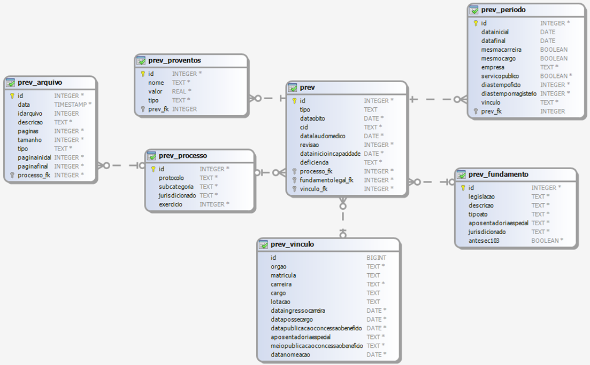
Apresenta-se a seguir breve descrição de cada uma das tabelas ora indicadas no diagrama relacional:
Tabela “prev”: Tabela principal de registros dos processos de aposentadoria, contendo as informações ou chaves necessárias para se obter todos os metadados referentes ao benefício previdenciário objeto de cada processo;
Tabela “prev_fundamento”: Tabela auxiliar com informações de todas as regras possíveis de serem referenciadas a cada processo;
Tabela “prev_vinculo”: Tabela auxiliar com informações dos servidores subjacentes às aposentadorias analisadas relacionadas ao último vínculo funcional
Tabela “prev_proventos”: Tabela auxiliar com informações de todas as parcelas componentes da última remuneração do cargo efetivo, bem como das parcelas componentes dos proventos de aposentadoria que o servidor passou a receber após a concessão pelo instituto de previdência, além do valor da média das remunerações percebidas pelo servidor ao longo da vida funcional;
Tabela “prev_periodo”: Tabela auxiliar com informações de cada um dos vínculos que compuseram o tempo de contribuição do servidor ao instituto de previdência, com identificação da carreira, do cargo, do tipo de vínculo (público ou privado) além da quantidade de dias de cada vínculo;
Tabela “prev_processo”: Tabela auxiliar com informações de cada um dos processos de aposentadoria que foram formalizados pelos institutos de previdência perante o Tribunal de Contas do Estado da Paraíba, tais como: número de protocolo no sistema TRAMITA, identificação do instituto de previdência que concedeu e o ano da concessão;
Tabela “prev_arquivos”: Tabela auxiliar com informações de cada arquivo componente dos autos de cada processo (relatórios de auditoria, despachos, certidões, citações etc.).
Dos cruzamentos iniciais
Como foi visto, a tabela “prev” é a tabela principal, a partir da qual são feitos os cruzamentos com as demais tabelas para se obter uma tabela consolidada que possa ser utilizada para fins do treinamento dos modelos.
Inicialmente, antes de qualquer cruzamento, é importante que se crie uma nova tabela (qtd_rels_por_processo) que sumarize, para cada processo já julgado, a quantidade de relatórios de auditoria que foram necessários para a instrução processual. Tal informação é gerada a partir do agrupamento da chave “processo_fk” da tabela “prev_arquivo”, realizando-se a contagem de “Relatório de Auditoria” gerados em cada processo:
# Comando SQL para criar tabela auxiliar no banco de dados consolidando os relatórios por processo
sql_command <- "
CREATE TABLE qtd_rels_por_processo AS
SELECT processo_fk, COUNT(*) AS total_registros
FROM prev_arquivo
WHERE tipo = 'Relatório da Auditoria'
GROUP BY processo_fk
ORDER BY total_registros DESC
"
# Conectar ao banco de dados
conn <- dbConnect(SQLite(), db_path)
# Executar uma consulta SQL
rows <- dbGetQuery(conn, sql_command)
# Commit para salvar as alterações no banco de dados
dbCommit(conn)
# Fechar a conexão
dbDisconnect(conn)Então, ainda por meio de comando SQL, faz-se o cruzamento da tabela “prev” com as tabelas “prev_processo”, “prev_vinculo”, “prev_fundamento” e “qtd_rels_por_processo”, uma vez que não há duplicidade de chaves que possam replicar linhas. O código abaixo gera uma primeira versão de tabela consolidada. Vejamos:
# Conectar ao banco de dados SQLite
conn <- dbConnect(RSQLite::SQLite(), db_path)
# Definir comando SQL a ser executado
sql_command <- "
CREATE TABLE tabela_consolidada AS
SELECT
main_tbl.id,
main_tbl.tipo,
main_tbl.datalaudomedico,
main_tbl.revisao,
main_tbl.datainicioincapacidade,
aux_proc.protocolo,
aux_proc.jurisdicionado,
aux_proc.exercicio,
aux_vinculo.orgao,
aux_vinculo.carreira,
aux_vinculo.cargo,
aux_vinculo.lotacao,
aux_vinculo.dataingressocarreira,
aux_vinculo.datapossecargo,
aux_vinculo.datapublicacaoconcessaobeneficio,
aux_vinculo.aposentadoriaespecial,
aux_vinculo.meiopublicacaoconcessaobeneficio,
aux_vinculo.datanomeacao,
aux_fundamento.legislacao,
aux_fundamento.descricao,
aux_fundamento.tipoato,
aux_proc.total_registros as qtd_relatorios_auditoria
FROM (SELECT * FROM prev WHERE LOWER(tipo) LIKE '%aposentadoria%') AS main_tbl
LEFT JOIN (SELECT * FROM prev_processo LEFT JOIN qtd_rels_por_processo ON prev_processo.id = qtd_rels_por_processo.processo_fk) as aux_proc ON main_tbl.processo_fk = aux_proc.id
LEFT JOIN (SELECT * FROM prev_vinculo) as aux_vinculo ON main_tbl.vinculo_fk = aux_vinculo.id
LEFT JOIN (SELECT * FROM prev_fundamento) as aux_fundamento ON main_tbl.fundamentolegal_fk = aux_fundamento.id
WHERE LOWER(aux_proc.subcategoria) LIKE '%aposentadoria%' AND aux_fundamento.antesec103 = 1
"
# Executar a consulta SQL
result <- dbGetQuery(conn, sql_command)
# Commit para salvar as alterações no banco de dados
dbCommit(conn)
# Close database connection
dbDisconnect(conn)Ocorre que ainda há informações das aposentadorias concedidas que não estão presentes na tabela consolidada, relativas às tabelas “prev_proventos” e “prev_periodo”. O cruzamento da tabela “prev” com essas tabelas necessita de um cuidado a mais para evitar a replicação de linhas. Por isso, explica-se a seguir, em tópico separado, cada uma das etapas para se atingir a tabela consolidada com todas as informações importantes constantes das tabelas auxiliares.
Da incorporação dos períodos e das quantidades de vínculos que compõem cada processo de concessão de aposentadoria
Para incorporar as informações dos vínculos componentes da vida funcional do aposentado, é necessário, antes de realizar o cruzamento com a tabela consolidada, agrupar a tabela “prev_periodo”, utilizando como chave de agrupamento o campo “prev_fk”, obtendo-se informações agregadas, quais sejam:
soma_dias_vinculo: soma dos dias de cada um dos vínculos que o aposentado contribuiu em sua vida funcional;
qtd_vinculos: conta a quantidade de vínculos que foram utilizados em períodos de contribuição do servidor;
qtd_vinculos_pub: conta a quantidade de vínculos no setor público;
qtd_vinculos_priv: conta a quantidade de vínculos no setor privado;
desc_empresas: concatena o nome das empresas ou órgãos públicos que o servidor teve vínculo ao longo de sua vida funcional, utilizando como separador a string “ / ”;
soma_dias_ficto: soma o período contado de forma ficta, nos termos da legislação autorizadora aplicável para aposentadoria diferenciada;
soma_dias_magisterio: soma o período que o servidor exerceu magistério, tendo em vista a diferença de regras aplicáveis para aposentadoria de professores;
qtd_vinculos_mesmo_cargo: conta a quantidade de vínculos que o servidor ocupou o mesmo cargo;
qtd_vinculos_mesma_carreira: conta a quantidade de vínculos que o servidor esteve na mesma carreira;
Para facilitar as transformações, importam-se as tabelas “prev_periodo” e “tabela_consolidada” para dataframes:
# Conectar ao banco de dados SQLite
conn <- dbConnect(RSQLite::SQLite(), db_path)
# Definir comando SQL a ser executado
consulta_1 <- "SELECT * from tabela_consolidada;"
consulta_2 <- "SELECT * FROM prev_periodo WHERE prev_fk IN (SELECT id FROM tabela_consolidada);"
# Executar a consulta SQL
df_principal <- dbGetQuery(conn, consulta_1)
df_prevperiodo <- dbGetQuery(conn, consulta_2)
# Commit para salvar as alterações no banco de dados
dbCommit(conn)
# Close database connection
dbDisconnect(conn)A partir dos dataframes, são realizadas operações preparatórias para o cruzamento com a tabela consolidada:
# Converter as colunas de data para objeto Date no dataframe
df_prevperiodo$datainicial <- as.Date(df_prevperiodo$datainicial)
df_prevperiodo$datafinal <- as.Date(df_prevperiodo$datafinal)
# Calcular número de dias de cada vínculo
df_prevperiodo$dias_vinculo <- as.numeric(df_prevperiodo$datafinal - df_prevperiodo$datainicial)
# Reordenar as colunas do dataframe
df_prevperiodo <- df_prevperiodo %>% select(id, prev_fk, datainicial, datafinal, dias_vinculo, mesmacarreira, mesmocargo, servicopublico, empresa, diastempoficto, diastempomagisterio)
print(nrow(df_prevperiodo))
# Transformando o dataframe para só ter um registro para cada processo, incorporando registros de prev_periodo
# Substituindo valores nulos por uma string vazia na coluna 'empresa'
df_prevperiodo$empresa[is.na(df_prevperiodo$empresa)] <- ''
# Realizando a transformação
df_resultante <- df_prevperiodo %>%
group_by(prev_fk) %>%
summarise(
soma_dias_vinculo = sum(dias_vinculo, na.rm = TRUE),
qtd_vinculos = n(),
qtd_vinculos_pub = sum(servicopublico, na.rm = TRUE),
qtd_vinculos_priv = n() - sum(servicopublico, na.rm = TRUE),
desc_empresas = paste(empresa, collapse = '/'),
soma_dias_ficto = sum(diastempoficto, na.rm = TRUE),
soma_dias_magisterio = sum(diastempomagisterio, na.rm = TRUE),
qtd_vinculos_mesmo_cargo = sum(mesmocargo, na.rm = TRUE),
qtd_vinculos_mesma_carreira = sum(mesmacarreira, na.rm = TRUE)
) %>%
ungroup()Após o agrupamento, torna-se possível realizar o cruzamento com o dataframe consolidado:
# Agregando a tabela de períodos à base principal
df_consolidado <- merge(df_principal, df_resultante, by.x = 'id', by.y = 'prev_fk', all = FALSE)
df_consolidado <- df_principal %>%
inner_join(df_resultante, by = c("id" = "prev_fk")) %>%
mutate(prev_fk = id)Obtém-se, então, uma nova base consolidada (df_consolidado), agora com informações dos períodos de contribuição de cada aposentadoria formalizada em processo perante o TCE/PB.
Da incorporação da composição dos proventos que compõem cada processo de aposentadoria
Para incorporar as informações de remuneração ao passar para inatividade e de proventos recebidos pelo aposentado, é necessário, antes de realizar o cruzamento com o dataframe consolidado, agrupar a tabela de “prev_proventos”, utilizando como chave de agrupamento o campo “prev_fk”, obtendo-se informações agregadas, quais sejam:
nome_proventos: concatena o nome das parcelas componentes dos proventos de aposentadoria concedidos pelo instituto de previdência, utilizando como separador a string “ / ”;
nome_Remuneração Cargo Efetivo: concatena o nome das parcelas componentes da última remuneração do cargo efetivo percebida pelo servidor enquanto estava na ativa, utilizando como separador a string “ / ”;
valor_média: obtem a média de todas as remunerações percebidas ao longo da vida funcional, somente para aqueles servidores que se aposentaram por regra que leva em conta tal média;
valor_proventos: soma de todas as parcelas de proventos que percebe na aposentadoria;
Valor_Remuneração Cargo Efetivo: soma de todas as parcelas que percebeu em sua última remuneração do cargo efetivo quando estava na ativa.
Para facilitar as transformações, importa-se a tabela “prev_proventos” para dataframe:
# Conectar ao banco de dados SQLite
conn <- dbConnect(RSQLite::SQLite(), db_path)
# Definir comando SQL a ser executado
consulta_3 <- "SELECT * FROM prev_proventos WHERE prev_fk IN (SELECT id FROM tabela_consolidada);"
# Executar a consulta SQL
df_prevproventos <- dbGetQuery(conn, consulta_3)
# Commit para salvar as alterações no banco de dados
dbCommit(conn)
# Close database connection
dbDisconnect(conn)A partir dos dataframes, é realizado o agrupamento preparatório para o cruzamento:
# Criando uma tabela dinâmica usando pivot_wider
df_proventos_ajustada <- df_prevproventos %>%
group_by(prev_fk, tipo) %>%
summarise(valor = sum(valor), nome = paste(nome, collapse = " / ")) %>%
pivot_wider(names_from = tipo, values_from = c(valor, nome))
# Resetando o índice para transformar 'prev_fk' em coluna
df_proventos_ajustada <- df_proventos_ajustada %>%
ungroup() %>%
as.data.frame()
# Renomeando as colunas conforme necessário
colnames(df_proventos_ajustada) <- sapply(colnames(df_proventos_ajustada), function(col) {
if (grepl("_", col)) {
return(col)
} else {
return(paste0(col, "_"))
}
})Logo, torna-se possível a realização do cruzamento com o dataframe consolidado anteriormente obtido:
# Ajustada a tabela de proventos, agora estamos prontos para adicioná-la à tabela consolidada
df_consolidado_2 <- merge(df_consolidado, df_proventos_ajustada, by.x = 'id', by.y = 'prev_fk', all = FALSE)
# Colunas para remover
colunas_para_remover <- c('prev_fk', 'nome_Média', 'nome_Remuneração', 'valor_Remuneração')
# Remove as colunas do DataFrame
df_consolidado_2 <- df_consolidado_2 %>%
select(-all_of(colunas_para_remover))Com a definição de uma tabela consolidada (df_consolidado_2), com todas as informações necessárias para a análise exploratória de dados, é importante armazená-la no banco de dados:
# Conectar ao banco de dados SQLite
conn <- dbConnect(SQLite(), db_path)
# armazena o dataframe consolidado em uma nova tabela chamada tabela_final no banco de dados
dbWriteTable(conexao, 'tabela_final', df_consolidado_2, row.names = TRUE, overwrite = TRUE)
# Fechar a conexão
dbDisconnect(conn)Da análise exploratória de dados (AED)
Feitas as operações e cruzamentos necessários à obtenção de uma tabela consolidada, cumpre-nos realizar uma análise exploratória dos dados. Nesse sentido, serão analisados cada um dos campos relevantes para o objeto de estudo.
Antes de passar à análise de cada campo, convém destacar que, ao importar a tabela consolidada do banco de dados SQLITE3, cria-se o dataframe chamado “df_tbl_final”:
db_path <- "mesp_previdencia.db"
# Conectar ao banco de dados SQLite
conn <- dbConnect(SQLite(), db_path)
# Exemplo de consulta SELECT
consulta_4 <- "SELECT * from tabela_final;"
# Executar a consulta e armazenar o resultado em um dataframe
df_tbl_final <- dbGetQuery(conn, consulta_4)
# Fechar a conexão
dbDisconnect(conn)A AED é composta de diversas análises ou decisões que são tomadas para preparar os dados para o treinamento dos modelos, destacando-se:
1. Resumo estatístico das variáveis;
2. Visualização gráfica dos atributos;
3. Avaliação de domínio;
4. Tratamento de dados ausentes;
5. Exclusão de atributos redundantes ou irrelevantes;
6. Análise de balanceamento de classes;
7. Avaliação de dimensionalidade;
8. Tratamento para evitar overfitting;
9. Engenharia de features.
A numeração da lista acima será utilizada como nota de rodapé, sempre que alguma das atividades listadas se enquadrar na etapa que se está explanando. Para ver o conteúdo da nota de rodapé, basta passar o mouse por cima do índice da nota.
Do campo “rotulo”
O primeiro passo da análise exploratória é a criação do rótulo classificatório de cada um dos processos componentes da base de dados. O rótulo (ou label) é fundamental em um modelo de aprendizagem supervisionada porque ele fornece a “resposta correta” que o modelo deve aprender a prever. Em termos mais técnicos:
Treinamento do Modelo: O rótulo é a variável dependente que o modelo tenta prever com base nas variáveis independentes (ou características). Durante o treinamento, o modelo ajusta seus parâmetros para minimizar o erro entre suas previsões e os rótulos verdadeiros.
Avaliação do Desempenho: Após o treinamento, o desempenho do modelo é avaliado comparando suas previsões com os rótulos reais em um conjunto de dados de teste. Métricas como acurácia, precisão, recall, F1-score, entre outras, são calculadas com base nos rótulos.
Aprendizagem: O processo de aprendizagem supervisionada depende diretamente dos rótulos para identificar padrões e relações entre as características dos dados e os resultados esperados. Sem rótulos, o modelo não teria um guia para aprender, tornando-se incapaz de generalizar para novos dados.
Generalização: O objetivo final de um modelo supervisionado é generalizar bem para novos dados não rotulados. A qualidade e a representatividade dos rótulos no conjunto de treinamento influenciam diretamente a capacidade do modelo de realizar boas previsões em dados futuros.
Para a presente pesquisa, considera-se apropriado utilizar a quantidade de relatórios de Auditoria que foram necessários na instrução de cada processo que compõe a base de treinamento da ferramenta. Dito de outra forma, se um processo foi julgado após apenas um relatório de auditoria, isso significa que não há irregularidades que tenham exigido explicações ou ajustes complementares pelo instituto de previdência. Ao revés, se um processo teve mais de um relatório de auditoria, isso significa que há maior risco no processo subjacente, sendo, então, o critério de risco diretamente proporcional à quantidade de relatórios técnicos emitidos antes do julgamento definitivo. A partir dessa avaliação, é possível a atribuição de um rótulo binário a cada processo que constitui a base de dados, o qual guiará a etapa de treinamento do algoritmo. Vejamos:
df_tbl_final <- df_tbl_final %>%
mutate(rotulo = ifelse(qtd_relatorios_auditoria == 1, 0, 1))Do campo “tipo”
Em suma, há 3 tipos de aposentadorias que compõem a base de processos do TCE/PB: a) geral; b) por invalidez; e c) compulsória. Vejamos como se dá a composição destes tipos1 2 3:
| tipo | n | percent | cum_percent |
|---|---|---|---|
| Aposentadoria Geral | 16479 | 92.8 | 92.8 |
| Aposentadoria por Invalidez | 1105 | 6.2 | 99.0 |
| Aposentadoria Compulsória | 181 | 1.0 | 100.0 |
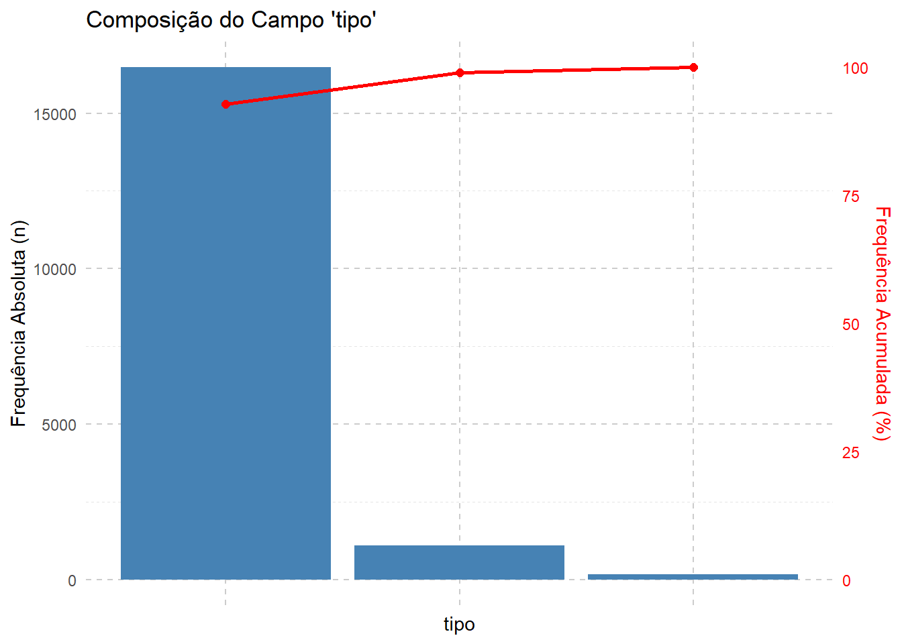
No que se refere à aposentadoria compulsória, observa-se que sua representatividade é de apenas 1% da base histórica de processos julgados. Nesse norte, essa composição quase irrelevante enseja a remoção de tais processos da base10, seja pelo risco de overfitting8, seja pelo ganho irrisório que adviria da automatização para tais instâncias.
As aposentadorias por invalidez, por sua vez, perfazem apenas 6.2% da base de dados. Embora seja mais representativa, há diversos requisitos distintos que permeiam a análise de invalidez quando comparado às aposentadorias em geral, os quais não estão bem demonstrados nos atributos da base de dados disponível. Assim, a melhor solução é não incluir tais processos na automatização pretendida10, considerando-os sempre prioritários para a análise pela Auditoria.
Tais exclusões estão dispostas no código a seguir, vejamos:
valor_excluir_1 <- "Aposentadoria Compulsória"
valor_excluir_2 <- "Aposentadoria por Invalidez"
df_tbl_final <- df_tbl_final %>% filter(tipo != valor_excluir_1 & tipo != valor_excluir_2)Do campo “aposentadoriaespecial”
Tal atributo indica se o processo corresponde a alguma aposentadoria que tem regra particular derivada de sua natureza especial. Sobre esse tópico, destacam-se as aposentadorias de professores da educação básica, de serviços penosos, de policiais e de deficientes. Vejamos a composição inicial de tal campo1 2 3:
| aposentadoriaespecial | n | percent | cum_percent |
|---|---|---|---|
| Aposentadoria Comum | 12228 | 74.2 | 74.2 |
| Professor | 4208 | 25.5 | 99.7 |
| Serviços Penosos | 33 | 0.2 | 99.9 |
| Policial Civil | 9 | 0.1 | 100.0 |
| Deficiente | 1 | 0.0 | 100.0 |
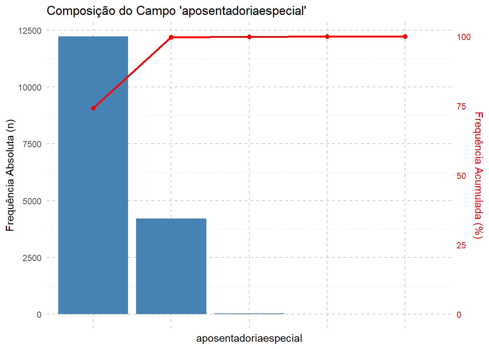
Sobre tal tema, tendo em vista a baixíssima representatividade das aposentadorias especiais que não são de professores, para evitar problemas de overfitting, é desejável que tal campo seja convertido em um flag binário que identifique apenas se o processo é derivado de aposentadoria especial ou não. Tal transformação está disposta no código a seguir9, vejamos:
# Criando flag de aposentadoria especial
df_tbl_final$PARA_aposentadoriaespecial <- ifelse((df_tbl_final$aposentadoriaespecial!="Aposentadoria Comum"), 1, 0)| PARA_aposentadoriaespecial | n | percent | cum_percent |
|---|---|---|---|
| 0 | 12228 | 74.2 | 74.2 |
| 1 | 4251 | 25.8 | 100.0 |
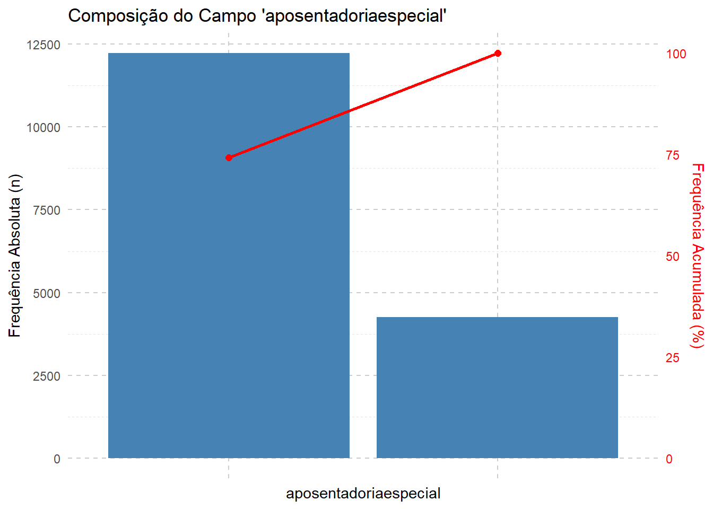
Do campo “jurisdicionado”
Jurisdicionados, para os fins do presente projeto, são os institutos de previdência que aprovaram a concessão de cada aposentadoria. São eles que enviam os dados ao TCE/PB e, a depender da qualidade do trabalho que realizam, sua identificação é importante para a percepção do risco implícito no processo.
Composição inicial dos institutos de previdência
Inicialmente, convém avaliarmos a composição dos dados3 de tal campo antes de qualquer transformação, para que se possa ter uma percepção acerca da quantidade de registros por categoria existente na base de dados1. A partir de tal dataframe, observa-se a seguinte composição inicial do campo, em versões tabulada e gráfica2:
| jurisdicionado | n | percent | cum_percent |
|---|---|---|---|
| Paraíba Previdência | 7256 | 44.0 | 44.0 |
| Instituto de Previdência do Município de João Pessoa | 2138 | 13.0 | 57.0 |
| Instituto de Prev. dos Serv. Mun. de Campina Grande | 1255 | 7.6 | 64.6 |
| Instituto de Prev. e Assistência dos Serv. Pub. do Mun. de Bayeux | 410 | 2.5 | 67.1 |
| Instituto de Previdência do Município de Santa Rita | 290 | 1.8 | 68.9 |
| Instituto de Prev. dos Servidores Municipais de Lagoa Seca | 258 | 1.6 | 70.4 |
| Instituto de Prev. Social dos Servidores de Caaporã | 238 | 1.4 | 71.9 |
| Instituto de Previdência Municipal de Queimadas | 218 | 1.3 | 73.2 |
| Instituto de Seguridade Social do Municipio de Patos | 213 | 1.3 | 74.5 |
| Instituto de Assistência e Prev. Mun. de Guarabira | 211 | 1.3 | 75.8 |
| Fundo de Previdência Social dos Serv. do Mun. de Esperança | 201 | 1.2 | 77.0 |
| Instituto de Prev. dos Serv. Mun. de Cabedelo | 194 | 1.2 | 78.2 |
| Instituto de Prev. e Assistência do Município de Cajazeiras | 169 | 1.0 | 79.2 |
| Fundo de Previdência de Sapé | 142 | 0.9 | 80.1 |
| Instituto de Previdência de Alagoa Nova | 137 | 0.8 | 80.9 |
| Instituto de Prev. Municipal de Pedras de Fogo | 132 | 0.8 | 81.7 |
| Instituto Municipal de Previdência de São Bento | 118 | 0.7 | 82.4 |
| Instituto de Prev. Social dos Servidores da Pref. de Picuí | 110 | 0.7 | 83.1 |
| Instituto Previdênciário do Município de Juazeirinho | 99 | 0.6 | 83.7 |
| Instituto de Previdência dos Servidores Municipais de Soledade | 99 | 0.6 | 84.3 |
| Instituto de Previdência de Paulista | 98 | 0.6 | 84.9 |
| Instituto de Previdência dos Servidores de Santa Cruz | 96 | 0.6 | 85.5 |
| Instituto de Previdência dos Servidores de Cuité | 93 | 0.6 | 86.0 |
| Conde Previdência - CONDEPREV | 90 | 0.5 | 86.6 |
| Instituto de Prev. dos Servidores de Princesa Isabel | 88 | 0.5 | 87.1 |
| Inst. de Prev. Social dos Servidores Públicos do Mun. de Santa Luzia | 85 | 0.5 | 87.6 |
| Instituto de Previdência Municipal de Lucena | 84 | 0.5 | 88.1 |
| Instituto de Previdência dos Servidores Municipais de Belém | 84 | 0.5 | 88.6 |
| Instituto de Prev. dos Serv. do Mun. de Serra Branca | 80 | 0.5 | 89.1 |
| Instituto de Prev. e Assistência do Município de Jacaraú | 79 | 0.5 | 89.6 |
| Instituto de Seguridade Social do Municipio de Alhandra | 78 | 0.5 | 90.1 |
| Instituto de Previdência dos Serv. Púb. de Nova Palmeira | 76 | 0.5 | 90.5 |
| Fundo de Aposentadoria e Pensão de Barra de Santa Rosa | 75 | 0.5 | 91.0 |
| Instituto de Prev. dos Serv. Municipal Bonitense | 74 | 0.4 | 91.4 |
| Instituto Bananeirense de Previdência Municipal IBPEM | 69 | 0.4 | 91.9 |
| Instituto de Prev. do Município de Alagoinha | 69 | 0.4 | 92.3 |
| Autarquia Municipal Mari PREV | 68 | 0.4 | 92.7 |
| Instituto de Prev. dos Serv. do Mun. de Pilõezinhos | 67 | 0.4 | 93.1 |
| Instituto de Previdência e Assistência Social de Sumé | 67 | 0.4 | 93.5 |
| Instituto de Prev. dos Serv. Pub. Mun. de Pedra Lavrada | 62 | 0.4 | 93.9 |
| Instituto de Previdência do Municipio de Brejo do Cruz | 59 | 0.4 | 94.2 |
| Instituto de Prev. dos Serv. Mun. de S. S. de Lagoa de Roça | 58 | 0.4 | 94.6 |
| Instituto de Prev. e Assistência do Município de Pilões | 57 | 0.3 | 94.9 |
| Instituto de Previdência do Município de Taperoá | 53 | 0.3 | 95.3 |
| Instituto de Prev. dos Serv. do Mun. de Remígio | 49 | 0.3 | 95.6 |
| Instituto de Previdência dos Servidores Municipais do Poder Executivo e Legislativo de Água Branca | 48 | 0.3 | 95.8 |
| Instituto de Prev. dos Serv. Mun. de Nazarezinho | 47 | 0.3 | 96.1 |
| Instituto de Previdência dos Serv. Púb. de Dona Inês | 43 | 0.3 | 96.4 |
| Instituto de Prev. do Mun. de Belém do Brejo do Cruz | 42 | 0.3 | 96.6 |
| Instituto Municipal de Previdência de Arara | 41 | 0.2 | 96.9 |
| Instituto de Prev. dos Serv. Pub. do Mun. de São José da Lagoa Tapada | 41 | 0.2 | 97.1 |
| Instituto de Prev. e Assistência do Município de Bom Jesus | 40 | 0.2 | 97.4 |
| Instituto de Previdência Municipal de Diamante | 39 | 0.2 | 97.6 |
| Instituto de Previdência do Município de Desterro | 36 | 0.2 | 97.8 |
| Instituto de Prev. do Município de Cuitegi | 34 | 0.2 | 98.0 |
| Instituto de Prev. dos Servidores de Frei Martinho | 33 | 0.2 | 98.2 |
| Instituto de Previdencia dos Servidores Municipais de Juru | 33 | 0.2 | 98.4 |
| Instituto de Prev. dos Serv. Públicos de Caldas Brandão | 25 | 0.2 | 98.6 |
| Instituto de Regime Próprio de Previdência Social de Montadas | 25 | 0.2 | 98.7 |
| Instituto de Previdência Municipal de Pirpirituba | 24 | 0.1 | 98.9 |
| Instituto de Prev. dos Serv. do Munic. de São José dos Ramos | 23 | 0.1 | 99.0 |
| Prefeitura Municipal de Montadas | 23 | 0.1 | 99.2 |
| Instituto de Prev. dos Serv. de Algodão de Jandaíra | 21 | 0.1 | 99.3 |
| Instituto de Prev. do Município de Sertãozinho | 19 | 0.1 | 99.4 |
| Instituto de Previdência do Munícipio de Cacimbas | 17 | 0.1 | 99.5 |
| Instituto Poçodantense de Previdência Municipal | 16 | 0.1 | 99.6 |
| Instituto Cachoeirense de Previdência Municipal | 15 | 0.1 | 99.7 |
| Inst. Prev. Assistência Social de Riachão | 14 | 0.1 | 99.8 |
| Instituto de Prev. e Assist. Municipal Santa Helena | 14 | 0.1 | 99.9 |
| Instituto de Prev. dos Serv. Pub. de Poço José de Moura | 9 | 0.1 | 99.9 |
| IPMM - Instituto de Previdência Municipal de Montadas | 5 | 0.0 | 100.0 |
| Instituto de Prev. e Assist. Social dos Serv. de Marizópolis | 5 | 0.0 | 100.0 |
| Prefeitura Municipal de Bayeux | 1 | 0.0 | 100.0 |
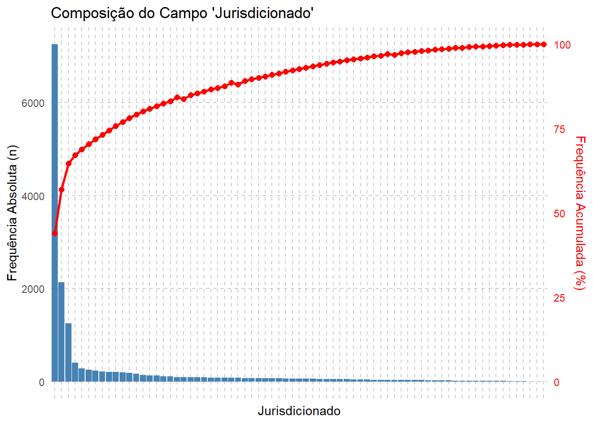
Transformação de categorias
Perceba que há muitas categorias com pouca representatividade que pouco acrescentarão ao aprendizado. Ademais, categorias com pouca representatividade contribuem para risco de overfitting e, para evitar tal problema, é preciso que tal campo seja tratado8. Para tanto, cria-se uma categoria residual chamada “Outros”, realizando um corte das categorias que tenham 300 ou mais instâncias9, vejamos:
# Carregue as bibliotecas necessárias
library(dplyr)
# Substitua as categorias com menos de 300 ocorrências por "Outros"
df_tbl_final <- df_tbl_final %>%
group_by(jurisdicionado) %>%
mutate(count = n()) %>%
ungroup() %>%
mutate(jurisdicionado = ifelse(count < 300, "Outros", jurisdicionado)) %>%
select(-count)
# Verifique a nova composição do campo "jurisdicionado"
df_composicao <- df_tbl_final %>%
count(jurisdicionado) %>%
mutate(percent = (n / sum(n)) * 100) %>%
arrange(desc(n)) %>%
mutate(cum_percent = cumsum(percent)) %>%
mutate(percent = round(percent, 1),
cum_percent = round(cum_percent, 1))Composição final dos jurisdicionados
Após a transformação, chega-se à seguinte composição para o campo “Jurisdicionado”2 3:
| jurisdicionado | n | percent | cum_percent |
|---|---|---|---|
| Paraíba Previdência | 7256 | 44.0 | 44.0 |
| Outros | 5420 | 32.9 | 76.9 |
| Instituto de Previdência do Município de João Pessoa | 2138 | 13.0 | 89.9 |
| Instituto de Prev. dos Serv. Mun. de Campina Grande | 1255 | 7.6 | 97.5 |
| Instituto de Prev. e Assistência dos Serv. Pub. do Mun. de Bayeux | 410 | 2.5 | 100.0 |
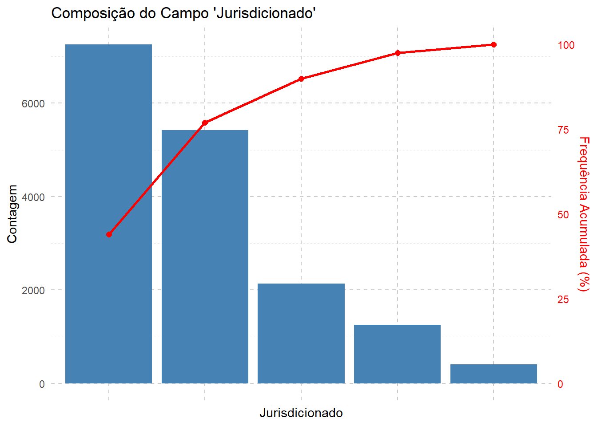
[1] "Aposentadoria voluntária por idade e tempo de contribuição. Proventos integrais."
[2] "Aposentadoria voluntária por tempo de contribuição - Art. 3 - Proventos integrais para servidores que ingressaram no serviço público até 16/12/1998"
[3] "Aposentadoria voluntária por tempo de contribuição - Art. 6 - Proventos integrais para professores que ingressaram no serviço público até 31/12/2003 e que se aposentem, exclusivamente, com tempo de efetivo exercício das funções de magistério."
[4] "Aposentadoria voluntária por tempo de contribuição - Art. 6 - Proventos integrais para servidores que ingressaram no serviço público até 31/12/2003"
[5] "Aposentadoria voluntária proporcional por idade e tempo de contribuição." Do campo “descrição”
O campo “descrição” é categórico e apresenta a descrição resumida da regra de aposentadoria que foi utilizada como fundamento para cada ato concessório.
Composição inicial das regras
Inicialmente, convém avaliarmos a composição dos dados de tal campo antes de qualquer transformação3, para que se possa ter uma percepção acerca da quantidade de registros por categoria existente na base de dados1. Vejamos isso de forma tabulada e gráfica2:
| descricao | n | percent | cum_percent |
|---|---|---|---|
| Aposentadoria voluntária por tempo de contribuição - Art. 3 - Proventos integrais para servidores que ingressaram no serviço público até 16/12/1998 | 9005 | 54.6 | 54.6 |
| Aposentadoria voluntária por tempo de contribuição - Art. 6 - Proventos integrais para professores que ingressaram no serviço público até 31/12/2003 e que se aposentem, exclusivamente, com tempo de efetivo exercício das funções de magistério. | 3961 | 24.0 | 78.7 |
| Aposentadoria voluntária proporcional por idade e tempo de contribuição. | 1644 | 10.0 | 88.7 |
| Aposentadoria voluntária por tempo de contribuição - Art. 6 - Proventos integrais para servidores que ingressaram no serviço público até 31/12/2003 | 1052 | 6.4 | 95.0 |
| Aposentadoria voluntária por idade e tempo de contribuição. Proventos integrais. | 538 | 3.3 | 98.3 |
| Aposentadoria voluntária por tempo de serviço para professor. | |||
| Requisitos implementados até 16/12/1998. Proventos integrais. | 70 | 0.4 | 98.7 |
| Aposentadoria voluntária por tempo de contribuição - Art. 2 - Pedágio de 20% com proventos reduzidos, calculados pela média das maiores remunerações. | 40 | 0.2 | 99.0 |
| Aposentadoria voluntária por idade e tempo de contribuição para professor. | |||
| Requisitos implementados até 20/02/2004. Proventos integrais. | 35 | 0.2 | 99.2 |
| Aposentadoria voluntária proporcional por idade e tempo de contribuição. | |||
| Requisitos implementados até 20/02/2004. | 35 | 0.2 | 99.4 |
| Aposentadoria voluntária por idade e tempo de contribuição para atividade insalubre. Proventos integrais. | 33 | 0.2 | 99.6 |
| Aposentadoria voluntária proporcional por idade. | |||
| Requisitos implementados até 16/12/1998. | 15 | 0.1 | 99.7 |
| Aposentadoria voluntária por idade e tempo de contribuição. | |||
| Requisitos implementados até 20/02/2004. Proventos integrais. | 12 | 0.1 | 99.8 |
| Aposentadoria voluntária de policial civil por tempo de contribuição para policial civil. Proventos integrais. | 9 | 0.1 | 99.8 |
| Aposentadoria voluntária por tempo de serviço. | |||
| Requisitos implementados até 16/12/1998. Proventos integrais. | 8 | 0.0 | 99.9 |
| Aposentadoria voluntária por tempo de contribuição - Art. 2 - Pedágio de 20% e Bônus de 17% (20% se mulher) com proventos reduzidos para professor que se aposente, exclusivamente, com tempo de efetivo exercício das funções de magistério. | 6 | 0.0 | 99.9 |
| Aposentadoria voluntária por tempo de contribuição - Art. 8 - Pedágio de 20% Proventos integrais. | 5 | 0.0 | 99.9 |
| Aposentadoria voluntária proporcional por idade e tempo de contribuição. | |||
| Requisitos implementados até 21/06/2004. | 3 | 0.0 | 100.0 |
| Aposentadoria voluntária proporcional por tempo de serviço. | |||
| Requisitos implementados até 16/12/1998. | 3 | 0.0 | 100.0 |
| Aposentadoria voluntária por tempo de contribuição - Art. 8 - Pedágio de 40% para aposentadoria proporcional | 2 | 0.0 | 100.0 |
| Aposentadoria voluntária por idade e tempo de contribuição para portador de deficiência. Proventos integrais. | 1 | 0.0 | 100.0 |
| Aposentadoria voluntária por tempo de contribuição - Art. 8 - Pedágio de 20% e Bônus de 17% (20% se mulher) para professor que se aposente, exclusivamente, com tempo de efetivo exercício das funções de magistério. Proventos integrais. | 1 | 0.0 | 100.0 |
| Aposentadoria voluntária por tempo de contribuição - Art. 8 - Pedágio de 40% e Bônus de 17% (20% se mulher) para aposentadoria proporcional de professor que se aposente, exclusivamente, com tempo de efetivo exercício das funções de magistério. | 1 | 0.0 | 100.0 |
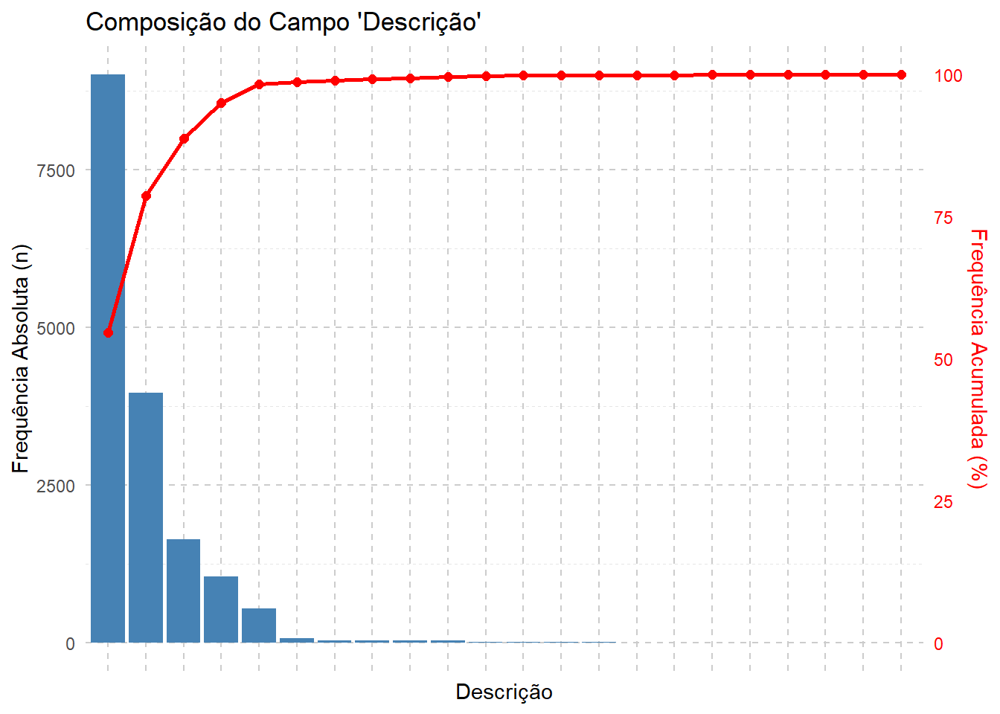
Transformação de categorias
Perceba que há muitas categorias com pouca representatividade que pouco acrescentarão ao aprendizado. Ademais, categorias com pouca representatividade contribuem para risco de overfitting e, para evitar tal problema, é preciso que tal campo seja tratado8. Para tanto, cria-se uma categoria residual chamada “Outros”, realizando um corte das categorias que tenham 500 ou mais instâncias9, vejamos:
# Carregue as bibliotecas necessárias
library(dplyr)
# Substitua as categorias com menos de 200 ocorrências por "Outros"
df_tbl_final <- df_tbl_final %>%
group_by(descricao) %>%
mutate(count = n()) %>%
ungroup() %>%
mutate(descricao = ifelse(count < 500, "Outros", descricao)) %>%
select(-count)
# Verifique a nova composição do campo "descricao"
df_composicao <- df_tbl_final %>%
count(descricao) %>%
mutate(percent = (n / sum(n)) * 100) %>%
arrange(desc(n)) %>%
mutate(cum_percent = cumsum(percent)) %>%
mutate(percent = round(percent, 1),
cum_percent = round(cum_percent, 1))Composição final das regras
Após a transformação, chega-se à seguinte composição final para o campo “descrição”2 3:
| descricao | n | percent | cum_percent |
|---|---|---|---|
| Aposentadoria voluntária por tempo de contribuição - Art. 3 - Proventos integrais para servidores que ingressaram no serviço público até 16/12/1998 | 9005 | 54.6 | 54.6 |
| Aposentadoria voluntária por tempo de contribuição - Art. 6 - Proventos integrais para professores que ingressaram no serviço público até 31/12/2003 e que se aposentem, exclusivamente, com tempo de efetivo exercício das funções de magistério. | 3961 | 24.0 | 78.7 |
| Aposentadoria voluntária proporcional por idade e tempo de contribuição. | 1644 | 10.0 | 88.7 |
| Aposentadoria voluntária por tempo de contribuição - Art. 6 - Proventos integrais para servidores que ingressaram no serviço público até 31/12/2003 | 1052 | 6.4 | 95.0 |
| Aposentadoria voluntária por idade e tempo de contribuição. Proventos integrais. | 538 | 3.3 | 98.3 |
| Outros | 279 | 1.7 | 100.0 |
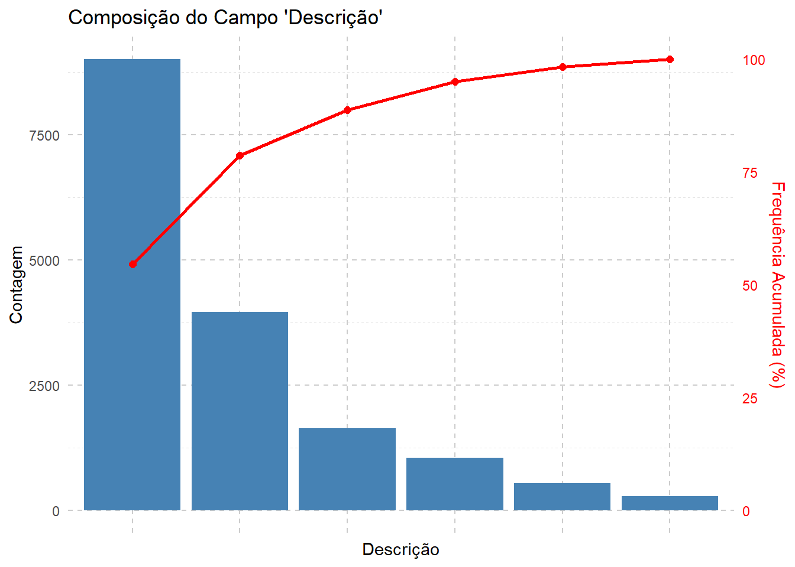
Do campo “órgão”
O campo “órgão” corresponde ao órgão ao qual o servidor estava vinculado ao ter sua aposentadoria concedida pelo instituto de previdência. É um campo livre que possivelmente terá pouco potencial explicativo na avaliação de risco. No entanto, faz-se uma mínima análise a seguir.
Composição inicial dos órgãos
Inicialmente, convém avaliarmos a composição dos dados3 de tal campo antes de qualquer transformação, para que se possa ter uma percepção acerca da quantidade de registros por categoria existente na base de dados1. A seguir, observa-se a seguinte composição inicial do campo, em versões tabulada e gráfica2:
| orgao | n | percent | cum_percent |
|---|---|---|---|
| SECRETARIA DE ESTADO DA EDUCAÇÃO | 1950 | 11.8 | 11.8 |
| SECRETARIA DE ESTADO DA SAUDE | 1250 | 7.6 | 19.4 |
| PREFEITURA MUNICIPAL DE CAMPINA GRANDE | 1221 | 7.4 | 26.8 |
| SECRETARIA DA EDUCAÇÃO E CULTURA | 1129 | 6.9 | 33.7 |
| PREFEITURA MUNICIPAL | 434 | 2.6 | 36.3 |
| SECRETARIA ESTADUAL DA CULTURA | 412 | 2.5 | 38.8 |
| SECRETARIA MUNICIPAL DE SAÚDE | 334 | 2.0 | 40.8 |
| PREFEITURA MUNICIPAL DE BAYEUX | 271 | 1.6 | 42.5 |
| ASSEMBLEIA LEGISLATIVA | 265 | 1.6 | 44.1 |
| SECRETARIA DE ESTADO DA EDUCACAO | 245 | 1.5 | 45.6 |
| UNIVERSIDADE ESTADUAL DA PARAIBA | 240 | 1.5 | 47.0 |
| PREFEITURA MUNICIPAL DE QUEIMADAS | 214 | 1.3 | 48.3 |
| PMSR | 206 | 1.3 | 49.6 |
| Prefeitura Municipal de Guarabira | 204 | 1.2 | 50.8 |
| SEC. EST. DA CULTURA | 201 | 1.2 | 52.0 |
| PREFEITURA MUNICIPAL DE ESPERANÇA | 196 | 1.2 | 53.2 |
| DEPARTAMENTO DE ESTRADAS DE RODAGEM | 189 | 1.1 | 54.4 |
| SECRETARIA DA EDUCACAO E CULTURA | 189 | 1.1 | 55.5 |
| SECRETARIA MUNICIPAL DE EDUCAÇÃO | 168 | 1.0 | 56.5 |
| PREFEITURA MUNICIPAL DE CAJAZEIRAS | 162 | 1.0 | 57.5 |
| SEC.EST.RECEITA | 161 | 1.0 | 58.5 |
| SECRETARIA DA ADMINISTRACAO | 161 | 1.0 | 59.5 |
| PREFEITURA MUNICIPAL DE CABEDELO | 147 | 0.9 | 60.4 |
| SECRETARIA DE ESTADO DO DESENVOLVIMENTO HUMANO | 147 | 0.9 | 61.3 |
| SECRETARIA DE EDUCAÇÃO | 143 | 0.9 | 62.1 |
| INST. DE ASSIST. A SAUDE DO SERVIDOR | 140 | 0.8 | 63.0 |
| PREFEITURA MUNICIPAL DE ALAGOA NOVA | 133 | 0.8 | 63.8 |
| Prefeitura Municipal de Bayeux | 133 | 0.8 | 64.6 |
| SECRETARIA DE EDUCAÇÃO E CULTURA | 117 | 0.7 | 65.3 |
| SECRETARIA DE ESTADO DO DESENV. DA AGROPECUARIA E DA PESCA | 112 | 0.7 | 66.0 |
| Prefeitura Municipal de Sapé | 109 | 0.7 | 66.6 |
| FUNDACAO DESENVOLVIMENTO DA CRIANCA E DO ADOLESCENTE | 108 | 0.7 | 67.3 |
| Prefeitura Municipal de Lagoa Seca | 108 | 0.7 | 68.0 |
| TRIBUNAL DE JUSTICA DA PARAIBA | 103 | 0.6 | 68.6 |
| DEPARTAMENTO ESTADUAL DE TRANSITO | 98 | 0.6 | 69.2 |
| Prefeitura Municipal de Picuí | 96 | 0.6 | 69.8 |
| SEC.EST.SEGUR E DEFESA SOCIAL | 90 | 0.5 | 70.3 |
| PREFEITURA MUNICIPAL DE LAGOA SECA | 89 | 0.5 | 70.8 |
| SEC.EST.CIDADAN. E ADM. PENIT. | 82 | 0.5 | 71.3 |
| Prefeitura Municipal de São Bento | 78 | 0.5 | 71.8 |
| PREFEITURA MUNICIPAL DE SANTA CRUZ PB | 76 | 0.5 | 72.3 |
| SECRETARIA DA SAUDE | 73 | 0.4 | 72.7 |
| PREFEITURA MUNICIPAL DE CAAPORÃ | 69 | 0.4 | 73.1 |
| SEC. EST. EDUCAÇÃO | 67 | 0.4 | 73.5 |
| SUPERITENDENCIA DE OBRAS DO PLANO DE DESENV DO ESTADO | 66 | 0.4 | 73.9 |
| Secretaria de Educação | 66 | 0.4 | 74.3 |
| PREFEITURA MUNICIPAL DE PEDRAS DE FOGO | 64 | 0.4 | 74.7 |
| PREFEITURA MUNICIPAL DE BARRA DE SANTA ROSA | 63 | 0.4 | 75.1 |
| SEC. EST. GOVERNO | 63 | 0.4 | 75.5 |
| GABINETE DO PREFEITO | 62 | 0.4 | 75.9 |
| PREFEITURA MUNICIPAL DE ALAGOINHA | 62 | 0.4 | 76.3 |
| PREFEITURA MUNICIPAL DE ALHANDRA | 62 | 0.4 | 76.6 |
| SECRETARIA DE ESTADO DO PLANEJAMENTO, ORÇAMENTO E GESTÃO | 62 | 0.4 | 77.0 |
| SECRETARIA DA ADMINISTRAÇÃO | 60 | 0.4 | 77.4 |
| SECRETARIA DE SEGURANÇA URBANA E CIDADANIA | 60 | 0.4 | 77.7 |
| Prefeitura Municipal de Soledade | 58 | 0.4 | 78.1 |
| PREFEITURA MUNICIPAL DE CONDE | 56 | 0.3 | 78.4 |
| SEC. DE SEG. URB. E CIDADANIA | 56 | 0.3 | 78.8 |
| Prefeitura Municipal de Lucena | 53 | 0.3 | 79.1 |
| SECRETARIA DE INFRAESTRUTURA | 52 | 0.3 | 79.4 |
| Prefeitura Municipal de Princesa Isabel | 51 | 0.3 | 79.7 |
| Prefeitura Municipal de Santa Rita | 51 | 0.3 | 80.0 |
| INSTITUTO DE ASSISTENCIA A SAÚDE DO SERVIDOR - IASS | 49 | 0.3 | 80.3 |
| PREFEITURA MUNICIPAL DE PILÕES | 49 | 0.3 | 80.6 |
| SECRETARIA MUNICIPAL DE DESENVOLVIMENTO URBANO | 49 | 0.3 | 80.9 |
| CONTROLADORIA GERAL DO ESTADO | 47 | 0.3 | 81.2 |
| Prefeitura Municipal de Juazeirinho | 47 | 0.3 | 81.5 |
| SEC.EST.DESENVOLVIMENTO HUMANO | 47 | 0.3 | 81.8 |
| INSTITUTO DE TERRAS E PLANEJ AGRICOLA DO ESTADO DA PB | 46 | 0.3 | 82.0 |
| SECRETARIA DE EDUCAÇAO | 44 | 0.3 | 82.3 |
| Prefeitura Municipal de Montadas | 41 | 0.2 | 82.6 |
| PREFEITURA MUNICIPAL DE ARARA | 40 | 0.2 | 82.8 |
| Prefeitura Municipal de Santa Luzia | 40 | 0.2 | 83.1 |
| SECRETARIA DE ESTADO DO TURISMO E DESEN. ECONOMICO | 40 | 0.2 | 83.3 |
| PREFEITURA MUNICIPAL DE SANTA LUZIA | 39 | 0.2 | 83.5 |
| PREFEITURA MUNICIPAL DE SUMÉ | 39 | 0.2 | 83.8 |
| PREFEITURA MUNICIPAL DE CUITÉ | 38 | 0.2 | 84.0 |
| SECRETARIA DA RECEITA MUNICIPAL | 38 | 0.2 | 84.2 |
| PREFEITURA MUNICIPAL DE SOLEDADE | 37 | 0.2 | 84.5 |
| MINISTERIO PUBLICO | 36 | 0.2 | 84.7 |
| PREFEITURA MUNICIPAL DE CUITE | 36 | 0.2 | 84.9 |
| PREFEITURA MUNICIPAL DE PEDRA LAVRADA | 36 | 0.2 | 85.1 |
| SEC.EST.EDUCAÇÃO | 36 | 0.2 | 85.3 |
| PREFEITURA MUNICIPAL DE PRINCESA ISABEL | 35 | 0.2 | 85.5 |
| PROCURADORIA GERAL DA DEFENSORIA PUBLICA | 35 | 0.2 | 85.8 |
| Prefeitura Municipal | 35 | 0.2 | 86.0 |
| PREFEITURA MUNICIPAL DE NAZAREZINHO | 34 | 0.2 | 86.2 |
| PREFEITURA MUNICIPAL DE REMIGIO | 34 | 0.2 | 86.4 |
| Prefeitura Municipal de Água Branca | 34 | 0.2 | 86.6 |
| prefeitura municipal de lagoa seca | 34 | 0.2 | 86.8 |
| IPREV | 33 | 0.2 | 87.0 |
| PREFEITURA MUNICIPAL DE BANANEIRAS | 33 | 0.2 | 87.2 |
| Prefeitura Municipal de Taperoá | 33 | 0.2 | 87.4 |
| SECRETARIA EXTR COMUNICACAO INSTITUCIONAL | 33 | 0.2 | 87.6 |
| PREFEITURA MUNICIPAL DE DESTERRO | 32 | 0.2 | 87.8 |
| PREFEITURA MUNICIPAL DE BREJO DO CRUZ | 30 | 0.2 | 88.0 |
| PREFEITURA MUNICIPAL DE PILOEZINHOS | 30 | 0.2 | 88.1 |
| Prefeitura Municipal de Brejo do Cruz | 30 | 0.2 | 88.3 |
| Prefeitura Municipal de Pedras de Fogo | 29 | 0.2 | 88.5 |
| Prefeitura Municipal de Serra Branca | 29 | 0.2 | 88.7 |
| PREFEITURA MUNICIPAL DE DONA INÊS | 28 | 0.2 | 88.9 |
| PREFEITURA MUNICIPAL DE SUME | 28 | 0.2 | 89.0 |
| PREFEITURA MUNICIPAL DE BELÉM | 27 | 0.2 | 89.2 |
| PUBLICO | 27 | 0.2 | 89.4 |
| SEC.EST.DESENV.AGROPEC.PESCA | 27 | 0.2 | 89.5 |
| SEC.EST.REC.HID.M.AMB.CIEN.TEC | 27 | 0.2 | 89.7 |
| PREFEITURA DE SÃO SEBASTIÃO DE LAGOA DE ROÇA | 26 | 0.2 | 89.8 |
| PREFEITURA MUNICIPAL DE SERRA BRANCA | 26 | 0.2 | 90.0 |
| PROCURADORIA GERAL DO ESTADO | 26 | 0.2 | 90.2 |
| POLICIA MILITAR DO ESTADO DA PARAIBA | 25 | 0.2 | 90.3 |
| Prefeitura Municipal de Cabedelo | 24 | 0.1 | 90.4 |
| PREFEITURA | 23 | 0.1 | 90.6 |
| SECRETARIA DE EDUCACAO | 23 | 0.1 | 90.7 |
| PBPREV - PARAIBA PREVDENCIA | 22 | 0.1 | 90.9 |
| PREFEITURA MUNICIPAL DE BOM JESUS | 21 | 0.1 | 91.0 |
| PREFEITURA MUNICIPAL DE SÃO SEBASTIÃO DE LAGOA DE ROÇA | 21 | 0.1 | 91.1 |
| PREFEITURA MUNICIPAL DE SÃO BENTO | 20 | 0.1 | 91.2 |
| SECRETARIA DE PLANEJAMENTO | 20 | 0.1 | 91.4 |
| TRIBUNAL DE CONTAS | 20 | 0.1 | 91.5 |
| PREFEITURA MUNICIPAL DE CAMPINA GRANDE - PB | 19 | 0.1 | 91.6 |
| SECRETARIA DE ADMINISTRAÇÃO | 19 | 0.1 | 91.7 |
| PREFEITURA MUNICIPAL DE SAO BENTO | 18 | 0.1 | 91.8 |
| SECRETARIA DE ESTADO DA SAÚDE | 18 | 0.1 | 91.9 |
| prefeitura municipal de bananeiras | 18 | 0.1 | 92.0 |
| AUTARQUIA ESPECIAL MUNICIPAL DE LIMPEZA URBANA | 17 | 0.1 | 92.1 |
| PREFEITURA MUNICIPAL DE CACIMBAS | 17 | 0.1 | 92.2 |
| PREFEITURA MUNICIPAL DE DIAMANTE | 17 | 0.1 | 92.3 |
| PREFEITURA MUNICIPAL DE SANTA CRUZ | 17 | 0.1 | 92.5 |
| Prefeitura Municipal de Cuité | 17 | 0.1 | 92.6 |
| SECRETARIA DE DESENVOLVIMENTO SOCIAL | 17 | 0.1 | 92.7 |
| Sec de Educação | 17 | 0.1 | 92.8 |
| PREFEITURA MUNICIPAL DE NOVA PALMEIRA | 16 | 0.1 | 92.9 |
| Prefeitura Municipal de Frei Martinho | 16 | 0.1 | 93.0 |
| PREFEITURA MUNICPAL | 15 | 0.1 | 93.0 |
| Prefeitura Municipal de Dona Inês | 15 | 0.1 | 93.1 |
| SEC.EST.SAUDE | 15 | 0.1 | 93.2 |
| Secretaria Municipal de Educação e Cultura | 15 | 0.1 | 93.3 |
| TJPB | 15 | 0.1 | 93.4 |
| PREFEITURA MUNICIPAL DE SANTA HELENA | 14 | 0.1 | 93.5 |
| Prefeitura Municipal de Água Branca - PB | 14 | 0.1 | 93.6 |
| Prefeitura Municipal do Conde | 14 | 0.1 | 93.7 |
| DER | 13 | 0.1 | 93.7 |
| IASS | 13 | 0.1 | 93.8 |
| SEC.EST.EDUCAC.CIENC.TECNOLOG. | 13 | 0.1 | 93.9 |
| SECRETARIA DO PLANEJAMENTO E GESTAO | 13 | 0.1 | 94.0 |
| PREFEITURA DE CACHOEIRA DOS INDIOS | 12 | 0.1 | 94.1 |
| PREFEITURA MUNICIPAL DE PIOEZINHOS | 12 | 0.1 | 94.1 |
| Prefeitura Municipal de Cuitegi | 12 | 0.1 | 94.2 |
| Prefeitura Municipal de Sapé - PB | 12 | 0.1 | 94.3 |
| SECRETARIA DE SAUDE | 12 | 0.1 | 94.3 |
| MUNICIPAL DE MARI | 11 | 0.1 | 94.4 |
| MUNICÍPIO DE PICUÍ | 11 | 0.1 | 94.5 |
| Prefeitura Municipal de Belém do Brejo do Cruz | 11 | 0.1 | 94.5 |
| Prefeitura Municipal de Pedra Lavrada | 11 | 0.1 | 94.6 |
| Secretaria Municipal de Educação | 11 | 0.1 | 94.7 |
| MUNICÍPIO DE PEDRA LAVRADA | 10 | 0.1 | 94.7 |
| PREFEITURA MUNICIPAL DE ALGODÃO DE JANDAÍRA | 10 | 0.1 | 94.8 |
| PREFEITURA MUNICIPAL DE MONTADAS | 10 | 0.1 | 94.9 |
| SECRETARIA DA INFRA-ESTRUTURA | 10 | 0.1 | 94.9 |
| SECRETARIA DE TURISMO | 10 | 0.1 | 95.0 |
| Sec. de Educação | 10 | 0.1 | 95.0 |
| PREFEITURA MUNICIPAL DE BELEM | 9 | 0.1 | 95.1 |
| PREFEITURA MUNICIPAL DE BELÉM DO BREJO DO CRUZ | 9 | 0.1 | 95.2 |
| Prefeitura Municipal de Conde | 9 | 0.1 | 95.2 |
| SECRETARIA DAS FINANÇAS | 9 | 0.1 | 95.3 |
| SUPERITENDENCIA DE ADMINISTRACAO DO MEIO AMBIENTE | 9 | 0.1 | 95.3 |
| CAMARA MUNICIPAL DE JOÃO PESSOA | 8 | 0.0 | 95.4 |
| PREFEITURA MUNICIPAL DE NOVA PALMEIRA-PB | 8 | 0.0 | 95.4 |
| Prefeitura Municipal de Alhandra | 8 | 0.0 | 95.5 |
| Secretaria Municipal de Saúde | 8 | 0.0 | 95.5 |
| PREFEITURA MUNICIPAL DE FREI MARTINHO | 7 | 0.0 | 95.6 |
| PREFEITURA MUNICIPAL DE REMÍGIO | 7 | 0.0 | 95.6 |
| Prefeitura Municipal de Bom Jesus | 7 | 0.0 | 95.6 |
| Prefeitura Municipal de Bonito de Santa Fé | 7 | 0.0 | 95.7 |
| SECRETARIA DE G GOVER E ART POLITICA | 7 | 0.0 | 95.7 |
| SECRETARIA MUNICIPAL DA SAÚDE | 7 | 0.0 | 95.8 |
| Secretária de Educação | 7 | 0.0 | 95.8 |
| prefeitura municipal | 7 | 0.0 | 95.8 |
| DETRAN | 6 | 0.0 | 95.9 |
| PREFEITURA DE LUCENA | 6 | 0.0 | 95.9 |
| PREFEITURA DE PILÕEZINHOS | 6 | 0.0 | 96.0 |
| PREFEITURA MUNICIPAL DE BOM JESUS -PB | 6 | 0.0 | 96.0 |
| PREFEITURA MUNICIPAL DO CONDE | 6 | 0.0 | 96.0 |
| Prefeutura Municipal | 6 | 0.0 | 96.1 |
| SECRETARIA DAS FINANCAS - RECEITA ESTADUAL | 6 | 0.0 | 96.1 |
| SECRETARIA MUNICIPAL DE MEIO AMBIENTE | 6 | 0.0 | 96.1 |
| SECRETARIA MUNICIPAL DE PROTEÇÃO E DEFESA DO CONSUMIDOR | 6 | 0.0 | 96.2 |
| SECRETARIA MUNICIPAL DE SAUDE | 6 | 0.0 | 96.2 |
| SECRETARIA MUNICIPAL DE SERVIÇOS PÚBLICOS | 6 | 0.0 | 96.2 |
| SUPLAN | 6 | 0.0 | 96.3 |
| UEPB | 6 | 0.0 | 96.3 |
| CÂMARA MUNICIPAL DE JOÃO PESSOA | 5 | 0.0 | 96.4 |
| FUNDACAO ESPACCO CULTURAL DA PARAIBA | 5 | 0.0 | 96.4 |
| IPEMF | 5 | 0.0 | 96.4 |
| MUNICIPIO DE SÃO SEBASTIÃO DE LAGOA DE ROÇA | 5 | 0.0 | 96.4 |
| MUNICÍPIO DE FREI MARTINHO | 5 | 0.0 | 96.5 |
| PREFEITURA DE MUNICIPAL | 5 | 0.0 | 96.5 |
| PREFEITURA MUNICIPAL DE BELEM DO BREJO DO CRUZ | 5 | 0.0 | 96.5 |
| PREFEITURA MUNICIPAL DE CAMPINA GRADE | 5 | 0.0 | 96.6 |
| PREFEITURA MUNICIPAL DE POÇO DANTAS | 5 | 0.0 | 96.6 |
| Prefeitura Municioal de Guarabira - PB | 5 | 0.0 | 96.6 |
| Prefeitura Municipal de Paulista | 5 | 0.0 | 96.7 |
| SEC. EST. DA SEGURANCA E DA DEF. SOCIAL | 5 | 0.0 | 96.7 |
| SECRETARIA DA EDUCAÇÃO E CULTURA E ESPORTE | 5 | 0.0 | 96.7 |
| SECRETARIA DE FINANÇAS | 5 | 0.0 | 96.7 |
| SECRETARIA DE INFRA ESTRUTURA | 5 | 0.0 | 96.8 |
| SECRETARIA DE SAÚDE | 5 | 0.0 | 96.8 |
| SECRETARIA MUNICIPAL DE SAÚDE DO MUNICÍPIO DE JOÃO PESSOA | 5 | 0.0 | 96.8 |
| Secretaria de Saúde | 5 | 0.0 | 96.9 |
| secretaria de infraestrutura | 5 | 0.0 | 96.9 |
| CÂMARA MUNICIPAL DE PATOS | 4 | 0.0 | 96.9 |
| FUNDAC | 4 | 0.0 | 96.9 |
| INST. DE METEOR. E QUALIDADE INDUSTRIAL | 4 | 0.0 | 97.0 |
| LOTERIA DO ESTADO DA PARAIBA | 4 | 0.0 | 97.0 |
| MUNICIPIO DE CAMPINA GRANDE | 4 | 0.0 | 97.0 |
| PREFEITURA M DE NAZAREZINHO | 4 | 0.0 | 97.0 |
| PREFEITURA MUNICIPAL DE ALGODÃO DE JANDAIRA | 4 | 0.0 | 97.1 |
| PREFEITURA MUNICIPAL DE JURU | 4 | 0.0 | 97.1 |
| PREFEITURA MUNICIPAL DE PEDRAS DE FOGO - PB | 4 | 0.0 | 97.1 |
| PREFEITURA MUNICIPAL DE SAO SEBASTIAO DE LAGOA DE ROÇA | 4 | 0.0 | 97.1 |
| Prefeitura Municipal de Pilões | 4 | 0.0 | 97.2 |
| Prefeitura de Lagoa Seca | 4 | 0.0 | 97.2 |
| SEC.EST.SAÚDE | 4 | 0.0 | 97.2 |
| SECRETARIA DE INFRA-ESTRUTURA | 4 | 0.0 | 97.2 |
| SECRETARIA DE URBANISMO | 4 | 0.0 | 97.3 |
| SUPERINTENDÊNCIA EXECUTIVA DA MOBILIDADE URBANA | 4 | 0.0 | 97.3 |
| sec.est.administração | 4 | 0.0 | 97.3 |
| AUTARQUIA ESPECIAL MUNICIPAL DE LIMPEZA URBANA - EMLUR | 3 | 0.0 | 97.3 |
| DEFENSORIA PUBLICA | 3 | 0.0 | 97.3 |
| DESTERROPREVE | 3 | 0.0 | 97.4 |
| GABINETE DE COMUNICAÇÃO SOCIAL | 3 | 0.0 | 97.4 |
| MPPB | 3 | 0.0 | 97.4 |
| MUNICIPIO DE DIAMANTE | 3 | 0.0 | 97.4 |
| PREFEITURA M NAZAREZINHO | 3 | 0.0 | 97.4 |
| PREFEITURA MUNCIPAL DE SOLEDADE | 3 | 0.0 | 97.5 |
| PREFEITURA MUNICIPAL DE CACHOEIRA DOS INDIOS | 3 | 0.0 | 97.5 |
| PREFEITURA MUNICIPAL DE FREI MARTINHO/PB | 3 | 0.0 | 97.5 |
| PREFEITURA MUNICIPAL DE MARIZÓPOLIS | 3 | 0.0 | 97.5 |
| PREFEITURA MUNICIPAL DE PIRPIRITUBA | 3 | 0.0 | 97.5 |
| PREFEITURA MUNICIPAL DE RIACHAO | 3 | 0.0 | 97.5 |
| PREFEITURA MUNICIPAL DE S. SEBASTIÃO DE LAGOA DE ROÇA | 3 | 0.0 | 97.6 |
| PREFEITURA MUNICIPAL DE SANTA CRUZ/PB | 3 | 0.0 | 97.6 |
| PREFEITURA MUNICIPAL DE SAO JOSE DOS RAMOS | 3 | 0.0 | 97.6 |
| PREFEITURA MUNICIPAL DE SÃO JOSÉ DOS RAMOS | 3 | 0.0 | 97.6 |
| PREFEITURA MUNICIPAL DE TAPEROÁ | 3 | 0.0 | 97.6 |
| PROCURADORIA GERAL DO MUNICÍPIO | 3 | 0.0 | 97.7 |
| Prefeitura Municipal de Queimadas | 3 | 0.0 | 97.7 |
| Prefeitura Municipal de Sapé -PB | 3 | 0.0 | 97.7 |
| SEC.EST.ADMINISTRAÇÃO | 3 | 0.0 | 97.7 |
| SEC.EST.TUR E DESENV ECONOMICO | 3 | 0.0 | 97.7 |
| SEC.EST.TUR. E DESENV ECONOMICO | 3 | 0.0 | 97.7 |
| SECRETARIA DE DESENVOLVIMENTO URBANO | 3 | 0.0 | 97.8 |
| SECRETARIA DE ESTADO DA saude | 3 | 0.0 | 97.8 |
| SECRETARIA DE GESTÃO GOVERNAMENTAL E ARTICULAÇÃO POLÍTICA | 3 | 0.0 | 97.8 |
| SECRETARIA DE OBRAS | 3 | 0.0 | 97.8 |
| SECRETARIA DO PLANEJAMENTO | 3 | 0.0 | 97.8 |
| SECRETARIA MUNICIPAL DA JUVENTUDE ESPORTE E RECREAÇÃO | 3 | 0.0 | 97.9 |
| SECRETARIA MUNICIPAL DE DESENVOLVIMENTO SOCIAL | 3 | 0.0 | 97.9 |
| SECRETARIA MUNICIPAL DO MEIO AMBIENTE | 3 | 0.0 | 97.9 |
| Secretaria de Infraestrutura | 3 | 0.0 | 97.9 |
| Secretária de Saúde | 3 | 0.0 | 97.9 |
| TRIBUNA DO MUNICÍPIO | 3 | 0.0 | 97.9 |
| secretaria de educação | 3 | 0.0 | 98.0 |
| ASSEMBLEIA LEGISLATIVA DA PB | 2 | 0.0 | 98.0 |
| CAMARA MUNICIPAL DE CAJAZEIRAS | 2 | 0.0 | 98.0 |
| CAMARA MUNICIPAL DE CAMPINA GRANDE | 2 | 0.0 | 98.0 |
| CODATA | 2 | 0.0 | 98.0 |
| Camara Municipal de Lucena | 2 | 0.0 | 98.0 |
| CÂMARA MUNICIPAL DE ALHANDRA | 2 | 0.0 | 98.0 |
| CÂMARA MUNICIPAL DE CAAPORÃ | 2 | 0.0 | 98.1 |
| CÂMARA MUNICIPAL DE CAJAZEIRAS | 2 | 0.0 | 98.1 |
| Câmara Municipal de Picuí | 2 | 0.0 | 98.1 |
| DISPO/ PMJP | 2 | 0.0 | 98.1 |
| EMLUR | 2 | 0.0 | 98.1 |
| GARI | 2 | 0.0 | 98.1 |
| INTERPA | 2 | 0.0 | 98.1 |
| IPASB | 2 | 0.0 | 98.1 |
| IPSER | 2 | 0.0 | 98.1 |
| Instituto de Regime Próprio de Previdência Social de Montada | 2 | 0.0 | 98.2 |
| PREFEITURA DE BANANEIRAS | 2 | 0.0 | 98.2 |
| PREFEITURA DE FREI MARTINHO | 2 | 0.0 | 98.2 |
| PREFEITURA DE PEDRAS DE FOGO | 2 | 0.0 | 98.2 |
| PREFEITURA DE PILOEZINHOS | 2 | 0.0 | 98.2 |
| PREFEITURA DE REMIGIO | 2 | 0.0 | 98.2 |
| PREFEITURA MUN DE ALAGOINHA | 2 | 0.0 | 98.2 |
| PREFEITURA MUNICIPAL DE JACARAÚ | 2 | 0.0 | 98.2 |
| PREFEITURA MUNICIPAL DE JURU - PB | 2 | 0.0 | 98.3 |
| PREFEITURA MUNICIPAL DE PILOES | 2 | 0.0 | 98.3 |
| PREFEITURA MUNICIPAL DE SÃO SEBASTIÃO DE LAGOA ROÇA | 2 | 0.0 | 98.3 |
| PREFEITURA MUNICIPAL DE TAPEROA | 2 | 0.0 | 98.3 |
| PREFEITURA MUNICIPAL POÇO DE JOSÉ DE MOURA - PB | 2 | 0.0 | 98.3 |
| PREFEITURA MUNICIPAL SANTA LUZIA | 2 | 0.0 | 98.3 |
| PREFEITURA MUNICIPAl DE JACARAU | 2 | 0.0 | 98.3 |
| PRFEITURA MUNICPAL DE PILÕES | 2 | 0.0 | 98.3 |
| PROC. GERAL DO MUNICÍPIO | 2 | 0.0 | 98.4 |
| Prefeitura | 2 | 0.0 | 98.4 |
| Prefeitura Municipal de Alagoa Nova | 2 | 0.0 | 98.4 |
| Prefeitura Municipal de Alagoinha | 2 | 0.0 | 98.4 |
| Prefeitura Municipal de Belém | 2 | 0.0 | 98.4 |
| Prefeitura Municipal de Bom Jesus - PB | 2 | 0.0 | 98.4 |
| Prefeitura Municipal de Bom Jesus - Paraíba | 2 | 0.0 | 98.4 |
| Prefeitura Municipal de Sertãozinho | 2 | 0.0 | 98.4 |
| SEC. DE G. GOVER. E ART. POLITICA | 2 | 0.0 | 98.5 |
| SEC. EST. JUV.ESPORTE E LAZER | 2 | 0.0 | 98.5 |
| SEC.DE ESTADO DA EDUCAÇÃO | 2 | 0.0 | 98.5 |
| SEC.DE ESTADO DO DESENV.AGROP.E PESCA | 2 | 0.0 | 98.5 |
| SEC.EST.ADMINIST.PENITENCIARIA | 2 | 0.0 | 98.5 |
| SEC.EST.FAZENDA | 2 | 0.0 | 98.5 |
| SECERETARIA MUNICIPAL DE EDUCAÇÃO | 2 | 0.0 | 98.5 |
| SECRETARIA DA RECEITA | 2 | 0.0 | 98.5 |
| SECRETARIA DA SAÚDE | 2 | 0.0 | 98.5 |
| SECRETARIA DE ADMINISTRAÇÃO E PLANEJAMENTO | 2 | 0.0 | 98.6 |
| SECRETARIA DE GESTÃO GOVERNAMENTAL | 2 | 0.0 | 98.6 |
| SECRETARIA DE MOBILIDADE URBANA | 2 | 0.0 | 98.6 |
| SECRETARIA DE SAÚDE E SANEAMENTO | 2 | 0.0 | 98.6 |
| SECRETARIA DE SEGURANÇA MUNICIPAL | 2 | 0.0 | 98.6 |
| SECRETARIA DE SERVIÇOS PUBLICOS | 2 | 0.0 | 98.6 |
| SECRETARIA DE TRANSPORTES | 2 | 0.0 | 98.6 |
| SECRETARIA MUNICIPAL DA JUVENTUDE, ESPORTE E RECREAÇÃO | 2 | 0.0 | 98.6 |
| SECRETARIA MUNICIPAL DE ADMINISTRAÇÃO | 2 | 0.0 | 98.7 |
| SECRETARIA MUNICIPAL DE PROTEÇÃO E DEFESA AO CONSUMIDOR | 2 | 0.0 | 98.7 |
| SECRETARIO DE ESTADO DA EDUCAÇÃO | 2 | 0.0 | 98.7 |
| SECRETÁRIA DE EDUCAÇÃO | 2 | 0.0 | 98.7 |
| SECRETÁRIA DE EDUCAÇÃO DO MUNICIPIO | 2 | 0.0 | 98.7 |
| SUPERINTENDÊNCIA EXECUTIVA DE MOBILIDADE URBANA | 2 | 0.0 | 98.7 |
| Secretaria Municipal de Infraestrutura | 2 | 0.0 | 98.7 |
| Secretaria da Educação e Cultura | 2 | 0.0 | 98.7 |
| Secretaria de Administração | 2 | 0.0 | 98.8 |
| Secretaria de Infra Estrutura | 2 | 0.0 | 98.8 |
| prefeitura de lagoa seca | 2 | 0.0 | 98.8 |
| sec de Administração | 2 | 0.0 | 98.8 |
| sec de educação | 2 | 0.0 | 98.8 |
| sec.est. desenvolvimento humano | 2 | 0.0 | 98.8 |
| sec.est.administ.penitenciaria | 2 | 0.0 | 98.8 |
| secretaria est. ADMINISTRAÇÃO | 2 | 0.0 | 98.8 |
| CAMARA MUNICIPAL | 1 | 0.0 | 98.8 |
| CAMARA MUNICIPAL DE ALHANDRA | 1 | 0.0 | 98.9 |
| CAMARA MUNICIPAL DE SANTA HELENA | 1 | 0.0 | 98.9 |
| CAMARA MUNICIPAL DE VEREADORES | 1 | 0.0 | 98.9 |
| CENTRO DE CIÊNCIAS JURÍDICAS | 1 | 0.0 | 98.9 |
| CGE | 1 | 0.0 | 98.9 |
| CONTROLADORIA GERAL DO MUNICIPIO | 1 | 0.0 | 98.9 |
| COORDENADORIA DE COMUNICAÇÃO | 1 | 0.0 | 98.9 |
| CÂMARA MUNICIPAL | 1 | 0.0 | 98.9 |
| CÂMARA MUNICIPAL DE BAYEUX | 1 | 0.0 | 98.9 |
| CÂMARA MUNICIPAL DE BELÉM | 1 | 0.0 | 98.9 |
| CÂMARA MUNICIPAL DE CAJAZEIRASS | 1 | 0.0 | 98.9 |
| CÂMARA MUNICIPAL DE CAMPINA GRANDE | 1 | 0.0 | 98.9 |
| Câmara Municipal | 1 | 0.0 | 98.9 |
| Câmara Municipal de Cuité | 1 | 0.0 | 98.9 |
| Câmara Municipal de Guarabira | 1 | 0.0 | 98.9 |
| Câmara Municipal de Lagoa Seca | 1 | 0.0 | 98.9 |
| Câmara Municipal de Lucena | 1 | 0.0 | 99.0 |
| Câmara Municipal de Sapé | 1 | 0.0 | 99.0 |
| Câmara Municipal de São Bento | 1 | 0.0 | 99.0 |
| Câmara Municipal do Conde | 1 | 0.0 | 99.0 |
| DIRETORIA GERAL | 1 | 0.0 | 99.0 |
| DIROP | 1 | 0.0 | 99.0 |
| DIÁRIO OFICIAL DO MUNICIPIO | 1 | 0.0 | 99.0 |
| EMEF Maria Elenita Vasconcelos Carvalho | 1 | 0.0 | 99.0 |
| FAC | 1 | 0.0 | 99.0 |
| FUNDO MUNICIPAL DE SAÚDE | 1 | 0.0 | 99.0 |
| FUNDO MUNICIPAL DE SAÚDE DE BELÉM | 1 | 0.0 | 99.0 |
| FUNESC | 1 | 0.0 | 99.0 |
| GABINETE DO VICE-GOVERNADOR | 1 | 0.0 | 99.0 |
| GABINETE MILITAR | 1 | 0.0 | 99.0 |
| INSTITUTO DE METEOROLOGIA QUALIDADE INDUSTRIAL | 1 | 0.0 | 99.0 |
| INSTITUTO DE PREVIDENCIA -IPAM | 1 | 0.0 | 99.0 |
| IPEP | 1 | 0.0 | 99.0 |
| IPSAJ | 1 | 0.0 | 99.1 |
| JUCEP | 1 | 0.0 | 99.1 |
| MINISTÉRIO PUBLICO PB | 1 | 0.0 | 99.1 |
| MP | 1 | 0.0 | 99.1 |
| MUNICÍPIO DE DESTERRO | 1 | 0.0 | 99.1 |
| MUNICÍPIO DE JURU | 1 | 0.0 | 99.1 |
| MUNICÍPIO DE SÃO SEBASTIÃO DE LAGOA DE ROÇA | 1 | 0.0 | 99.1 |
| Merendeira | 1 | 0.0 | 99.1 |
| Município de Lagoa Seca | 1 | 0.0 | 99.1 |
| Município de São José dos Ramos | 1 | 0.0 | 99.1 |
| PERFEITURA | 1 | 0.0 | 99.1 |
| PGE | 1 | 0.0 | 99.1 |
| PMPB | 1 | 0.0 | 99.1 |
| PREFEITURA DE SANTA HELENA | 1 | 0.0 | 99.1 |
| PREFEITURA DE TAPEROÁ | 1 | 0.0 | 99.1 |
| PREFEITURA MUNC. DE ALAGOINHA | 1 | 0.0 | 99.1 |
| PREFEITURA MUNICIPAL DE ALHNADRA | 1 | 0.0 | 99.2 |
| PREFEITURA MUNICIPAL DE BONITO DE SANTA FE - PB | 1 | 0.0 | 99.2 |
| PREFEITURA MUNICIPAL DE BONITO DE SNTA FE | 1 | 0.0 | 99.2 |
| PREFEITURA MUNICIPAL DE CAAPORA | 1 | 0.0 | 99.2 |
| PREFEITURA MUNICIPAL DE CAMPINA GRANDE, | 1 | 0.0 | 99.2 |
| PREFEITURA MUNICIPAL DE CAMPINA GRANDEE | 1 | 0.0 | 99.2 |
| PREFEITURA MUNICIPAL DE ESEPRANÇA | 1 | 0.0 | 99.2 |
| PREFEITURA MUNICIPAL DE LUCENA | 1 | 0.0 | 99.2 |
| PREFEITURA MUNICIPAL DE MARI | 1 | 0.0 | 99.2 |
| PREFEITURA MUNICIPAL DE PEDRAS DE FOGO PB | 1 | 0.0 | 99.2 |
| PREFEITURA MUNICIPAL DE PICUÍ | 1 | 0.0 | 99.2 |
| PREFEITURA MUNICIPAL DE SANTA LUZIUA | 1 | 0.0 | 99.2 |
| PREFEITURA MUNICIPAL DE SÃO JOSÉ DOS RAMOS - PB | 1 | 0.0 | 99.2 |
| PREFEITURA MUNICIPAL POÇO DE JOSÉ DE MOURA | 1 | 0.0 | 99.2 |
| PREFEITURA MUNICIPÁL DE CONDE | 1 | 0.0 | 99.2 |
| PREFEITURA MUNIUCIPAL GUARABIRA | 1 | 0.0 | 99.2 |
| PREFEITURA mUNICIPAL DE BÉLEM | 1 | 0.0 | 99.2 |
| PREFIETURA | 1 | 0.0 | 99.3 |
| PREFITURA MUNICIPAL DE ALGODAO DE JANDAIRA | 1 | 0.0 | 99.3 |
| PROCURADORIA GERAL DO MUNICIPIO | 1 | 0.0 | 99.3 |
| Prefeitura Municipal de Bayeeuux | 1 | 0.0 | 99.3 |
| Prefeitura Municipal de Campina Grande | 1 | 0.0 | 99.3 |
| Prefeitura Municipal de Juazeirinho - PB | 1 | 0.0 | 99.3 |
| Prefeitura Municipal de Nazarezinho | 1 | 0.0 | 99.3 |
| Prefeitura Municipal de Paulista/PB | 1 | 0.0 | 99.3 |
| Prefeitura Municipal de Princesa Isabel- PB | 1 | 0.0 | 99.3 |
| Prefeitura Municipal de Riachao | 1 | 0.0 | 99.3 |
| Prefeitura Municipal de Sertãonziho | 1 | 0.0 | 99.3 |
| Prefeitura Municipal de conde | 1 | 0.0 | 99.3 |
| Prefeitura municipal de Lagoa Seca | 1 | 0.0 | 99.3 |
| Prefeitura municipal de Princesa Isabel | 1 | 0.0 | 99.3 |
| SE.EST.SEGURANÇA E DEFESA SOCIAL | 1 | 0.0 | 99.3 |
| SEC DE G GOVER E ART POLITICA | 1 | 0.0 | 99.3 |
| SEC. EST. ADMINISTRAÇÃO | 1 | 0.0 | 99.4 |
| SEC. EST. CULTURA | 1 | 0.0 | 99.4 |
| SEC. EST. EDUCACAO | 1 | 0.0 | 99.4 |
| SEC. EST. EDUCAÇÃO CIEN. TECNOLOGIA | 1 | 0.0 | 99.4 |
| SEC. EST. INTER. ACAO GOVERNO | 1 | 0.0 | 99.4 |
| SEC. ESTADUAL DA RECEITA | 1 | 0.0 | 99.4 |
| SEC. MUNICIPAL DE ADM E FINANÇAS | 1 | 0.0 | 99.4 |
| SEC.COMUNICAÇÃO INSTITUCIONAL | 1 | 0.0 | 99.4 |
| SEC.DE ESTADO DA ADMINISTRAÇÃO | 1 | 0.0 | 99.4 |
| SEC.EST. DESENVOLVIMENTO HUMANO | 1 | 0.0 | 99.4 |
| SEC.EST.ACOMP. ACAO GOVERNAMEN | 1 | 0.0 | 99.4 |
| SEC.EST.COMUNIC.INTITUCIONAL | 1 | 0.0 | 99.4 |
| SEC.EST.DA INFRA ESTRUTURA | 1 | 0.0 | 99.4 |
| SEC.EST.EDUCAÇAO | 1 | 0.0 | 99.4 |
| SEC.EST.GOVERNO | 1 | 0.0 | 99.4 |
| SEC.EST.INFRA.RECUR. HIDRICOS | 1 | 0.0 | 99.4 |
| SEC.EST.PLANEJAMENTO E GESTAO | 1 | 0.0 | 99.4 |
| SEC.EST.TUR E DESENVOLVIMENTO | 1 | 0.0 | 99.5 |
| SEC.ESTADO DO DESENVOLVIMENTO HUMANO | 1 | 0.0 | 99.5 |
| SECRETARIA ADMINISTRATIVA FINANCEIRA | 1 | 0.0 | 99.5 |
| SECRETARIA ASSIST. SOCIAL | 1 | 0.0 | 99.5 |
| SECRETARIA DA ESDUCAÇÃO E CULTURA | 1 | 0.0 | 99.5 |
| SECRETARIA DA JUVENTUDE, ESPORTE E RECREAÇÃO | 1 | 0.0 | 99.5 |
| SECRETARIA DA SEGURANÇA URBANA E CIDADANIA | 1 | 0.0 | 99.5 |
| SECRETARIA DA TURISMO | 1 | 0.0 | 99.5 |
| SECRETARIA DE ADM. E FINANÇAS | 1 | 0.0 | 99.5 |
| SECRETARIA DE ADMIN. FINANÇAS | 1 | 0.0 | 99.5 |
| SECRETARIA DE ADMINISTRACAO | 1 | 0.0 | 99.5 |
| SECRETARIA DE ADMINISTRACAO E FINANCAS | 1 | 0.0 | 99.5 |
| SECRETARIA DE ADMNISTRAÇÃO | 1 | 0.0 | 99.5 |
| SECRETARIA DE COMUNICAÇÃO SOCIAL | 1 | 0.0 | 99.5 |
| SECRETARIA DE DESENVOLVIMENTO E CONTROLE URBANO | 1 | 0.0 | 99.5 |
| SECRETARIA DE DESENVOLVIMENTO HUMANO | 1 | 0.0 | 99.5 |
| SECRETARIA DE EDUCACAO E CULTURA | 1 | 0.0 | 99.6 |
| SECRETARIA DE EDUCAÇÃO CULTURA E ESPORTE | 1 | 0.0 | 99.6 |
| SECRETARIA DE EDUCAÇÃO DE PIRPIRITUBA | 1 | 0.0 | 99.6 |
| SECRETARIA DE EDUCAÇÃO DO MUNICIPIO | 1 | 0.0 | 99.6 |
| SECRETARIA DE EDUCAÇÃO DO MUNICIPIO DE LUCENA | 1 | 0.0 | 99.6 |
| SECRETARIA DE EDUCAÇÃO DO MUNICÍPIO | 1 | 0.0 | 99.6 |
| SECRETARIA DE EDUCAÇÃO E CULTURA DO MUNICIPIO | 1 | 0.0 | 99.6 |
| SECRETARIA DE EDUCAÇÃO, CULTURA E ESPORTES | 1 | 0.0 | 99.6 |
| SECRETARIA DE EDUCÇÃO E CULTURA | 1 | 0.0 | 99.6 |
| SECRETARIA DE ESPORTE JUV E LAZER | 1 | 0.0 | 99.6 |
| SECRETARIA DE ESTADO DA ADMINISTRAÇÃO | 1 | 0.0 | 99.6 |
| SECRETARIA DE ESTADO DA EDUCAÇÃO E DA CIÊNCIA E TECNOLOGIA | 1 | 0.0 | 99.6 |
| SECRETARIA DE ESTADO DA RECEITA | 1 | 0.0 | 99.6 |
| SECRETARIA DE ESTADO DA RECEITO | 1 | 0.0 | 99.6 |
| SECRETARIA DE ESTADO DA SEGURANÇA E DEFESA SOCIAL | 1 | 0.0 | 99.6 |
| SECRETARIA DE ESTADO DESENVOLVIMENTO HUMANO | 1 | 0.0 | 99.6 |
| SECRETARIA DE ESTADO DO PLANEJ ORÇ E GESTÃO | 1 | 0.0 | 99.6 |
| SECRETARIA DE ESTADO PLANEJAMENTO E GESTÃO | 1 | 0.0 | 99.7 |
| SECRETARIA DE INFRAESTRUTRAS | 1 | 0.0 | 99.7 |
| SECRETARIA DE SERVIÇOS PÚBLICOS | 1 | 0.0 | 99.7 |
| SECRETARIA DE SERVIÇOS URBANOS | 1 | 0.0 | 99.7 |
| SECRETARIA DESENVOL. ECONÔMICO | 1 | 0.0 | 99.7 |
| SECRETARIA DESENVOLVIMENT SOCIAL | 1 | 0.0 | 99.7 |
| SECRETARIA DO DESENVOLVIMENTO E SUSTENTAÇÃO DA PRODUÇÃO | 1 | 0.0 | 99.7 |
| SECRETARIA DO TRABALHO PRODUÇÃO E RENDA | 1 | 0.0 | 99.7 |
| SECRETARIA DO TRABALHO, PRODUÇÃO E RENDA | 1 | 0.0 | 99.7 |
| SECRETARIA ESTADUAL DA EDUCAÇÃO | 1 | 0.0 | 99.7 |
| SECRETARIA M DE PROTEÇÃO E DEFESA CON | 1 | 0.0 | 99.7 |
| SECRETARIA MUNCIPAL DE EDUCACAO | 1 | 0.0 | 99.7 |
| SECRETARIA MUNICIPAL DA SAUDE | 1 | 0.0 | 99.7 |
| SECRETARIA MUNICIPAL DE DESENV. ECONÔMICO | 1 | 0.0 | 99.7 |
| SECRETARIA MUNICIPAL DE DESENV.ECONOMICO | 1 | 0.0 | 99.7 |
| SECRETARIA MUNICIPAL DE EDUCACAO | 1 | 0.0 | 99.7 |
| SECRETARIA MUNICIPAL DE FINANÇAS | 1 | 0.0 | 99.8 |
| SECRETARIA MUNICIPAL DE HABITAÇÃO SOCIAL | 1 | 0.0 | 99.8 |
| SECRETARIA MUNICIPAL DE INFRA ESTRUTURA | 1 | 0.0 | 99.8 |
| SECRETARIA MUNICIPAL DE INFRAESTRUTURA | 1 | 0.0 | 99.8 |
| SECRETARIA MUNICIPAL DE PLANEJAMENTO | 1 | 0.0 | 99.8 |
| SECRETARIA MUNICIPAL DE SERVIÇOS PUBLICOS | 1 | 0.0 | 99.8 |
| SECRETARIA MUNICIPAL SAÚDE | 1 | 0.0 | 99.8 |
| SECRETARIO DE SAUDE | 1 | 0.0 | 99.8 |
| SECRETÁRIA DA EDUCAÇÃO | 1 | 0.0 | 99.8 |
| SECRETÁRIA DE EDUCAÇÃO DE MARI | 1 | 0.0 | 99.8 |
| SECRTARIA MUNICIPAL DE SAÚDE | 1 | 0.0 | 99.8 |
| SEMOB | 1 | 0.0 | 99.8 |
| SERETARIA MUNICIPAL DE EDUCAÇÃO | 1 | 0.0 | 99.8 |
| SUPERINTENDÊNCIA EXECUTIVA DA MOBILIDADE URBANA- SEMOB | 1 | 0.0 | 99.8 |
| Sec da Saúde | 1 | 0.0 | 99.8 |
| Sec de Obras | 1 | 0.0 | 99.8 |
| Sec de Saúde | 1 | 0.0 | 99.8 |
| Secretaria Municipal de Infraestrutura e Meio Ambiente | 1 | 0.0 | 99.9 |
| Secretaria da Educação | 1 | 0.0 | 99.9 |
| Secretaria da Fazenda | 1 | 0.0 | 99.9 |
| Secretaria de Educação e Cultura | 1 | 0.0 | 99.9 |
| Secretaria de Finanças | 1 | 0.0 | 99.9 |
| Secretaria de Segurança Urbana e Cidadania | 1 | 0.0 | 99.9 |
| Secretaria de educação | 1 | 0.0 | 99.9 |
| Secretária de Administração e Finanças | 1 | 0.0 | 99.9 |
| TCE | 1 | 0.0 | 99.9 |
| TRIBUNA DO MUNICPIO | 1 | 0.0 | 99.9 |
| TRIBUNAL DE JUSTIÇA | 1 | 0.0 | 99.9 |
| TRIBUNAL DE JUSTIÇA DA PARAIBA | 1 | 0.0 | 99.9 |
| camara municipal | 1 | 0.0 | 99.9 |
| câmara municipal de Jacaraú | 1 | 0.0 | 99.9 |
| câmara municipal de lagoa seca | 1 | 0.0 | 99.9 |
| prefeitura m de nazarezinho | 1 | 0.0 | 99.9 |
| prefeitura municipal de Cuitegi | 1 | 0.0 | 100.0 |
| prefeitura municipal poço de j. Moura | 1 | 0.0 | 100.0 |
| sec de administração | 1 | 0.0 | 100.0 |
| sec saude | 1 | 0.0 | 100.0 |
| sec.est.PLANEJAMENTO E GESTÃO | 1 | 0.0 | 100.0 |
| secrectaria de saude | 1 | 0.0 | 100.0 |
| secretaria de educação do município | 1 | 0.0 | 100.0 |
| secretaria de estado da educação | 1 | 0.0 | 100.0 |
| uepb | 1 | 0.0 | 100.0 |
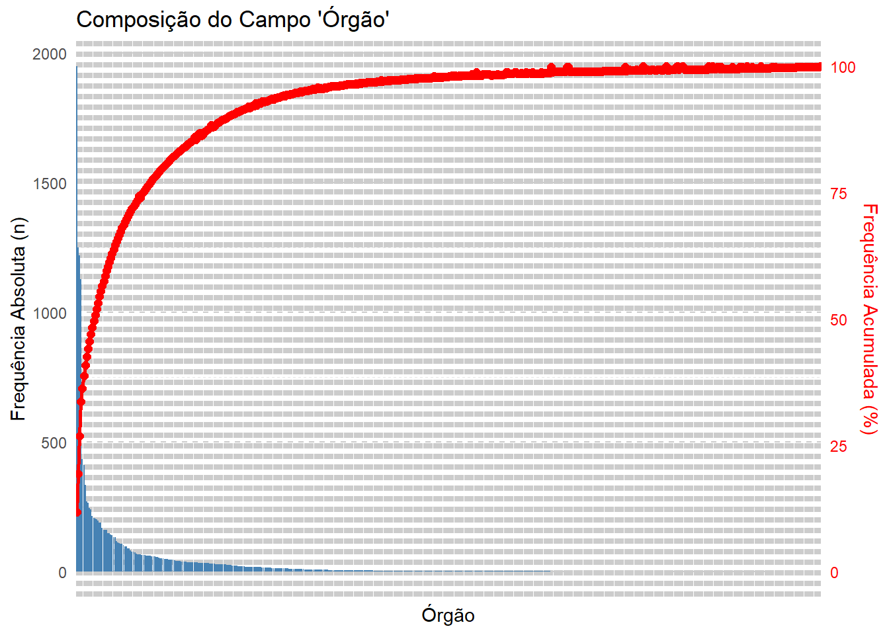
Transformação de categorias
Perceba que, pelo fato de ser um campo descritivo de livre preenchimento, há uma dispersão enorme dos dados. Para que tal campo agregue minimamente algum valor, é preciso padronização. Tal padronização foi feita a partir da criação de um arquivo excel chamado “DE_PARA_ORGAO.xlsx” com categorias que puderam ser identificadas do que fora preenchido. Aqueles registros em que não foi possível identificar o conteúdo foi chamado de OUTROS. Além disso, transformou-se nessa categoria residual as instâncias com baixa frequência. Categorias com pouca representatividade contribuem para risco de overfitting8 e, para evitar tal problema, é preciso que tal campo seja tratado9. Abaixo o código:
# Importando tabela "DE_PARA_ORGAO" para cruzamento
df_orgao <- read_excel('DE_PARA_ORGAO.xlsx')
df_orgao <- df_orgao %>%
rename(orgao = DE)
# Convertendo a coluna 'orgao' para caixa alta em df_orgao
df_orgao <- df_orgao %>%
mutate(orgao_UC = toupper(orgao))
# Convertendo a coluna 'orgao' para caixa alta em df_tbl_final
df_tbl_final <- df_tbl_final %>%
mutate(orgao_UC = toupper(orgao))
# Realizando a junção (merge) dos DataFrames
df_tbl_final <- df_tbl_final %>%
left_join(df_orgao %>% select(orgao_UC, PARA_ORGAO_PADR), by = "orgao_UC")
df_composicao <- df_tbl_final %>%
count(PARA_ORGAO_PADR) %>%
mutate(percent = (n / sum(n)) * 100) %>%
arrange(desc(n)) %>%
mutate(cum_percent = cumsum(percent)) %>%
mutate(percent = round(percent, 1),
cum_percent = round(cum_percent, 1)) %>%
mutate(PARA_ORGAO_PADR = ifelse(cum_percent > 80, "OUTROS", PARA_ORGAO_PADR)) %>%
group_by(PARA_ORGAO_PADR) %>%
summarise(n = sum(n)) %>%
ungroup() %>%
mutate(percent = (n / sum(n)) * 100) %>%
arrange(desc(n)) %>%
mutate(cum_percent = cumsum(percent)) %>%
mutate(percent = round(percent, 1),
cum_percent = round(cum_percent, 1))Composição final dos órgãos
Após a transformação, chega-se à seguinte composição final para o campo “órgão”2 3:
| PARA_ORGAO_PADR | n | percent | cum_percent |
|---|---|---|---|
| OUTROS | 6963 | 42.3 | 42.3 |
| SECRETARIA DE ESTADO DA EDUCAÇÃO | 2321 | 14.1 | 56.3 |
| SECRETARIA DE ESTADO DA SAÚDE | 1363 | 8.3 | 64.6 |
| PREFEITURA MUNICIPAL DE CAMPINA GRANDE | 1252 | 7.6 | 72.2 |
| SECRETARIA DE ESTADO DA CULTURA | 614 | 3.7 | 75.9 |
| PREFEITURA MUNICIPAL DE BAYEUX | 405 | 2.5 | 78.4 |
| ASSEMBLEIA LEGISLATIVA | 267 | 1.6 | 80.0 |
| PREFEITURA MUNICIPAL DE SANTA RITA | 257 | 1.6 | 81.6 |
| UNIVERSIDADE ESTADUAL DA PARAIBA | 247 | 1.5 | 83.1 |
| PREFEITURA MUNICIPAL DE LAGOA SECA | 239 | 1.5 | 84.5 |
| SECRETARIA DE ESTADO DA ADMINISTRAÇÃO | 231 | 1.4 | 85.9 |
| PREFEITURA MUNICIPAL DE QUEIMADAS | 217 | 1.3 | 87.2 |
| PREFEITURA MUNICIPAL DE GUARABIRA | 210 | 1.3 | 88.5 |
| DER | 202 | 1.2 | 89.7 |
| IASS | 202 | 1.2 | 91.0 |
| SECRETARIA DE ESTADO DE DESENVOLVIMENTO HUMANO | 199 | 1.2 | 92.2 |
| PREFEITURA MUNICIPAL DE ESPERANÇA | 196 | 1.2 | 93.4 |
| SECRETARIA DE ESTADO DA EDUCAÇÃO E CULTURA | 189 | 1.1 | 94.5 |
| SECRETARIA DE ESTADO DA RECEITA | 172 | 1.0 | 95.6 |
| PREFEITURA MUNICIPAL DE CABEDELO | 171 | 1.0 | 96.6 |
| PREFEITURA MUNICIPAL DE CAJAZEIRAS | 162 | 1.0 | 97.6 |
| SECRETARIA DE ESTADO DO DESENV. DA AGROPECUARIA E DA PESCA | 141 | 0.9 | 98.4 |
| PREFEITURA MUNICIPAL DE ALAGOA NOVA | 135 | 0.8 | 99.2 |
| PREFEITURA MUNICIPAL DE SAPÉ | 124 | 0.8 | 100.0 |
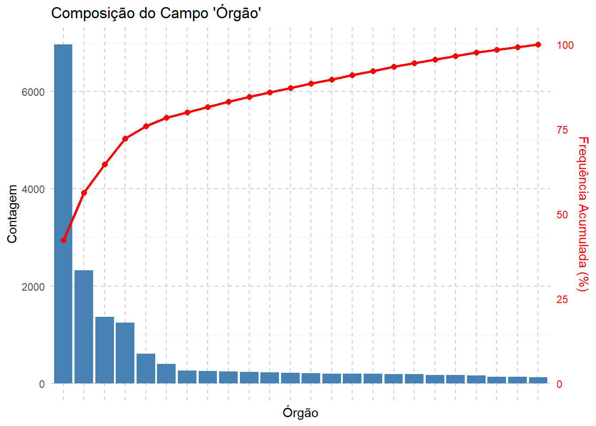
Veja que a categoria residual é muito frequente, o que nos indica que o potencial explicativo deste atributo provavelmente é reduzido.
Do campo “carreira”
O campo “carreira” corresponde à carreira ao qual o servidor estava vinculado ao ter sua aposentadoria concedida pelo instituto de previdência. É um campo livre que possivelmente terá pouco potencial explicativo na avaliação de risco. No entanto, faz-se uma mínima análise a seguir.
Composição inicial das carreiras
Inicialmente, convém avaliarmos a composição dos dados3 de tal campo antes de qualquer transformação, para que se possa ter uma percepção acerca da quantidade de registros por categoria existente na base de dados1. A seguir, observa-se a composição inicial do campo, em versões tabulada e gráfica2:
| carreira | n | percent | cum_percent |
|---|---|---|---|
| UNICA | 3615 | 21.9 | 21.9 |
| MAG | 1839 | 11.2 | 33.1 |
| MAGISTÉRIO | 761 | 4.6 | 37.7 |
| SSA | 592 | 3.6 | 41.3 |
| PROFESSORA | 590 | 3.6 | 44.9 |
| MAGISTERIO | 567 | 3.4 | 48.3 |
| AUXILIAR DE SERVIÇOS GERAIS | 460 | 2.8 | 51.1 |
| AGENTE ADMINISTRATIVO | 319 | 1.9 | 53.1 |
| Magistério | 248 | 1.5 | 54.6 |
| PROFESSOR | 239 | 1.5 | 56.0 |
| CARREIRA GERAL | 196 | 1.2 | 57.2 |
| AUXILIAR DE ADMINISTRAÇÃO | 177 | 1.1 | 58.3 |
| Auxiliar de Serviços Gerais | 168 | 1.0 | 59.3 |
| ADMINISTRATIVO | 166 | 1.0 | 60.3 |
| 01 | 165 | 1.0 | 61.3 |
| EFETIVO | 157 | 1.0 | 62.3 |
| AGENTE DE SERVIÇOS GERAIS | 153 | 0.9 | 63.2 |
| SERVIDOR PUBLICO | 143 | 0.9 | 64.1 |
| PROFESSOR DA EDUCAÇÃO BÁSICA I | 142 | 0.9 | 64.9 |
| AUXILIAR DE SERVIÇOS | 141 | 0.9 | 65.8 |
| PROFESSOR DA EDUCAÇÃO BÁSICA II | 134 | 0.8 | 66.6 |
| AUXILIAR DE SERVIÇOS DIVERSOS | 132 | 0.8 | 67.4 |
| SECRETARIA DE EDUCAÇÃO | 132 | 0.8 | 68.2 |
| Servidor Público Municipal | 125 | 0.8 | 68.9 |
| Professor | 124 | 0.8 | 69.7 |
| ESTATUTARIA | 117 | 0.7 | 70.4 |
| Professora | 109 | 0.7 | 71.1 |
| GERAL | 86 | 0.5 | 71.6 |
| VIGIA | 81 | 0.5 | 72.1 |
| ASSESSOR ADMINISTRATIVO III | 80 | 0.5 | 72.6 |
| MOTORISTA | 78 | 0.5 | 73.0 |
| SAT-1900 | 73 | 0.4 | 73.5 |
| AUXILIAR DE ENFERMAGEM | 72 | 0.4 | 73.9 |
| B | 72 | 0.4 | 74.4 |
| TRABALHADOR III | 72 | 0.4 | 74.8 |
| PJ-QP | 70 | 0.4 | 75.2 |
| MERENDEIRA | 68 | 0.4 | 75.6 |
| Auxiliar de Serviços | 67 | 0.4 | 76.0 |
| ESCRITURÁRIO | 62 | 0.4 | 76.4 |
| VIGILANTE | 61 | 0.4 | 76.8 |
| SERVIDOR PÚBLICO | 60 | 0.4 | 77.1 |
| GUARDA CIVIL MUNICIPAL | 58 | 0.4 | 77.5 |
| GARI | 54 | 0.3 | 77.8 |
| GUARDA MUNICIPAL SUPLEMENTAR | 53 | 0.3 | 78.1 |
| PDR | 52 | 0.3 | 78.5 |
| AUXILIAR DE LIMPEZA URBANA | 51 | 0.3 | 78.8 |
| Auxiliar de Serviço | 46 | 0.3 | 79.1 |
| PME | 46 | 0.3 | 79.3 |
| AUXILIAR DE SERVIÇO | 41 | 0.2 | 79.6 |
| REGENTE DE ENSINO | 41 | 0.2 | 79.8 |
| FUNCIONÁRIA PÚBLICA | 40 | 0.2 | 80.1 |
| ESTATUTARIO | 39 | 0.2 | 80.3 |
| SERVIDORA PUBLICA | 39 | 0.2 | 80.5 |
| MÉDICO | 37 | 0.2 | 80.8 |
| ENGENHEIRO | 36 | 0.2 | 81.0 |
| Servidor Público | 35 | 0.2 | 81.2 |
| Agente Administrativo | 34 | 0.2 | 81.4 |
| ANS-900 | 33 | 0.2 | 81.6 |
| AGENTE DE LIMPEZA URBANA | 31 | 0.2 | 81.8 |
| FUNCIONÁRIO PÚBLICO | 31 | 0.2 | 82.0 |
| Gari | 31 | 0.2 | 82.2 |
| SFT | 31 | 0.2 | 82.4 |
| SERVIDORA PÚBLICA | 30 | 0.2 | 82.5 |
| TELEFONISTA | 30 | 0.2 | 82.7 |
| Merendeira | 29 | 0.2 | 82.9 |
| ODONTÓLOGO | 29 | 0.2 | 83.1 |
| Vigilante | 28 | 0.2 | 83.2 |
| professor | 28 | 0.2 | 83.4 |
| A | 26 | 0.2 | 83.6 |
| PGE | 26 | 0.2 | 83.7 |
| ASSISTENTE ADMINISTRATIVO | 24 | 0.1 | 83.9 |
| GPC-600 | 24 | 0.1 | 84.0 |
| Motorista | 23 | 0.1 | 84.2 |
| Auxiliar Administrativo | 22 | 0.1 | 84.3 |
| Regente de Ensino | 22 | 0.1 | 84.4 |
| SUPERVISORA ESCOLAR | 22 | 0.1 | 84.6 |
| AGENTE COMUNITARIO DE SAÚDE | 21 | 0.1 | 84.7 |
| ASSISTENTE SOCIAL | 21 | 0.1 | 84.8 |
| ORIENTADOR EDUCACIONAL | 21 | 0.1 | 84.9 |
| PUBLICA | 21 | 0.1 | 85.1 |
| TECNICO DE NIVEL MEDIO | 21 | 0.1 | 85.2 |
| TJ-GSA-300 | 21 | 0.1 | 85.3 |
| TNM | 21 | 0.1 | 85.5 |
| APOIO | 20 | 0.1 | 85.6 |
| ASSISTENTE DE ENFERMAGEM I | 20 | 0.1 | 85.7 |
| AUXILAR DE SERVIÇOS GERAIS | 20 | 0.1 | 85.8 |
| OPERÁRIO | 20 | 0.1 | 85.9 |
| DENTISTA | 19 | 0.1 | 86.1 |
| SECRETARIA DA EDUCAÇÃO E CULTURA | 19 | 0.1 | 86.2 |
| SECRETARIA DE ADMINISTRAÇÃO | 19 | 0.1 | 86.3 |
| SERVENTE | 19 | 0.1 | 86.4 |
| magisterio | 19 | 0.1 | 86.5 |
| AST-300 | 18 | 0.1 | 86.6 |
| SUPERVISOR ESCOLAR | 18 | 0.1 | 86.7 |
| Apoio | 17 | 0.1 | 86.8 |
| Auxiliar de Enfermagem | 17 | 0.1 | 86.9 |
| Auxiliar de Ensino | 17 | 0.1 | 87.0 |
| SECRETARIA MUNICIPAL DE ADMINISTRAÇÃO | 17 | 0.1 | 87.1 |
| Secretaria de Administração | 17 | 0.1 | 87.3 |
| Servidora Pública | 17 | 0.1 | 87.4 |
| ASSISTENTE SOCIAL ESCOLAR | 16 | 0.1 | 87.5 |
| MÉDICA | 16 | 0.1 | 87.5 |
| Prefeitura Municipal | 16 | 0.1 | 87.6 |
| SEAP | 16 | 0.1 | 87.7 |
| publico | 16 | 0.1 | 87.8 |
| ADMINISTRATIVA | 15 | 0.1 | 87.9 |
| professora | 15 | 0.1 | 88.0 |
| AUXILIAR DE ENSINO | 14 | 0.1 | 88.1 |
| CARREIRA DE DEFENSOR PÚBLICO | 14 | 0.1 | 88.2 |
| AGENTE COMUNITÁRIO DE SAÚDE | 13 | 0.1 | 88.3 |
| AUXILIAR DE CULTURA | 13 | 0.1 | 88.3 |
| ESTATUTÁRIA | 13 | 0.1 | 88.4 |
| Estatutaria | 13 | 0.1 | 88.5 |
| MEDICO | 13 | 0.1 | 88.6 |
| PSICOLOGA ESCOLAR | 13 | 0.1 | 88.7 |
| TÉCNICO EM CONTABILIDADE | 13 | 0.1 | 88.7 |
| AGENTE FISCAL AUD. DE TRIBUTOS | 12 | 0.1 | 88.8 |
| MEDICO II | 12 | 0.1 | 88.9 |
| SECRETARIA DE SAUDE | 12 | 0.1 | 89.0 |
| SERVIÇOS GERAIS | 12 | 0.1 | 89.0 |
| Servidora Pública Municipal | 12 | 0.1 | 89.1 |
| ADMINISTRADOR | 11 | 0.1 | 89.2 |
| APOIO OPERACIONAL | 11 | 0.1 | 89.2 |
| ATENDENTE DE ENFERMAGEM | 11 | 0.1 | 89.3 |
| AUXILIAR ADMINISTRATIVO | 11 | 0.1 | 89.4 |
| AUXILIAR DE SERVIÇOS DE OBRAS | 11 | 0.1 | 89.4 |
| Assistente Administrativo | 11 | 0.1 | 89.5 |
| CIRURGIÃO DENTISTA II | 11 | 0.1 | 89.6 |
| ECONOMISTA | 11 | 0.1 | 89.6 |
| EDUCAÇÃO | 11 | 0.1 | 89.7 |
| NIVEL1 | 11 | 0.1 | 89.8 |
| PROFESSOR DO ENSINO FUNDAMENTAL I | 11 | 0.1 | 89.8 |
| apoio | 11 | 0.1 | 89.9 |
| A.S.G. | 10 | 0.1 | 90.0 |
| ARTÍFICE | 10 | 0.1 | 90.0 |
| ASSESSOR ADMINISTRATIVO | 10 | 0.1 | 90.1 |
| ENFERMEIRA | 10 | 0.1 | 90.2 |
| ORIENTADORA EDUCACIONAL | 10 | 0.1 | 90.2 |
| SAUDE | 10 | 0.1 | 90.3 |
| TC-QP | 10 | 0.1 | 90.3 |
| auxiliar de serviços gerais | 10 | 0.1 | 90.4 |
| AGENTE DE LIMPEZA URBANA - GARI | 9 | 0.1 | 90.4 |
| DATILÓGRAFO | 9 | 0.1 | 90.5 |
| ESTATUTÁRIO | 9 | 0.1 | 90.6 |
| Magistério Municipal | 9 | 0.1 | 90.6 |
| PEDREIRO | 9 | 0.1 | 90.7 |
| PROFESSOR DE EDUCAÇÃO BÁSICA | 9 | 0.1 | 90.7 |
| PROFESSORA LEIGA | 9 | 0.1 | 90.8 |
| Professor E | 9 | 0.1 | 90.8 |
| Professor de Educação Básica | 9 | 0.1 | 90.9 |
| SEC. DE EDUCAÇÃO | 9 | 0.1 | 90.9 |
| SECRETARIA MUNICIPAL DE SAÚDE | 9 | 0.1 | 91.0 |
| Vigia | 9 | 0.1 | 91.0 |
| geral | 9 | 0.1 | 91.1 |
| ATENDENTE | 8 | 0.0 | 91.2 |
| AUXILIAR DE SERVICOS GERAIS | 8 | 0.0 | 91.2 |
| ELETRICISTA | 8 | 0.0 | 91.2 |
| ENFERMEIRO | 8 | 0.0 | 91.3 |
| PREFEITURA MUNICIPAL | 8 | 0.0 | 91.3 |
| PSICOLOGO EDUCACIONAL | 8 | 0.0 | 91.4 |
| Professor P1, Classe E, Nível 2 | 8 | 0.0 | 91.4 |
| Professor P1, Classe F, Nível 2 | 8 | 0.0 | 91.5 |
| TÉCNICO ADMINISTRATIVO | 8 | 0.0 | 91.5 |
| AGENTE FISCAL AUDITOR DE TRIBUTOS ATA 301 | 7 | 0.0 | 91.6 |
| ARTIFICE | 7 | 0.0 | 91.6 |
| ASSISTENTE SOCIAL EDUCACIONAL | 7 | 0.0 | 91.7 |
| AUDITOR FISCAL DE TRIBUTOS | 7 | 0.0 | 91.7 |
| Auxiliar de serviços gerais | 7 | 0.0 | 91.8 |
| BIOQUIMICO | 7 | 0.0 | 91.8 |
| CONSULTOR TÉCNICO | 7 | 0.0 | 91.8 |
| PLANO GERAL | 7 | 0.0 | 91.9 |
| PROFESSOR DE EDUCAÇÃO BÁSICA I - NÍVEL B | 7 | 0.0 | 91.9 |
| SAÚDE | 7 | 0.0 | 92.0 |
| Secretaria Municipal de Administração | 7 | 0.0 | 92.0 |
| TECNICO ADMINISTRATIVO | 7 | 0.0 | 92.1 |
| Telefonista | 7 | 0.0 | 92.1 |
| TÉCNICO EM ENFERMAGEM | 7 | 0.0 | 92.1 |
| ATIVO | 6 | 0.0 | 92.2 |
| AUDITOR DE CONTAS PUBLICAS | 6 | 0.0 | 92.2 |
| BIOQUÍMICO | 6 | 0.0 | 92.2 |
| CIRURGIÃO DENTISTA | 6 | 0.0 | 92.3 |
| Estatutária | 6 | 0.0 | 92.3 |
| GUARDA MUNICIPAL | 6 | 0.0 | 92.4 |
| IV | 6 | 0.0 | 92.4 |
| OPERARIO | 6 | 0.0 | 92.4 |
| RECEPCIONISTA | 6 | 0.0 | 92.5 |
| SECRETARIA DE EDUCAÇÃO E CULTURA | 6 | 0.0 | 92.5 |
| SECRETARIA DE FINANÇAS | 6 | 0.0 | 92.5 |
| ADVOGADO | 5 | 0.0 | 92.6 |
| ARQUITETO | 5 | 0.0 | 92.6 |
| AUXILIAR | 5 | 0.0 | 92.6 |
| AXT-400 | 5 | 0.0 | 92.7 |
| Assistente Social | 5 | 0.0 | 92.7 |
| ENGENHEIRA | 5 | 0.0 | 92.7 |
| Eletricista | 5 | 0.0 | 92.7 |
| FISIOTERAPEUTA | 5 | 0.0 | 92.8 |
| JUIZ | 5 | 0.0 | 92.8 |
| MUSICO | 5 | 0.0 | 92.8 |
| N1 | 5 | 0.0 | 92.9 |
| NUTRICIONISTA | 5 | 0.0 | 92.9 |
| PROF.EDUC.BASICA 3 C VI | 5 | 0.0 | 92.9 |
| PROFESSORA DA EDUCAÇÃO BÁSICA | 5 | 0.0 | 93.0 |
| PSICÓLOGO ESCOLAR | 5 | 0.0 | 93.0 |
| SECRETARIA MUNICIPAL DE SAÚDE DO MUNICÍPIO DE JOÃO PESSOA | 5 | 0.0 | 93.0 |
| SERVIÇO PÚBLICO | 5 | 0.0 | 93.1 |
| Saúde | 5 | 0.0 | 93.1 |
| Servidor Publico | 5 | 0.0 | 93.1 |
| TECNICO EM CONTABILIDADE | 5 | 0.0 | 93.1 |
| TECNICO EM ENFERMAGEM | 5 | 0.0 | 93.2 |
| TECNICO JUDICIARIO | 5 | 0.0 | 93.2 |
| TNS | 5 | 0.0 | 93.2 |
| ZELADORA | 5 | 0.0 | 93.3 |
| agente administrativo | 5 | 0.0 | 93.3 |
| auxiliar serviços | 5 | 0.0 | 93.3 |
| gari | 5 | 0.0 | 93.4 |
| vigilante | 5 | 0.0 | 93.4 |
| ADMINISTRADORA | 4 | 0.0 | 93.4 |
| AGENTE ADMINISTRATIVO AUXILIAR | 4 | 0.0 | 93.4 |
| AGENTE DE SERVICOS GERAIS | 4 | 0.0 | 93.5 |
| AGENTE FISCAL DE TRIBUTOS | 4 | 0.0 | 93.5 |
| ANALISTA DE SISTEMAS | 4 | 0.0 | 93.5 |
| ASSESSOR P ASS ADM GERAL | 4 | 0.0 | 93.5 |
| ATENDENTE DE SAÚDE | 4 | 0.0 | 93.6 |
| AUX DE SERVIÇOS | 4 | 0.0 | 93.6 |
| AUXILIAR DE SERVIÇOS GERAIS NIVEL VI | 4 | 0.0 | 93.6 |
| Aux ser gerais | 4 | 0.0 | 93.6 |
| Aux. Serviços Gerais | 4 | 0.0 | 93.7 |
| DATILOGRAFA | 4 | 0.0 | 93.7 |
| DATILOGRAFO | 4 | 0.0 | 93.7 |
| Dentista | 4 | 0.0 | 93.7 |
| Enfermeira | 4 | 0.0 | 93.7 |
| FISCAL DE OBRAS | 4 | 0.0 | 93.8 |
| FUNCIONARIO PUBLICO | 4 | 0.0 | 93.8 |
| INFRAESTRUTURA | 4 | 0.0 | 93.8 |
| NIVEL I3 | 4 | 0.0 | 93.8 |
| ODONTÓLOGA | 4 | 0.0 | 93.9 |
| PDA | 4 | 0.0 | 93.9 |
| PROF.EDUC.BASICA 3 C V | 4 | 0.0 | 93.9 |
| PROFESSOR DA EDUCAÇÃO BASICA II | 4 | 0.0 | 93.9 |
| PROFESSOR DE EDUCAÇÃO BÁSICA I | 4 | 0.0 | 94.0 |
| PROFESSORA A2 | 4 | 0.0 | 94.0 |
| PSICOLOGA | 4 | 0.0 | 94.0 |
| PSICÓLOGO | 4 | 0.0 | 94.0 |
| Prefeitura Municipal de Serra Branca | 4 | 0.0 | 94.1 |
| REGENTE DE CLASSE | 4 | 0.0 | 94.1 |
| SERVIDOR | 4 | 0.0 | 94.1 |
| SUPERVISOR EDUCACIONAL | 4 | 0.0 | 94.1 |
| Serviços Gerais | 4 | 0.0 | 94.2 |
| TECNICO LEGISLATIVO | 4 | 0.0 | 94.2 |
| auxiliar de serviços | 4 | 0.0 | 94.2 |
| merendeira | 4 | 0.0 | 94.2 |
| A.S.G | 3 | 0.0 | 94.3 |
| AGENTE DE LIMPEZA | 3 | 0.0 | 94.3 |
| AGENTE DE MOBILIDADE URBANA | 3 | 0.0 | 94.3 |
| AGENTE FISCAL AUDITOR DE TRIBUTOS | 3 | 0.0 | 94.3 |
| ANALISTA MINISTERIAL | 3 | 0.0 | 94.3 |
| ASSESSOR JURÍDICO | 3 | 0.0 | 94.3 |
| ASSISTENTE LEGISLATIVA | 3 | 0.0 | 94.4 |
| ASSISTENTE TECNICO | 3 | 0.0 | 94.4 |
| ASSISTENTE TÉCNICO | 3 | 0.0 | 94.4 |
| ASSISTÊNCIA SOCIAL | 3 | 0.0 | 94.4 |
| AUXILIAR DE ESCRITA | 3 | 0.0 | 94.4 |
| AUXILIAR DE PROCESSAMENTO DE DADOS | 3 | 0.0 | 94.5 |
| AUXILIAR DE SERVISO GERAIS | 3 | 0.0 | 94.5 |
| AUXILIAR EM ENFERMAGEM | 3 | 0.0 | 94.5 |
| AUXILIAR SERVIÇOS GERAIS | 3 | 0.0 | 94.5 |
| AUXILIAR TÉCNICO | 3 | 0.0 | 94.5 |
| Agente Comunitário de Saúde | 3 | 0.0 | 94.5 |
| Agente de Segurança | 3 | 0.0 | 94.6 |
| Atendente de Enfermagem | 3 | 0.0 | 94.6 |
| Auxiliar Hospitalar | 3 | 0.0 | 94.6 |
| Auxiliar de Administração | 3 | 0.0 | 94.6 |
| Auxiliar de Serviços Gerais - ASG | 3 | 0.0 | 94.6 |
| Auxiliar de Serviços Gerais, Classe A, Nível XI | 3 | 0.0 | 94.7 |
| Auxíliar de Serviços Gerais | 3 | 0.0 | 94.7 |
| BIBLIOTECÁRIO | 3 | 0.0 | 94.7 |
| CONTADOR | 3 | 0.0 | 94.7 |
| ENFERMEIRO I | 3 | 0.0 | 94.7 |
| ENGENHEIRO AGRONOMO | 3 | 0.0 | 94.7 |
| ENGENHEIRO CIVIL | 3 | 0.0 | 94.8 |
| ESCRITURÁRIA | 3 | 0.0 | 94.8 |
| FARMACÊUTICO | 3 | 0.0 | 94.8 |
| FISCAL DE SERVIÇOS URBANOS | 3 | 0.0 | 94.8 |
| GRUPO DE NÍVEL SUPERIOR | 3 | 0.0 | 94.8 |
| Garí | 3 | 0.0 | 94.9 |
| Grupo de Administração Geral | 3 | 0.0 | 94.9 |
| I3 | 3 | 0.0 | 94.9 |
| IX | 3 | 0.0 | 94.9 |
| MEDICO I | 3 | 0.0 | 94.9 |
| MONITORA DE CRECHE | 3 | 0.0 | 94.9 |
| MÚSICO | 3 | 0.0 | 95.0 |
| NIVEL 1 | 3 | 0.0 | 95.0 |
| NÍVEL 1 | 3 | 0.0 | 95.0 |
| PEDAGOGO | 3 | 0.0 | 95.0 |
| PROF.EDUC.BASICA 1 C V | 3 | 0.0 | 95.0 |
| PROF.EDUC.BASICA 3 B VI | 3 | 0.0 | 95.1 |
| PROFESSORA A3 | 3 | 0.0 | 95.1 |
| PROFESSORA DA EDUCAÇÃO BASICA | 3 | 0.0 | 95.1 |
| PROFESSORA DA EDUCAÇÃO BÁSICA II | 3 | 0.0 | 95.1 |
| PROFESSORA NIVEL VI | 3 | 0.0 | 95.1 |
| PROFESSORA POLIVALENTE | 3 | 0.0 | 95.1 |
| PSICOLOGO | 3 | 0.0 | 95.2 |
| Professor P1, Classe E, Nível 1 | 3 | 0.0 | 95.2 |
| Professor P1, Classe F, Nível 1 | 3 | 0.0 | 95.2 |
| Professor P1, Classe G, Nível 2 | 3 | 0.0 | 95.2 |
| Professora Polivalente | 3 | 0.0 | 95.2 |
| SERVIDOR PÚBLICO EFETIVO | 3 | 0.0 | 95.3 |
| SUPERVISOR DE ENSINO | 3 | 0.0 | 95.3 |
| Supervisora Escolar | 3 | 0.0 | 95.3 |
| TECNICO DE ENFERMAGEM | 3 | 0.0 | 95.3 |
| ZELADOR | 3 | 0.0 | 95.3 |
| auxiliar de ensino | 3 | 0.0 | 95.3 |
| auxiliar de serviço | 3 | 0.0 | 95.4 |
| motorista | 3 | 0.0 | 95.4 |
| ADMINISTRADOR ESCOLAR | 2 | 0.0 | 95.4 |
| ADMINISTRAÇÃO GERAL | 2 | 0.0 | 95.4 |
| ADMISTRAÇÃO | 2 | 0.0 | 95.4 |
| ADVOGADA | 2 | 0.0 | 95.4 |
| AGENTE ADMINISTRATIVA | 2 | 0.0 | 95.4 |
| AGENTE ADMINSTRATIVO | 2 | 0.0 | 95.5 |
| AGENTE COMUNITARIO DE SAUDE | 2 | 0.0 | 95.5 |
| AGENTE DE COMBATE AS ENDEMIAS | 2 | 0.0 | 95.5 |
| AGENTE DE PORTARIA | 2 | 0.0 | 95.5 |
| AGENTE OPERACIONAL DE SERVIÇOS DIVERSOS | 2 | 0.0 | 95.5 |
| ANALISTA DE PATOLOGIA CLINICA | 2 | 0.0 | 95.5 |
| ANALISTA DE PATOLOGIA CLÍNICA | 2 | 0.0 | 95.5 |
| ANALISTA DE PROJETOS III | 2 | 0.0 | 95.5 |
| ATT-200 | 2 | 0.0 | 95.6 |
| AUDITOR FISCAL MERCAD TRANSITO | 2 | 0.0 | 95.6 |
| AUDITOR FISCAL TRIBUTARIO EST | 2 | 0.0 | 95.6 |
| AUX. SERVIÇO GERAIS | 2 | 0.0 | 95.6 |
| AUXILIAR DE ARTIFICE III | 2 | 0.0 | 95.6 |
| AUXILIAR DE SECRETARIA | 2 | 0.0 | 95.6 |
| AUXILIAR DE SERVICO | 2 | 0.0 | 95.6 |
| AUXILIAR DE SERVISOS GERAIS | 2 | 0.0 | 95.6 |
| AUXILIAR DE SERVIÇOS GERAL | 2 | 0.0 | 95.6 |
| AUXILIAR DE SERVÇOS | 2 | 0.0 | 95.7 |
| AUXILIAR DE SERVÇOS DIVERSOS | 2 | 0.0 | 95.7 |
| Agente Administrativo Classe A Nível XI | 2 | 0.0 | 95.7 |
| Agente Administrativo, Classe A, Nível XI | 2 | 0.0 | 95.7 |
| Agente Comunitária de Saúde | 2 | 0.0 | 95.7 |
| Agente de Limpeza | 2 | 0.0 | 95.7 |
| Assistente Técnico Administrativo | 2 | 0.0 | 95.7 |
| Atendente | 2 | 0.0 | 95.7 |
| Auditor Fiscal | 2 | 0.0 | 95.8 |
| Aux. Ser. Gerais | 2 | 0.0 | 95.8 |
| Aux. de serviços gerais | 2 | 0.0 | 95.8 |
| Auxiliar de Serviçoes Gerais | 2 | 0.0 | 95.8 |
| Auxiliar de Serviços Gerais, Classe A, Nível IX | 2 | 0.0 | 95.8 |
| Auxiliar de serviços | 2 | 0.0 | 95.8 |
| BIBLIOTECARIO | 2 | 0.0 | 95.8 |
| BIBLIOTECÁRIA | 2 | 0.0 | 95.8 |
| BIOQUÍMICA | 2 | 0.0 | 95.9 |
| CARPINTEIRO | 2 | 0.0 | 95.9 |
| CARREIRA ÚNICA | 2 | 0.0 | 95.9 |
| CHEFIA DE GABINETE | 2 | 0.0 | 95.9 |
| CIRURGIAO DENTISTA | 2 | 0.0 | 95.9 |
| CONTADORA | 2 | 0.0 | 95.9 |
| CONTÍNUO | 2 | 0.0 | 95.9 |
| COZINHEIRA | 2 | 0.0 | 95.9 |
| DELEGADO DE POLICIA | 2 | 0.0 | 96.0 |
| DIGITADOR III | 2 | 0.0 | 96.0 |
| DPS-1600 | 2 | 0.0 | 96.0 |
| Efetiva | 2 | 0.0 | 96.0 |
| Efetivo | 2 | 0.0 | 96.0 |
| Enfermeiro | 2 | 0.0 | 96.0 |
| Estaturario | 2 | 0.0 | 96.0 |
| Estatutario | 2 | 0.0 | 96.0 |
| FARMACEUTICO | 2 | 0.0 | 96.0 |
| FISCAL | 2 | 0.0 | 96.1 |
| FISCAL DE TRIBUTOS MUNICIPAIS | 2 | 0.0 | 96.1 |
| FOTÓGRAFO | 2 | 0.0 | 96.1 |
| GABINETE DO PREFEITO | 2 | 0.0 | 96.1 |
| GRUPO DE SAÚDE PÚBLICA | 2 | 0.0 | 96.1 |
| GUARDA | 2 | 0.0 | 96.1 |
| I NÍVEL 3 | 2 | 0.0 | 96.1 |
| I-3 | 2 | 0.0 | 96.1 |
| INATIVO | 2 | 0.0 | 96.2 |
| Jardineira | 2 | 0.0 | 96.2 |
| MAGISTÉRIO MUNICIPAL | 2 | 0.0 | 96.2 |
| MONITOR | 2 | 0.0 | 96.2 |
| MP-QP | 2 | 0.0 | 96.2 |
| Médico | 2 | 0.0 | 96.2 |
| Músico | 2 | 0.0 | 96.2 |
| ODONTOLOGA | 2 | 0.0 | 96.2 |
| OFICIAL DE JUSTIÇA | 2 | 0.0 | 96.3 |
| OPERADOR DE MAQUINAS PESADAS | 2 | 0.0 | 96.3 |
| Odontólogo | 2 | 0.0 | 96.3 |
| PGR | 2 | 0.0 | 96.3 |
| PROF.EDUC.BASICA 1 B VI | 2 | 0.0 | 96.3 |
| PROF.EDUC.BASICA 2 D VII | 2 | 0.0 | 96.3 |
| PROF.EDUC.BASICA 3 B V | 2 | 0.0 | 96.3 |
| PROFESSOR DA EDUCAÇÃO BASICA I | 2 | 0.0 | 96.3 |
| PROFESSOR MAG-I.B.IV | 2 | 0.0 | 96.4 |
| PROFESSORA A2 NIVEL IV | 2 | 0.0 | 96.4 |
| PROFESSORA DA EDUCAÇÃO BÁSICA I | 2 | 0.0 | 96.4 |
| PROFESSORA-A2 | 2 | 0.0 | 96.4 |
| PSICÓLOGA | 2 | 0.0 | 96.4 |
| Professor P1, Classe C, Nível 1 | 2 | 0.0 | 96.4 |
| Professor P1, Classe D, Nível 2 | 2 | 0.0 | 96.4 |
| Professor P1, Classe G, Nível 1 | 2 | 0.0 | 96.4 |
| Professora P1 | 2 | 0.0 | 96.5 |
| Psicólogo | 2 | 0.0 | 96.5 |
| QUIMICO | 2 | 0.0 | 96.5 |
| REDATOR DE ATAS | 2 | 0.0 | 96.5 |
| SEC DE INFRAESTRUTURA | 2 | 0.0 | 96.5 |
| SEC. DE SAUDE | 2 | 0.0 | 96.5 |
| SECRETARIA BEM ESTAR SOCIAL | 2 | 0.0 | 96.5 |
| SECRETARIA DA ADMINISTRAÇÃO | 2 | 0.0 | 96.5 |
| SECRETARIA DA RECEITA | 2 | 0.0 | 96.5 |
| SECRETARIA DA RECEITA MUNICIPAL | 2 | 0.0 | 96.6 |
| SECRETARIA DE SAÚDE | 2 | 0.0 | 96.6 |
| SECRETARIA DE SEGURANÇA MUNICIPAL | 2 | 0.0 | 96.6 |
| SECRETÁRIA DE EDUCAÇÃO | 2 | 0.0 | 96.6 |
| SEI-2000 | 2 | 0.0 | 96.6 |
| SERVENTE DE PEDREIRO | 2 | 0.0 | 96.6 |
| SERVIDOR PUBLICO MUNICIPAL | 2 | 0.0 | 96.6 |
| SERVIDORA | 2 | 0.0 | 96.6 |
| SERVIDORA PÚBLICA EFETIVA | 2 | 0.0 | 96.7 |
| SERVIÇO PUBLICO | 2 | 0.0 | 96.7 |
| Supervisor Escolar | 2 | 0.0 | 96.7 |
| TAQUIGRAFO LEGISLATIVO | 2 | 0.0 | 96.7 |
| TECNICO NIVEL MEDIO | 2 | 0.0 | 96.7 |
| TRATORISTA | 2 | 0.0 | 96.7 |
| Tratorista | 2 | 0.0 | 96.7 |
| TÉCNICA DE ENFERMAGEM | 2 | 0.0 | 96.7 |
| TÉCNICA EM CONTABILIDADE | 2 | 0.0 | 96.8 |
| TÉCNICO DE ENFERMAGEM | 2 | 0.0 | 96.8 |
| TÉCNICO EM LABORATÓRIO | 2 | 0.0 | 96.8 |
| TÉCNICO LEGISLATIVO | 2 | 0.0 | 96.8 |
| Técnica de Enfermagem | 2 | 0.0 | 96.8 |
| Técnico Agrícola | 2 | 0.0 | 96.8 |
| Técnico em Contabilidade | 2 | 0.0 | 96.8 |
| agente de investigação | 2 | 0.0 | 96.8 |
| assistente administrativo | 2 | 0.0 | 96.9 |
| pedreiro | 2 | 0.0 | 96.9 |
| tecnico judiciario | 2 | 0.0 | 96.9 |
| A.G.S. | 1 | 0.0 | 96.9 |
| ACESSOR P ASS ADM GERAL | 1 | 0.0 | 96.9 |
| ADMINISTRAÇÃO | 1 | 0.0 | 96.9 |
| AG. AUX S SAUDE SSA-APS-502.3.1 | 1 | 0.0 | 96.9 |
| AG.FISCAL DE TRIBUTOS | 1 | 0.0 | 96.9 |
| AGENDE ADMINISTRATIVO | 1 | 0.0 | 96.9 |
| AGENDE DE SERVIÇOS GERAIS | 1 | 0.0 | 96.9 |
| AGENTE ADM. AUXILIAR | 1 | 0.0 | 96.9 |
| AGENTE AUX ATVI ADMINISTRAT | 1 | 0.0 | 96.9 |
| AGENTE COMUNICTARIO DE SAÚDE | 1 | 0.0 | 96.9 |
| AGENTE COMUNITARIA DE SAUDE | 1 | 0.0 | 96.9 |
| AGENTE COMUNITÁRIA DE SAÚDE | 1 | 0.0 | 96.9 |
| AGENTE COMUNITÁRIA DE SAÚDE-ACS | 1 | 0.0 | 97.0 |
| AGENTE COMUNITÁRIO DE SAÚDE - P.A.C.S | 1 | 0.0 | 97.0 |
| AGENTE COMUNITÁRIO DE SAÚDE- ACS | 1 | 0.0 | 97.0 |
| AGENTE DE ADMINISTRAÇÃO | 1 | 0.0 | 97.0 |
| AGENTE DE ARRECADAÇÃO | 1 | 0.0 | 97.0 |
| AGENTE DE ATIV ADMINISTRAT | 1 | 0.0 | 97.0 |
| AGENTE DE ATIV. ADMINISTRAT | 1 | 0.0 | 97.0 |
| AGENTE DE COMBATE AS EDEMIAS | 1 | 0.0 | 97.0 |
| AGENTE DE COMBATE ÀS ENDEMIAS | 1 | 0.0 | 97.0 |
| AGENTE DE INVESTIGAÇÃO | 1 | 0.0 | 97.0 |
| AGENTE DE RELAÇÕES PÚBLICAS | 1 | 0.0 | 97.0 |
| AGENTE DE SAUDE | 1 | 0.0 | 97.0 |
| AGENTE DE VIGILÂNCIA | 1 | 0.0 | 97.0 |
| AGENTE DO PACS | 1 | 0.0 | 97.0 |
| AGENTE FISCAL DE OBRAS | 1 | 0.0 | 97.0 |
| AGENTE FISCAL DE OBRAS/EDIFICAÇÕES | 1 | 0.0 | 97.0 |
| AGENTE FISCLA DE OBRAS E EDIFICAÇÕES | 1 | 0.0 | 97.1 |
| AGENTE OPERACIONAL DE SERVIÇOS | 1 | 0.0 | 97.1 |
| AGENTE PEDAGÓGICO | 1 | 0.0 | 97.1 |
| AGENTE SEGUR. PENITENCIARIO | 1 | 0.0 | 97.1 |
| AGENTE TELECOMUNIC POLICIAL | 1 | 0.0 | 97.1 |
| AL-QP | 1 | 0.0 | 97.1 |
| ANALISTA DE SISTEMA | 1 | 0.0 | 97.1 |
| ANALISTA DE SISTEMA JUNIOR | 1 | 0.0 | 97.1 |
| ANALISTA DE SISTEMA SENIOR | 1 | 0.0 | 97.1 |
| ANALISTA GESTÃO ORGANIZACIONAL | 1 | 0.0 | 97.1 |
| APOIO SAUDE | 1 | 0.0 | 97.1 |
| APONTADOR DE TURMA | 1 | 0.0 | 97.1 |
| AREA DA SAUDE | 1 | 0.0 | 97.1 |
| ARQUIVO MUNICIPAL | 1 | 0.0 | 97.1 |
| ASSESOR AUXILIAR | 1 | 0.0 | 97.1 |
| ASSESS P ASS EDUCACIONAIS | 1 | 0.0 | 97.1 |
| ASSESSOR TECN MEDIO SR | 1 | 0.0 | 97.1 |
| ASSESSOR TECNICO LEGISLATIVO II | 1 | 0.0 | 97.2 |
| ASSESSOR TÉCNICO DE SAUDE | 1 | 0.0 | 97.2 |
| ASSESSOR TÉCNICO LEGISLATIVO | 1 | 0.0 | 97.2 |
| ASSESSOR TÉCNICO LEGISLATIVO 1 | 1 | 0.0 | 97.2 |
| ASSESSORA DE IMPRENSA | 1 | 0.0 | 97.2 |
| ASSIST.ADMINIST.IV IX7 | 1 | 0.0 | 97.2 |
| ASSIST.ADMINISTRACAO C7 | 1 | 0.0 | 97.2 |
| ASSISTENTE ADMINISTRATIVO I | 1 | 0.0 | 97.2 |
| ASSISTENTE DE ADMINISTRAÇÃO | 1 | 0.0 | 97.2 |
| ASSISTENTE DE ADMINISTRAÇÃO I | 1 | 0.0 | 97.2 |
| ASSISTENTE DE ALUNO | 1 | 0.0 | 97.2 |
| ASSISTENTE DE CONTABILIDADE | 1 | 0.0 | 97.2 |
| ASSISTENTE DE DIRETORIA | 1 | 0.0 | 97.2 |
| ASSISTENTE DE ENFERMAGEM | 1 | 0.0 | 97.2 |
| ASSISTENTE EM ADMINISTRAÇÃO | 1 | 0.0 | 97.2 |
| ASSISTENTE JURIDICO | 1 | 0.0 | 97.2 |
| ASSITENTE ADMINISTRATIVO | 1 | 0.0 | 97.3 |
| AUDITOR FISCAL | 1 | 0.0 | 97.3 |
| AUDITOR FISCAL TRIBUTARIO EST. | 1 | 0.0 | 97.3 |
| AUX DE SECRETARIA | 1 | 0.0 | 97.3 |
| AUX DE SERVIÇOS GERAIS | 1 | 0.0 | 97.3 |
| AUX SERV DIVERSOS | 1 | 0.0 | 97.3 |
| AUX. SERVIÇOS GERAIS | 1 | 0.0 | 97.3 |
| AUX.DE SECRETARIA | 1 | 0.0 | 97.3 |
| AUXILAR DE SERVIÇO | 1 | 0.0 | 97.3 |
| AUXILIA ADMINISTRAÇÃO | 1 | 0.0 | 97.3 |
| AUXILIAR ADMINISTRATIVA | 1 | 0.0 | 97.3 |
| AUXILIAR DE ADMNISTRAÇÃO | 1 | 0.0 | 97.3 |
| AUXILIAR DE ARTIFICE | 1 | 0.0 | 97.3 |
| AUXILIAR DE ARTÍFICE III | 1 | 0.0 | 97.3 |
| AUXILIAR DE ASSUNTOS EDUCACIONAIS | 1 | 0.0 | 97.3 |
| AUXILIAR DE BIBLIOTECA | 1 | 0.0 | 97.3 |
| AUXILIAR DE CONTABILIDADE | 1 | 0.0 | 97.3 |
| AUXILIAR DE CRECHE | 1 | 0.0 | 97.4 |
| AUXILIAR DE DATILOGRAFA | 1 | 0.0 | 97.4 |
| AUXILIAR DE ELETRICISTA | 1 | 0.0 | 97.4 |
| AUXILIAR DE ENFERMAGEM NIVEL IV | 1 | 0.0 | 97.4 |
| AUXILIAR DE LABORATÓRIO | 1 | 0.0 | 97.4 |
| AUXILIAR DE LIMPEZA | 1 | 0.0 | 97.4 |
| AUXILIAR DE MECÂNICO | 1 | 0.0 | 97.4 |
| AUXILIAR DE SERIVÇOS GERAIS | 1 | 0.0 | 97.4 |
| AUXILIAR DE SERVICOS | 1 | 0.0 | 97.4 |
| AUXILIAR DE SERVIÇO GERAIS | 1 | 0.0 | 97.4 |
| AUXILIAR DE SERVIÇO GERAL | 1 | 0.0 | 97.4 |
| AUXILIAR DE SERVIÇO OPERACIONAL | 1 | 0.0 | 97.4 |
| AUXILIAR DE SERVIÇOES DIVERSOS | 1 | 0.0 | 97.4 |
| AUXILIAR DE SERVIÇOS EDUCACIONAIS | 1 | 0.0 | 97.4 |
| AUXILIAR DE SERVIÇOS GERAIS - ASG | 1 | 0.0 | 97.4 |
| AUXILIAR DE SERVIÇOS GERAIS B | 1 | 0.0 | 97.4 |
| AUXILIAR DE SERVIÇOS N-I | 1 | 0.0 | 97.5 |
| AUXILIAR DE SERVIÇOS OPERACIONAL | 1 | 0.0 | 97.5 |
| AUXILIAR DE SERVIÇÕES GERAIS | 1 | 0.0 | 97.5 |
| AUXILIAR DE SERVÇOS GERAIS | 1 | 0.0 | 97.5 |
| AUXILIAR DE TESOURARIA | 1 | 0.0 | 97.5 |
| AUXILIAR JUDICIARIO | 1 | 0.0 | 97.5 |
| AUXILIAR OPERACIONAL | 1 | 0.0 | 97.5 |
| AUXILIAR OPERACIONAL DE SERVIÇOS DIVERSOS | 1 | 0.0 | 97.5 |
| AUXILIAR OPERADOR DE MAQUINAS | 1 | 0.0 | 97.5 |
| AUXILIAR SERVICOS GERAIS | 1 | 0.0 | 97.5 |
| AUXILIO DE SERVIÇO GERAIS | 1 | 0.0 | 97.5 |
| AUXULIAR DE SERVIÇO | 1 | 0.0 | 97.5 |
| AUXULIAR DE SERVIÇOS | 1 | 0.0 | 97.5 |
| Administrador | 1 | 0.0 | 97.5 |
| Administração | 1 | 0.0 | 97.5 |
| Advogada | 1 | 0.0 | 97.5 |
| Advogado | 1 | 0.0 | 97.5 |
| Agente Administrativo, Classe A, Nível IX | 1 | 0.0 | 97.6 |
| Agente Comunitário de Saúde-ACS | 1 | 0.0 | 97.6 |
| Agente Fiscal de Tributos | 1 | 0.0 | 97.6 |
| Agente comunitario de Saúde | 1 | 0.0 | 97.6 |
| Agente comunitário de Saúde | 1 | 0.0 | 97.6 |
| Agente de Limpeza Urbano | 1 | 0.0 | 97.6 |
| Agente de Portaria | 1 | 0.0 | 97.6 |
| Agente de Saude | 1 | 0.0 | 97.6 |
| Agente de Serviços Complementares | 1 | 0.0 | 97.6 |
| Agente de Telecomunicação | 1 | 0.0 | 97.6 |
| Agente de Telecomunicações | 1 | 0.0 | 97.6 |
| Agente de Vigilância | 1 | 0.0 | 97.6 |
| Agente de Vigilância Ambiental | 1 | 0.0 | 97.6 |
| Agente de Vigilância Sanitária | 1 | 0.0 | 97.6 |
| Apoio Administrativo | 1 | 0.0 | 97.6 |
| Apoio Saude | 1 | 0.0 | 97.6 |
| Arquivista Pesquisador | 1 | 0.0 | 97.7 |
| Assessor Fazendario | 1 | 0.0 | 97.7 |
| Assistente Administrativa | 1 | 0.0 | 97.7 |
| Assistente de Serviço | 1 | 0.0 | 97.7 |
| Assistente de Serviços | 1 | 0.0 | 97.7 |
| Assit.Administ.IV IX7 | 1 | 0.0 | 97.7 |
| Atendente de Ambulatório | 1 | 0.0 | 97.7 |
| Auditor Fiscal de Tributos | 1 | 0.0 | 97.7 |
| Aux Administrativo | 1 | 0.0 | 97.7 |
| Aux Ensino/ PROFESSORA | 1 | 0.0 | 97.7 |
| Aux Ensino/ Professora | 1 | 0.0 | 97.7 |
| Aux Serviços Gerais | 1 | 0.0 | 97.7 |
| Aux de Serviços | 1 | 0.0 | 97.7 |
| Aux de enfermagem | 1 | 0.0 | 97.7 |
| Aux ensino/ professora | 1 | 0.0 | 97.7 |
| Aux serv Gerais | 1 | 0.0 | 97.7 |
| Aux. Administrativo | 1 | 0.0 | 97.7 |
| Aux. Serv. Gerais | 1 | 0.0 | 97.8 |
| Auxiliar Ensino | 1 | 0.0 | 97.8 |
| Auxiliar administrativo | 1 | 0.0 | 97.8 |
| Auxiliar de Consultório Dentário | 1 | 0.0 | 97.8 |
| Auxiliar de Creche | 1 | 0.0 | 97.8 |
| Auxiliar de Ensino Nível A | 1 | 0.0 | 97.8 |
| Auxiliar de Ensino/Professor | 1 | 0.0 | 97.8 |
| Auxiliar de Estatística | 1 | 0.0 | 97.8 |
| Auxiliar de Finanças | 1 | 0.0 | 97.8 |
| Auxiliar de Serviços Diversos | 1 | 0.0 | 97.8 |
| Auxiliar de Serviços Gerais, Classe A, Nível VI | 1 | 0.0 | 97.8 |
| Auxiliar de Serviços Gerais, Classe A, Nível X | 1 | 0.0 | 97.8 |
| Auxiliar de Serviços de Gerais | 1 | 0.0 | 97.8 |
| Auxiliar de Serviços gerais | 1 | 0.0 | 97.8 |
| Auxiliar de administração | 1 | 0.0 | 97.8 |
| Auxiliar de enfermagem | 1 | 0.0 | 97.8 |
| Auxiliar de escrita | 1 | 0.0 | 97.9 |
| Auxiliar escrita/Professora | 1 | 0.0 | 97.9 |
| Auxiliar serviços gerais | 1 | 0.0 | 97.9 |
| Auxuliar de Serviços Gerais - ASG | 1 | 0.0 | 97.9 |
| Auxíliar de Serviços | 1 | 0.0 | 97.9 |
| BIBLIOTECARIA | 1 | 0.0 | 97.9 |
| BIOQUIMICA | 1 | 0.0 | 97.9 |
| BIOQUMICO | 1 | 0.0 | 97.9 |
| Bioquimíca | 1 | 0.0 | 97.9 |
| CADASTRADOR DE IMOVEIS | 1 | 0.0 | 97.9 |
| CHEFE DE DIVISÃO | 1 | 0.0 | 97.9 |
| CHEFE DE GABINETE | 1 | 0.0 | 97.9 |
| CHEFE DE SETOR | 1 | 0.0 | 97.9 |
| CIRURGIA DENTISTA | 1 | 0.0 | 97.9 |
| CIRURGIÃ DENTISTA | 1 | 0.0 | 97.9 |
| CIRURGIÃO DENTISTA I | 1 | 0.0 | 97.9 |
| CONCURSADA | 1 | 0.0 | 97.9 |
| CONSULTOR JURÍDICO | 1 | 0.0 | 98.0 |
| CONSULTOR TECNICO | 1 | 0.0 | 98.0 |
| CONSULTOR TÉCNICO - 101 | 1 | 0.0 | 98.0 |
| CONTINUO | 1 | 0.0 | 98.0 |
| COSTUREIRA | 1 | 0.0 | 98.0 |
| COVEIRO | 1 | 0.0 | 98.0 |
| DEFENSOR | 1 | 0.0 | 98.0 |
| DEFENSOR PUBLICO | 1 | 0.0 | 98.0 |
| DEFENSOR PUBLICO 3A ENTRANCIA | 1 | 0.0 | 98.0 |
| DESENHISTA | 1 | 0.0 | 98.0 |
| DIGITADOR | 1 | 0.0 | 98.0 |
| Datilógrafo | 1 | 0.0 | 98.0 |
| Desenhista | 1 | 0.0 | 98.0 |
| Diretoria da Câmara | 1 | 0.0 | 98.0 |
| EFETIVA | 1 | 0.0 | 98.0 |
| EFETIVO - CONCURSADO | 1 | 0.0 | 98.0 |
| ELETRICISTA NIVEL VI | 1 | 0.0 | 98.1 |
| ENCARREGADO DA CONTABILIDADE | 1 | 0.0 | 98.1 |
| ENG.AGRONOMO | 1 | 0.0 | 98.1 |
| ENGENHARIA | 1 | 0.0 | 98.1 |
| ESCRITUARIA | 1 | 0.0 | 98.1 |
| ESCRITURARIA | 1 | 0.0 | 98.1 |
| ESCRITURÁRIO 1 | 1 | 0.0 | 98.1 |
| ESCRITUÁRIO | 1 | 0.0 | 98.1 |
| ESCRIVAO DE POLICIA | 1 | 0.0 | 98.1 |
| ESTÁVEL | 1 | 0.0 | 98.1 |
| Educação | 1 | 0.0 | 98.1 |
| Eletrecista | 1 | 0.0 | 98.1 |
| Enfermeiro, Classe A, Nível XI | 1 | 0.0 | 98.1 |
| Engenheiro | 1 | 0.0 | 98.1 |
| Especialista em Educação | 1 | 0.0 | 98.1 |
| FISCAL DE POSTURA DE OBRA | 1 | 0.0 | 98.1 |
| FISCAL DE TRIBUTOS | 1 | 0.0 | 98.1 |
| Fiscal de Tributos | 1 | 0.0 | 98.2 |
| Funcionário Público | 1 | 0.0 | 98.2 |
| GEOGRAFO | 1 | 0.0 | 98.2 |
| GRUPO DE ADMINISTRAÇÃO GERAL | 1 | 0.0 | 98.2 |
| GRUPO TÉCNICO DE APOIO | 1 | 0.0 | 98.2 |
| GUARDA CIVIL | 1 | 0.0 | 98.2 |
| GUARDA MUNICIPAL AUXILIAR | 1 | 0.0 | 98.2 |
| Geral | 1 | 0.0 | 98.2 |
| Guarda Civil Municipal | 1 | 0.0 | 98.2 |
| GÉOGRAFO | 1 | 0.0 | 98.2 |
| H NÍVEL 1 | 1 | 0.0 | 98.2 |
| I | 1 | 0.0 | 98.2 |
| I-1 | 1 | 0.0 | 98.2 |
| I-2 | 1 | 0.0 | 98.2 |
| INSPETOR DE SEGURANÇA | 1 | 0.0 | 98.2 |
| INST. ART. CABELEREIRO | 1 | 0.0 | 98.2 |
| Inspertora Escolar | 1 | 0.0 | 98.3 |
| JARDINEIRO | 1 | 0.0 | 98.3 |
| JORNALISTA | 1 | 0.0 | 98.3 |
| LAMINADOR | 1 | 0.0 | 98.3 |
| LEGISLATIVO | 1 | 0.0 | 98.3 |
| MAG.1.B-V | 1 | 0.0 | 98.3 |
| MAGIOSTERIO | 1 | 0.0 | 98.3 |
| MAGISTÁRIO | 1 | 0.0 | 98.3 |
| MAGISTÉRO | 1 | 0.0 | 98.3 |
| MARCENEIRO | 1 | 0.0 | 98.3 |
| MECÂNICO | 1 | 0.0 | 98.3 |
| MGISTÉRIO | 1 | 0.0 | 98.3 |
| MOTORISTA NI | 1 | 0.0 | 98.3 |
| MOTORISTA NIVEL VI | 1 | 0.0 | 98.3 |
| MUNICIPAL | 1 | 0.0 | 98.3 |
| Magiestério | 1 | 0.0 | 98.3 |
| Magisteiro | 1 | 0.0 | 98.3 |
| Magisterio | 1 | 0.0 | 98.4 |
| Magistério Público | 1 | 0.0 | 98.4 |
| Magistério Público Municipal | 1 | 0.0 | 98.4 |
| Monitor | 1 | 0.0 | 98.4 |
| Monitora | 1 | 0.0 | 98.4 |
| Motorista, Classe A, Nível XI | 1 | 0.0 | 98.4 |
| Musico | 1 | 0.0 | 98.4 |
| MÉDICO ANESTESIOLOGISTA | 1 | 0.0 | 98.4 |
| MÉDICO PEDIATRA | 1 | 0.0 | 98.4 |
| MÉDICO VETERINARIO | 1 | 0.0 | 98.4 |
| Médica | 1 | 0.0 | 98.4 |
| Músico, Classe A, Nível XI | 1 | 0.0 | 98.4 |
| OPERADOR DE CADASTRO | 1 | 0.0 | 98.4 |
| OPERADOR DE COMPUTADOR | 1 | 0.0 | 98.4 |
| OPERADOR DE COMPUTADOR III | 1 | 0.0 | 98.4 |
| OPERADOR DE EQUIPAMENTO RODOVIÁRIO | 1 | 0.0 | 98.4 |
| OPERADOR DE MAQUINA | 1 | 0.0 | 98.5 |
| OPERADOR DE MAQUINAS | 1 | 0.0 | 98.5 |
| OPERADOR DE MÁQUINAS | 1 | 0.0 | 98.5 |
| OPERADOR DE MÁQUINAS PESADA | 1 | 0.0 | 98.5 |
| ORIENTADOR ESCOLAR | 1 | 0.0 | 98.5 |
| Odontologo | 1 | 0.0 | 98.5 |
| Odontóloga | 1 | 0.0 | 98.5 |
| Operador de Máquinas | 1 | 0.0 | 98.5 |
| Operador de sistema | 1 | 0.0 | 98.5 |
| Opoio | 1 | 0.0 | 98.5 |
| Orientador Educacional | 1 | 0.0 | 98.5 |
| Orientadora Educacional | 1 | 0.0 | 98.5 |
| Orientadora de Trabalhos Manuais | 1 | 0.0 | 98.5 |
| PEDAGODO | 1 | 0.0 | 98.5 |
| PEDAGOGO C | 1 | 0.0 | 98.5 |
| PERITO OFICIAL MEDICO LEGAL | 1 | 0.0 | 98.5 |
| PINTOR | 1 | 0.0 | 98.5 |
| PODADOR | 1 | 0.0 | 98.6 |
| PREFEITURA MUNICIPAL DE ESPERANÇA | 1 | 0.0 | 98.6 |
| PROCURADOR | 1 | 0.0 | 98.6 |
| PROCURADOR MUNICIPAL | 1 | 0.0 | 98.6 |
| PROCURADORA DO MUNICIPIO | 1 | 0.0 | 98.6 |
| PROF.EDUC. BASICA 3 D | 1 | 0.0 | 98.6 |
| PROF.EDUC.BASICA | 1 | 0.0 | 98.6 |
| PROF.EDUC.BASICA 1 A IV | 1 | 0.0 | 98.6 |
| PROF.EDUC.BASICA 1 A V | 1 | 0.0 | 98.6 |
| PROF.EDUC.BASICA 1 A VII | 1 | 0.0 | 98.6 |
| PROF.EDUC.BASICA 1 B IV | 1 | 0.0 | 98.6 |
| PROF.EDUC.BASICA 1 B V | 1 | 0.0 | 98.6 |
| PROF.EDUC.BASICA 1 C VI | 1 | 0.0 | 98.6 |
| PROF.EDUC.BASICA 2 C VI | 1 | 0.0 | 98.6 |
| PROF.EDUC.BASICA 3 C VII | 1 | 0.0 | 98.6 |
| PROFESORA | 1 | 0.0 | 98.6 |
| PROFESSOR A1 | 1 | 0.0 | 98.7 |
| PROFESSOR A1 NIVEL IV | 1 | 0.0 | 98.7 |
| PROFESSOR A2 NIVEL IV | 1 | 0.0 | 98.7 |
| PROFESSOR BASICO III | 1 | 0.0 | 98.7 |
| PROFESSOR DA EDUCAÇÃO BÁSICA | 1 | 0.0 | 98.7 |
| PROFESSOR DA EDUCAÇÃO E CULTURA II | 1 | 0.0 | 98.7 |
| PROFESSOR DE EDUCAÇÃO BÁSICA II - LINGUA PORTUGUESA | 1 | 0.0 | 98.7 |
| PROFESSOR DE EDUCAÇÃO INFANTIL I | 1 | 0.0 | 98.7 |
| PROFESSOR DE ENSINO FUNDAMENTAL | 1 | 0.0 | 98.7 |
| PROFESSOR DE NÍVEL MÉDIO | 1 | 0.0 | 98.7 |
| PROFESSOR DO ENSINO FUNDAMENTAL II | 1 | 0.0 | 98.7 |
| PROFESSOR EDUCAÇÃO BASICA I- CLASSE-B | 1 | 0.0 | 98.7 |
| PROFESSOR EDUCAÇÃO BASICA II, CLASSE C | 1 | 0.0 | 98.7 |
| PROFESSOR MESTRE - D- DE | 1 | 0.0 | 98.7 |
| PROFESSOR POLIVALENTE | 1 | 0.0 | 98.7 |
| PROFESSORA A | 1 | 0.0 | 98.7 |
| PROFESSORA A NIVEL I | 1 | 0.0 | 98.7 |
| PROFESSORA A1 | 1 | 0.0 | 98.8 |
| PROFESSORA A2 NIVEL VII | 1 | 0.0 | 98.8 |
| PROFESSORA A2 NÍVEL 4 | 1 | 0.0 | 98.8 |
| PROFESSORA A3 NIVEL IV | 1 | 0.0 | 98.8 |
| PROFESSORA B2NVI | 1 | 0.0 | 98.8 |
| PROFESSORA DA EDUCAÇÃO FUNDAMENTAL I | 1 | 0.0 | 98.8 |
| PROFESSORA DE 1º GRAU COMPLETO | 1 | 0.0 | 98.8 |
| PROFESSORA DE 1º GRAU INCOMPLETO | 1 | 0.0 | 98.8 |
| PROFESSORA DE EDUCAÇÃO BÁSICA I | 1 | 0.0 | 98.8 |
| PROFESSORA DE NÍVEL PEDAGOGICO | 1 | 0.0 | 98.8 |
| PROFESSORA DE PINTURA | 1 | 0.0 | 98.8 |
| PROFESSORA E VI | 1 | 0.0 | 98.8 |
| PROFESSORA E VII | 1 | 0.0 | 98.8 |
| PROFESSORA EDUCAÇÃO BAS. 1-CL-C | 1 | 0.0 | 98.8 |
| PROFESSORA EDUCAÇÃO BAS.1 - CL-A | 1 | 0.0 | 98.8 |
| PROFESSORA FUNDAMENTAL I | 1 | 0.0 | 98.8 |
| PROFESSORA LA-1 | 1 | 0.0 | 98.9 |
| PROFESSORA MAG.I.B-IV | 1 | 0.0 | 98.9 |
| PROFESSORA MAG.I.B-V | 1 | 0.0 | 98.9 |
| PROFESSORA NIVEL A | 1 | 0.0 | 98.9 |
| PROFESSORA NIVEL VII | 1 | 0.0 | 98.9 |
| PROFESSORA P1 | 1 | 0.0 | 98.9 |
| PROFESSORA PI - A | 1 | 0.0 | 98.9 |
| PROFESSORA REGENTE | 1 | 0.0 | 98.9 |
| PROFESSORA SEM QUALIFICAÇÃO | 1 | 0.0 | 98.9 |
| PROFESSORA TÉCNICA DO MAGISTÉRIO | 1 | 0.0 | 98.9 |
| PROFESSORA-A3 | 1 | 0.0 | 98.9 |
| PROFISSIONAIS DE SAÚDE | 1 | 0.0 | 98.9 |
| PROFISSIONAL DE SAUDE | 1 | 0.0 | 98.9 |
| PROFISSIONAL DE SAÚDE | 1 | 0.0 | 98.9 |
| PROGRAMADOR | 1 | 0.0 | 98.9 |
| PSICOLOGO ESCOLAR | 1 | 0.0 | 98.9 |
| PSICÓLOGO EDUCACIONAL | 1 | 0.0 | 99.0 |
| Parteira | 1 | 0.0 | 99.0 |
| Pessoal de Apoio | 1 | 0.0 | 99.0 |
| Podador | 1 | 0.0 | 99.0 |
| Poldador | 1 | 0.0 | 99.0 |
| Porteira | 1 | 0.0 | 99.0 |
| Prestador de Serviço | 1 | 0.0 | 99.0 |
| Professor Nivel A | 1 | 0.0 | 99.0 |
| Professor P1 | 1 | 0.0 | 99.0 |
| Professor P2, Classe F, Nível 1 | 1 | 0.0 | 99.0 |
| Professor P2, Classe G, Nível 2 | 1 | 0.0 | 99.0 |
| Professor Polivalente | 1 | 0.0 | 99.0 |
| Professor S | 1 | 0.0 | 99.0 |
| Professor efetivo | 1 | 0.0 | 99.0 |
| Professora A2 | 1 | 0.0 | 99.0 |
| Professora A3 | 1 | 0.0 | 99.0 |
| Professora C-ESP-0 | 1 | 0.0 | 99.0 |
| Professora Nível C | 1 | 0.0 | 99.1 |
| Professora PI Nivel II | 1 | 0.0 | 99.1 |
| Professora de Creche | 1 | 0.0 | 99.1 |
| Professora de Matemática | 1 | 0.0 | 99.1 |
| Professora de Nível Médio Classe E N IV | 1 | 0.0 | 99.1 |
| Professora de Pintura | 1 | 0.0 | 99.1 |
| Psicologo Clinico | 1 | 0.0 | 99.1 |
| RE | 1 | 0.0 | 99.1 |
| RECEPCIONISTA DE CONSULTORIO | 1 | 0.0 | 99.1 |
| RELAÇÕES PUBLICAS | 1 | 0.0 | 99.1 |
| REgente de Ensino | 1 | 0.0 | 99.1 |
| Regente de Classe | 1 | 0.0 | 99.1 |
| SEC DE INFRA ESTRUTURA | 1 | 0.0 | 99.1 |
| SEC. DE INFRAESTRUTURA | 1 | 0.0 | 99.1 |
| SECRETARIA | 1 | 0.0 | 99.1 |
| SECRETARIA CULTURA DE ESPORTE E TURISMO | 1 | 0.0 | 99.1 |
| SECRETARIA DA ESDUCAÇÃO E CULTURA | 1 | 0.0 | 99.2 |
| SECRETARIA DE DESENVOLVIMENTO SOCIAL | 1 | 0.0 | 99.2 |
| SECRETARIA DE ESCOLAS | 1 | 0.0 | 99.2 |
| SECRETARIA DE ESPORTE JUV E LAZER | 1 | 0.0 | 99.2 |
| SECRETARIA DE GABINETE | 1 | 0.0 | 99.2 |
| SECRETARIA DE INFRA ESTRUTURA | 1 | 0.0 | 99.2 |
| SECRETARIA DE INFRAESTRUTURA | 1 | 0.0 | 99.2 |
| SECRETARIA DE PLANEJAMENTO | 1 | 0.0 | 99.2 |
| SECRETARIA DE SEGURANÇA URBANA E CIDADANIA | 1 | 0.0 | 99.2 |
| SECRETARIA DE SERVIÇOS PÚBLICOS | 1 | 0.0 | 99.2 |
| SECRETARIA DE TRANSPORTES | 1 | 0.0 | 99.2 |
| SECRETARIA DE TURISMO | 1 | 0.0 | 99.2 |
| SECRETARIA DO BEM ESTAR SOCIAL | 1 | 0.0 | 99.2 |
| SECRETARIA DO PLANEJAMENTO | 1 | 0.0 | 99.2 |
| SECRETARIA MUNICIPAL DA SAÚDE | 1 | 0.0 | 99.2 |
| SECRETARIA MUNICIPAL DE MEIO AMBIENTE | 1 | 0.0 | 99.2 |
| SECRETARIO DE ESCOLAS | 1 | 0.0 | 99.2 |
| SECRETÁRIA | 1 | 0.0 | 99.3 |
| SECRETÁRIA MUNICIPAL DE FINANÇAS | 1 | 0.0 | 99.3 |
| SECRTARIA MUNICIPAL DE SAÚDE | 1 | 0.0 | 99.3 |
| SERVENTE DE OBRA | 1 | 0.0 | 99.3 |
| SERVIDOR PUBLICA | 1 | 0.0 | 99.3 |
| SERVIDOR PÚBLICO CONCURSADO | 1 | 0.0 | 99.3 |
| SERVIDORA BUPLICA | 1 | 0.0 | 99.3 |
| SERVIDORA PUBLICA MUNICIPAL | 1 | 0.0 | 99.3 |
| SERVIDORA PUBLICA MUNICIPAL EFETIVA | 1 | 0.0 | 99.3 |
| SERVIDORA PUBLICO EFETIVO | 1 | 0.0 | 99.3 |
| SERVIDORA PUBLICO MUNICIPAL | 1 | 0.0 | 99.3 |
| SERVIDORA PÚBLICO | 1 | 0.0 | 99.3 |
| SERVIÇOS DIVERSOS | 1 | 0.0 | 99.3 |
| SOCIOLOGO | 1 | 0.0 | 99.3 |
| SQCD | 1 | 0.0 | 99.3 |
| SUPERVISORA | 1 | 0.0 | 99.3 |
| SUPERVISORA/PROFESSORA | 1 | 0.0 | 99.4 |
| Saude | 1 | 0.0 | 99.4 |
| Secretaria de Educação | 1 | 0.0 | 99.4 |
| Secretaria de administração | 1 | 0.0 | 99.4 |
| Secretária Adjunta | 1 | 0.0 | 99.4 |
| Secretária de Administração | 1 | 0.0 | 99.4 |
| Servente | 1 | 0.0 | 99.4 |
| Servente de Obras | 1 | 0.0 | 99.4 |
| Servidor Publico Municipal | 1 | 0.0 | 99.4 |
| Servidor Pública Municipal | 1 | 0.0 | 99.4 |
| Servidora Publica Municipal | 1 | 0.0 | 99.4 |
| Servidora Público Municipal | 1 | 0.0 | 99.4 |
| Serviços Administrativos | 1 | 0.0 | 99.4 |
| Supervisor Educacional, Nível 2, Classe C | 1 | 0.0 | 99.4 |
| Supervisor de Ensino | 1 | 0.0 | 99.4 |
| Supervisora | 1 | 0.0 | 99.4 |
| Supervisora de Ensino | 1 | 0.0 | 99.4 |
| TEC POL PUBLICAS E GESTÃO GOV | 1 | 0.0 | 99.5 |
| TEC.DE NIVEL MEDIO ESTRADA | 1 | 0.0 | 99.5 |
| TEC.DE NIVEL SUPERIOR | 1 | 0.0 | 99.5 |
| TEC.MINIST.DELIG.APOIO | 1 | 0.0 | 99.5 |
| TECNICA EM CONTABILIDADE | 1 | 0.0 | 99.5 |
| TECNICO ADMINSITRATIVO | 1 | 0.0 | 99.5 |
| TECNICO DE COMUNICAÇÃO SOCIAL | 1 | 0.0 | 99.5 |
| TECNICO DE LABORATORIO | 1 | 0.0 | 99.5 |
| TECNICO DE NIVEL MEDIO ESTRADA IX7 | 1 | 0.0 | 99.5 |
| TECNICO DE NIVEL MEDIO I | 1 | 0.0 | 99.5 |
| TECNICO DE NIVEL SUPERIOR | 1 | 0.0 | 99.5 |
| TECNICO EM EDIFICAÇÕES | 1 | 0.0 | 99.5 |
| TECNICO EM MECANICA | 1 | 0.0 | 99.5 |
| TECNICO LABORATORISTA | 1 | 0.0 | 99.5 |
| TECNICO MINISTERIAL | 1 | 0.0 | 99.5 |
| TECNICO NIVEL SUPERIOR | 1 | 0.0 | 99.5 |
| TECNICO PLANEJ DES RURAL | 1 | 0.0 | 99.6 |
| TECNICO TRANSMISSOR | 1 | 0.0 | 99.6 |
| TECNOLOGO EM COOPERATIVISMO | 1 | 0.0 | 99.6 |
| TELELEFONISTA | 1 | 0.0 | 99.6 |
| TRABALHADOR | 1 | 0.0 | 99.6 |
| TRABALHADOR BRAÇAL | 1 | 0.0 | 99.6 |
| TRABALHADOR DE SERVICOS GERAIS | 1 | 0.0 | 99.6 |
| TRABALHADOR DE SERVIÇOS GERAIS | 1 | 0.0 | 99.6 |
| Tecnica em Contabilidade | 1 | 0.0 | 99.6 |
| Tecnico Manutenção de Máquinas | 1 | 0.0 | 99.6 |
| Tesoureiro | 1 | 0.0 | 99.6 |
| Trabalhador de Serviços Gerais | 1 | 0.0 | 99.6 |
| TÉCNICO DE COMUNICAÇÃO SOCIAL | 1 | 0.0 | 99.6 |
| TÉCNICO DE CONTABILIDADE | 1 | 0.0 | 99.6 |
| TÉCNICO DE EDIFICAÇÕES | 1 | 0.0 | 99.6 |
| TÉCNICO DE LABORATÓRIO | 1 | 0.0 | 99.6 |
| TÉCNICO DE NÍVEL MEDIO | 1 | 0.0 | 99.6 |
| TÉCNICO EM DESENHO | 1 | 0.0 | 99.7 |
| TÉCNICO EM RADIOLOGIA | 1 | 0.0 | 99.7 |
| TÉCNICO EM RAIO-X | 1 | 0.0 | 99.7 |
| TÉCNICO EM SANEAMENTO | 1 | 0.0 | 99.7 |
| TÉCNICO JUDICIARIO | 1 | 0.0 | 99.7 |
| TÉCNICO LEGISLATIVO - 201 | 1 | 0.0 | 99.7 |
| TÉCNICO NÍVEL SUPER SUPERIOR | 1 | 0.0 | 99.7 |
| TÉCNICO NÍVEL SUPERIOR | 1 | 0.0 | 99.7 |
| Técnico de Comunicação Social | 1 | 0.0 | 99.7 |
| V | 1 | 0.0 | 99.7 |
| VETERINARIO | 1 | 0.0 | 99.7 |
| VETERINÁRIO | 1 | 0.0 | 99.7 |
| VI | 1 | 0.0 | 99.7 |
| VIGIA NIVEL III | 1 | 0.0 | 99.7 |
| VIGIA NIVEL IV | 1 | 0.0 | 99.7 |
| VIII | 1 | 0.0 | 99.7 |
| VISITADOR SANITARIO | 1 | 0.0 | 99.8 |
| Veterinário | 1 | 0.0 | 99.8 |
| Vigia, Classe A, Nível X | 1 | 0.0 | 99.8 |
| agente administrativo auxiliar | 1 | 0.0 | 99.8 |
| agente comunitário de saúde | 1 | 0.0 | 99.8 |
| agente de limpeza | 1 | 0.0 | 99.8 |
| agente de limpeza urbano | 1 | 0.0 | 99.8 |
| analista judiciario | 1 | 0.0 | 99.8 |
| assessor fazendario | 1 | 0.0 | 99.8 |
| assistente SR | 1 | 0.0 | 99.8 |
| assistente de administração | 1 | 0.0 | 99.8 |
| atendente | 1 | 0.0 | 99.8 |
| atendente de enfermagem | 1 | 0.0 | 99.8 |
| aux. administrativo | 1 | 0.0 | 99.8 |
| aux.. serviços gerais | 1 | 0.0 | 99.8 |
| auxiliar de enfermagem | 1 | 0.0 | 99.8 |
| auxiliar de escrita | 1 | 0.0 | 99.8 |
| auxiliar gestão organizacional | 1 | 0.0 | 99.9 |
| controlador | 1 | 0.0 | 99.9 |
| coveiro | 1 | 0.0 | 99.9 |
| efetivo | 1 | 0.0 | 99.9 |
| enfemeiro | 1 | 0.0 | 99.9 |
| escriturária | 1 | 0.0 | 99.9 |
| estatutario | 1 | 0.0 | 99.9 |
| funcionario publico | 1 | 0.0 | 99.9 |
| magistério | 1 | 0.0 | 99.9 |
| n1 | 1 | 0.0 | 99.9 |
| nivel 1 | 1 | 0.0 | 99.9 |
| orientador educacional | 1 | 0.0 | 99.9 |
| prefessor | 1 | 0.0 | 99.9 |
| professor polivalente | 1 | 0.0 | 99.9 |
| professora A2 | 1 | 0.0 | 99.9 |
| psicologo A | 1 | 0.0 | 99.9 |
| secretaria de Administração | 1 | 0.0 | 100.0 |
| secretaria de adminstração | 1 | 0.0 | 100.0 |
| secretária | 1 | 0.0 | 100.0 |
| servidor publico | 1 | 0.0 | 100.0 |
| servidora pública | 1 | 0.0 | 100.0 |
| tecnico legislativo | 1 | 0.0 | 100.0 |
| vigia | 1 | 0.0 | 100.0 |
| vigilante municipal | 1 | 0.0 | 100.0 |
| zeladora | 1 | 0.0 | 100.0 |
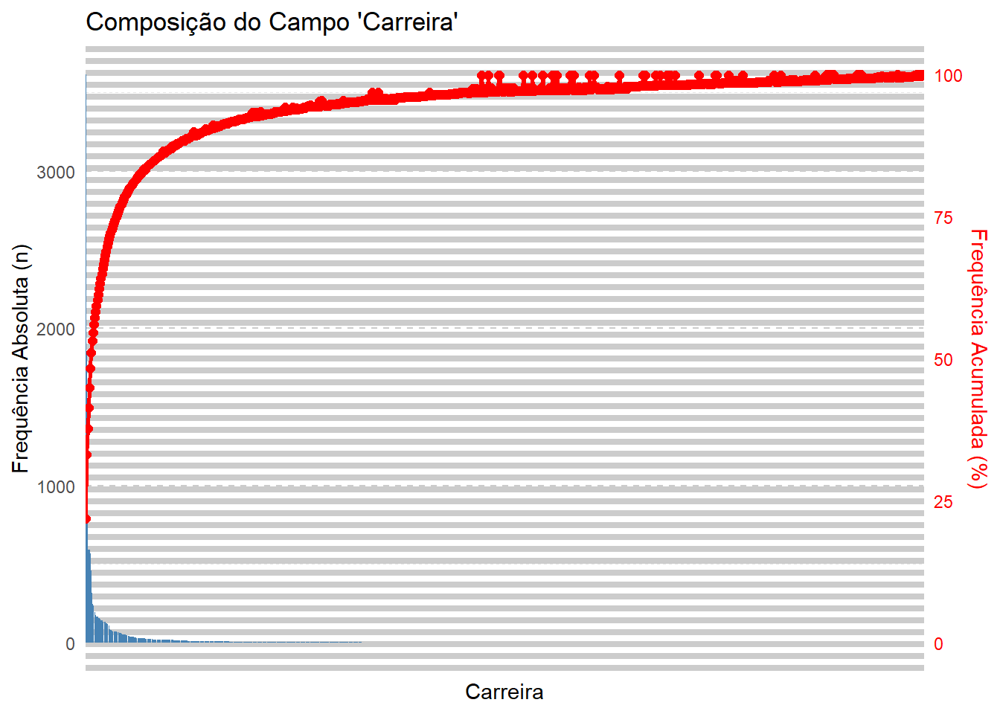
Transformação de categorias
Perceba que, pelo fato de ser um campo descritivo de livre preenchimento, há uma dispersão enorme dos dados. Para que tal campo agregue minimamente algum valor, é preciso padronização. Tal padronização foi feita a partir da criação de um arquivo excel chamado “DE_PARA_CARREIRA.xlsx” com categorias padrão, transformando em categoria residual “Outros” as instâncias menos frequentes que representem os 20% finais da distribuição. Categorias com pouca representatividade contribuem para risco de overfitting8 e, para evitar tal problema, é preciso que tal campo seja tratado9. Abaixo o código:
# Importando tabela "DE_PARA_CARREIRA" para cruzamento
df_carreira <- read_excel('DE_PARA_CARREIRA.xlsx')
df_carreira <- df_carreira %>%
rename(carreira = DE)
# Convertendo a coluna 'carreira' para caixa alta em df_carreira
df_carreira <- df_carreira %>%
mutate(carreira_UC = toupper(carreira))
# Convertendo a coluna 'carreira' para caixa alta em df_tbl_final
df_tbl_final <- df_tbl_final %>%
mutate(carreira_UC = toupper(carreira))
# Realizando a junção (merge) dos DataFrames
df_tbl_final <- df_tbl_final %>%
left_join(df_carreira %>% select(carreira_UC, PARA_CARREIRA_PADR), by = "carreira_UC")
df_composicao <- df_tbl_final %>%
count(PARA_CARREIRA_PADR) %>%
mutate(percent = (n / sum(n)) * 100) %>%
arrange(desc(n)) %>%
mutate(cum_percent = cumsum(percent)) %>%
mutate(percent = round(percent, 1),
cum_percent = round(cum_percent, 1)) %>%
mutate(PARA_CARREIRA_PADR = ifelse(cum_percent > 94, "OUTROS", PARA_CARREIRA_PADR)) %>%
group_by(PARA_CARREIRA_PADR) %>%
summarise(n = sum(n)) %>%
ungroup() %>%
mutate(percent = (n / sum(n)) * 100) %>%
arrange(desc(n)) %>%
mutate(cum_percent = cumsum(percent)) %>%
mutate(percent = round(percent, 1),
cum_percent = round(cum_percent, 1))Composição final das carreiras
Após a transformação, chega-se à seguinte composição final para o campo “carreira”2 3:
| PARA_CARREIRA_PADR | n | percent | cum_percent |
|---|---|---|---|
| MAGISTÉRIO | 5071 | 30.8 | 30.8 |
| GERAL - ESTADO | 3622 | 22.0 | 52.8 |
| OUTROS | 2820 | 17.1 | 69.9 |
| AUXILIAR DE SERVIÇOS GERAIS | 1400 | 8.5 | 78.4 |
| ADMINISTRATIVO | 979 | 5.9 | 84.3 |
| SERVIDOR PÚBLICO | 942 | 5.7 | 90.0 |
| SSA | 592 | 3.6 | 93.6 |
| EDUCAÇÃO | 286 | 1.7 | 95.3 |
| GERAL - CG | 196 | 1.2 | 96.5 |
| VIGILANTE | 196 | 1.2 | 97.7 |
| AUXILIAR DE LIMPEZA URBANA | 193 | 1.2 | 98.9 |
| ENFERMAGEM | 182 | 1.1 | 100.0 |
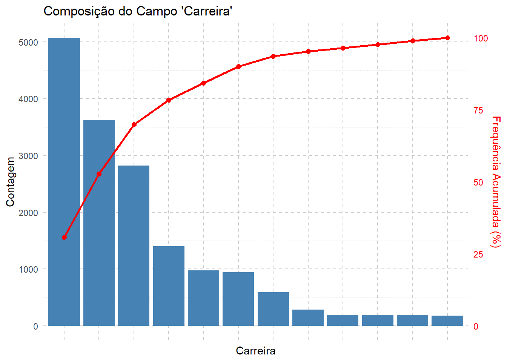
Veja que a categoria residual e outras categorias um tanto quanto genéricas são muito frequentes, o que nos indica que o potencial explicativo deste atributo deve ser reduzido.
Do campo “meiodepublicação”
O campo “meiodepublicação” corresponde ao meio de publicação utilizado para a publicação do ato concessório de aposentadoria. É um campo livre que possivelmente terá pouco potencial explicativo na avaliação de risco. No entanto, faz-se uma mínima análise a seguir.
Composição inicial dos meios de publicação utilizados para concessão dos benefícios
Inicialmente, convém avaliarmos a composição dos dados3 de tal campo antes de qualquer transformação, para que se possa ter uma percepção acerca da quantidade de registros por categoria existente na base de dados1. A seguir, apresenta-se a composição inicial de tal campo, em versões tabulada e gráfica2:
| meiopublicacaoconcessaobeneficio | n | percent | cum_percent |
|---|---|---|---|
| PERIÓDICO DIÁRIO OFICIAL | 6842 | 41.5 | 41.5 |
| BOLETIM OFICIAL | 1428 | 8.7 | 50.2 |
| SEMANÁRIO | 1419 | 8.6 | 58.8 |
| SEMANÁRIO OFICIAL | 518 | 3.1 | 61.9 |
| DIARIO OFICIAL DO MUNICIPIO | 469 | 2.8 | 64.8 |
| DIÁRIO OFICIAL DO MUNICÍPIO | 387 | 2.3 | 67.1 |
| DIARIO OFICIAL | 377 | 2.3 | 69.4 |
| DIÁRIO OFICIAL | 311 | 1.9 | 71.3 |
| PORTARIA | 290 | 1.8 | 73.1 |
| Diário Oficial do Município | 246 | 1.5 | 74.6 |
| Diário Oficial dos Municípios do Estado da Paraíba | 229 | 1.4 | 76.0 |
| DIÁRIO OFICIAL DOS MUNICÍPIOS | 223 | 1.4 | 77.3 |
| DIÁRIO OFICIAL DO MUNICIPIO | 175 | 1.1 | 78.4 |
| DIARIO OFICIAL PB | 159 | 1.0 | 79.3 |
| PERIODICO OFICIAL DO IPSEMC | 154 | 0.9 | 80.3 |
| Diário Oficial Municipal | 141 | 0.9 | 81.1 |
| MENSÁRIO OFICIAL DO MUNICÍPIO | 141 | 0.9 | 82.0 |
| DIARIO OFICIAL DOS MUNICIPIOS DO ESTADO DA PARAIBA | 105 | 0.6 | 82.6 |
| DIÁRIO OFICIAL DOS MUNICÍPIOS DO ESTADO DA PARAÍBA | 104 | 0.6 | 83.2 |
| DIARIO OFICIAL DO MUNICIPIO JORNAL NOVA ERA | 103 | 0.6 | 83.9 |
| Diário Oficial dos Municípios FAMUP | 101 | 0.6 | 84.5 |
| JORNAL OFICIAL DO MUNICIPIO | 97 | 0.6 | 85.1 |
| DIARIO OFICIAL DOS MUNICIPIOS | 95 | 0.6 | 85.6 |
| SEMANARIO OFICIAL | 69 | 0.4 | 86.1 |
| D. O. M | 68 | 0.4 | 86.5 |
| FAMUP | 68 | 0.4 | 86.9 |
| Jornal Oficial do Município | 65 | 0.4 | 87.3 |
| Semanário Oficial | 60 | 0.4 | 87.7 |
| JORNAL OFICIAL DO MUNICÍPIO | 55 | 0.3 | 88.0 |
| Diário Oficial | 54 | 0.3 | 88.3 |
| Jornal Oficial do Municipio | 53 | 0.3 | 88.6 |
| DOM | 51 | 0.3 | 88.9 |
| Jornal Oficial | 50 | 0.3 | 89.2 |
| Diário Oficial do Municipio | 49 | 0.3 | 89.5 |
| D.O.M | 46 | 0.3 | 89.8 |
| DIÁRIO OFICIAL DOS MUNICIPIOS | 44 | 0.3 | 90.1 |
| MENSARIO OFICIAL DO MUNICIPIO | 41 | 0.2 | 90.3 |
| BOLETIM OFICIAL DO MUNICIPIO | 40 | 0.2 | 90.6 |
| JORNAL OFICIAL | 38 | 0.2 | 90.8 |
| diario oficial | 37 | 0.2 | 91.0 |
| Diário Oficial dos Municípios - FAMUP | 35 | 0.2 | 91.2 |
| DIARIO OFICIAL DOS MUNICÍPIOS FAMUP | 34 | 0.2 | 91.5 |
| DIÁRIO OFICIAL DO MUNICÍPIO. | 34 | 0.2 | 91.7 |
| Famup | 34 | 0.2 | 91.9 |
| Diário Oficial da Prefeitura Municipal de Juazeirinho | 32 | 0.2 | 92.1 |
| Jornal Oficial do Município de Juazeirinho | 32 | 0.2 | 92.3 |
| Portaria | 32 | 0.2 | 92.5 |
| MENSÁRIO OFICIAL DO MUNICIPIO | 29 | 0.2 | 92.6 |
| diário oficial municipal | 29 | 0.2 | 92.8 |
| Diario Oficial do Municipio | 28 | 0.2 | 93.0 |
| DIARIO FAMUP | 26 | 0.2 | 93.1 |
| DIARIO OFICIAL DO MUNCÍPIO | 26 | 0.2 | 93.3 |
| DIÁRIO OFICIAL DO MUNICÍPIO DE MARI | 26 | 0.2 | 93.4 |
| DIÁRIO OFICIAL MUNICIPAL | 26 | 0.2 | 93.6 |
| DIÁRIO OFICIAL - FAMUP | 25 | 0.2 | 93.8 |
| Diario Oficial do Município | 25 | 0.2 | 93.9 |
| diario Famup | 25 | 0.2 | 94.1 |
| Diario Oficial | 24 | 0.1 | 94.2 |
| BOLETIM OFICIAL DO MUNICÍPIO | 23 | 0.1 | 94.3 |
| ATOS DO PODER EXECUTIVO | 22 | 0.1 | 94.5 |
| DIARIO OFICIAL DO MUNICIPIO DE CUITE | 22 | 0.1 | 94.6 |
| Boletim Oficial | 21 | 0.1 | 94.7 |
| Diário Eletrônico Oficial do Município de Santa Rita | 19 | 0.1 | 94.9 |
| BOLETIM | 18 | 0.1 | 95.0 |
| DIARIO DO MUNICIPIO | 18 | 0.1 | 95.1 |
| DIARIO OFICIAL NOVA ERA | 17 | 0.1 | 95.2 |
| Diário Oficial Eletrônico do Município de Santa Rita | 17 | 0.1 | 95.3 |
| SEMANARIO | 17 | 0.1 | 95.4 |
| D O M | 16 | 0.1 | 95.5 |
| POI - Periódico Oficial do IPSEMC | 16 | 0.1 | 95.6 |
| DIARIO OFICIAL DO MUNICÍPIO | 14 | 0.1 | 95.7 |
| Jornal Oficial do Município de Frei martinho | 14 | 0.1 | 95.7 |
| Jornal Oficial do Município de Água Branca-PB | 14 | 0.1 | 95.8 |
| DIÁRIO OFICIAL DOS MUNICIPIOS - FAMUP | 13 | 0.1 | 95.9 |
| Jornal Oficial da Prefeitura de Barra de Santa Rosa | 13 | 0.1 | 96.0 |
| Periódico Oficial IPSEMC | 13 | 0.1 | 96.1 |
| ATO DO PODER EXECUTIVO | 12 | 0.1 | 96.1 |
| DIÁRIO MUNICIPAL DE ALHANDRA - FAMUP | 12 | 0.1 | 96.2 |
| JORNAL CIRCULAÇÃO INTERNA | 12 | 0.1 | 96.3 |
| DIARIO OFICIAL DOS MUNICIPIOS DA PARAIBA | 11 | 0.1 | 96.4 |
| DIÁRIO DOS MUNICÍPIOS | 11 | 0.1 | 96.4 |
| Diário Oficial Eletrônico do Município | 11 | 0.1 | 96.5 |
| Diário Oficial do Município de Mari | 11 | 0.1 | 96.6 |
| Diário Oficial dos Municípios do Estado da Paraíb | 11 | 0.1 | 96.6 |
| Diário da Famup | 11 | 0.1 | 96.7 |
| GAZETA OFICIAL LAVRADENSE | 11 | 0.1 | 96.8 |
| JORNAL OFICIAL - MUNICÍPIO DE BANANEIRAS | 11 | 0.1 | 96.8 |
| Jornal Oficial do Munícipio | 11 | 0.1 | 96.9 |
| DIÁRIO OFICIAL DO MUNICÍPIO DE NOVA PALMEIRA-PB | 10 | 0.1 | 96.9 |
| JORNAL TRIBUNA DO MUNICIPIO | 10 | 0.1 | 97.0 |
| JORNAL TRIBUNA DO MUNICÍPIO | 10 | 0.1 | 97.1 |
| TRIBUMA DO MUNICIPIO | 10 | 0.1 | 97.1 |
| DIARIO OFICIAL DO MUNICIPIO NOVA ERA | 9 | 0.1 | 97.2 |
| DIARIO OFICIAL DOS MUNICIPIOS DO ESTADO DA PARAIBA - FAMUP | 9 | 0.1 | 97.2 |
| TRIBUNA DO MUNICIPIO | 9 | 0.1 | 97.3 |
| D. O. M. | 8 | 0.0 | 97.3 |
| DIÁRIO OFICIAL DA FAMUP | 8 | 0.0 | 97.4 |
| IPSM | 8 | 0.0 | 97.4 |
| Semanário Ofícial do Município | 8 | 0.0 | 97.5 |
| DIARIO OFICAL DO MUNICIPIO | 7 | 0.0 | 97.5 |
| DIÁRIO OFICIAL DOS MUNICIPIOS DO ESTADO DA PARAIBA | 7 | 0.0 | 97.6 |
| DIÁRIO OFICIAL DOS MUNICÍPIOS DA PARAÍBA | 7 | 0.0 | 97.6 |
| Diário Oficial da Prefeitura | 7 | 0.0 | 97.7 |
| D.O.M. | 6 | 0.0 | 97.7 |
| DIARIO OFICIAL DO MUNICIPIO DE ALHANDRA - FAMUP | 6 | 0.0 | 97.7 |
| DIÁRIO MUNICIPAL - FAMUP | 6 | 0.0 | 97.8 |
| DIÁRIO OFICIAL JORNAL DO MUNICIPIO | 6 | 0.0 | 97.8 |
| Diário Oficial do Município de Juazeirinho | 6 | 0.0 | 97.8 |
| Diário Oficial dos Municipios | 6 | 0.0 | 97.9 |
| Diário Oficial dos Municípios | 6 | 0.0 | 97.9 |
| JORNAL OFICIAL DO MUNICÍPIO DE BANANEIRAS | 6 | 0.0 | 97.9 |
| POI - PERIÓDICO OFICIAL DO IPSEMC | 6 | 0.0 | 98.0 |
| DIARIO OFICIAL DO MUNICIPIO DE NOVA PALMEIRA-PB | 5 | 0.0 | 98.0 |
| DIARIO OFICIAL DO MUNICÍPIO JORNAL NOVA ERA | 5 | 0.0 | 98.0 |
| DIÁRIO | 5 | 0.0 | 98.1 |
| Diario Oficial Municipal | 5 | 0.0 | 98.1 |
| Diário dos Municípios | 5 | 0.0 | 98.1 |
| Díario Ofícial dos Municípios do Estado da Paraiba | 5 | 0.0 | 98.2 |
| Gazeta Oficial Lavradense | 5 | 0.0 | 98.2 |
| INFORME OFICIAL | 5 | 0.0 | 98.2 |
| IPSER | 5 | 0.0 | 98.3 |
| ORGAO OFICIAL DO MUNICIPIO DE DIAMANTE | 5 | 0.0 | 98.3 |
| boletim oficial | 5 | 0.0 | 98.3 |
| BOLETIM OFICIAL DO MUNICIPIO DE SÃO SEBASTIÃO DE LAGOA DE RO | 4 | 0.0 | 98.3 |
| DIARIO MUNICIPAL | 4 | 0.0 | 98.4 |
| DIÁRIO MUNICIPAL | 4 | 0.0 | 98.4 |
| DIÁRIO OFICIAL DO MUNICIPAL | 4 | 0.0 | 98.4 |
| DIÁRIO OFICIAL DOS MUNICIPIOS DA PARAIBA | 4 | 0.0 | 98.4 |
| DOE | 4 | 0.0 | 98.5 |
| Diário Oficial do Município de Lagoa Seca/PB | 4 | 0.0 | 98.5 |
| IMPRESSO | 4 | 0.0 | 98.5 |
| JORNAL OFICIAL - MUNICIPIO DE BANANEIRAS | 4 | 0.0 | 98.5 |
| 01/07/2019 | 3 | 0.0 | 98.6 |
| 20/10/2017 | 3 | 0.0 | 98.6 |
| BOLETIM OFICIAL DO MUNICIPIO DE DIAMANTE-PB | 3 | 0.0 | 98.6 |
| DIARIO | 3 | 0.0 | 98.6 |
| DIARIO DA FAMUP | 3 | 0.0 | 98.6 |
| DIARIO OFICIAL DO MUNICÍPIO DE NOVA PALMEIRA-PB | 3 | 0.0 | 98.6 |
| DIARIO OFICIAL DOS MUNICIPIOS DO ESTADO DA PARAÍBA | 3 | 0.0 | 98.7 |
| DIÁRIO OFICIAL DO MUNICÍPIO DE SÃO JOSÉ DOS RAMOS | 3 | 0.0 | 98.7 |
| DIÁRIO OFICIAL DO MUNÍCIPIO | 3 | 0.0 | 98.7 |
| Diário oficial do Município | 3 | 0.0 | 98.7 |
| JORNAL OFICIAL DE FREI MARTINHO | 3 | 0.0 | 98.7 |
| Mensário Oficial do Município | 3 | 0.0 | 98.8 |
| Periódico Oficial do IPSEMC | 3 | 0.0 | 98.8 |
| 01/09/2014 | 2 | 0.0 | 98.8 |
| 01/11/2018 | 2 | 0.0 | 98.8 |
| 08/01/2018 | 2 | 0.0 | 98.8 |
| 10/03/2017 | 2 | 0.0 | 98.8 |
| BOLETIM OFICIAL MUNICIPAL | 2 | 0.0 | 98.8 |
| Boletim oficial | 2 | 0.0 | 98.8 |
| DIARIO OFICIAL DA FAMUP | 2 | 0.0 | 98.9 |
| DIARIO OFICIAL DO MUNICIPAL | 2 | 0.0 | 98.9 |
| DIARIO OFICIAL DOS MUNICIPIOS DO ESTADO DA PARAÍBA - FAMUP | 2 | 0.0 | 98.9 |
| DIARIO OFICIAL DOS MUNICIPIOS FAMUP | 2 | 0.0 | 98.9 |
| DIARIO OFICIAL FAMUP | 2 | 0.0 | 98.9 |
| DIÁRIO - FAMUP | 2 | 0.0 | 98.9 |
| DIÁRIO DO MUNICÍPIO | 2 | 0.0 | 98.9 |
| DIÁRIO OFICAL | 2 | 0.0 | 98.9 |
| DIÁRIO OFICIAL DO MUNICÍPIO DE JURU - PB | 2 | 0.0 | 99.0 |
| DIÁRIO OFICIAL DO MUNICÍPIO DE SANTA CRUZ/PB | 2 | 0.0 | 99.0 |
| Diário Oficial - Edição Extra | 2 | 0.0 | 99.0 |
| Diário Oficial de Lucena | 2 | 0.0 | 99.0 |
| Diário Oficial dos Município do Estado da Paraíba | 2 | 0.0 | 99.0 |
| Diário do Municipio | 2 | 0.0 | 99.0 |
| Diário oficial municipal | 2 | 0.0 | 99.0 |
| Diário Óficial dos Municípios | 2 | 0.0 | 99.0 |
| FOLHA DO MUNICÍPIO | 2 | 0.0 | 99.1 |
| JORNAL DE CIRCULAÇÃO INTERNA | 2 | 0.0 | 99.1 |
| JORNAL NOTICIAS DA FRONTEIRA | 2 | 0.0 | 99.1 |
| JORNAL OFICIAL DOS MUNICIPIOS | 2 | 0.0 | 99.1 |
| Jornal Noticias da Fronteira | 2 | 0.0 | 99.1 |
| MENSARIO OFICIAL DO MUNICÍPIO | 2 | 0.0 | 99.1 |
| OFICIAL | 2 | 0.0 | 99.1 |
| PORTARIA’ | 2 | 0.0 | 99.1 |
| PREFEITURA MUNICIPAL | 2 | 0.0 | 99.2 |
| PUBLICAÇÃO NO DIÁRIO OFICIAL DO MUNICÍPIO | 2 | 0.0 | 99.2 |
| PUBLICAÇÃO PELO DIÁRIO OFICIAL DO MUNICÍPIO | 2 | 0.0 | 99.2 |
| SEMANÁRIO OFICIAL DO MUNICÍPIO | 2 | 0.0 | 99.2 |
| Semanário Oficial do Município | 2 | 0.0 | 99.2 |
| TRIBUNA DO MUNICÍPIO | 2 | 0.0 | 99.2 |
| diario Oficial | 2 | 0.0 | 99.2 |
| diario oficial do municipio | 2 | 0.0 | 99.2 |
| diario oficial municipal | 2 | 0.0 | 99.2 |
| diário oficial do municipio | 2 | 0.0 | 99.3 |
| diário oficial do município | 2 | 0.0 | 99.3 |
| 1 | 0.0 | 99.3 | |
| - | 1 | 0.0 | 99.3 |
| 01/03/2013 | 1 | 0.0 | 99.3 |
| 01/07/2009 | 1 | 0.0 | 99.3 |
| 01/08/2019 | 1 | 0.0 | 99.3 |
| 01/12/2013 | 1 | 0.0 | 99.3 |
| 01/12/2017 | 1 | 0.0 | 99.3 |
| 02/05/2018 | 1 | 0.0 | 99.3 |
| 02/09/2019 | 1 | 0.0 | 99.3 |
| 03/08/2020 | 1 | 0.0 | 99.3 |
| 03/10/2017 | 1 | 0.0 | 99.3 |
| 04/04/20177 | 1 | 0.0 | 99.3 |
| 09/04/2019 | 1 | 0.0 | 99.4 |
| 11/03/2020 | 1 | 0.0 | 99.4 |
| 26/04/2021 | 1 | 0.0 | 99.4 |
| 27/04/2018 | 1 | 0.0 | 99.4 |
| 29/10/2016 | 1 | 0.0 | 99.4 |
| 30/08/2021 | 1 | 0.0 | 99.4 |
| 30062023 | 1 | 0.0 | 99.4 |
| Aposentadoria Concedida Mediante Carta de Concessão | 1 | 0.0 | 99.4 |
| Boletim Oficial do Município de Diamante-PB | 1 | 0.0 | 99.4 |
| Bolitim Oficial do Municipio de Diamante-PB | 1 | 0.0 | 99.4 |
| DIARIO DO FAMUP | 1 | 0.0 | 99.4 |
| DIARIO OFICIAL DO MNICIPIO | 1 | 0.0 | 99.4 |
| DIARIO OFICIAL DO MUNCIPIO | 1 | 0.0 | 99.4 |
| DIARIO OFICIAL DO MUNICIPAL DE CAJAZEIRAS | 1 | 0.0 | 99.4 |
| DIARIO OFICIAL DO MUNICIPIO DE CAJAZEIRAS JORNAL NOVA ERA | 1 | 0.0 | 99.4 |
| DIARIO OFICIAL DO MUNICIPIO MOVA ERA | 1 | 0.0 | 99.4 |
| DIARIO OFICIAL DO MUNICÍPIO DE ALHANDRA | 1 | 0.0 | 99.4 |
| DIARIO OFICIAL DO MUNICÍPIO DE ALHANDRA - FAMUP | 1 | 0.0 | 99.5 |
| DIARIO OFICIAL DO MUNICÍPIO DE ALHNDRA | 1 | 0.0 | 99.5 |
| DIARIO OFICIAL DO MUNICÍPIO DE MARI | 1 | 0.0 | 99.5 |
| DIARIO OFICIAL DOMUNICIPIO | 1 | 0.0 | 99.5 |
| DIARIO OFICIAL JORNAL NOVA ERA | 1 | 0.0 | 99.5 |
| DIARIO OFICIAL MUNICIPAL | 1 | 0.0 | 99.5 |
| DIARIO OFICIAL MUNICIPAL DE MARI | 1 | 0.0 | 99.5 |
| DIÁRIO DO MUNICIPIO | 1 | 0.0 | 99.5 |
| DIÁRIO DO MUNICÍPIO DE NOVA PALMEIRA -PB | 1 | 0.0 | 99.5 |
| DIÁRIO MUNICIPIO | 1 | 0.0 | 99.5 |
| DIÁRIO OFIACIAL DOS MUNICÍPIOS DO ESTADO DA PARAIBA | 1 | 0.0 | 99.5 |
| DIÁRIO OFICAL DO MUNICIPIO | 1 | 0.0 | 99.5 |
| DIÁRIO OFICIAL DA UNIÃO | 1 | 0.0 | 99.5 |
| DIÁRIO OFICIAL DE MUNICÍPIO | 1 | 0.0 | 99.5 |
| DIÁRIO OFICIAL DO MUNICIPIO O PIRANHAS | 1 | 0.0 | 99.5 |
| DIÁRIO OFICIAL DO MUNICÏPIO | 1 | 0.0 | 99.5 |
| DIÁRIO OFICIAL DO MUNUCÍPIO | 1 | 0.0 | 99.6 |
| DIÁRIO OFICIAL DOS MUNICÍPIOS - FAMUP | 1 | 0.0 | 99.6 |
| DIÁRIO OFICIAL FAMUP | 1 | 0.0 | 99.6 |
| DIÁRIO OFICIAL MUN DE LUCENA, LEI Nº 128, DE 07/04/1981. | 1 | 0.0 | 99.6 |
| DIÁRIO OFICIAL MUNICIPIO | 1 | 0.0 | 99.6 |
| DIÁRIO OFICIOL | 1 | 0.0 | 99.6 |
| DOM -Diário Oficial do Município | 1 | 0.0 | 99.6 |
| Diario Oficial da Prefeitura Municipal de Juazeirinho | 1 | 0.0 | 99.6 |
| Diario Oficial dos Municipios | 1 | 0.0 | 99.6 |
| Diario Oficial dos Municipios do Estado da Paraíba | 1 | 0.0 | 99.6 |
| Diário Municipal de Lagoa Seca | 1 | 0.0 | 99.6 |
| Diário Odicial do Municipio | 1 | 0.0 | 99.6 |
| Diário Oficial dos Municipios do Estado da Paraíba | 1 | 0.0 | 99.6 |
| Diário Oficial - FAMUP | 1 | 0.0 | 99.6 |
| Diário Oficial Prefeitura Municipal de Bayeux | 1 | 0.0 | 99.6 |
| Diário Oficial da Prefeitura Municipal de Bayeux | 1 | 0.0 | 99.6 |
| Diário Oficial da Prefeitura Municipal de Juzeirinho | 1 | 0.0 | 99.6 |
| Diário Oficial de Bayeux | 1 | 0.0 | 99.7 |
| Diário Oficial de Bayeux - Edição Extra | 1 | 0.0 | 99.7 |
| Diário Oficial de Município | 1 | 0.0 | 99.7 |
| Diário Oficial do Municipal | 1 | 0.0 | 99.7 |
| Diário Oficial do Município - O PIRANHAS | 1 | 0.0 | 99.7 |
| Diário Oficial do Município de Lucena | 1 | 0.0 | 99.7 |
| Diário Oficial dos Municípios Famup | 1 | 0.0 | 99.7 |
| Diário Oficial dos Municípios do Estado da | 1 | 0.0 | 99.7 |
| Diário Oficial dos Municípios do Estado da Paraiba | 1 | 0.0 | 99.7 |
| Diário Oficial dos municípios do Estado da Paraíba | 1 | 0.0 | 99.7 |
| Diário Oficial- Edição Extra | 1 | 0.0 | 99.7 |
| Diário Oficial-Edição Extra | 1 | 0.0 | 99.7 |
| Diário Oificial do Municipio | 1 | 0.0 | 99.7 |
| Diário oficial | 1 | 0.0 | 99.7 |
| Diário oficial de Bayeux | 1 | 0.0 | 99.7 |
| Diário oficial do Municipio | 1 | 0.0 | 99.7 |
| Diário oficial dos Municípios FAMUP | 1 | 0.0 | 99.8 |
| Dário Oficial Municipal | 1 | 0.0 | 99.8 |
| GAZETA LAVRADENSE | 1 | 0.0 | 99.8 |
| INFORMATIVO OFICIAL DO MUNICÍPIO | 1 | 0.0 | 99.8 |
| INFORME OFICIAL DO MUNICIPIO | 1 | 0.0 | 99.8 |
| IPMP | 1 | 0.0 | 99.8 |
| JORNAL OFICIAL DO MUNICIPIL DE ALAGOA NOVA | 1 | 0.0 | 99.8 |
| JORNAL OFICIAL MUNICIPA | 1 | 0.0 | 99.8 |
| JORNALOFICIAL | 1 | 0.0 | 99.8 |
| Jornal Oficial do Municipal | 1 | 0.0 | 99.8 |
| Jornal Oficial do Município de Frei Marinho | 1 | 0.0 | 99.8 |
| Jornal Oficial do Município de Frei Martinho | 1 | 0.0 | 99.8 |
| Jornal Oficial do Município de Princesa Isabel | 1 | 0.0 | 99.8 |
| Jornal Oficial do municipio | 1 | 0.0 | 99.8 |
| MENSARIO OFICIAL | 1 | 0.0 | 99.8 |
| MENSÁRIO OFICIAL | 1 | 0.0 | 99.8 |
| Mensário Oficial da Prefeitura de Santa Rita | 1 | 0.0 | 99.8 |
| Mensário Oficial do Município de Santa Rita | 1 | 0.0 | 99.9 |
| Mural | 1 | 0.0 | 99.9 |
| PERIÓDICO OFICIAL DO IPSEMC - POI | 1 | 0.0 | 99.9 |
| POER | 1 | 0.0 | 99.9 |
| PORTARIA Nº 01 | 1 | 0.0 | 99.9 |
| PORTARIA Nº 21 | 1 | 0.0 | 99.9 |
| PORTARIA Nº 28 | 1 | 0.0 | 99.9 |
| PORTARIA Nº 55 | 1 | 0.0 | 99.9 |
| PUBLICAÇÃO DIÁRIO OFICIAL DO MUNICÍPIO | 1 | 0.0 | 99.9 |
| PUBLICAÇÃO SEMANARIO OFICIAL | 1 | 0.0 | 99.9 |
| Periódico Oficial do Instituto | 1 | 0.0 | 99.9 |
| SEMANARIO OFICIAL DO MUNICIPIO | 1 | 0.0 | 99.9 |
| SEMANRIO OFICIAL | 1 | 0.0 | 99.9 |
| SEMANÁRIO OFICIAL DO MUNICIPIO DE ESPERANÇA/PB | 1 | 0.0 | 99.9 |
| SEMANÁRIO’ | 1 | 0.0 | 99.9 |
| SEMARNARIO OFICIAL DO MUNICIPIO | 1 | 0.0 | 99.9 |
| SEMINÁRIO OFICIAL | 1 | 0.0 | 100.0 |
| SITE DA PREFEITURA MUNICIPAL DE ALGODÃO DE JANDAIRA | 1 | 0.0 | 100.0 |
| diario oficial dos municipios do estado da paraiba | 1 | 0.0 | 100.0 |
| diário oficial de lagoa seca | 1 | 0.0 | 100.0 |
| folha do Município | 1 | 0.0 | 100.0 |
| jornal oficial do município | 1 | 0.0 | 100.0 |
| mensário oficial do município | 1 | 0.0 | 100.0 |
| orgão oficial do municipio de diamante | 1 | 0.0 | 100.0 |
| tribuna do municipio | 1 | 0.0 | 100.0 |
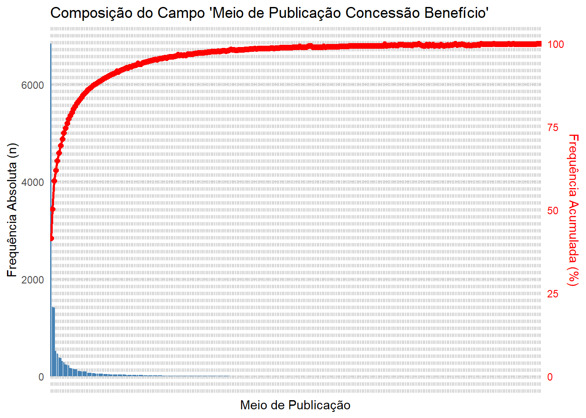
Transformação de categorias
Perceba que, pelo fato de ser um campo descritivo de livre preenchimento, há uma dispersão enorme dos dados. Para que tal campo agregue minimamente algum valor, é preciso uma padronização. Tal padronização foi feita a partir da criação de um arquivo excel chamado “DE_PARA_MEIOP.xlsx” com categorias padrão, transformando em categoria residual “Outros” as instâncias menos frequentes que representem os 20% finais da distribuição. Categorias com pouca representatividade contribuem para risco de overfitting8 e, para evitar tal problema, é preciso que tal campo seja tratado9. Abaixo o código:
# Importando tabela "DE_PARA_MEIOP" para cruzamento
df_meiop <- read_excel('DE_PARA_MEIOP.xlsx')
df_meiop <- df_meiop %>%
rename(meiopublicacaoconcessaobeneficio = DE)
# Convertendo a coluna 'carreira' para caixa alta em df_carreira
df_meiop <- df_meiop %>%
mutate(meiop_UC = toupper(meiopublicacaoconcessaobeneficio))
# Convertendo a coluna 'carreira' para caixa alta em df_tbl_final
df_tbl_final <- df_tbl_final %>%
mutate(meiop_UC = toupper(meiopublicacaoconcessaobeneficio))
# Realizando a junção (merge) dos DataFrames
df_tbl_final <- df_tbl_final %>%
left_join(df_meiop %>% select(meiop_UC, PARA_MEIOP_PADR), by = "meiop_UC")
df_tbl_final <- df_tbl_final %>%
mutate(PARA_MEIOP_PADR = ifelse(is.na(PARA_MEIOP_PADR), 'OUTROS', PARA_MEIOP_PADR))
df_composicao <- df_tbl_final %>%
count(PARA_MEIOP_PADR) %>%
mutate(percent = (n / sum(n)) * 100) %>%
arrange(desc(n)) %>%
mutate(cum_percent = cumsum(percent)) %>%
mutate(percent = round(percent, 1),
cum_percent = round(cum_percent, 1)) %>%
mutate(PARA_MEIOP_PADR = ifelse(cum_percent > 90, "OUTROS", PARA_MEIOP_PADR)) %>%
group_by(PARA_MEIOP_PADR) %>%
summarise(n = sum(n)) %>%
ungroup() %>%
mutate(percent = (n / sum(n)) * 100) %>%
arrange(desc(n)) %>%
mutate(cum_percent = cumsum(percent)) %>%
mutate(percent = round(percent, 1),
cum_percent = round(cum_percent, 1))Composição final dos meios de publicação utilizados para concessão dos benefícios
Após a transformação, chega-se à seguinte composição final para o campo “PARA_MEIOP_PADR”2 3:
| PARA_MEIOP_PADR | n | percent | cum_percent |
|---|---|---|---|
| DIÁRIO OFICIAL | 10853 | 65.9 | 65.9 |
| SEMANÁRIO OFICIAL | 2102 | 12.8 | 78.6 |
| OUTROS | 1976 | 12.0 | 90.6 |
| BOLETIM OFICIAL | 1548 | 9.4 | 100.0 |
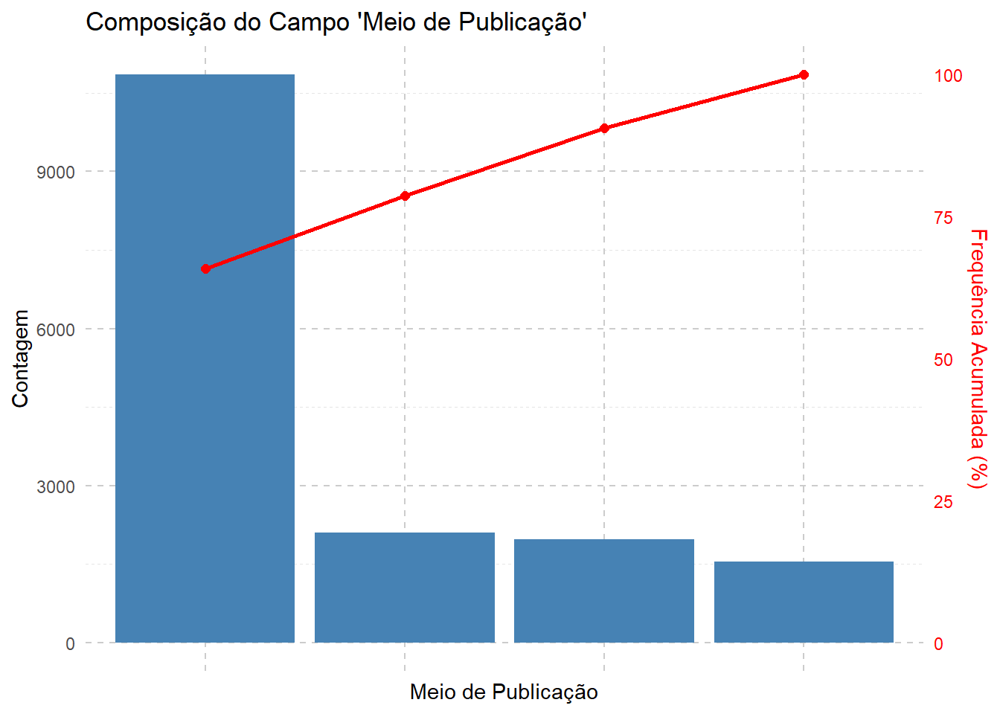
Do campo “qtd_de_vinculos”
Os campos “total_vinculos”, “qtd_vinculos_priv”, “qtd_vinculos_pub”, “qtd_vinculos_mesmo_cargo” e “qtd_vinculos_mesma_carreira” representam, respectivamente, a quantidade de vínculos totais, privados, públicos, no mesmo cargo e na mesma carreira que o aposentado teve ao longo de sua vida funcional. O código abaixo cria categorias para tais variáveis, de maneira a permitir sua interpretação pelos modelos de aprendizagem de máquina a serem aplicados9:
# Criar categorias para a quantidade de vínculos totais
# Função para categorização
categorizar_vinculos <- function(qtd) {
if (qtd == 1) {
return('1 vínculo')
} else if (qtd == 2) {
return('2 vínculos')
} else if (qtd == 3) {
return('3 vínculos')
} else if (qtd == 4) {
return('4 vínculos')
} else {
return('5 ou mais vínculos')
}
}
# Aplicar a função à coluna e atribuir o resultado a uma nova coluna
df_tbl_final <- df_tbl_final %>%
mutate(qtd_vinculos_padr = sapply(qtd_vinculos, categorizar_vinculos))
# Criar categorias para a quantidade de vínculos privados
# Função para aplicar a lógica desejada
categorizar_vinculos_priv <- function(qtd) {
if (qtd == 0) {
return('Nenhum vínculo privado')
} else if (qtd == 1) {
return('1 vínculo privado')
} else if (qtd == 2) {
return('2 vínculos privados')
} else {
return('3 ou mais vínculos privados')
}
}
# Aplicar a função à coluna e atribuir o resultado a uma nova coluna
df_tbl_final <- df_tbl_final %>%
mutate(qtd_vinculos_privados_padr = sapply(qtd_vinculos_priv, categorizar_vinculos_priv))
# Criar categorias para a quantidade de vínculos públicos
# Função para aplicar a lógica desejada
categorizar_vinculos_pub <- function(qtd) {
if (qtd == 0) {
return('Nenhum vínculo público')
} else if (qtd == 1) {
return('1 vínculo público')
} else if (qtd == 2) {
return('2 vínculos públicos')
} else if (qtd == 3) {
return('3 vínculos públicos')
} else {
return('4 ou mais vínculos públicos')
}
}
# Aplicar a função à coluna e atribuir o resultado a uma nova coluna
df_tbl_final <- df_tbl_final %>%
mutate(qtd_vinculos_pub_padr = sapply(qtd_vinculos_pub, categorizar_vinculos_pub))
# Criar categorias para a quantidade de vínculos no mesmo cargo
# Função para aplicar a lógica desejada
categorizar_vinculos_mesmo_cargo <- function(qtd) {
if (qtd == 1) {
return('1 vínculo')
} else if (qtd == 2) {
return('2 vínculos')
} else {
return('3 ou mais vínculos')
}
}
# Aplicar a função à coluna e atribuir o resultado a uma nova coluna
df_tbl_final <- df_tbl_final %>%
mutate(qtd_vinculos_mesmo_cargo_padr = sapply(qtd_vinculos_mesmo_cargo, categorizar_vinculos_mesmo_cargo))
# Criar categorias para a quantidade de vínculos na mesma carreira
# Função para aplicar a lógica desejada
categorizar_vinculos_mesma_carreira <- function(qtd) {
if (qtd == 1) {
return('1 vínculo')
} else if (qtd == 2) {
return('2 vínculos')
} else {
return('3 ou mais vínculos')
}
}
# Aplicar a função à coluna e atribuir o resultado a uma nova coluna
df_tbl_final <- df_tbl_final %>%
mutate(qtd_vinculos_mesma_carreira_padr = sapply(qtd_vinculos_mesma_carreira, categorizar_vinculos_mesma_carreira))Após tais categorizações, chega-se às seguintes composições finais2 3
| qtd_vinculos_padr | n | percent | cum_percent |
|---|---|---|---|
| 1 vínculo | 8985 | 54.5 | 54.5 |
| 2 vínculos | 3821 | 23.2 | 77.7 |
| 3 vínculos | 1697 | 10.3 | 88.0 |
| 5 ou mais vínculos | 1228 | 7.5 | 95.5 |
| 4 vínculos | 748 | 4.5 | 100.0 |
| qtd_vinculos_privados_padr | n | percent | cum_percent |
|---|---|---|---|
| Nenhum vínculo privado | 13580 | 82.4 | 82.4 |
| 3 ou mais vínculos privados | 1165 | 7.1 | 89.5 |
| 1 vínculo privado | 1143 | 6.9 | 96.4 |
| 2 vínculos privados | 591 | 3.6 | 100.0 |
| qtd_vinculos_pub_padr | n | percent | cum_percent |
|---|---|---|---|
| 1 vínculo público | 10818 | 65.6 | 65.6 |
| 2 vínculos públicos | 3838 | 23.3 | 88.9 |
| 3 vínculos públicos | 1267 | 7.7 | 96.6 |
| 4 ou mais vínculos públicos | 556 | 3.4 | 100.0 |
| qtd_vinculos_mesmo_cargo_padr | n | percent | cum_percent |
|---|---|---|---|
| 1 vínculo | 13790 | 83.7 | 83.7 |
| 2 vínculos | 2098 | 12.7 | 96.4 |
| 3 ou mais vínculos | 591 | 3.6 | 100.0 |
| qtd_vinculos_mesma_carreira_padr | n | percent | cum_percent |
|---|---|---|---|
| 1 vínculo | 13493 | 81.9 | 81.9 |
| 2 vínculos | 2271 | 13.8 | 95.7 |
| 3 ou mais vínculos | 715 | 4.3 | 100.0 |
Do campo “cargo”
O campo cargo é importantíssimo para a avaliação de risco, pois cada cargo tem previsão própria na legislação, com parcelas remuneratórias específicas à sua natureza. No entanto, de igual modo à maioria dos campos nesta base de dados, é de preenchimento livre pelo instituto de previdência, o que tem permitido o envio de dados com erros de escrita e que muitas vezes não se consegue extrair sentido.
Composição inicial dos cargos
Inicialmente, convém avaliarmos a composição dos dados3 de tal campo antes de qualquer transformação, para que se possa ter uma percepção acerca da quantidade de registros por categoria existente na base de dados1. A seguir, apresenta-se a composição inicial de tal campo, em versões tabulada e gráfica2:
| cargo | n | percent | cum_percent |
|---|---|---|---|
| PROFESSOR DE EDUCACAO BASICA 3 | 1021 | 6.2 | 6.2 |
| PROFESSORA | 982 | 6.0 | 12.2 |
| AGENTE ADMINISTRATIVO | 807 | 4.9 | 17.1 |
| AUXILIAR DE SERVICO | 660 | 4.0 | 21.1 |
| PROFESSOR DE EDUCACAO BASICA 1 | 631 | 3.8 | 24.9 |
| AUXILIAR DE SERVIÇOS GERAIS | 628 | 3.8 | 28.7 |
| TECNICO DE NIVEL MEDIO | 504 | 3.1 | 31.8 |
| PROFESSOR | 353 | 2.1 | 33.9 |
| AUXILIAR DE SERVIÇOS | 275 | 1.7 | 35.6 |
| Auxiliar de Serviços Gerais | 221 | 1.3 | 36.9 |
| Professora | 210 | 1.3 | 38.2 |
| REGENTE DE ENSINO | 205 | 1.2 | 39.4 |
| AUXILIAR DE ADMINISTRAÇÃO | 184 | 1.1 | 40.5 |
| MEDICO | 183 | 1.1 | 41.7 |
| ASSISTENTE LEGISLATIVA | 181 | 1.1 | 42.8 |
| PROFESSOR DA EDUCAÇÃO BÁSICA II | 180 | 1.1 | 43.8 |
| PROFESSOR DE EDUCAÇÃO BASICA I | 171 | 1.0 | 44.9 |
| PROFESSORA DA EDUCAÇÃO BÁSICA II | 156 | 0.9 | 45.8 |
| AGENTE DE SERVIÇOS GERAIS | 155 | 0.9 | 46.8 |
| MOTORISTA | 154 | 0.9 | 47.7 |
| PROFESSOR DA EDUCAÇÃO BÁSICA I | 153 | 0.9 | 48.6 |
| AUXILIAR DE SERVIÇOS DIVERSOS | 141 | 0.9 | 49.5 |
| CIRURGIAO DENTISTA | 141 | 0.9 | 50.3 |
| Professor | 140 | 0.8 | 51.2 |
| VIGILANTE | 140 | 0.8 | 52.0 |
| ENFERMEIRO | 137 | 0.8 | 52.9 |
| AUXILIAR DE ENFERMAGEM | 134 | 0.8 | 53.7 |
| PROFESSORA DA EDUCAÇÃO BÁSICA I | 125 | 0.8 | 54.4 |
| AGENTE ADM. AUXILIAR | 122 | 0.7 | 55.2 |
| ATENDENTE | 120 | 0.7 | 55.9 |
| PROFESSOR DE EDUCACAO BASICA 2 | 114 | 0.7 | 56.6 |
| MERENDEIRA | 100 | 0.6 | 57.2 |
| ASSESSOR ADMINISTRATIVO III | 98 | 0.6 | 57.8 |
| ASSESSOR P/ ASS ADM GERAL | 98 | 0.6 | 58.4 |
| VIGIA | 95 | 0.6 | 59.0 |
| ASSISTENTE SOCIAL | 94 | 0.6 | 59.5 |
| TRABALHADOR III | 90 | 0.5 | 60.1 |
| PROFESSOR DE EDUCAÇAO BASICA 1 | 82 | 0.5 | 60.6 |
| GARI | 81 | 0.5 | 61.1 |
| BIOQUIMICO | 79 | 0.5 | 61.6 |
| AUXILIAR DE ENSINO | 75 | 0.5 | 62.0 |
| ENGENHEIRO | 74 | 0.4 | 62.5 |
| PROFESSOR DE EDUCAÇÃO INFANTIL I | 72 | 0.4 | 62.9 |
| ESCRITURÁRIO | 69 | 0.4 | 63.3 |
| Auxiliar de Serviços | 68 | 0.4 | 63.7 |
| Assistente Administrativo | 67 | 0.4 | 64.1 |
| ASSISTENTE DE ADMINISTRACAO | 66 | 0.4 | 64.5 |
| Agente Administrativo | 65 | 0.4 | 64.9 |
| TECNICO JUDICIARIO | 62 | 0.4 | 65.3 |
| AUXILIAR DE ADMINISTRACAO | 61 | 0.4 | 65.7 |
| GUARDA CIVIL MUNICIPAL | 60 | 0.4 | 66.0 |
| PSICOLOGO | 60 | 0.4 | 66.4 |
| PROFESSOR EDUCACAO BASICA 1 | 57 | 0.3 | 66.8 |
| TELEFONISTA | 57 | 0.3 | 67.1 |
| Auxiliar de Serviços Diversos | 56 | 0.3 | 67.4 |
| AUXILIAR DE SERVIÇO | 55 | 0.3 | 67.8 |
| ADMINISTRADOR | 54 | 0.3 | 68.1 |
| DENTISTA | 54 | 0.3 | 68.4 |
| Merendeira | 54 | 0.3 | 68.8 |
| GUARDA MUNICIPAL SUPLEMENTAR | 53 | 0.3 | 69.1 |
| AUXILIAR DE LIMPEZA URBANA | 51 | 0.3 | 69.4 |
| Auxiliar de Serviço | 51 | 0.3 | 69.7 |
| ASSISTENTE ADMINISTRATIVO | 49 | 0.3 | 70.0 |
| AGENTE DE ATIV. ADMINISTRAT | 47 | 0.3 | 70.3 |
| PROFESSORA P1 | 44 | 0.3 | 70.6 |
| AGENTE DE SAUDE | 41 | 0.2 | 70.8 |
| ZELADORA | 41 | 0.2 | 71.0 |
| professor | 40 | 0.2 | 71.3 |
| MÉDICO | 38 | 0.2 | 71.5 |
| AGENTE DE SERVICOS GERAIS | 36 | 0.2 | 71.7 |
| Auxiliar Administrativo | 36 | 0.2 | 72.0 |
| Auxiliar de Enfermagem | 36 | 0.2 | 72.2 |
| ENGENHEIRO AGRONOMO | 36 | 0.2 | 72.4 |
| Professora de Nível Médio | 36 | 0.2 | 72.6 |
| ECONOMISTA | 35 | 0.2 | 72.8 |
| AGENTE PROTETIVO | 34 | 0.2 | 73.0 |
| ASSISTENTE TECNICO | 34 | 0.2 | 73.2 |
| Gari | 33 | 0.2 | 73.4 |
| Regente de Ensino | 33 | 0.2 | 73.6 |
| AGENTE DE LIMPEZA URBANA | 32 | 0.2 | 73.8 |
| ODONTÓLOGO | 32 | 0.2 | 74.0 |
| TEC.POL.PUBLICAS E GESTAO GOV. | 32 | 0.2 | 74.2 |
| TECNICO DE NIVEL SUPERIOR | 32 | 0.2 | 74.4 |
| Vigilante | 32 | 0.2 | 74.6 |
| ORIENTADOR EDUCACIONAL | 31 | 0.2 | 74.8 |
| Motorista | 30 | 0.2 | 75.0 |
| SUPERVISORA ESCOLAR | 29 | 0.2 | 75.2 |
| ZELADOR | 28 | 0.2 | 75.3 |
| SERVENTE | 27 | 0.2 | 75.5 |
| professora | 27 | 0.2 | 75.7 |
| AUXILIAR ADMINISTRATIVO | 26 | 0.2 | 75.8 |
| ENGENHEIRO CIVIL | 26 | 0.2 | 76.0 |
| FARMACEUTICO | 26 | 0.2 | 76.1 |
| PEDAGOGO | 26 | 0.2 | 76.3 |
| AG ADMINISTRATIVO | 25 | 0.2 | 76.4 |
| AUDITOR DE CONTAS PUBLICAS | 25 | 0.2 | 76.6 |
| OPERÁRIO | 24 | 0.1 | 76.7 |
| Prof Doutor-D-DE | 24 | 0.1 | 76.9 |
| AGENTE COMUNITÁRIO DE SAÚDE | 23 | 0.1 | 77.0 |
| AUX DE SERVIÇO | 23 | 0.1 | 77.2 |
| AUX SERVIÇOS GERAIS | 23 | 0.1 | 77.3 |
| PROFESSOR A | 23 | 0.1 | 77.4 |
| AUDITOR FISCAL TRIBUTARIO EST | 22 | 0.1 | 77.6 |
| AUXILIAR DE SERVICOS GERAIS | 22 | 0.1 | 77.7 |
| OFICIAL DE JUSTICA | 22 | 0.1 | 77.8 |
| ASSES LEGISLATIVO AUXILIAR | 21 | 0.1 | 78.0 |
| ASSISTENTE DE ENFERMAGEM I | 21 | 0.1 | 78.1 |
| Prof Mestre-D-DE | 21 | 0.1 | 78.2 |
| SUPERVISOR ESCOLAR | 21 | 0.1 | 78.3 |
| AUXILAR DE SERVIÇOS GERAIS | 20 | 0.1 | 78.5 |
| PSICOLOGO EDUCACIONAL | 20 | 0.1 | 78.6 |
| AGENTE COMUNITARIO DE SAÚDE | 19 | 0.1 | 78.7 |
| ASSESSOR TECNICO LEGISLATIVO | 19 | 0.1 | 78.8 |
| Auxiliar de Ensino | 19 | 0.1 | 78.9 |
| TECNICO EM CONTABILIDADE | 18 | 0.1 | 79.0 |
| ARQUITETO | 17 | 0.1 | 79.1 |
| ASSISTENTE SOCIAL ESCOLAR | 17 | 0.1 | 79.3 |
| ENGENHEIRO CIVIL IV1 | 17 | 0.1 | 79.4 |
| MOTORISTA IV7 | 17 | 0.1 | 79.5 |
| PROFESSOR EDUCACAO INFANTIL 1 | 17 | 0.1 | 79.6 |
| AGENTE DE SERV AUXILIARES | 16 | 0.1 | 79.7 |
| ASSISTENTE DE CONTABILIDADE | 16 | 0.1 | 79.8 |
| AUX. DE GESTAO ORGANIZACIONAL | 16 | 0.1 | 79.9 |
| MÉDICA | 16 | 0.1 | 80.0 |
| ORIENTADORA EDUCACIONAL | 16 | 0.1 | 80.0 |
| ADVOGADO | 15 | 0.1 | 80.1 |
| AUXILIAR DE CULTURA | 15 | 0.1 | 80.2 |
| DATILOGRAFO | 15 | 0.1 | 80.3 |
| FISIOTERAPEUTA | 15 | 0.1 | 80.4 |
| NUTRICIONISTA | 15 | 0.1 | 80.5 |
| TECNICO DE ENFERMAGEM | 15 | 0.1 | 80.6 |
| ANALISTA JUDICIARIO | 14 | 0.1 | 80.7 |
| ASSISTENTE SOCIAL EDUCACIONAL | 14 | 0.1 | 80.8 |
| ATENDENTE DE ENFERMAGEM | 14 | 0.1 | 80.8 |
| Agente de Portaria | 14 | 0.1 | 80.9 |
| CONTADOR | 14 | 0.1 | 81.0 |
| MEDICO II | 14 | 0.1 | 81.1 |
| PROFESSOR EDUCAÇÃO BÁSICA 1 | 14 | 0.1 | 81.2 |
| Prof Grad Esp-D-DE | 14 | 0.1 | 81.3 |
| ARTIFICE | 13 | 0.1 | 81.4 |
| AUX SERV DIVERSOS | 13 | 0.1 | 81.4 |
| PROMOTOR DE JUSTICA | 13 | 0.1 | 81.5 |
| PSICOLOGA ESCOLAR | 13 | 0.1 | 81.6 |
| TEC.DE NIV.MEDIO ESTRADA IX7 | 13 | 0.1 | 81.7 |
| TÉCNICO EM CONTABILIDADE | 13 | 0.1 | 81.7 |
| AGENTE DE PORTARIA | 12 | 0.1 | 81.8 |
| AGENTE FISCAL AUD. DE TRIBUTOS | 12 | 0.1 | 81.9 |
| AUXILAR DE SERVIÇOS | 12 | 0.1 | 82.0 |
| AUXILIAR DE SERVIÇOS DE OBRAS | 12 | 0.1 | 82.0 |
| CONSULTOR LEGISLATIVO | 12 | 0.1 | 82.1 |
| ELETRICISTA | 12 | 0.1 | 82.2 |
| ENFERMEIRA | 12 | 0.1 | 82.3 |
| PEDREIRO | 12 | 0.1 | 82.3 |
| PROFESSOR DE EDUCAÇÃO BÁSICA | 12 | 0.1 | 82.4 |
| Professor P1 | 12 | 0.1 | 82.5 |
| TEC. DE PLAN E DESENV RURAL | 12 | 0.1 | 82.5 |
| ATEND ENFERMAGEM | 11 | 0.1 | 82.6 |
| AUXILIAR DE SERVIÇOS N-1 | 11 | 0.1 | 82.7 |
| Assistente Tecnico | 11 | 0.1 | 82.7 |
| CIRURGIÃO DENTISTA II | 11 | 0.1 | 82.8 |
| CONSULTOR TECNICO | 11 | 0.1 | 82.9 |
| COZINHEIRO | 11 | 0.1 | 82.9 |
| PROFESSOR B | 11 | 0.1 | 83.0 |
| PROFESSORA LEIGA | 11 | 0.1 | 83.1 |
| Prof Doutor-A-DE | 11 | 0.1 | 83.1 |
| Professor de Nível Médio | 11 | 0.1 | 83.2 |
| RECEPCIONISTA | 11 | 0.1 | 83.3 |
| SUPERVISOR EDUCACIONAL | 11 | 0.1 | 83.3 |
| ARTÍFICE | 10 | 0.1 | 83.4 |
| ASSESSOR ADMINISTRATIVO | 10 | 0.1 | 83.5 |
| ASSESSOR AUXILIAR | 10 | 0.1 | 83.5 |
| ASSESSOR LEGISLATIVO ASSIST | 10 | 0.1 | 83.6 |
| AUDITOR FISCAL DE TRIBUTOS | 10 | 0.1 | 83.7 |
| PROFESSORA P2 | 10 | 0.1 | 83.7 |
| Professor E | 10 | 0.1 | 83.8 |
| Professora de Nível Superior | 10 | 0.1 | 83.8 |
| QUIMICO | 10 | 0.1 | 83.9 |
| SECRETARIO EXECUTIVO | 10 | 0.1 | 84.0 |
| auxiliar de serviços | 10 | 0.1 | 84.0 |
| A.S.G. | 9 | 0.1 | 84.1 |
| AG ADM AUXILIAR | 9 | 0.1 | 84.1 |
| AGENTE DE INVESTIGACAO | 9 | 0.1 | 84.2 |
| AGENTE DE LIMPEZA URBANA - GARI | 9 | 0.1 | 84.2 |
| AGENTE SEGUR. PENITENCIARIO | 9 | 0.1 | 84.3 |
| ARQUIVISTA | 9 | 0.1 | 84.3 |
| AUDITOR FISCAL TRIBUTARIO ESTADUAL | 9 | 0.1 | 84.4 |
| AUXILIAR DE SREVIÇOS GERAIS | 9 | 0.1 | 84.5 |
| BIBLIOTECARIO | 9 | 0.1 | 84.5 |
| DATILÓGRAFO | 9 | 0.1 | 84.6 |
| DIGITADOR | 9 | 0.1 | 84.6 |
| PROFESSOR DE EDUCAÇÃO BASICA II | 9 | 0.1 | 84.7 |
| PROFESSOR DE EDUCAÇÃO BASICA III | 9 | 0.1 | 84.7 |
| PROFESSORA A3 | 9 | 0.1 | 84.8 |
| PROFESSORA DA EDUCAÇÃO BÁSICA | 9 | 0.1 | 84.8 |
| Prof Doutor-C-DE | 9 | 0.1 | 84.9 |
| Prof Grad Esp-D-T40 | 9 | 0.1 | 84.9 |
| Prof Mestre-C-DE | 9 | 0.1 | 85.0 |
| REPORTER | 9 | 0.1 | 85.1 |
| TEC DE NIVEL SUPERIOR | 9 | 0.1 | 85.1 |
| TEC. DE GESTAO ORGANIZACIONAL | 9 | 0.1 | 85.2 |
| TECNICO MINISTERIAL | 9 | 0.1 | 85.2 |
| Vigia | 9 | 0.1 | 85.3 |
| agente administrativo | 9 | 0.1 | 85.3 |
| AGENTE AUX ATVI ADMINISTRAT | 8 | 0.0 | 85.4 |
| AGENTE COMUNITARIO DE SAUDE | 8 | 0.0 | 85.4 |
| ASSESS P/ ASS EDUCACIONAIS | 8 | 0.0 | 85.5 |
| ASSESSOR | 8 | 0.0 | 85.5 |
| ASSESSOR P/ ASS ADMINISTRAT. | 8 | 0.0 | 85.6 |
| ASSIST. ADMINISTRATIVO C7 | 8 | 0.0 | 85.6 |
| AUDITOR FISCAL MERCAD.TRANSITO | 8 | 0.0 | 85.7 |
| AUX.DE SERVICOS GERAIS I I7 | 8 | 0.0 | 85.7 |
| AUXILIAR DE SERVICOS | 8 | 0.0 | 85.8 |
| Auxiliar de serviços gerais | 8 | 0.0 | 85.8 |
| DEFENSOR PÚBLICO DE 3ª ENTRÂNCIA | 8 | 0.0 | 85.9 |
| ESCRITURARIO | 8 | 0.0 | 85.9 |
| FISC.TRANSP.COLETIVO II VI7 | 8 | 0.0 | 86.0 |
| GUARDA MUNICIPAL | 8 | 0.0 | 86.0 |
| OPERARIO | 8 | 0.0 | 86.1 |
| PROFESSOR PI | 8 | 0.0 | 86.1 |
| PROFESSORA DO EN. FUND. I | 8 | 0.0 | 86.2 |
| Professor P1, Classe E, Nível 2 | 8 | 0.0 | 86.2 |
| Professor P1, Classe F, Nível 2 | 8 | 0.0 | 86.2 |
| SUPERVISORA | 8 | 0.0 | 86.3 |
| TEC. NIV. MED. CONTABIL IX7 | 8 | 0.0 | 86.3 |
| TECNICO LEGISLATIVO | 8 | 0.0 | 86.4 |
| auxiliar administrativo | 8 | 0.0 | 86.4 |
| vigilante | 8 | 0.0 | 86.5 |
| AGENTE DE ADMINISTRACAO | 7 | 0.0 | 86.5 |
| AGENTE FISCAL AUDITOR DE TRIBUTOS ATA 301 | 7 | 0.0 | 86.6 |
| AGENTE FISCAL DE TRIBUTOS | 7 | 0.0 | 86.6 |
| ANALISTA DE SISTEMA | 7 | 0.0 | 86.7 |
| ANALISTA DE TRANSITO | 7 | 0.0 | 86.7 |
| ASSIST. ADMINIST. IV IX7 | 7 | 0.0 | 86.7 |
| AUX.DE SERVICOS GERAIS II II7 | 7 | 0.0 | 86.8 |
| Agente Comunitário de Saúde | 7 | 0.0 | 86.8 |
| Agente de Seguranca | 7 | 0.0 | 86.9 |
| Assistente Social | 7 | 0.0 | 86.9 |
| Auxiliar de Limpeza Urbana | 7 | 0.0 | 87.0 |
| BIOQUÍMICO | 7 | 0.0 | 87.0 |
| CIRURGIÃO DENTISTA | 7 | 0.0 | 87.0 |
| CONSULTOR TÉCNICO | 7 | 0.0 | 87.1 |
| ESCRITURÁRIA | 7 | 0.0 | 87.1 |
| Enfermeira | 7 | 0.0 | 87.2 |
| MUSICO | 7 | 0.0 | 87.2 |
| OPERADOR DE EQUIP.RODOV. VI7 | 7 | 0.0 | 87.3 |
| PROFESSOR DE EDUCAÇÃO BÁSICA I | 7 | 0.0 | 87.3 |
| PROFESSOR DE EDUCAÇÃO BÁSICA I - NÍVEL B | 7 | 0.0 | 87.3 |
| PROFESSOR FUNDAMENTAL I | 7 | 0.0 | 87.4 |
| Professor A | 7 | 0.0 | 87.4 |
| REPORTER FOTOGRAFICO | 7 | 0.0 | 87.5 |
| TECNOLOGO EM COOPERATIVISMO | 7 | 0.0 | 87.5 |
| Telefonista | 7 | 0.0 | 87.6 |
| TÉCNICO ADMINISTRATIVO | 7 | 0.0 | 87.6 |
| TÉCNICO EM ENFERMAGEM | 7 | 0.0 | 87.6 |
| auxiliar de serviços gerais | 7 | 0.0 | 87.7 |
| ADMINISTRADOR IV1 | 6 | 0.0 | 87.7 |
| AGENTE DE ATV. OPERACIONAIS | 6 | 0.0 | 87.8 |
| AGENTE DE SERVIÇOS COMPLEMENTARES | 6 | 0.0 | 87.8 |
| AGENTE OPERACIONAL | 6 | 0.0 | 87.8 |
| ASSESSOR TECNICO DE SAUDE | 6 | 0.0 | 87.9 |
| ATENDENTE DE SAÚDE | 6 | 0.0 | 87.9 |
| AUXILIAR DE SECRETARIA | 6 | 0.0 | 87.9 |
| AUXILIAR TECNICO | 6 | 0.0 | 88.0 |
| Eletricista | 6 | 0.0 | 88.0 |
| FISCAL DE OBRAS | 6 | 0.0 | 88.0 |
| GEOGRAFO | 6 | 0.0 | 88.1 |
| MEDICO VETERINARIO | 6 | 0.0 | 88.1 |
| MONITORA DE CRECHE | 6 | 0.0 | 88.2 |
| OPERARIO I1 | 6 | 0.0 | 88.2 |
| PROFESSOR DE EDUCAÇAO INFANTIL 1 | 6 | 0.0 | 88.2 |
| PROFESSOR DE EDUCAÇÃO INFANTIL II | 6 | 0.0 | 88.3 |
| PROFESSOR P2 | 6 | 0.0 | 88.3 |
| PROFESSORA A | 6 | 0.0 | 88.3 |
| PROFESSORA MAG 1 | 6 | 0.0 | 88.4 |
| Pedreiro | 6 | 0.0 | 88.4 |
| Professor de Nível Superior | 6 | 0.0 | 88.4 |
| REDATOR | 6 | 0.0 | 88.5 |
| TECNICO ADMINISTRATIVO | 6 | 0.0 | 88.5 |
| TECNICO DE LABORATORIO | 6 | 0.0 | 88.6 |
| TRATORISTA | 6 | 0.0 | 88.6 |
| Zeladora | 6 | 0.0 | 88.6 |
| gari | 6 | 0.0 | 88.7 |
| merendeira | 6 | 0.0 | 88.7 |
| varredeira | 6 | 0.0 | 88.7 |
| AGENTE COMUNITARIA DE SAUDE | 5 | 0.0 | 88.8 |
| AGENTE COMUNITÁRIA DE SAÚDE | 5 | 0.0 | 88.8 |
| AGENTE DE DOC E DIGITALIZAÇÃO | 5 | 0.0 | 88.8 |
| AGENTE FISCAL AUDITOR DE TRIBUTOS | 5 | 0.0 | 88.9 |
| ANALISTA LEGISLATIVO | 5 | 0.0 | 88.9 |
| ASSESSOR LEGISLATIVO | 5 | 0.0 | 88.9 |
| ASSIST SOCIAL | 5 | 0.0 | 88.9 |
| ASSIST. ADMINIST. IV IX6 | 5 | 0.0 | 89.0 |
| ASSISTENTE P/ ASS ADM GERAL | 5 | 0.0 | 89.0 |
| AUXILIAR DE BIBLIOTECA | 5 | 0.0 | 89.0 |
| AUXILIAR DE ENSINO - QSM-901 | 5 | 0.0 | 89.1 |
| AUXILIAR OPERACIONAL SERV DIVERSOS | 5 | 0.0 | 89.1 |
| CONTROLADOR II7 | 5 | 0.0 | 89.1 |
| COVEIRO | 5 | 0.0 | 89.2 |
| DATILOGRAFA | 5 | 0.0 | 89.2 |
| DELEGADO DE POLICIA CIVIL | 5 | 0.0 | 89.2 |
| Dentista | 5 | 0.0 | 89.3 |
| ENGENHEIRA | 5 | 0.0 | 89.3 |
| ESCRIVAO DE POLICIA | 5 | 0.0 | 89.3 |
| JUIZ | 5 | 0.0 | 89.3 |
| LABORATORISTA VI7 | 5 | 0.0 | 89.4 |
| Monitora de Creche | 5 | 0.0 | 89.4 |
| PROCURADOR DE JUSTICA | 5 | 0.0 | 89.4 |
| PROF.EDUC.BASICA 3 C VI | 5 | 0.0 | 89.5 |
| PROFESSOR DE EDUCAÇÃO INFANTIL | 5 | 0.0 | 89.5 |
| PROFESSOR PA1 | 5 | 0.0 | 89.5 |
| PROFESSOR PA2 | 5 | 0.0 | 89.6 |
| PROFESSORA-A2 | 5 | 0.0 | 89.6 |
| PSICÓLOGA | 5 | 0.0 | 89.6 |
| PSICÓLOGO | 5 | 0.0 | 89.6 |
| PSICÓLOGO ESCOLAR | 5 | 0.0 | 89.7 |
| Professora Polivalente | 5 | 0.0 | 89.7 |
| TECNICO EM ENFERMAGEM | 5 | 0.0 | 89.7 |
| ADMINISTRADORA | 4 | 0.0 | 89.8 |
| AG. ATV. ADM. C4 | 4 | 0.0 | 89.8 |
| AG.DE PORTARIA | 4 | 0.0 | 89.8 |
| AGENTE ADMINISTRATIVO AUXILIAR | 4 | 0.0 | 89.8 |
| AGENTE DE SEGURANCA | 4 | 0.0 | 89.9 |
| ALMOXARIFE | 4 | 0.0 | 89.9 |
| ANALISTA DE SISTEMAS | 4 | 0.0 | 89.9 |
| ARQUIVISTA PESQUISADOR | 4 | 0.0 | 89.9 |
| ASSESSOR P ASS ADM GERAL | 4 | 0.0 | 90.0 |
| ASSIST. ADMINIST. III VIII7 | 4 | 0.0 | 90.0 |
| ASSIST. ADMINISTRATIVO A2 | 4 | 0.0 | 90.0 |
| ASSIST. ADMINISTRATIVO I | 4 | 0.0 | 90.0 |
| ASSIST.ADMINISTRATIVO II V7 | 4 | 0.0 | 90.1 |
| ASSISTENTE TECNICO VIII7 | 4 | 0.0 | 90.1 |
| ASSITENTE LEGISLATIVO | 4 | 0.0 | 90.1 |
| AUX DE SERVIÇOS | 4 | 0.0 | 90.1 |
| AUX ENFERMAGEM | 4 | 0.0 | 90.2 |
| AUX. DE ADMINISTRAÇÃO | 4 | 0.0 | 90.2 |
| AUX.DE SERVICOS GERAIS II II1 | 4 | 0.0 | 90.2 |
| AUXILIAR DE ACABAMENTO | 4 | 0.0 | 90.2 |
| AUXILIAR DE ARTIFICE III | 4 | 0.0 | 90.2 |
| AUXILIAR DE SERVIÇO GERAIS | 4 | 0.0 | 90.3 |
| AUXILIAR EM ENFERMAGEM | 4 | 0.0 | 90.3 |
| AUXILIAR JUDICIARIO | 4 | 0.0 | 90.3 |
| Agente administrativo | 4 | 0.0 | 90.3 |
| Atendente de Enfermagem | 4 | 0.0 | 90.4 |
| Aux. Serviços Gerais | 4 | 0.0 | 90.4 |
| Auxiliar Hospitalar | 4 | 0.0 | 90.4 |
| Auxiliar de Serviços Gerais - ASG | 4 | 0.0 | 90.4 |
| Auxíliar de Serviços Gerais | 4 | 0.0 | 90.5 |
| BIOQUIMICA | 4 | 0.0 | 90.5 |
| BIOQUÍMICA | 4 | 0.0 | 90.5 |
| CIRURGIAO DENTISTA II | 4 | 0.0 | 90.5 |
| DEFENSOR PÚBLICO DE 2ª ENTRÂNCIA | 4 | 0.0 | 90.6 |
| DESENHISTA | 4 | 0.0 | 90.6 |
| ENGENHEIRO C5 | 4 | 0.0 | 90.6 |
| FISCAL DE TRIBUTOS | 4 | 0.0 | 90.6 |
| GARI-VARRIÇÃO | 4 | 0.0 | 90.7 |
| JUIZ DE DIREITO 3.ENTRANCIA | 4 | 0.0 | 90.7 |
| LOCUTOR APRESENTADOR | 4 | 0.0 | 90.7 |
| MONITOR | 4 | 0.0 | 90.7 |
| MONITORA | 4 | 0.0 | 90.8 |
| ODONTOLOGA | 4 | 0.0 | 90.8 |
| ODONTÓLOGA | 4 | 0.0 | 90.8 |
| Odontóloga | 4 | 0.0 | 90.8 |
| PROCURADOR | 4 | 0.0 | 90.9 |
| PROF.EDUC.BASICA 3 C V | 4 | 0.0 | 90.9 |
| PROFESSOR DA EDUCAÇÃO | 4 | 0.0 | 90.9 |
| PROFESSOR DA EDUCAÇÃO BASICA II | 4 | 0.0 | 90.9 |
| PROFESSOR DE EDUCAÇÃO FÍSICA | 4 | 0.0 | 91.0 |
| PROFESSOR POLIVALENTE | 4 | 0.0 | 91.0 |
| PROFESSORA A2 | 4 | 0.0 | 91.0 |
| PROFESSORA CLASSE A1 | 4 | 0.0 | 91.0 |
| PROFESSORA MAG I | 4 | 0.0 | 91.0 |
| PROFESSORA PI | 4 | 0.0 | 91.1 |
| PROFESSORA SEM QUALIFICAÇÃO | 4 | 0.0 | 91.1 |
| PROFESSORA-A3 | 4 | 0.0 | 91.1 |
| PSICOLOGA | 4 | 0.0 | 91.1 |
| PSICOLOGO C5 | 4 | 0.0 | 91.2 |
| Prof Doutor-B-DE | 4 | 0.0 | 91.2 |
| Prof Mestre-B-DE | 4 | 0.0 | 91.2 |
| REGENTE DE CLASSE | 4 | 0.0 | 91.2 |
| REGENTE DE ENSINO - QSM-904 | 4 | 0.0 | 91.3 |
| SERVIDORA PUBLICA | 4 | 0.0 | 91.3 |
| SUPERVISOR DE ENSINO | 4 | 0.0 | 91.3 |
| TEC CONTABILIDADE | 4 | 0.0 | 91.3 |
| TECNICO LEGISLATIVO ASSISTE | 4 | 0.0 | 91.4 |
| assistente administrativo | 4 | 0.0 | 91.4 |
| auxiliar serviços gerais | 4 | 0.0 | 91.4 |
| A.S.G | 3 | 0.0 | 91.4 |
| ADVOGADO C4 | 3 | 0.0 | 91.4 |
| ADVOGADO C6 | 3 | 0.0 | 91.5 |
| AG PREV AUXILIAR | 3 | 0.0 | 91.5 |
| AG. ATV. ADM. C5 | 3 | 0.0 | 91.5 |
| AGENTE ADMINISTRATIVA | 3 | 0.0 | 91.5 |
| AGENTE DE APOIO ADMINISTRATIVO | 3 | 0.0 | 91.5 |
| AGENTE DE DOCUMENTAÇÃO E DIGITALIZAÇÃO | 3 | 0.0 | 91.6 |
| AGENTE DE LIMPEZA | 3 | 0.0 | 91.6 |
| AGENTE DE MOBILIDADE URBANA | 3 | 0.0 | 91.6 |
| AGENTE DE SEGURANCA II7 | 3 | 0.0 | 91.6 |
| AGENTE FISCAL MERCAD. TRANSITO | 3 | 0.0 | 91.6 |
| AGENTE OPERACIONAL DE SERVIÇOS | 3 | 0.0 | 91.6 |
| AGENTE TECNICO METROLOGICO | 3 | 0.0 | 91.7 |
| ANALISTA DE GESTAO ORGANIZAC. | 3 | 0.0 | 91.7 |
| ANALISTA DE PATOLOGIA CLINICA | 3 | 0.0 | 91.7 |
| ANALISTA MINISTERIAL | 3 | 0.0 | 91.7 |
| ASSESSOR JURÍDICO | 3 | 0.0 | 91.7 |
| ASSIST PROCESSAMENTO DADOS | 3 | 0.0 | 91.8 |
| ASSIST. ADMINISTRATIVO I IV7 | 3 | 0.0 | 91.8 |
| ASSISTENTE JURIDICO | 3 | 0.0 | 91.8 |
| ASSISTENTE TÉCNICO | 3 | 0.0 | 91.8 |
| ATENDENTE DE SAUDE | 3 | 0.0 | 91.8 |
| AUX DE ENFERMAGEM | 3 | 0.0 | 91.9 |
| AUX ESTATISTICA | 3 | 0.0 | 91.9 |
| AUX. DE ADM. C5 | 3 | 0.0 | 91.9 |
| AUX. DE ENFERMAGEM | 3 | 0.0 | 91.9 |
| AUX. DE SECRETARIA C7 | 3 | 0.0 | 91.9 |
| AUX. DE SERVIÇOS | 3 | 0.0 | 91.9 |
| AUX.DE SERVICOS GERAIS I I3 | 3 | 0.0 | 92.0 |
| AUXILIAR DE ENFERMAGEN | 3 | 0.0 | 92.0 |
| AUXILIAR DE ESCRITA | 3 | 0.0 | 92.0 |
| AUXILIAR DE ESCRITURÁRIO | 3 | 0.0 | 92.0 |
| AUXILIAR DE LABORATORIO | 3 | 0.0 | 92.0 |
| AUXILIAR DE PROCESSAMENTO DE DADOS | 3 | 0.0 | 92.1 |
| AUXILIAR DE SERIÇOS GERAIS | 3 | 0.0 | 92.1 |
| AUXILIAR DE SERV, GERAIS | 3 | 0.0 | 92.1 |
| AUXILIAR DE SERVIÇO GERAL | 3 | 0.0 | 92.1 |
| AUXILIAR DE SERVÇOS DIVERSOS | 3 | 0.0 | 92.1 |
| AUXILIAR OPER SERV DIVERSOS | 3 | 0.0 | 92.1 |
| AUXILIAR SERVIÇOS GERAIS | 3 | 0.0 | 92.2 |
| AUXILIAR TÉCNICO | 3 | 0.0 | 92.2 |
| Agente de Limpeza | 3 | 0.0 | 92.2 |
| Agente de Segurança | 3 | 0.0 | 92.2 |
| Assistente Técnico Administrativo | 3 | 0.0 | 92.2 |
| Auxiliar de Administração | 3 | 0.0 | 92.3 |
| Auxiliar de Servicos Diversos | 3 | 0.0 | 92.3 |
| BIBLIOTECÁRIO | 3 | 0.0 | 92.3 |
| Coveiro | 3 | 0.0 | 92.3 |
| DEFENSOR PUBLICO | 3 | 0.0 | 92.3 |
| ECONOMISTA IV1 | 3 | 0.0 | 92.3 |
| ENFERMEIRO I | 3 | 0.0 | 92.4 |
| ENGENHEIRO MECANICO IV1 | 3 | 0.0 | 92.4 |
| Enfermeiro | 3 | 0.0 | 92.4 |
| FARMACÊUTICO | 3 | 0.0 | 92.4 |
| FISC. TRANSP. COLETIVO I IV7 | 3 | 0.0 | 92.4 |
| FISCAL | 3 | 0.0 | 92.5 |
| FISCAL DE CAMPO IV7 | 3 | 0.0 | 92.5 |
| FISCAL DE SERVIÇOS URBANOS | 3 | 0.0 | 92.5 |
| FISCAL DE TRIBUTOS MUNICIPAIS | 3 | 0.0 | 92.5 |
| GUARDA METROPOLITANO | 3 | 0.0 | 92.5 |
| Garí | 3 | 0.0 | 92.5 |
| LAVADEIRA | 3 | 0.0 | 92.6 |
| MECÂNICO | 3 | 0.0 | 92.6 |
| MEDICO I | 3 | 0.0 | 92.6 |
| Monitora | 3 | 0.0 | 92.6 |
| MÚSICO | 3 | 0.0 | 92.6 |
| Médico | 3 | 0.0 | 92.7 |
| Odontólogo | 3 | 0.0 | 92.7 |
| PERITO MEDICO LEGAL | 3 | 0.0 | 92.7 |
| PROF.EDUC.BASICA 1 C V | 3 | 0.0 | 92.7 |
| PROF.EDUC.BASICA 3 B VI | 3 | 0.0 | 92.7 |
| PROFESSODA DA EDUCAÇÃO BÁSICA | 3 | 0.0 | 92.7 |
| PROFESSOR 1 - NIVEL III - CLASSE E | 3 | 0.0 | 92.8 |
| PROFESSOR E | 3 | 0.0 | 92.8 |
| PROFESSOR EDUCACAO FISICA | 3 | 0.0 | 92.8 |
| PROFESSOR MAG-I.B.IV | 3 | 0.0 | 92.8 |
| PROFESSOR MAG.I.B-II | 3 | 0.0 | 92.8 |
| PROFESSORA (QUADRO ESPECIAL) | 3 | 0.0 | 92.9 |
| PROFESSORA A3 - X (T30) | 3 | 0.0 | 92.9 |
| PROFESSORA DE ARTES | 3 | 0.0 | 92.9 |
| PROFESSORA DE EDUCAÇÃO BÁSICA I A | 3 | 0.0 | 92.9 |
| PROFESSORA DE EDUCAÇÃO BÁSICA I B | 3 | 0.0 | 92.9 |
| PROFESSORA DE EDUCAÇÃO BÁSICA I C | 3 | 0.0 | 92.9 |
| PROFESSORA POLIVALENTE | 3 | 0.0 | 93.0 |
| PUBLICITARIO | 3 | 0.0 | 93.0 |
| Prof Mestre-A-T40 | 3 | 0.0 | 93.0 |
| Prof Mestre-C-T40 | 3 | 0.0 | 93.0 |
| Prof Mestre-D-T40 | 3 | 0.0 | 93.0 |
| Professor P1, Classe E, Nível 1 | 3 | 0.0 | 93.1 |
| Professor P1, Classe F, Nível 1 | 3 | 0.0 | 93.1 |
| Professor P1, Classe G, Nível 2 | 3 | 0.0 | 93.1 |
| Professor Polivalente | 3 | 0.0 | 93.1 |
| Professor de Educação Básica I | 3 | 0.0 | 93.1 |
| Professora P1 | 3 | 0.0 | 93.1 |
| Professora de Educação Básica II | 3 | 0.0 | 93.2 |
| RE | 3 | 0.0 | 93.2 |
| REDATOR DE ATAS | 3 | 0.0 | 93.2 |
| REGENTE DE ENSINo | 3 | 0.0 | 93.2 |
| Servente | 3 | 0.0 | 93.2 |
| Supervisora Escolar | 3 | 0.0 | 93.3 |
| TEC. N.MEDIO C5 | 3 | 0.0 | 93.3 |
| TECNICO ASSUNT AGRICULTURA | 3 | 0.0 | 93.3 |
| TECNICO COMUNICACAO SOCIAL | 3 | 0.0 | 93.3 |
| TECNICO EDUCACAO | 3 | 0.0 | 93.3 |
| TECNICO NIVEL MEDIO | 3 | 0.0 | 93.3 |
| Tratorista | 3 | 0.0 | 93.4 |
| TÉCNICA EM CONTABILIDADE | 3 | 0.0 | 93.4 |
| VETERINARIO | 3 | 0.0 | 93.4 |
| Vigilante Municipal | 3 | 0.0 | 93.4 |
| ZOOTECNISTA | 3 | 0.0 | 93.4 |
| auxiliar de ensino | 3 | 0.0 | 93.5 |
| auxiliar serviços | 3 | 0.0 | 93.5 |
| motorista | 3 | 0.0 | 93.5 |
| tecnico de nivel medio | 3 | 0.0 | 93.5 |
| vigia | 3 | 0.0 | 93.5 |
| ADMINISTRADOR ESCOLAR | 2 | 0.0 | 93.5 |
| ADVOGADA | 2 | 0.0 | 93.5 |
| ADVOGADO C5 | 2 | 0.0 | 93.6 |
| AGENTE ADMINISTRATIVO I | 2 | 0.0 | 93.6 |
| AGENTE DE ATIV ADMINISTRAT | 2 | 0.0 | 93.6 |
| AGENTE DE COMBATE AS ENDEMIAS | 2 | 0.0 | 93.6 |
| AGENTE LIMPEZA PUBLICA | 2 | 0.0 | 93.6 |
| AGENTE OPERACIONAL DE SERVIÇOS DIVERSOS | 2 | 0.0 | 93.6 |
| AGENTE TELECOMUNIC POLICIAL | 2 | 0.0 | 93.6 |
| ANALISTA | 2 | 0.0 | 93.6 |
| ANALISTA CONTROLE EXTERNO | 2 | 0.0 | 93.7 |
| ANALISTA DE PATOLOGIA CLÍNICA | 2 | 0.0 | 93.7 |
| ANALISTA DE PLAN E DES RURAL | 2 | 0.0 | 93.7 |
| ANALISTA DE PROJETOS III | 2 | 0.0 | 93.7 |
| ASCENSORISTA | 2 | 0.0 | 93.7 |
| ASSESSOR TECNICO LEGISLATIVO I | 2 | 0.0 | 93.7 |
| ASSIST. ADMINIST. III VIII4 | 2 | 0.0 | 93.7 |
| ASSIST. ADMINISTRATIVO II | 2 | 0.0 | 93.7 |
| ASSIST. ADMINISTRATIVO IV | 2 | 0.0 | 93.8 |
| ASSISTENTE FINANCEIRO | 2 | 0.0 | 93.8 |
| ASSISTENTE SOCIAL IV1 | 2 | 0.0 | 93.8 |
| ASSISTENTE TECNICO C4 | 2 | 0.0 | 93.8 |
| ASSISTENTE TECNICO C7 | 2 | 0.0 | 93.8 |
| AUDITOR FISCAL MERCAD TRANSITO | 2 | 0.0 | 93.8 |
| AUX DE ADMINISTRAÇÃO | 2 | 0.0 | 93.8 |
| AUX DE CONTABILIDADE | 2 | 0.0 | 93.8 |
| AUX LABORATORIO | 2 | 0.0 | 93.9 |
| AUX. SERV. GERAIS I | 2 | 0.0 | 93.9 |
| AUX.DE SERVICOS GERAIS II II6 | 2 | 0.0 | 93.9 |
| AUXILIAR ADMINISTRTIVO | 2 | 0.0 | 93.9 |
| AUXILIAR DE CONTABILIDADE | 2 | 0.0 | 93.9 |
| AUXILIAR DE SERVISOS GERAIS | 2 | 0.0 | 93.9 |
| AUXILIAR DE SERVÇOS | 2 | 0.0 | 93.9 |
| AUXILIAR OPERACIONAL | 2 | 0.0 | 93.9 |
| AUXILIAR OPERACIONAL DE SERVIÇOS | 2 | 0.0 | 93.9 |
| Agente Administrativo Classe A Nível XI | 2 | 0.0 | 94.0 |
| Agente Administrativo, Classe A, Nível XI | 2 | 0.0 | 94.0 |
| Agente Arrecadador | 2 | 0.0 | 94.0 |
| Agente Comunitária de Saúde | 2 | 0.0 | 94.0 |
| Agente de Documentação e Digitalização | 2 | 0.0 | 94.0 |
| Agente de Limpeza Urbano | 2 | 0.0 | 94.0 |
| Atendente | 2 | 0.0 | 94.0 |
| Auditor Fiscal | 2 | 0.0 | 94.0 |
| Aux ser Gerais | 2 | 0.0 | 94.1 |
| Aux. Ser. Gerais | 2 | 0.0 | 94.1 |
| Auxiliar Tecnico | 2 | 0.0 | 94.1 |
| Auxiliar de Serviços Gerais, Classe A, Nível IX | 2 | 0.0 | 94.1 |
| Auxiliar de Serviços Gerais, Classe A, Nível XI | 2 | 0.0 | 94.1 |
| Auxiliar de serviços | 2 | 0.0 | 94.1 |
| BIBLIOTECÁRIA | 2 | 0.0 | 94.1 |
| BIOLOGO | 2 | 0.0 | 94.1 |
| BORDADEIRA | 2 | 0.0 | 94.2 |
| CARPINTEIRO | 2 | 0.0 | 94.2 |
| CIRURGIÃ DENTISTA | 2 | 0.0 | 94.2 |
| CLINICO GERAL | 2 | 0.0 | 94.2 |
| CONTADOR C5 | 2 | 0.0 | 94.2 |
| CONTADORA | 2 | 0.0 | 94.2 |
| CONTÍNUO | 2 | 0.0 | 94.2 |
| COSTUREIRA | 2 | 0.0 | 94.2 |
| COZINHEIRA | 2 | 0.0 | 94.3 |
| DEFENSOR PUBLICO 3A ENTRANCIA | 2 | 0.0 | 94.3 |
| DEFENSOR PÚBLICO ESPECIAL | 2 | 0.0 | 94.3 |
| DELEGADO DE POLICIA | 2 | 0.0 | 94.3 |
| DIGITADOR III | 2 | 0.0 | 94.3 |
| EFETIVO | 2 | 0.0 | 94.3 |
| ELETRICISTA IV7 | 2 | 0.0 | 94.3 |
| ENGENHEIRO C6 | 2 | 0.0 | 94.3 |
| ENGENHEIRO MECANICO | 2 | 0.0 | 94.4 |
| FOTÓGRAFO | 2 | 0.0 | 94.4 |
| Jardineira | 2 | 0.0 | 94.4 |
| MECANOGRAFO | 2 | 0.0 | 94.4 |
| MOTORISTA D | 2 | 0.0 | 94.4 |
| Monitor | 2 | 0.0 | 94.4 |
| Músico | 2 | 0.0 | 94.4 |
| OPERADOR DE AUDIO | 2 | 0.0 | 94.4 |
| OPERADOR DE FOTOLITO | 2 | 0.0 | 94.4 |
| OPERADOR DE MAQUINA | 2 | 0.0 | 94.5 |
| OPERADOR DE MAQUINAS | 2 | 0.0 | 94.5 |
| OPERADOR DE MAQUINAS PESADAS | 2 | 0.0 | 94.5 |
| OPERADOR DE MÁQUINAS | 2 | 0.0 | 94.5 |
| ORIENTADOR ESCOLAR | 2 | 0.0 | 94.5 |
| PEDAGOGO C4 | 2 | 0.0 | 94.5 |
| PERFURADOR | 2 | 0.0 | 94.5 |
| PERITO CRIMINAL | 2 | 0.0 | 94.5 |
| PORTEIRO | 2 | 0.0 | 94.6 |
| PROCURADOR DO ESTADO | 2 | 0.0 | 94.6 |
| PROCURADOR MUNICIPAL | 2 | 0.0 | 94.6 |
| PROF.EDUC.BASICA 1 B VI | 2 | 0.0 | 94.6 |
| PROF.EDUC.BASICA 2 D VII | 2 | 0.0 | 94.6 |
| PROF.EDUC.BASICA 3 B V | 2 | 0.0 | 94.6 |
| PROFESSOR - LICENCIATURA CURTA | 2 | 0.0 | 94.6 |
| PROFESSOR A3 - T30 | 2 | 0.0 | 94.6 |
| PROFESSOR CLASSE A2C | 2 | 0.0 | 94.7 |
| PROFESSOR DA EDUCAÇÃO BASICA I | 2 | 0.0 | 94.7 |
| PROFESSOR DE EDUCAÇAO INFANTIL | 2 | 0.0 | 94.7 |
| PROFESSOR E-VI | 2 | 0.0 | 94.7 |
| PROFESSOR E-VII | 2 | 0.0 | 94.7 |
| PROFESSOR EDUC BASICA 3 D VI | 2 | 0.0 | 94.7 |
| PROFESSOR ESPECIALIZAÇÃO | 2 | 0.0 | 94.7 |
| PROFESSOR MAG.I.B-III | 2 | 0.0 | 94.7 |
| PROFESSOR S | 2 | 0.0 | 94.8 |
| PROFESSOR(A) A | 2 | 0.0 | 94.8 |
| PROFESSORA A 1 T 30 | 2 | 0.0 | 94.8 |
| PROFESSORA A1 NIVEL I | 2 | 0.0 | 94.8 |
| PROFESSORA A2 - VII (T30) | 2 | 0.0 | 94.8 |
| PROFESSORA A3 - X (T25) | 2 | 0.0 | 94.8 |
| PROFESSORA DE EDUCAÇÃO BÁSICA I | 2 | 0.0 | 94.8 |
| PROFESSORA DE PINTURA | 2 | 0.0 | 94.8 |
| PROFESSORA DO FUNDAMNETAL I | 2 | 0.0 | 94.8 |
| PROFESSORA FUNDAMENTAL I | 2 | 0.0 | 94.9 |
| PROGRAMADOR | 2 | 0.0 | 94.9 |
| Prof Doutor-A-T40 | 2 | 0.0 | 94.9 |
| Prof Dr Assoc-A-DE | 2 | 0.0 | 94.9 |
| Prof Grad Esp-C-DE | 2 | 0.0 | 94.9 |
| Prof Mestre-A-DE | 2 | 0.0 | 94.9 |
| Professor (A) | 2 | 0.0 | 94.9 |
| Professor Classe A2C | 2 | 0.0 | 94.9 |
| Professor Classe AIII Nível II | 2 | 0.0 | 95.0 |
| Professor MAG I | 2 | 0.0 | 95.0 |
| Professor Orientador Educacional | 2 | 0.0 | 95.0 |
| Professor P1, Classe C, Nível 1 | 2 | 0.0 | 95.0 |
| Professor P1, Classe D, Nível 2 | 2 | 0.0 | 95.0 |
| Professor P1, Classe G, Nível 1 | 2 | 0.0 | 95.0 |
| Professor de Nível Superior - Geografia | 2 | 0.0 | 95.0 |
| Professora - A3 - T30 | 2 | 0.0 | 95.0 |
| Professora I C | 2 | 0.0 | 95.1 |
| Professora Mag 1 | 2 | 0.0 | 95.1 |
| Professora QSM3 903 | 2 | 0.0 | 95.1 |
| Professora de Educação Básica I | 2 | 0.0 | 95.1 |
| Professora de Educação Básica IB | 2 | 0.0 | 95.1 |
| Psicólogo | 2 | 0.0 | 95.1 |
| RENGENTE DE ENSINO | 2 | 0.0 | 95.1 |
| REVISOR | 2 | 0.0 | 95.1 |
| SERVENTE DE PEDREIRO | 2 | 0.0 | 95.2 |
| SERVIÇOS GERAIS | 2 | 0.0 | 95.2 |
| Supervisor Escolar | 2 | 0.0 | 95.2 |
| Suporte Pedagógico | 2 | 0.0 | 95.2 |
| TAQUIGRAFO LEGISLATIVO | 2 | 0.0 | 95.2 |
| TEC. N.MEDIO C6 | 2 | 0.0 | 95.2 |
| TECNICO ADMINISTRATIVO A N-4 | 2 | 0.0 | 95.2 |
| TECNICO AGRICOLA | 2 | 0.0 | 95.2 |
| TECNICO DE RADIOLOGIA | 2 | 0.0 | 95.2 |
| TECNICO EM PERICIA | 2 | 0.0 | 95.3 |
| TRABALHADOR DE SERVIÇOS GERAIS | 2 | 0.0 | 95.3 |
| TÉCNICA DE ENFERMAGEM | 2 | 0.0 | 95.3 |
| TÉCNICO DE ENFERMAGEM | 2 | 0.0 | 95.3 |
| TÉCNICO EM LABORATÓRIO | 2 | 0.0 | 95.3 |
| TÉCNICO LEGISLATIVO | 2 | 0.0 | 95.3 |
| Técnica de Enfermagem | 2 | 0.0 | 95.3 |
| Técnico Agrícola | 2 | 0.0 | 95.3 |
| Técnico em Contabilidade | 2 | 0.0 | 95.4 |
| VETERINÁRIO | 2 | 0.0 | 95.4 |
| VISITADOR SANITARIO | 2 | 0.0 | 95.4 |
| agente de investigação | 2 | 0.0 | 95.4 |
| assistente tecnico administrativo | 2 | 0.0 | 95.4 |
| atendente | 2 | 0.0 | 95.4 |
| auxiliar de serviço | 2 | 0.0 | 95.4 |
| pedreiro | 2 | 0.0 | 95.4 |
| professora Classe A2C | 2 | 0.0 | 95.5 |
| 020373-4 | 1 | 0.0 | 95.5 |
| 1. SARGENTO | 1 | 0.0 | 95.5 |
| 29/04/1998 | 1 | 0.0 | 95.5 |
| A.G.S. | 1 | 0.0 | 95.5 |
| ACESSOR P ASS ADM GERAL | 1 | 0.0 | 95.5 |
| ADMINISTRADOR EDUCACIONAL | 1 | 0.0 | 95.5 |
| ADVOGADO OFICIO 1 ENTRANCIA | 1 | 0.0 | 95.5 |
| AG PREVIDENCIA | 1 | 0.0 | 95.5 |
| AG TEC METROLOGICO | 1 | 0.0 | 95.5 |
| AG. ATV. ADM. B5 | 1 | 0.0 | 95.5 |
| AG. ATV. ADM. B6 | 1 | 0.0 | 95.5 |
| AG. ATV. ADM. C6 | 1 | 0.0 | 95.5 |
| AG. AUX S SAUDE SSA-APS-502.3.1 | 1 | 0.0 | 95.5 |
| AG.F.DE TRIB.MUNICIPAL.I | 1 | 0.0 | 95.5 |
| AGENDE ADMINISTRATIVO | 1 | 0.0 | 95.5 |
| AGENDE DE SERVIÇOS GERAIS | 1 | 0.0 | 95.6 |
| AGENTE ADMINISTARTIVO | 1 | 0.0 | 95.6 |
| AGENTE ADMINITRATIVO | 1 | 0.0 | 95.6 |
| AGENTE ADMINSTRATIVO | 1 | 0.0 | 95.6 |
| AGENTE ARRECADADOR | 1 | 0.0 | 95.6 |
| AGENTE ARRECADADOR - FISCAL | 1 | 0.0 | 95.6 |
| AGENTE AUX OPERACIONAL | 1 | 0.0 | 95.6 |
| AGENTE AUXILIAR DE SERVIÇOS GERAIS | 1 | 0.0 | 95.6 |
| AGENTE COMINITÁRIO DE SAÚDE | 1 | 0.0 | 95.6 |
| AGENTE COMUNICTARIO DE SAÚDE | 1 | 0.0 | 95.6 |
| AGENTE COMUNITARIA DE SAUDE ACE | 1 | 0.0 | 95.6 |
| AGENTE COMUNITÁRIA DE SAÚDE-ACS | 1 | 0.0 | 95.6 |
| AGENTE COMUNITÁRIA DE SAÚDE-PACS | 1 | 0.0 | 95.6 |
| AGENTE COMUNITÁRIO DE SAÚDE - P.A.C.S | 1 | 0.0 | 95.6 |
| AGENTE COMUNITÁRIO SAÚDE | 1 | 0.0 | 95.6 |
| AGENTE DE ADMINISTRAÇÃO | 1 | 0.0 | 95.6 |
| AGENTE DE ARRECADAÇÃO | 1 | 0.0 | 95.6 |
| AGENTE DE COMBATE AS EDEMIAS | 1 | 0.0 | 95.7 |
| AGENTE DE COMBATE ÀS ENDEMIAS | 1 | 0.0 | 95.7 |
| AGENTE DE INVESTIGAÇÃO | 1 | 0.0 | 95.7 |
| AGENTE DE LIMPEZA PÚBLICA | 1 | 0.0 | 95.7 |
| AGENTE DE RELAÇÕES PÚBLICAS | 1 | 0.0 | 95.7 |
| AGENTE DE TELECOMUNICACAO | 1 | 0.0 | 95.7 |
| AGENTE DE TRIBUTOS E POSTURAS | 1 | 0.0 | 95.7 |
| AGENTE DE TRÂNSITO | 1 | 0.0 | 95.7 |
| AGENTE DE VIFILÂNCIA | 1 | 0.0 | 95.7 |
| AGENTE DO PACS | 1 | 0.0 | 95.7 |
| AGENTE DOCUMENTARISTA | 1 | 0.0 | 95.7 |
| AGENTE FISCAL DE OBRAS | 1 | 0.0 | 95.7 |
| AGENTE FISCAL DE OBRAS/EDIFICAÇÕES | 1 | 0.0 | 95.7 |
| AGENTE FISCLA DE OBRAS E EDIFICAÇÕES | 1 | 0.0 | 95.7 |
| AGENTE LEGISLATIVO | 1 | 0.0 | 95.7 |
| AGENTE PEDAGÓGICO | 1 | 0.0 | 95.7 |
| ANALISTA DE O E M | 1 | 0.0 | 95.8 |
| ANALISTA DE S DE COMPUTACAO | 1 | 0.0 | 95.8 |
| ANALISTA DE SISTEMA JUNIOR | 1 | 0.0 | 95.8 |
| ANALISTA DE SISTEMA SENIOR | 1 | 0.0 | 95.8 |
| ANALISTA DE TRANSITO C5 | 1 | 0.0 | 95.8 |
| ANALISTA DE TRANSITO C6 | 1 | 0.0 | 95.8 |
| ANALISTA GESTÃO ORGANIZACIONAL | 1 | 0.0 | 95.8 |
| ANALISTA PROGRAMADOR | 1 | 0.0 | 95.8 |
| APONTADOR DE TURMA | 1 | 0.0 | 95.8 |
| APURADOR DE DADOS | 1 | 0.0 | 95.8 |
| ARQUITETO IV1 | 1 | 0.0 | 95.8 |
| ARQUITETO C7 | 1 | 0.0 | 95.8 |
| ARQUIVISTA PESQUISADOR | 1 | 0.0 | 95.8 |
| ARTIFICE DE OBRAS | 1 | 0.0 | 95.8 |
| ARTÍFICE DE OBRAS | 1 | 0.0 | 95.8 |
| ASIST TECNICO ADMINISTRATIVO | 1 | 0.0 | 95.8 |
| ASS. DE BERÇÁRIO | 1 | 0.0 | 95.8 |
| ASSESOR AUXILIAR | 1 | 0.0 | 95.9 |
| ASSESS P ASS EDUCACIONAIS | 1 | 0.0 | 95.9 |
| ASSESS P/ ASS AGRIC ABASTEC | 1 | 0.0 | 95.9 |
| ASSESSOR ADMIN JR | 1 | 0.0 | 95.9 |
| ASSESSOR ADMINISTRATIVO I | 1 | 0.0 | 95.9 |
| ASSESSOR DE ADMINISTRACAO | 1 | 0.0 | 95.9 |
| ASSESSOR P/ ASS. ADM. GERAL | 1 | 0.0 | 95.9 |
| ASSESSOR TEC P/ ASS COMUNIT | 1 | 0.0 | 95.9 |
| ASSESSOR TECN MEDIO SR | 1 | 0.0 | 95.9 |
| ASSESSOR TECNICO INFORMATIC | 1 | 0.0 | 95.9 |
| ASSESSOR TECNICO LEGISLATIVO II | 1 | 0.0 | 95.9 |
| ASSESSOR TÉCNICO DE SAUDE | 1 | 0.0 | 95.9 |
| ASSESSOR TÉCNICO LEGISLATIVO | 1 | 0.0 | 95.9 |
| ASSESSOR TÉCNICO LEGISLATIVO 1 | 1 | 0.0 | 95.9 |
| ASSESSORA DE IMPRENSA | 1 | 0.0 | 95.9 |
| ASSIST. ADMINIST. III VIII1 | 1 | 0.0 | 95.9 |
| ASSIST. ADMINIST. III VIII2 | 1 | 0.0 | 96.0 |
| ASSIST. ADMINIST. III VIII5 | 1 | 0.0 | 96.0 |
| ASSIST. ADMINIST. III VIII6 | 1 | 0.0 | 96.0 |
| ASSIST. ADMINISTRATIVO C6 | 1 | 0.0 | 96.0 |
| ASSIST.ADMINIST.IV IX7 | 1 | 0.0 | 96.0 |
| ASSIST.ADMINISTRACAO C7 | 1 | 0.0 | 96.0 |
| ASSIST.ADMINISTRATIVO II V3 | 1 | 0.0 | 96.0 |
| ASSISTENT TEC ADMINISTRACAO | 1 | 0.0 | 96.0 |
| ASSISTENTE ADMINISTRATIVO I | 1 | 0.0 | 96.0 |
| ASSISTENTE ADMINISTRATRIVO | 1 | 0.0 | 96.0 |
| ASSISTENTE ADMINITRATIVO | 1 | 0.0 | 96.0 |
| ASSISTENTE DE ADMINISTRAÇÃO | 1 | 0.0 | 96.0 |
| ASSISTENTE DE ADMINISTRAÇÃO I | 1 | 0.0 | 96.0 |
| ASSISTENTE DE ALUNO | 1 | 0.0 | 96.0 |
| ASSISTENTE DE DIRETORIA | 1 | 0.0 | 96.0 |
| ASSISTENTE DE ENFERMAGEM | 1 | 0.0 | 96.0 |
| ASSISTENTE DEENFERMAGEM I | 1 | 0.0 | 96.0 |
| ASSISTENTE EM ADMINISTRAÇÃO | 1 | 0.0 | 96.1 |
| ASSISTENTE LEGISLATIVO | 1 | 0.0 | 96.1 |
| ASSISTENTE SOCIAL C4 | 1 | 0.0 | 96.1 |
| ASSISTENTE SOCIAL C7 | 1 | 0.0 | 96.1 |
| ASSISTENTE TEC LEGISLATIVO | 1 | 0.0 | 96.1 |
| ASSISTENTE TECNICO VIII5 | 1 | 0.0 | 96.1 |
| ASSITENTE ADMINISTRATIVO | 1 | 0.0 | 96.1 |
| ATENDENTE DE CONSULTORIO DENTARIO | 1 | 0.0 | 96.1 |
| ATENDENTE DE ENFERMAGEM III | 1 | 0.0 | 96.1 |
| ATENDENTE DE ENFERMEGEM | 1 | 0.0 | 96.1 |
| ATENDENTE DE SAÚDE BUCAL | 1 | 0.0 | 96.1 |
| ATENDENTE ENFERMAGEM | 1 | 0.0 | 96.1 |
| AUDITOR FISCAL | 1 | 0.0 | 96.1 |
| AUDITOR FISCAL RECEIT ESTADUAL | 1 | 0.0 | 96.1 |
| AUDITOR FISCAL TRIBUTARIO EST. | 1 | 0.0 | 96.1 |
| AUX ALMOXARIFADO | 1 | 0.0 | 96.1 |
| AUX BALCAO | 1 | 0.0 | 96.2 |
| AUX BIBLIOTECARIO | 1 | 0.0 | 96.2 |
| AUX DE ELETRICISTA | 1 | 0.0 | 96.2 |
| AUX DE SECRETARIA | 1 | 0.0 | 96.2 |
| AUX DE SERVICOS | 1 | 0.0 | 96.2 |
| AUX DE SERVIÇOS GERAIS | 1 | 0.0 | 96.2 |
| AUX ESCRITORIO | 1 | 0.0 | 96.2 |
| AUX OPER SER DIVERSOS | 1 | 0.0 | 96.2 |
| AUX VENDAS | 1 | 0.0 | 96.2 |
| AUX. DE ADM. C4 | 1 | 0.0 | 96.2 |
| AUX. DE ADM. C6 | 1 | 0.0 | 96.2 |
| AUX. DE ADM. C7 | 1 | 0.0 | 96.2 |
| AUX. DE BIBLIOTECA | 1 | 0.0 | 96.2 |
| AUX. DE SECRETARIA | 1 | 0.0 | 96.2 |
| AUX. DE TOPOGRAFO III7 | 1 | 0.0 | 96.2 |
| AUX. SERVIÇOS GERAIS | 1 | 0.0 | 96.2 |
| AUX. SERVIÇOS GERAIS B | 1 | 0.0 | 96.2 |
| AUX. TECNICO | 1 | 0.0 | 96.3 |
| AUX.DE SECRETARIA | 1 | 0.0 | 96.3 |
| AUX.DE SERVICO C4 | 1 | 0.0 | 96.3 |
| AUX.DE SERVICO C5 | 1 | 0.0 | 96.3 |
| AUX.DE SERVICO C6 | 1 | 0.0 | 96.3 |
| AUX.DE SERVICOS GERAIS I I2 | 1 | 0.0 | 96.3 |
| AUX.DE SERVICOS GERAIS I I4 | 1 | 0.0 | 96.3 |
| AUX.DE SERVICOS GERAIS II II5 | 1 | 0.0 | 96.3 |
| AUX.TECNICO V7 | 1 | 0.0 | 96.3 |
| AUXIILIAR DE SERVIÇOS GERAIS | 1 | 0.0 | 96.3 |
| AUXILAIR DE SERVIÇOS | 1 | 0.0 | 96.3 |
| AUXILAIR DE SERVIÇOS GERAIS | 1 | 0.0 | 96.3 |
| AUXILAR DE ENFERMAGEM | 1 | 0.0 | 96.3 |
| AUXILIA ADMINISTRAÇÃO | 1 | 0.0 | 96.3 |
| AUXILIA DE SERVIÇO GERAIS | 1 | 0.0 | 96.3 |
| AUXILIA DE SERVIÇOS GERAIS | 1 | 0.0 | 96.3 |
| AUXILIAR | 1 | 0.0 | 96.4 |
| AUXILIAR ADMINISTARTIVO | 1 | 0.0 | 96.4 |
| AUXILIAR ADMINISTRATIIVO | 1 | 0.0 | 96.4 |
| AUXILIAR ADMINISTRATIVA | 1 | 0.0 | 96.4 |
| AUXILIAR ADMINISTRATIVO I | 1 | 0.0 | 96.4 |
| AUXILIAR BIBLIOTECARIO | 1 | 0.0 | 96.4 |
| AUXILIAR DE ADMINISTRATIVO | 1 | 0.0 | 96.4 |
| AUXILIAR DE ADMINITRAÇÃO | 1 | 0.0 | 96.4 |
| AUXILIAR DE ADMNISTRAÇÃO | 1 | 0.0 | 96.4 |
| AUXILIAR DE ALMOXARIFE | 1 | 0.0 | 96.4 |
| AUXILIAR DE ARTIFICE | 1 | 0.0 | 96.4 |
| AUXILIAR DE ARTÍFICE III | 1 | 0.0 | 96.4 |
| AUXILIAR DE ASSUNTOS EDUCACIONAIS | 1 | 0.0 | 96.4 |
| AUXILIAR DE CARPINTEIRO | 1 | 0.0 | 96.4 |
| AUXILIAR DE CRECHE | 1 | 0.0 | 96.4 |
| AUXILIAR DE DATILOGRAFA | 1 | 0.0 | 96.4 |
| AUXILIAR DE ELETRICISTA | 1 | 0.0 | 96.5 |
| AUXILIAR DE ENFERMAGEM N-1 | 1 | 0.0 | 96.5 |
| AUXILIAR DE ENFERMAGEM NIVEL I | 1 | 0.0 | 96.5 |
| AUXILIAR DE ESCRITURARIA | 1 | 0.0 | 96.5 |
| AUXILIAR DE ESCRITURARIO | 1 | 0.0 | 96.5 |
| AUXILIAR DE ESCRITURÁRIA | 1 | 0.0 | 96.5 |
| AUXILIAR DE EXPEDICAO | 1 | 0.0 | 96.5 |
| AUXILIAR DE GABINETE | 1 | 0.0 | 96.5 |
| AUXILIAR DE LABORATÓRIO | 1 | 0.0 | 96.5 |
| AUXILIAR DE LIMPEZA | 1 | 0.0 | 96.5 |
| AUXILIAR DE MECÂNICO | 1 | 0.0 | 96.5 |
| AUXILIAR DE PEDREIRO | 1 | 0.0 | 96.5 |
| AUXILIAR DE PORTARIA | 1 | 0.0 | 96.5 |
| AUXILIAR DE PROFESSOR | 1 | 0.0 | 96.5 |
| AUXILIAR DE RADIOLOGIA | 1 | 0.0 | 96.5 |
| AUXILIAR DE SAÚDE | 1 | 0.0 | 96.5 |
| AUXILIAR DE SERVIÇO OPERACIONAL | 1 | 0.0 | 96.5 |
| AUXILIAR DE SERVIÇOS DE GERAIS | 1 | 0.0 | 96.6 |
| AUXILIAR DE SERVIÇOS EDUCACIONAIS | 1 | 0.0 | 96.6 |
| AUXILIAR DE SERVIÇOS GERAIS - ASG | 1 | 0.0 | 96.6 |
| AUXILIAR DE SERVIÇOS GERAIS B | 1 | 0.0 | 96.6 |
| AUXILIAR DE SERVIÇOS N-I | 1 | 0.0 | 96.6 |
| AUXILIAR DE SERVIÇOS OPERACIONAL | 1 | 0.0 | 96.6 |
| AUXILIAR DE SERVIÇÕES GERAIS | 1 | 0.0 | 96.6 |
| AUXILIAR DE SERVÇOS GERAIS | 1 | 0.0 | 96.6 |
| AUXILIAR DE SEVIÇOS | 1 | 0.0 | 96.6 |
| AUXILIAR DE SREVIÇO | 1 | 0.0 | 96.6 |
| AUXILIAR DE TESOURARIA | 1 | 0.0 | 96.6 |
| AUXILIAR HOSPITALAR | 1 | 0.0 | 96.6 |
| AUXILIAR OPER. SERV. DIVERSOS | 1 | 0.0 | 96.6 |
| AUXILIAR OPERACIONAL B4 | 1 | 0.0 | 96.6 |
| AUXILIAR OPERACIONAL C7 | 1 | 0.0 | 96.6 |
| AUXILIAR OPERACIONAL DE SERVIÇOS DIVERSOS | 1 | 0.0 | 96.6 |
| AUXILIAR OPERADOR DE MAQUINAS | 1 | 0.0 | 96.7 |
| AUXILIAR SERVICOS GERAIS | 1 | 0.0 | 96.7 |
| AUXILIAR TEC ADMINISTRACAO | 1 | 0.0 | 96.7 |
| AUXILIAR TECNICO METROLOGICO | 1 | 0.0 | 96.7 |
| AUXILIO DE SERVIÇO GERAIS | 1 | 0.0 | 96.7 |
| AUXULIAR DE SERVIÇOS | 1 | 0.0 | 96.7 |
| AUXULIAR DE SERVIÇOS GERAIS | 1 | 0.0 | 96.7 |
| Administrador | 1 | 0.0 | 96.7 |
| Advogada | 1 | 0.0 | 96.7 |
| Advogado | 1 | 0.0 | 96.7 |
| Agente Administrativo, Classe A, Nível IX | 1 | 0.0 | 96.7 |
| Agente Comunitário de Saúde-ACS | 1 | 0.0 | 96.7 |
| Agente Fiscal de Tributos | 1 | 0.0 | 96.7 |
| Agente comunitário de Saúde | 1 | 0.0 | 96.7 |
| Agente de Combate a Endemias | 1 | 0.0 | 96.7 |
| Agente de Saude | 1 | 0.0 | 96.7 |
| Agente de Serviços Complementares | 1 | 0.0 | 96.7 |
| Agente de Telecomunicação | 1 | 0.0 | 96.8 |
| Agente de Telecomunicações | 1 | 0.0 | 96.8 |
| Agente de Vigilância | 1 | 0.0 | 96.8 |
| Agente de Vigilância Ambiental | 1 | 0.0 | 96.8 |
| Agente de Vigilância Sanitária | 1 | 0.0 | 96.8 |
| Agente de comunitario Saúde | 1 | 0.0 | 96.8 |
| Arquivista | 1 | 0.0 | 96.8 |
| Arquivista Pesquisador | 1 | 0.0 | 96.8 |
| Assessor Fazendario | 1 | 0.0 | 96.8 |
| Assistente Administrativa | 1 | 0.0 | 96.8 |
| Assistente de Serviço | 1 | 0.0 | 96.8 |
| Assistente de Serviços | 1 | 0.0 | 96.8 |
| Assit.Administ.IV IX7 | 1 | 0.0 | 96.8 |
| Assitente Administrativo | 1 | 0.0 | 96.8 |
| Atendente Consultorio Dentario | 1 | 0.0 | 96.8 |
| Atendente de Ambulatório | 1 | 0.0 | 96.8 |
| Auciliar de escrita | 1 | 0.0 | 96.9 |
| Auditor Fiscal de Tributos | 1 | 0.0 | 96.9 |
| Aux Administrativo | 1 | 0.0 | 96.9 |
| Aux Ensino/ PROFESSORA | 1 | 0.0 | 96.9 |
| Aux Limpeza Urbana | 1 | 0.0 | 96.9 |
| Aux Serv. Gerais | 1 | 0.0 | 96.9 |
| Aux Serviços Gerais | 1 | 0.0 | 96.9 |
| Aux de enfermagem | 1 | 0.0 | 96.9 |
| Aux ensino/professora | 1 | 0.0 | 96.9 |
| Aux serv gerais | 1 | 0.0 | 96.9 |
| Aux. Administrativo | 1 | 0.0 | 96.9 |
| Aux. Ensino/Professora | 1 | 0.0 | 96.9 |
| Aux. Serv. Gerais | 1 | 0.0 | 96.9 |
| Aux. de Serviços | 1 | 0.0 | 96.9 |
| Aux. ser Gerais | 1 | 0.0 | 96.9 |
| Auxilair de Serviço | 1 | 0.0 | 96.9 |
| Auxiliar Administrativa | 1 | 0.0 | 96.9 |
| Auxiliar Ensino | 1 | 0.0 | 97.0 |
| Auxiliar Ensino/Professor | 1 | 0.0 | 97.0 |
| Auxiliar administrativo | 1 | 0.0 | 97.0 |
| Auxiliar de Biblioteca | 1 | 0.0 | 97.0 |
| Auxiliar de Consultório Dentário | 1 | 0.0 | 97.0 |
| Auxiliar de Creche | 1 | 0.0 | 97.0 |
| Auxiliar de Ensino Nível A | 1 | 0.0 | 97.0 |
| Auxiliar de Escriturário | 1 | 0.0 | 97.0 |
| Auxiliar de Estatística | 1 | 0.0 | 97.0 |
| Auxiliar de Finanças | 1 | 0.0 | 97.0 |
| Auxiliar de Seriços Gerais | 1 | 0.0 | 97.0 |
| Auxiliar de Serviçoes | 1 | 0.0 | 97.0 |
| Auxiliar de Serviços Gerais, Classe A, Nível VI | 1 | 0.0 | 97.0 |
| Auxiliar de Serviços Gerais, Classe A, Nível X | 1 | 0.0 | 97.0 |
| Auxiliar de Serviços Gerias, Classe A, Nível XI | 1 | 0.0 | 97.0 |
| Auxiliar de administração | 1 | 0.0 | 97.0 |
| Auxiliar de enfermagem | 1 | 0.0 | 97.1 |
| Auxiliar de ensino | 1 | 0.0 | 97.1 |
| Auxiliar de escrita/professora | 1 | 0.0 | 97.1 |
| Auxiliar de serviços Gerais | 1 | 0.0 | 97.1 |
| Auxiliar em Saúde Bucal | 1 | 0.0 | 97.1 |
| Auxiliar serviços gerais | 1 | 0.0 | 97.1 |
| Auxíliar de Serviços | 1 | 0.0 | 97.1 |
| BIBLIOTECARIA | 1 | 0.0 | 97.1 |
| BIOQUMICO | 1 | 0.0 | 97.1 |
| Bioquimíca | 1 | 0.0 | 97.1 |
| CABELEREIRA | 1 | 0.0 | 97.1 |
| CADASTRADOR DE IMOVEIS | 1 | 0.0 | 97.1 |
| CHEFE DE DIVISÃO | 1 | 0.0 | 97.1 |
| CHEFE DE GABINETE | 1 | 0.0 | 97.1 |
| CHEFE DE SETOR | 1 | 0.0 | 97.1 |
| CIRURGIA DENTISTA | 1 | 0.0 | 97.1 |
| CIRURGIÃO DENTISTA I | 1 | 0.0 | 97.1 |
| CIRURGIÃO-DENTISTA | 1 | 0.0 | 97.2 |
| CONS NIVEL SUPERIOR | 1 | 0.0 | 97.2 |
| CONSULTOR DE SISTEMA | 1 | 0.0 | 97.2 |
| CONSULTOR JURÍDICO | 1 | 0.0 | 97.2 |
| CONSULTOR TÉCNICO - 101 | 1 | 0.0 | 97.2 |
| CONTADOR IV1 | 1 | 0.0 | 97.2 |
| CONTADOR C6 | 1 | 0.0 | 97.2 |
| CONTINUO | 1 | 0.0 | 97.2 |
| CONTROLADOR II6 | 1 | 0.0 | 97.2 |
| CONTÍNUO - SEDIDO A OUTRO ÓRGÃO | 1 | 0.0 | 97.2 |
| COORD.BIBLIOTECA | 1 | 0.0 | 97.2 |
| Coveira | 1 | 0.0 | 97.2 |
| Cozinheira | 1 | 0.0 | 97.2 |
| DATRILÓGRAFO | 1 | 0.0 | 97.2 |
| DEFENSOR | 1 | 0.0 | 97.2 |
| DESEMBARGADOR | 1 | 0.0 | 97.2 |
| DESENHISTA VII7 | 1 | 0.0 | 97.3 |
| DIAGRAMADOR | 1 | 0.0 | 97.3 |
| DIRETOR I - DR1 | 1 | 0.0 | 97.3 |
| Datilógrafo | 1 | 0.0 | 97.3 |
| Desenhista | 1 | 0.0 | 97.3 |
| ECONOMISTA C4 | 1 | 0.0 | 97.3 |
| ECONOMISTA C5 | 1 | 0.0 | 97.3 |
| ELETRICISTA NIVEL I | 1 | 0.0 | 97.3 |
| EMENDADOR | 1 | 0.0 | 97.3 |
| ENCANADOR | 1 | 0.0 | 97.3 |
| ENCARREGADO DA CONTABILIDADE | 1 | 0.0 | 97.3 |
| ENFERMEIRO A | 1 | 0.0 | 97.3 |
| ENG.AGRONOMO | 1 | 0.0 | 97.3 |
| ENG.AGRONOMO I,IV | 1 | 0.0 | 97.3 |
| ENG.AGRONOMO II,II | 1 | 0.0 | 97.3 |
| ENG.AGRONOMO II,III | 1 | 0.0 | 97.3 |
| ENG.CARTOGRAF.II,IV | 1 | 0.0 | 97.3 |
| ENGENHARIA | 1 | 0.0 | 97.4 |
| ENGENHEIRO CIVIL III7 | 1 | 0.0 | 97.4 |
| ENGENHEIRO MECANICO III7 | 1 | 0.0 | 97.4 |
| ENGOMADEIRA | 1 | 0.0 | 97.4 |
| ESC.DATILOG. C5 | 1 | 0.0 | 97.4 |
| ESCRITUARIA | 1 | 0.0 | 97.4 |
| ESCRITUARIO | 1 | 0.0 | 97.4 |
| ESCRITURARIA | 1 | 0.0 | 97.4 |
| ESCRITURÁRIO 1 | 1 | 0.0 | 97.4 |
| ESCRITUÁRIO | 1 | 0.0 | 97.4 |
| ESCRIVAO SUBSTITUTO | 1 | 0.0 | 97.4 |
| ESCRTITURÁRIA | 1 | 0.0 | 97.4 |
| ESTATISTICO | 1 | 0.0 | 97.4 |
| ESVRITURÁRIO | 1 | 0.0 | 97.4 |
| Enfermeiro, Classe A, Nível XI | 1 | 0.0 | 97.4 |
| Engenheiro | 1 | 0.0 | 97.4 |
| Especialista em Educação | 1 | 0.0 | 97.5 |
| FISC.TRANSP.COLETIVO II VI4 | 1 | 0.0 | 97.5 |
| FISC.TRANSP.COLETIVO II VI5 | 1 | 0.0 | 97.5 |
| FISCAL DE ARRECADAÇÃO | 1 | 0.0 | 97.5 |
| FISCAL DE ESTRADAS | 1 | 0.0 | 97.5 |
| FISCAL DE POSTURA DE OBRA | 1 | 0.0 | 97.5 |
| FOTOGRAFO | 1 | 0.0 | 97.5 |
| Fiscal de Estradas | 1 | 0.0 | 97.5 |
| Fiscal de Tributos | 1 | 0.0 | 97.5 |
| Fiscal de Tributos da Fazenda Pública | 1 | 0.0 | 97.5 |
| GARI VARRIÇÃO | 1 | 0.0 | 97.5 |
| GARÍ | 1 | 0.0 | 97.5 |
| GEOLOGO | 1 | 0.0 | 97.5 |
| GUARDA | 1 | 0.0 | 97.5 |
| GUARDA CIVIL | 1 | 0.0 | 97.5 |
| GUARDA MUNICIPAL AUXILIAR | 1 | 0.0 | 97.5 |
| Guarda Civil Municipal | 1 | 0.0 | 97.5 |
| Guarda Municipal | 1 | 0.0 | 97.6 |
| GÉOGRAFO | 1 | 0.0 | 97.6 |
| IDENTIFICADORA | 1 | 0.0 | 97.6 |
| ILUSTRADOR | 1 | 0.0 | 97.6 |
| INSPETOR DE SEGURANCA | 1 | 0.0 | 97.6 |
| INSPETOR DE SEGURANÇA | 1 | 0.0 | 97.6 |
| INVESTIGADOR | 1 | 0.0 | 97.6 |
| Inspetora Escolar | 1 | 0.0 | 97.6 |
| JARDINEIRO | 1 | 0.0 | 97.6 |
| JORNALISTA | 1 | 0.0 | 97.6 |
| JUIZ DE DIREITO 2.ENTRANCIA | 1 | 0.0 | 97.6 |
| JUIZ DIREITO 2 ENTRANCIA | 1 | 0.0 | 97.6 |
| Jornalista | 1 | 0.0 | 97.6 |
| LOCUTOR ENTREVISTADOR | 1 | 0.0 | 97.6 |
| MAG 1 | 1 | 0.0 | 97.6 |
| MARCENEIRO | 1 | 0.0 | 97.6 |
| MARCINEIRO | 1 | 0.0 | 97.7 |
| MECANICO | 1 | 0.0 | 97.7 |
| MECANICO DE MAQ.PESADAS VI7 | 1 | 0.0 | 97.7 |
| MECANICO DE MAQ.PESADAS VI7 | 1 | 0.0 | 97.7 |
| MEDICA | 1 | 0.0 | 97.7 |
| MEDICA PEDIATRA | 1 | 0.0 | 97.7 |
| MEDICO C7 | 1 | 0.0 | 97.7 |
| MENSAGEIRO | 1 | 0.0 | 97.7 |
| MONITOR PRE-ESCOLAR I | 1 | 0.0 | 97.7 |
| MONITORA DE CRECHE MC-1 | 1 | 0.0 | 97.7 |
| MONTADOR | 1 | 0.0 | 97.7 |
| MOTORISTA C6 | 1 | 0.0 | 97.7 |
| MOTORISTA CATEGORIA D | 1 | 0.0 | 97.7 |
| MOTORISTA NI | 1 | 0.0 | 97.7 |
| MOTORISTA NIVEL I | 1 | 0.0 | 97.7 |
| MOTOTRISTA | 1 | 0.0 | 97.7 |
| Marceneiro | 1 | 0.0 | 97.7 |
| Mecânico | 1 | 0.0 | 97.8 |
| Merendeira] | 1 | 0.0 | 97.8 |
| Monitor de Creche | 1 | 0.0 | 97.8 |
| Motorista, Classe A, Nível XI | 1 | 0.0 | 97.8 |
| Musico | 1 | 0.0 | 97.8 |
| MÉDICO ANESTESIOLOGISTA | 1 | 0.0 | 97.8 |
| MÉDICO B | 1 | 0.0 | 97.8 |
| Médica | 1 | 0.0 | 97.8 |
| Músico, Classe A, Nível XI | 1 | 0.0 | 97.8 |
| ODONTOLOGO | 1 | 0.0 | 97.8 |
| OFIC REGISTRO CIVIL 1 ENTR | 1 | 0.0 | 97.8 |
| OFIC REGISTRO CIVIL 2 ENTR | 1 | 0.0 | 97.8 |
| OFICIAL DE JUSTICA AD’HOC | 1 | 0.0 | 97.8 |
| OFICIAL DE JUSTIÇA | 1 | 0.0 | 97.8 |
| OFICIAL DE PROMOTORIA I | 1 | 0.0 | 97.8 |
| OFICIAL JUSTICA AVALIAD. 1 ENT | 1 | 0.0 | 97.8 |
| OFICIAL JUSTICA AVALIAD. 3 ENT | 1 | 0.0 | 97.9 |
| OPE EQUIP REPROGRAFIA | 1 | 0.0 | 97.9 |
| OPERADOR DE CADASTRO | 1 | 0.0 | 97.9 |
| OPERADOR DE COMPUTADOR | 1 | 0.0 | 97.9 |
| OPERADOR DE COMPUTADOR III | 1 | 0.0 | 97.9 |
| OPERADOR DE EQUIPAMENTO RODOVIÁRIO | 1 | 0.0 | 97.9 |
| OPERADOR DE EQUIPAMENTOS | 1 | 0.0 | 97.9 |
| OPERADOR DE MARTELETE II7 | 1 | 0.0 | 97.9 |
| OPERADOR DE MÁQUINA PESADA | 1 | 0.0 | 97.9 |
| Odontologo | 1 | 0.0 | 97.9 |
| Operador de Maq Agricolas | 1 | 0.0 | 97.9 |
| Operador de Máquinas | 1 | 0.0 | 97.9 |
| Operador de sistema | 1 | 0.0 | 97.9 |
| Orientador Educacional | 1 | 0.0 | 97.9 |
| Orientadora Educacional | 1 | 0.0 | 97.9 |
| Orientadora de Trabalhos Manuais | 1 | 0.0 | 97.9 |
| PAGINADOR | 1 | 0.0 | 97.9 |
| PEDAGODO | 1 | 0.0 | 98.0 |
| PEDAGOGO B | 1 | 0.0 | 98.0 |
| PEDAGOGO C | 1 | 0.0 | 98.0 |
| PEDAGOGO C6 | 1 | 0.0 | 98.0 |
| PEDREIRO III7 | 1 | 0.0 | 98.0 |
| PERITO OFICIAL MEDICO LEGAL | 1 | 0.0 | 98.0 |
| PINTOR | 1 | 0.0 | 98.0 |
| PODADOR | 1 | 0.0 | 98.0 |
| POROFESSORA | 1 | 0.0 | 98.0 |
| PREFESSORA | 1 | 0.0 | 98.0 |
| PROCURADORA DO MUNICIPIO | 1 | 0.0 | 98.0 |
| PROF NIVEL SUPERIOR - GEOGRAFIA | 1 | 0.0 | 98.0 |
| PROF. ENSINO FUND. I MAG-401.1.5.9 | 1 | 0.0 | 98.0 |
| PROF.EDUC. BASICA 3 D | 1 | 0.0 | 98.0 |
| PROF.EDUC.BASICA | 1 | 0.0 | 98.0 |
| PROF.EDUC.BASICA 1 A IV | 1 | 0.0 | 98.0 |
| PROF.EDUC.BASICA 1 A V | 1 | 0.0 | 98.1 |
| PROF.EDUC.BASICA 1 A VII | 1 | 0.0 | 98.1 |
| PROF.EDUC.BASICA 1 B IV | 1 | 0.0 | 98.1 |
| PROF.EDUC.BASICA 1 B V | 1 | 0.0 | 98.1 |
| PROF.EDUC.BASICA 1 C VI | 1 | 0.0 | 98.1 |
| PROF.EDUC.BASICA 2 C VI | 1 | 0.0 | 98.1 |
| PROF.EDUC.BASICA 3 | 1 | 0.0 | 98.1 |
| PROF.EDUC.BASICA 3 C VII | 1 | 0.0 | 98.1 |
| PROFESORA | 1 | 0.0 | 98.1 |
| PROFESSOR - QSM-902 | 1 | 0.0 | 98.1 |
| PROFESSOR 1 - NIVEL I - CLASSE C | 1 | 0.0 | 98.1 |
| PROFESSOR 1 - NIVEL III - CLASSE G | 1 | 0.0 | 98.1 |
| PROFESSOR 1 - Nível III - Classe G | 1 | 0.0 | 98.1 |
| PROFESSOR 2 - NIVEL III - CLASSE D | 1 | 0.0 | 98.1 |
| PROFESSOR A-2 | 1 | 0.0 | 98.1 |
| PROFESSOR A1 - NÍVEL SUPERIOR | 1 | 0.0 | 98.1 |
| PROFESSOR A1 - NÍVEL SUPERIOR (Q.E) | 1 | 0.0 | 98.1 |
| PROFESSOR A1 - PÓS GRADUADO (Q.E) | 1 | 0.0 | 98.2 |
| PROFESSOR A1 - V | 1 | 0.0 | 98.2 |
| PROFESSOR A2 - VII (T30) | 1 | 0.0 | 98.2 |
| PROFESSOR A3 - X (T30) | 1 | 0.0 | 98.2 |
| PROFESSOR CLASSE A2 | 1 | 0.0 | 98.2 |
| PROFESSOR DA EDUCAÇÃO BÁSICA | 1 | 0.0 | 98.2 |
| PROFESSOR DA EDUCAÇÃO E CULTURA II | 1 | 0.0 | 98.2 |
| PROFESSOR DE CIENCIAS | 1 | 0.0 | 98.2 |
| PROFESSOR DE EDUCAÇAO BASICA | 1 | 0.0 | 98.2 |
| PROFESSOR DE EDUCAÇAO BASICA 1II | 1 | 0.0 | 98.2 |
| PROFESSOR DE EDUCAÇAO BASICA I | 1 | 0.0 | 98.2 |
| PROFESSOR DE EDUCAÇAO BASICA II | 1 | 0.0 | 98.2 |
| PROFESSOR DE EDUCAÇAO BASICA III | 1 | 0.0 | 98.2 |
| PROFESSOR DE EDUCAÇAO FÍSICA INFANTIL I | 1 | 0.0 | 98.2 |
| PROFESSOR DE EDUCAÇAO INFANTIL I | 1 | 0.0 | 98.2 |
| PROFESSOR DE EDUCAÇÃO BASICA | 1 | 0.0 | 98.2 |
| PROFESSOR DE EDUCAÇÃO BASICAI | 1 | 0.0 | 98.3 |
| PROFESSOR DE EDUCAÇÃO BÁSICA 1 - A | 1 | 0.0 | 98.3 |
| PROFESSOR DE EDUCAÇÃO BÁSICA 2 | 1 | 0.0 | 98.3 |
| PROFESSOR DE EDUCAÇÃO BÁSICA II | 1 | 0.0 | 98.3 |
| PROFESSOR DE EDUCAÇÃO BÁSICA II - LINGUA PORTUGUESA | 1 | 0.0 | 98.3 |
| PROFESSOR DE EDUCAÇÃO BÁSICA III | 1 | 0.0 | 98.3 |
| PROFESSOR DE EDUCAÇÃO FISICA | 1 | 0.0 | 98.3 |
| PROFESSOR DE EDUCAÇÃO INFATIL | 1 | 0.0 | 98.3 |
| PROFESSOR DE LETRAS | 1 | 0.0 | 98.3 |
| PROFESSOR DE MUSICA | 1 | 0.0 | 98.3 |
| PROFESSOR DE NIVEL SUP ERIOR | 1 | 0.0 | 98.3 |
| PROFESSOR DO ENSINO FUNDAMENTAL I | 1 | 0.0 | 98.3 |
| PROFESSOR E-V | 1 | 0.0 | 98.3 |
| PROFESSOR ED. BÁSICA I - CLASSE B | 1 | 0.0 | 98.3 |
| PROFESSOR EDUC BASICA 3 B VI | 1 | 0.0 | 98.3 |
| PROFESSOR EDUCACAO BASICA 3 | 1 | 0.0 | 98.3 |
| PROFESSOR EDUCAÇÃO BASICA I | 1 | 0.0 | 98.3 |
| PROFESSOR EDUCAÇÃO BASICA I- CLASSE-B | 1 | 0.0 | 98.4 |
| PROFESSOR EDUCAÇÃO BASICA II | 1 | 0.0 | 98.4 |
| PROFESSOR EDUCAÇÃO BASICA II, CLASSE C | 1 | 0.0 | 98.4 |
| PROFESSOR ESTATUTARIO C V | 1 | 0.0 | 98.4 |
| PROFESSOR I, CLASSE B, NÍVEL VI | 1 | 0.0 | 98.4 |
| PROFESSOR MAG I | 1 | 0.0 | 98.4 |
| PROFESSOR MAG-I.B-V | 1 | 0.0 | 98.4 |
| PROFESSOR MAG-I.B.V | 1 | 0.0 | 98.4 |
| PROFESSOR MAG.-II | 1 | 0.0 | 98.4 |
| PROFESSOR MAG.I .A -II | 1 | 0.0 | 98.4 |
| PROFESSOR MAG.I. | 1 | 0.0 | 98.4 |
| PROFESSOR MAG.I.-B.I | 1 | 0.0 | 98.4 |
| PROFESSOR MAG.I.-B.II | 1 | 0.0 | 98.4 |
| PROFESSOR MAG.I.A II | 1 | 0.0 | 98.4 |
| PROFESSOR MAG.I.A-IV | 1 | 0.0 | 98.4 |
| PROFESSOR MAG.I.B-V | 1 | 0.0 | 98.4 |
| PROFESSOR MESTRE - D- DE | 1 | 0.0 | 98.5 |
| PROFESSOR NÍVEL FUNDAMENTAL/MEDIO | 1 | 0.0 | 98.5 |
| PROFESSOR P II | 1 | 0.0 | 98.5 |
| PROFESSOR P-VII | 1 | 0.0 | 98.5 |
| PROFESSOR P.I | 1 | 0.0 | 98.5 |
| PROFESSOR P1 | 1 | 0.0 | 98.5 |
| PROFESSOR PA3 | 1 | 0.0 | 98.5 |
| PROFESSOR(A) B | 1 | 0.0 | 98.5 |
| PROFESSOR-A2 | 1 | 0.0 | 98.5 |
| PROFESSORA (A)- A2 -T30 | 1 | 0.0 | 98.5 |
| PROFESSORA (A)- A3 -T30 | 1 | 0.0 | 98.5 |
| PROFESSORA (LEIGA) | 1 | 0.0 | 98.5 |
| PROFESSORA A NIVEL I | 1 | 0.0 | 98.5 |
| PROFESSORA A NIVEL III | 1 | 0.0 | 98.5 |
| PROFESSORA A1-I | 1 | 0.0 | 98.5 |
| PROFESSORA A2 - VI (T30) | 1 | 0.0 | 98.5 |
| PROFESSORA A2 - X (T30) | 1 | 0.0 | 98.5 |
| PROFESSORA A2-VII (T30) | 1 | 0.0 | 98.6 |
| PROFESSORA A2-X | 1 | 0.0 | 98.6 |
| PROFESSORA A3 - VI | 1 | 0.0 | 98.6 |
| PROFESSORA A3 NÍVEL IV | 1 | 0.0 | 98.6 |
| PROFESSORA A3-IV (T30) | 1 | 0.0 | 98.6 |
| PROFESSORA A3-VII (T30) | 1 | 0.0 | 98.6 |
| PROFESSORA A3-X (T25) | 1 | 0.0 | 98.6 |
| PROFESSORA A3-X (T30) | 1 | 0.0 | 98.6 |
| PROFESSORA B2 - III | 1 | 0.0 | 98.6 |
| PROFESSORA B3 - X (T25) | 1 | 0.0 | 98.6 |
| PROFESSORA B3-IV (T25) | 1 | 0.0 | 98.6 |
| PROFESSORA BASICA I NIVEL C-VI | 1 | 0.0 | 98.6 |
| PROFESSORA CLASSE A2 | 1 | 0.0 | 98.6 |
| PROFESSORA CLASSE A2C | 1 | 0.0 | 98.6 |
| PROFESSORA DA EDUCAÇÃO FUNDAMENTAL I | 1 | 0.0 | 98.6 |
| PROFESSORA DE EDUCAÇÃO INFANTIL I | 1 | 0.0 | 98.6 |
| PROFESSORA DE NÍVEL PEDAGOGICO | 1 | 0.0 | 98.7 |
| PROFESSORA DO QUADRO ESPECIAL | 1 | 0.0 | 98.7 |
| PROFESSORA EDUCAÇÃO BAS. 1-CL-C | 1 | 0.0 | 98.7 |
| PROFESSORA EDUCAÇÃO BAS.1 - CL-A | 1 | 0.0 | 98.7 |
| PROFESSORA ENS. FUND. I MAG-401.1.4.9 | 1 | 0.0 | 98.7 |
| PROFESSORA ENSINO BÁSICO | 1 | 0.0 | 98.7 |
| PROFESSORA MAG 01 | 1 | 0.0 | 98.7 |
| PROFESSORA NIVEL A | 1 | 0.0 | 98.7 |
| PROFESSORA NÃO HABILITADA | 1 | 0.0 | 98.7 |
| PROFESSORA QUADRO ESPECIAL | 1 | 0.0 | 98.7 |
| PROFESSORA QUADRO ESPECIAL SUPLEMENTAR | 1 | 0.0 | 98.7 |
| PROFESSORA QUADRO SUPLEMENTAR | 1 | 0.0 | 98.7 |
| PROFESSORA REGENTE | 1 | 0.0 | 98.7 |
| PROFESSORA TEC. MAG. N.V, CLA. A1 | 1 | 0.0 | 98.7 |
| PROFESSROA | 1 | 0.0 | 98.7 |
| PROTOCOLISTA | 1 | 0.0 | 98.7 |
| PSICOLOGO B3 | 1 | 0.0 | 98.7 |
| PSICOLOGO C4 | 1 | 0.0 | 98.8 |
| PSICOLOGO C6 | 1 | 0.0 | 98.8 |
| PSICOLOGO C7 | 1 | 0.0 | 98.8 |
| PSICOLOGO ESCOLAR | 1 | 0.0 | 98.8 |
| PSICÓLOGO EDUCACIONAL | 1 | 0.0 | 98.8 |
| PSOCOLOGA | 1 | 0.0 | 98.8 |
| Parteira | 1 | 0.0 | 98.8 |
| Pintor | 1 | 0.0 | 98.8 |
| Podador | 1 | 0.0 | 98.8 |
| Poldador | 1 | 0.0 | 98.8 |
| Porteira | 1 | 0.0 | 98.8 |
| Prfoessor | 1 | 0.0 | 98.8 |
| Prof Doutor-A-T20 | 1 | 0.0 | 98.8 |
| Prof Doutor-B-T40 | 1 | 0.0 | 98.8 |
| Prof Dr Assoc-B-DE | 1 | 0.0 | 98.8 |
| Prof Dr Assoc-D-DE | 1 | 0.0 | 98.8 |
| Prof Grad Esp-C-T40 | 1 | 0.0 | 98.9 |
| Prof Graduado-A-T20 | 1 | 0.0 | 98.9 |
| Prof Graduado-D-T40 | 1 | 0.0 | 98.9 |
| Prof Mestre-C-T20 | 1 | 0.0 | 98.9 |
| Prof. Mag I | 1 | 0.0 | 98.9 |
| Professor Classe AI - Nível VII | 1 | 0.0 | 98.9 |
| Professor Classe AII - Nível VI | 1 | 0.0 | 98.9 |
| Professor Classe AIII - Nível VI | 1 | 0.0 | 98.9 |
| Professor Coordenador Pedagógico | 1 | 0.0 | 98.9 |
| Professor Educação Básica I-B | 1 | 0.0 | 98.9 |
| Professor Educação Básica II | 1 | 0.0 | 98.9 |
| Professor I A | 1 | 0.0 | 98.9 |
| Professor II B NÍVEL III | 1 | 0.0 | 98.9 |
| Professor Mag I | 1 | 0.0 | 98.9 |
| Professor Nível A | 1 | 0.0 | 98.9 |
| Professor P2 | 1 | 0.0 | 98.9 |
| Professor P2, Classe F, Nível 1 | 1 | 0.0 | 99.0 |
| Professor P2, Classe G, Nível 2 | 1 | 0.0 | 99.0 |
| Professor PA2 | 1 | 0.0 | 99.0 |
| Professor S | 1 | 0.0 | 99.0 |
| Professor leigo | 1 | 0.0 | 99.0 |
| Professora - A4 - T30 | 1 | 0.0 | 99.0 |
| Professora A-1 nível X(T30) | 1 | 0.0 | 99.0 |
| Professora A2 VII T 30 | 1 | 0.0 | 99.0 |
| Professora A2 X (T30) | 1 | 0.0 | 99.0 |
| Professora A3 Nivel VI | 1 | 0.0 | 99.0 |
| Professora AI X T 30 | 1 | 0.0 | 99.0 |
| Professora AdJ. Classe AII Nível VII | 1 | 0.0 | 99.0 |
| Professora C-ESP-0 | 1 | 0.0 | 99.0 |
| Professora CL A1 REF 1 NIV III | 1 | 0.0 | 99.0 |
| Professora Classe A III, nível VI | 1 | 0.0 | 99.0 |
| Professora Classe A2C | 1 | 0.0 | 99.0 |
| Professora Classe AII, Nível VI | 1 | 0.0 | 99.0 |
| Professora Classe AIII Nível VII | 1 | 0.0 | 99.1 |
| Professora I, Classe C, Nível V | 1 | 0.0 | 99.1 |
| Professora MAG I | 1 | 0.0 | 99.1 |
| Professora Mag1 | 1 | 0.0 | 99.1 |
| Professora Nível C | 1 | 0.0 | 99.1 |
| Professora Orientadora Classe B II, Nível VI | 1 | 0.0 | 99.1 |
| Professora PA3 | 1 | 0.0 | 99.1 |
| Professora PI Nivel II | 1 | 0.0 | 99.1 |
| Professora da Educação Básica - Classe B - Nível I | 1 | 0.0 | 99.1 |
| Professora de Educação Básica I, Classe A, Nível IV | 1 | 0.0 | 99.1 |
| Professora de Educação Básica I, Classe C, Nível V | 1 | 0.0 | 99.1 |
| Professora de Educação Básica II, Classe C, Nível IV | 1 | 0.0 | 99.1 |
| Professora de Ensino Fundamental | 1 | 0.0 | 99.1 |
| Professora de Língua Portuguesa | 1 | 0.0 | 99.1 |
| Professora de Matemática | 1 | 0.0 | 99.1 |
| Professora de Nivel Superior | 1 | 0.0 | 99.1 |
| Professora de Nível Médio Classe E N IV | 1 | 0.0 | 99.2 |
| Professora de Nível Superior - Português | 1 | 0.0 | 99.2 |
| Professora de Pintura | 1 | 0.0 | 99.2 |
| Psicologo Clinico | 1 | 0.0 | 99.2 |
| RECEPCIONISTA DE CONSULTORIO | 1 | 0.0 | 99.2 |
| REGENTE DE ARTES | 1 | 0.0 | 99.2 |
| REGENTE DE ENSIN | 1 | 0.0 | 99.2 |
| REGENTE DE ENSINO - 3 | 1 | 0.0 | 99.2 |
| REGENTE DE ENSINO - V | 1 | 0.0 | 99.2 |
| REGENTE DE ENSINO -MDE | 1 | 0.0 | 99.2 |
| REGENTE DE ENSINO II - QSM-906 | 1 | 0.0 | 99.2 |
| REGENTE DE ENSINO QSM-904 | 1 | 0.0 | 99.2 |
| REGENTE E-VI | 1 | 0.0 | 99.2 |
| REGENTE N/H | 1 | 0.0 | 99.2 |
| RELAÇÕES PUBLICAS | 1 | 0.0 | 99.2 |
| REgente de Ensino | 1 | 0.0 | 99.2 |
| Recepcionista | 1 | 0.0 | 99.2 |
| Regente de Classe | 1 | 0.0 | 99.3 |
| Regente de Ensino - QSM-904 | 1 | 0.0 | 99.3 |
| SANITARISTA | 1 | 0.0 | 99.3 |
| SECRETARIA | 1 | 0.0 | 99.3 |
| SECRETARIA ADJUNTA | 1 | 0.0 | 99.3 |
| SECRETARIA DE EDUCAÇÃO | 1 | 0.0 | 99.3 |
| SECRETARIA DE ESCOLAS | 1 | 0.0 | 99.3 |
| SECRETARIA DE GABINETE | 1 | 0.0 | 99.3 |
| SECRETARIA DE SERVIÇOS PÚBLICOS | 1 | 0.0 | 99.3 |
| SECRETARIA ESCOLAR | 1 | 0.0 | 99.3 |
| SECRETARIA MUNICIPAL DE EDUCAÇÃO | 1 | 0.0 | 99.3 |
| SECRETARIO DE ESCOLAS | 1 | 0.0 | 99.3 |
| SERVIÇOS DIVERSOS | 1 | 0.0 | 99.3 |
| SOCIOLOGO | 1 | 0.0 | 99.3 |
| SOLDADOR IV7 | 1 | 0.0 | 99.3 |
| SUPERVISOR | 1 | 0.0 | 99.3 |
| SUPERVISORA EDUCACIONAL | 1 | 0.0 | 99.4 |
| SUPERVISORA/PROFESSORA | 1 | 0.0 | 99.4 |
| Secretária | 1 | 0.0 | 99.4 |
| Secretária Adjunta | 1 | 0.0 | 99.4 |
| Servente de Obras | 1 | 0.0 | 99.4 |
| Supervidora Escolar | 1 | 0.0 | 99.4 |
| Supervisor Educacional, Nível 2, Classe C | 1 | 0.0 | 99.4 |
| Supervisor Pedagógico | 1 | 0.0 | 99.4 |
| Supervisor de Ensino | 1 | 0.0 | 99.4 |
| Supervisora | 1 | 0.0 | 99.4 |
| Supervisora de Ensino | 1 | 0.0 | 99.4 |
| TABULADOR DE DADOS | 1 | 0.0 | 99.4 |
| TEC DE CONTABILIDADE | 1 | 0.0 | 99.4 |
| TEC NIVEL MEDIO CONTABILI | 1 | 0.0 | 99.4 |
| TEC POL PUBLICAS E GESTÃO GOV | 1 | 0.0 | 99.4 |
| TEC. N.MEDIO C4 | 1 | 0.0 | 99.4 |
| TEC. N.SUPERIOR C5 | 1 | 0.0 | 99.4 |
| TEC.DE NIVEL MEDIO ESTRADA | 1 | 0.0 | 99.5 |
| TEC.DE NIVEL SUPERIOR | 1 | 0.0 | 99.5 |
| TEC.MINIST.DELIG.APOIO | 1 | 0.0 | 99.5 |
| TECN GERENCIAMENTO COSTEIRO | 1 | 0.0 | 99.5 |
| TECNICA EM CONTABILIDADE | 1 | 0.0 | 99.5 |
| TECNICA EM ENFERMAGEM | 1 | 0.0 | 99.5 |
| TECNICO | 1 | 0.0 | 99.5 |
| TECNICO ADMINSITRATIVO | 1 | 0.0 | 99.5 |
| TECNICO CATEGORIA ESPECIAL | 1 | 0.0 | 99.5 |
| TECNICO DE COMUNICAÇÃO SOCIAL | 1 | 0.0 | 99.5 |
| TECNICO DE CONTABILIDADE | 1 | 0.0 | 99.5 |
| TECNICO DE EMFERMAGEM | 1 | 0.0 | 99.5 |
| TECNICO DE MANUTENCAO | 1 | 0.0 | 99.5 |
| TECNICO DE NIVEL MEDIO ESTRADA IX7 | 1 | 0.0 | 99.5 |
| TECNICO EM EDIFICAÇÕES | 1 | 0.0 | 99.5 |
| TECNICO EM EDUCACAO | 1 | 0.0 | 99.5 |
| TECNICO EM MECANICA | 1 | 0.0 | 99.6 |
| TECNICO EM PLANEJAMENTO | 1 | 0.0 | 99.6 |
| TECNICO EM RADIOLOGIA | 1 | 0.0 | 99.6 |
| TECNICO EM RAIO X | 1 | 0.0 | 99.6 |
| TECNICO LABORATORISTA | 1 | 0.0 | 99.6 |
| TECNICO NIVEL SUPERIOR | 1 | 0.0 | 99.6 |
| TECNICO PLANEJ DES RURAL | 1 | 0.0 | 99.6 |
| TECNICO RELACOES PUBLICAS | 1 | 0.0 | 99.6 |
| TECNICO TRANSMISSOR | 1 | 0.0 | 99.6 |
| TELEVONISTA | 1 | 0.0 | 99.6 |
| TENICO DE NIVEL MEDIO | 1 | 0.0 | 99.6 |
| TOPOGRAFO IX7 | 1 | 0.0 | 99.6 |
| TRABALHADOR BRAÇAL | 1 | 0.0 | 99.6 |
| TRABALHADOR DE SERVICOS GERAIS | 1 | 0.0 | 99.6 |
| TRABALHADOR II | 1 | 0.0 | 99.6 |
| Tecnico Manutenção de Máquinas | 1 | 0.0 | 99.6 |
| Tesoureiro | 1 | 0.0 | 99.6 |
| Trabalhador de Serviços Gerais | 1 | 0.0 | 99.7 |
| TÉCNICO ADMINISTRATIVO A N-1 | 1 | 0.0 | 99.7 |
| TÉCNICO DE COMUNICAÇÃO SOCIAL | 1 | 0.0 | 99.7 |
| TÉCNICO DE CONTABILIDADE | 1 | 0.0 | 99.7 |
| TÉCNICO DE EDIFICAÇÕES | 1 | 0.0 | 99.7 |
| TÉCNICO DE LABORATÓRIO | 1 | 0.0 | 99.7 |
| TÉCNICO DE NÍVEL MEDIO | 1 | 0.0 | 99.7 |
| TÉCNICO EM DESENHO | 1 | 0.0 | 99.7 |
| TÉCNICO EM RADIOLOGIA | 1 | 0.0 | 99.7 |
| TÉCNICO EM RAIO-X | 1 | 0.0 | 99.7 |
| TÉCNICO EM SANEAMENTO | 1 | 0.0 | 99.7 |
| TÉCNICO JUDICIARIO | 1 | 0.0 | 99.7 |
| TÉCNICO LEGISLATIVO - 201 | 1 | 0.0 | 99.7 |
| TÉCNICO NÍVEL MÉDIO | 1 | 0.0 | 99.7 |
| TÉCNICO NÍVEL SUPER SUPERIOR | 1 | 0.0 | 99.7 |
| TÉCNICO NÍVEL SUPERIOR | 1 | 0.0 | 99.7 |
| Técnica em Contabilidade | 1 | 0.0 | 99.8 |
| Técnica em Enfermagem | 1 | 0.0 | 99.8 |
| Técnico de Comunicação Social | 1 | 0.0 | 99.8 |
| Técnico de Enfermagem | 1 | 0.0 | 99.8 |
| VENDEDOR | 1 | 0.0 | 99.8 |
| VIGILANTTE | 1 | 0.0 | 99.8 |
| Varredeira | 1 | 0.0 | 99.8 |
| Veterinário B | 1 | 0.0 | 99.8 |
| Vigia, Classe A, Nível X | 1 | 0.0 | 99.8 |
| Zelador | 1 | 0.0 | 99.8 |
| agente administrativo auxiliar | 1 | 0.0 | 99.8 |
| agente comunitario | 1 | 0.0 | 99.8 |
| agente comunitário de saude | 1 | 0.0 | 99.8 |
| agente de limpeza | 1 | 0.0 | 99.8 |
| analista judiciario | 1 | 0.0 | 99.8 |
| assessor fazendario | 1 | 0.0 | 99.8 |
| assistente SR | 1 | 0.0 | 99.8 |
| assistente de administração | 1 | 0.0 | 99.9 |
| assistente social | 1 | 0.0 | 99.9 |
| atendente de enfermagem | 1 | 0.0 | 99.9 |
| aux. administrativo | 1 | 0.0 | 99.9 |
| aux.serviços gerais | 1 | 0.0 | 99.9 |
| auxiliar de enfermagem | 1 | 0.0 | 99.9 |
| auxiliar de escrita | 1 | 0.0 | 99.9 |
| auxiliar de odontologia | 1 | 0.0 | 99.9 |
| auxiliar gestão organizacional | 1 | 0.0 | 99.9 |
| controlador | 1 | 0.0 | 99.9 |
| enfermeiro | 1 | 0.0 | 99.9 |
| escriturária | 1 | 0.0 | 99.9 |
| nutricionista | 1 | 0.0 | 99.9 |
| orientador educacional | 1 | 0.0 | 99.9 |
| professor polivalente | 1 | 0.0 | 99.9 |
| professora MAG I | 1 | 0.0 | 99.9 |
| professora de educação básica III | 1 | 0.0 | 100.0 |
| psicologo | 1 | 0.0 | 100.0 |
| secretária | 1 | 0.0 | 100.0 |
| tecnico administrativo | 1 | 0.0 | 100.0 |
| tecnico legislativo | 1 | 0.0 | 100.0 |
| telefonista | 1 | 0.0 | 100.0 |
| vigilante municipal | 1 | 0.0 | 100.0 |
| zelador | 1 | 0.0 | 100.0 |
| zeladora | 1 | 0.0 | 100.0 |
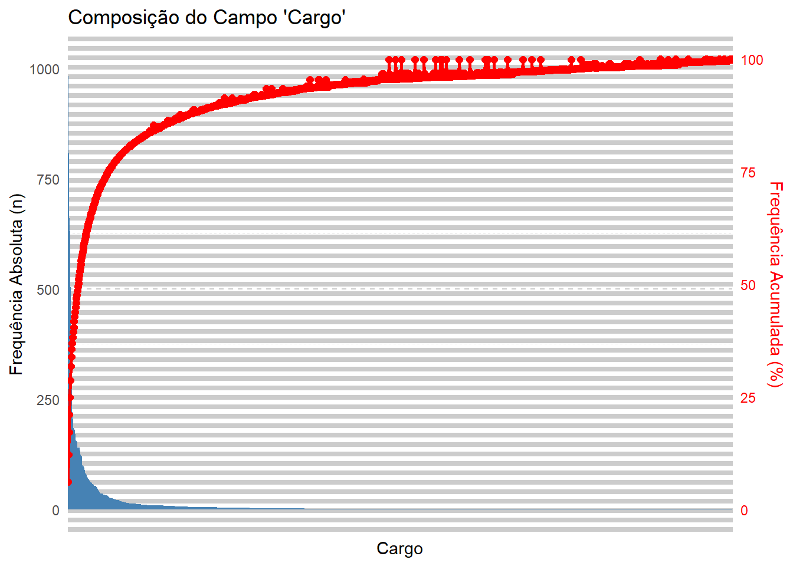
Transformação de categorias
Nesse contexto, à luz da alta dispersão, é importante fazer um tratamento amplo para padronização, identificando os cargos ou categorias de cargos que possuem características similares9. Isso é atingido a partir do código abaixo:
# Convertendo a coluna 'cargo' para string
df_tbl_final$cargo <- as.character(df_tbl_final$cargo)
# Tratamento 1: uniformizando para letras minúsculas
df_tbl_final$cargo <- tolower(df_tbl_final$cargo)
df_tbl_final['cargo_antigo'] = df_tbl_final['cargo']
# Tratamento 2: Separando todos os que são professores
df_tbl_final$cargo[str_detect(df_tbl_final$cargo, regex("prof|pedago| mag 1|porof|prefessora|mag 1|prfoessor", ignore_case = FALSE))] <- "Professor"
# Tratamento 3: Separando os regentes de ensino
df_tbl_final$cargo[str_detect(df_tbl_final$cargo, regex("regente|ensino", ignore_case = FALSE))] <- "Regente de Ensino"
# Tratamento 4: Separando os administrativos
# Agente Administrativo
df_tbl_final$cargo[str_detect(df_tbl_final$cargo, regex("ag administrativo|agente de apoio administrativo|agente de at.adm|técnico adm|agente de ativ administrat|tecnico adm|asist tecnico adm|agente de adm|agente de ativ. adm|assessor p/ ass adm|agende administrativo|agente de administração|agente adm", ignore_case = FALSE))] <- "Agente Administrativo"
# Auxiliar Administrativo
df_tbl_final$cargo[str_detect(df_tbl_final$cargo, regex("apoio administrativo|assistente em administração|assitente administrativo|assit.adm|assistente adm|assistente de administração|assitente de adm|auxiliar tec adm|assessor p/ ass. adm.|acessor p ass adm|assessor p ass adm|auxilia adm|assistent tec adm|assist.adm|assistente de administracao|agente aux atvi adm|aux de administração|auxiliar de adm|ag adm auxiliar|assistente p/ ass adm geral|assessor adm|ag. atv. adm.|auxiliar de administração|assistente administrativo|auxiliar adm|aux adm|aux. adm| aux. de adm|aux. de adm.|assist. adm|assessor de adm", ignore_case = FALSE))] <- "Auxiliar Administrativo"
# Administrador
df_tbl_final$cargo[str_detect(df_tbl_final$cargo, regex("administrador", ignore_case = FALSE))] <- "Administrador"
# Tratamento 5: Separando os auxiliares por classe.. até a residual
# Auxiliar de Serviços
df_tbl_final$cargo[str_detect(df_tbl_final$cargo, regex("agende de serviços gerais|agente de serviços gerais|auxiliar oper. serv. diversos|auxiliar operacional serv diversos|auxilio de serviço|auxiliar operacional de serviços|auxilair de serviço|auxiiliar de serviços gerai|aux de serv gerais|aux.de servicos|auxiliar de sreviços|aux serv diversos|auxilar de serviços|auxiliar de serviço|aux de serviço|auxiliar de serviços|agente de serv auxiliares|auxiliar de servico|aux. serv. gerais|aux serviços gerais|auxiliar serviços|auxilair de serviços|auxíliar de serviços|auxiliar servicos gerais|auxilia de serviço gerais|auxiliar de sreviço|auxiliar operacional de serviços|auxiliar de seriços gerais|auxiliar de serv, gerais|auxíliar de serviços gerais|auxiliar de serv, gerais|auxilia de serviços gerais|auxiliar de seviços|auxiliar de servisos gerais|auxiliar de servições gerais|auxiliar de sreviço gerias|aux. de serviços|auxuliar de serviços|aux.serviços gerais|auxilair de serviços gerais|aux oper ser diversos|aux serv|aux. ser gerais|aux.de servico|aux. serviços|auxiliar de servços|auxiliar oper serv diversos|aux. ser. gerais|aux ser gerais|agente de servicos gerais", ignore_case = FALSE))] <- "Auxiliar de Serviços"
# Auxiliar Legislativo
df_tbl_final$cargo[str_detect(df_tbl_final$cargo, regex("leg", ignore_case = FALSE)) & str_detect(df_tbl_final$cargo, regex("aux", ignore_case = FALSE))] <- "Auxiliar Legislativo"
# Auxiliar de Limpeza Urbana
df_tbl_final$cargo[str_detect(df_tbl_final$cargo, regex("limp", ignore_case = FALSE)) & str_detect(df_tbl_final$cargo, regex("aux", ignore_case = FALSE))] <- "Auxiliar de Limpeza Urbana"
# Auxiliar de Limpeza Urbana (outras descrições)
df_tbl_final$cargo[str_detect(df_tbl_final$cargo, regex("agente limpeza publica|agente de limpeza|gari|garí", ignore_case = FALSE))] <- "Auxiliar de Limpeza Urbana"
# Auxiliar Técnico
df_tbl_final$cargo[str_detect(df_tbl_final$cargo, regex("tecn|técn", ignore_case = FALSE)) & str_detect(df_tbl_final$cargo, regex("aux", ignore_case = FALSE))] <- "Auxiliar Técnico"
# Auxiliar de Enfermagem
df_tbl_final$cargo[str_detect(df_tbl_final$cargo, regex("enf", ignore_case = FALSE)) & str_detect(df_tbl_final$cargo, regex("aux", ignore_case = FALSE))] <- "Auxiliar de Enfermagem"
# Auxiliar de Biblioteca
df_tbl_final$cargo[str_detect(df_tbl_final$cargo, regex("bib|cult", ignore_case = FALSE)) & str_detect(df_tbl_final$cargo, regex("aux", ignore_case = FALSE))] <- "Auxiliar de Biblioteca"
# Monitor de Creche
df_tbl_final$cargo[str_detect(df_tbl_final$cargo, regex("creche|ass. de berçário", ignore_case = FALSE))] <- "Monitor de Creche"
# Auxiliares - Residual
df_tbl_final$cargo[str_detect(df_tbl_final$cargo, regex("aux", ignore_case = FALSE))] <- "Auxiliares - Residual"
# Tratamento 6: Grupo da Enfermagem
df_tbl_final$cargo[str_detect(df_tbl_final$cargo, regex("enf", ignore_case = FALSE)) & str_detect(df_tbl_final$cargo, regex("tec|téc", ignore_case = FALSE))] <- "Técnico em Enfermagem"
df_tbl_final$cargo[str_detect(df_tbl_final$cargo, regex("tecnico de emfermagem", ignore_case = FALSE))] <- "Técnico em Enfermagem"
df_tbl_final$cargo[str_detect(df_tbl_final$cargo, regex("enferme", ignore_case = FALSE))] <- "Enfermeiro"
df_tbl_final$cargo[str_detect(df_tbl_final$cargo, regex("enf", ignore_case = FALSE))] <- "Assistente de Enfermagem"
# Tratamento 7: Técnicos
df_tbl_final$cargo[str_detect(df_tbl_final$cargo, regex("téc|tec", ignore_case = FALSE)) & str_detect(df_tbl_final$cargo, regex("médio|medio", ignore_case = FALSE))] <- "Técnicos - Nível Médio"
df_tbl_final$cargo[str_detect(df_tbl_final$cargo, regex("tec. niv. med. contabil|tenico de nivel medio", ignore_case = FALSE))] <- "Técnicos - Nível Médio"
df_tbl_final$cargo[str_detect(df_tbl_final$cargo, regex("téc|tec", ignore_case = FALSE)) & str_detect(df_tbl_final$cargo, regex("sup", ignore_case = FALSE))] <- "Técnicos - Nível Superior"
df_tbl_final$cargo[str_detect(df_tbl_final$cargo, regex("téc|tec", ignore_case = FALSE)) & str_detect(df_tbl_final$cargo, regex("legi", ignore_case = FALSE))] <- "Técnico Legislativo"
df_tbl_final$cargo[str_detect(df_tbl_final$cargo, regex("cons", ignore_case = FALSE)) & str_detect(df_tbl_final$cargo, regex("tecni|técni|jur|leg|sup", ignore_case = FALSE))] <- "Consultor"
df_tbl_final$cargo[str_detect(df_tbl_final$cargo, regex("téc|tec", ignore_case = FALSE)) & str_detect(df_tbl_final$cargo, regex("jud", ignore_case = FALSE))] <- "Técnico Judiciário"
df_tbl_final$cargo[str_detect(df_tbl_final$cargo, regex("técn|tecn", ignore_case = FALSE)) & str_detect(df_tbl_final$cargo, regex("assi", ignore_case = FALSE))] <- "Assistente Técnico"
df_tbl_final$cargo[str_detect(df_tbl_final$cargo, regex("parteira|apurador de dados|ilustrador|vendedor|diagramador|consultor de sistema|terapeuta ocupacional|relações publicas|ofic registro|agente documentarista|estatistico|tesoureiro|programador|almoxarife|publicitario|ag previdencia|tec.minist.delig.apoio|tec pol publicas e gestão gov|tec. de plan e desenv rural|técn|tecn|ag tec metrologico|tec.pol.publicas e gestao gov.|tec. de gestao organizacional|mecanico|laboratorista|mecanografo|mecânico|desenhista|encanador|soldador", ignore_case = FALSE))] <- "Técnicos Especializados"
# Tratamento 7: Peritos, Médicos, Dentistas, Psicólogos e Fisioterapeutas
df_tbl_final$cargo[str_detect(df_tbl_final$cargo, regex("perit", ignore_case = FALSE))] <- "Peritos"
df_tbl_final$cargo[str_detect(df_tbl_final$cargo, regex("med|méd", ignore_case = FALSE))] <- "Médicos"
df_tbl_final$cargo[str_detect(df_tbl_final$cargo, regex("clin|veterinário|veterinario", ignore_case = FALSE))] <- "Médicos"
df_tbl_final$cargo[str_detect(df_tbl_final$cargo, regex("odont|dentis", ignore_case = FALSE))] <- "Odontólogos"
df_tbl_final$cargo[str_detect(df_tbl_final$cargo, regex("psi|psocologa", ignore_case = FALSE))] <- "Psicólogos"
df_tbl_final$cargo[str_detect(df_tbl_final$cargo, regex("fisio", ignore_case = FALSE))] <- "Fisioterapeutas"
# Tratamento 8: Agentes de Saúde
df_tbl_final$cargo[str_detect(df_tbl_final$cargo, regex("agente com|agente de com|acs", ignore_case = FALSE))] <- "Agente Comunitário de Saúde"
df_tbl_final$cargo[str_detect(df_tbl_final$cargo, regex("agende com|agente de sa", ignore_case = FALSE))] <- "Agente Comunitário de Saúde"
df_tbl_final$cargo[str_detect(df_tbl_final$cargo, regex("endemia|saude|saúde", ignore_case = FALSE))] <- "Agente de Combate à Endemias"
# Tratamento 9: Agentes Fiscais
df_tbl_final$cargo[str_detect(df_tbl_final$cargo, regex("trib", ignore_case = FALSE)) & str_detect(df_tbl_final$cargo, regex("fis", ignore_case = FALSE))] <- "Agentes Fiscais - Tributos"
df_tbl_final$cargo[str_detect(df_tbl_final$cargo, regex("agente de tributos e posturas|auditor fiscal|agente arrecadador|agente de arrecadação|ag.f.de trib.munic|agente fiscal merc|fiscal de arrecadação", ignore_case = FALSE))] <- "Agentes Fiscais - Tributos"
df_tbl_final$cargo[str_detect(df_tbl_final$cargo, regex("fis", ignore_case = FALSE))] <- "Agentes Fiscais - Outros"
# Tratamento 10: Profissionais de Biblioteca
df_tbl_final$cargo[str_detect(df_tbl_final$cargo, regex("biblio", ignore_case = FALSE))] <- "Agentes de Biblioteca - Não auxiliares"
# Modificar a coluna 'cargo_novo' para "Atendentes" com base no padrão regex
df_tbl_final$cargo[str_detect(df_tbl_final$cargo, regex("atenden|recep|por", ignore_case = TRUE))] <- "Atendentes"
# Tratamento 11: Juízes, Advogados, Auditores, Arquitetos, Engenheiros, Arquivistas etc...
df_tbl_final$cargo[str_detect(df_tbl_final$cargo, regex("juiz|desembargador", ignore_case = FALSE))] <- "Juiz"
df_tbl_final$cargo[str_detect(df_tbl_final$cargo, regex("adv", ignore_case = FALSE))] <- "Advogado"
df_tbl_final$cargo[str_detect(df_tbl_final$cargo, regex("procurad", ignore_case = FALSE))] <- "Procurador"
df_tbl_final$cargo[str_detect(df_tbl_final$cargo, regex("conta", ignore_case = FALSE))] <- "Contabilistas"
df_tbl_final$cargo[str_detect(df_tbl_final$cargo, regex("analista", ignore_case = FALSE))] <- "Analistas"
df_tbl_final$cargo[str_detect(df_tbl_final$cargo, regex("eng", ignore_case = FALSE)) & !str_detect(df_tbl_final$cargo, regex("engomadeira", ignore_case = FALSE))] <- "Engenheiro"
df_tbl_final$cargo[str_detect(df_tbl_final$cargo, regex("arquit", ignore_case = FALSE))] <- "Arquiteto"
df_tbl_final$cargo[str_detect(df_tbl_final$cargo, regex("arq", ignore_case = FALSE))] <- "Arquivista"
df_tbl_final$cargo[str_detect(df_tbl_final$cargo, regex("bioq", ignore_case = FALSE))] <- "Bioquímico"
df_tbl_final$cargo[str_detect(df_tbl_final$cargo, regex("bió|bio", ignore_case = FALSE))] <- "Biólogo"
df_tbl_final$cargo[str_detect(df_tbl_final$cargo, regex("econ", ignore_case = FALSE))] <- "Economista"
df_tbl_final$cargo[str_detect(df_tbl_final$cargo, regex("farm", ignore_case = FALSE))] <- "Farmacêutico"
df_tbl_final$cargo[str_detect(df_tbl_final$cargo, regex("ofici", ignore_case = FALSE))] <- "Oficial de Justiça"
df_tbl_final$cargo[str_detect(df_tbl_final$cargo, regex("dele", ignore_case = FALSE))] <- "Delegado"
df_tbl_final$cargo[str_detect(df_tbl_final$cargo, regex("nutri", ignore_case = FALSE))] <- "Nutricionista"
df_tbl_final$cargo[str_detect(df_tbl_final$cargo, regex("quim", ignore_case = FALSE))] <- "Químico"
df_tbl_final$cargo[str_detect(df_tbl_final$cargo, regex("repor|locu|jornalista", ignore_case = FALSE))] <- "Jornalista"
df_tbl_final$cargo[str_detect(df_tbl_final$cargo, regex("reda|revisor", ignore_case = FALSE))] <- "Redator"
df_tbl_final$cargo[str_detect(df_tbl_final$cargo, regex("fot|geo|geó|géo", ignore_case = FALSE))] <- "Fotógrafos, Geólogos e Geógrafos"
# Tratamento 12: Profissionais da Educação - Exceto Professores
df_tbl_final$cargo[str_detect(df_tbl_final$cargo, regex("edu|escolar|pedagó", ignore_case = FALSE))] <- "Profissionais de Educação - Exceto Professores"
# Tratamento 13: Agentes de Segurança
df_tbl_final$cargo[str_detect(df_tbl_final$cargo, regex("investigador|vigilantte|vigia|vigilante|segu|guarda|sar|agente protetivo|agente de vifilância|agente de investigação|agente de vigilância|escrivao", ignore_case = FALSE))] <- "Agentes de Segurança"
# Tratamento 14: Motoristas e Merendeiras
df_tbl_final$cargo[str_detect(df_tbl_final$cargo, regex("moto|tratorista|condutor socorrista", ignore_case = FALSE))] <- "Motoristas"
df_tbl_final$cargo[str_detect(df_tbl_final$cargo, regex("meren|coz", ignore_case = FALSE))] <- "Cozinheiros"
# Tratamento 15: Assistente Legislativo
df_tbl_final$cargo[str_detect(df_tbl_final$cargo, regex("legis", ignore_case = FALSE))] <- "Assistente Legislativo"
# Tratamento 16: Assistente Social
df_tbl_final$cargo[str_detect(df_tbl_final$cargo, regex("social", ignore_case = FALSE))] <- "Assistente Social"
df_tbl_final$cargo[str_detect(df_tbl_final$cargo, regex("soci", ignore_case = FALSE))] <- "Sociólogo"
# Tratamento 17: Trabalhadores, Zeladores e Escriturários
df_tbl_final$cargo[str_detect(df_tbl_final$cargo, regex("escri|escrtiturária|esvriturário", ignore_case = FALSE))] <- "Escriturário"
df_tbl_final$cargo[str_detect(df_tbl_final$cargo, regex("protoco|paginado|costur|lavadeir|engoma|cabe|varr|pod|pol|serv|efetivo|asc|pintor|perf|borda|sani|jard|marc|carp|serviços diversos|serviços gerais|trab|servente|pedreiro|operario|operário|montador|monitor", ignore_case = FALSE))] <- "Trabalhador sem especificicação"
df_tbl_final$cargo[str_detect(df_tbl_final$cargo, regex("zel", ignore_case = FALSE))] <- "Zelador"
df_tbl_final$cargo[str_detect(df_tbl_final$cargo, regex("tel", ignore_case = FALSE))] <- "Telefonista"
df_tbl_final$cargo[str_detect(df_tbl_final$cargo, regex("agente de", ignore_case = FALSE))] <- "Agentes Especializados"
df_tbl_final$cargo[str_detect(df_tbl_final$cargo, regex("digi|dati|datrilógrafo", ignore_case = FALSE))] <- "Digitador"
df_tbl_final$cargo[str_detect(df_tbl_final$cargo, regex("cov", ignore_case = FALSE))] <- "Coveiro"
df_tbl_final$cargo[str_detect(df_tbl_final$cargo, regex("elet", ignore_case = FALSE))] <- "Eletricista"
df_tbl_final$cargo[str_detect(df_tbl_final$cargo, regex("mus|mús|violinista", ignore_case = FALSE))] <- "Músico"
df_tbl_final$cargo[str_detect(df_tbl_final$cargo, regex("asse|chefe|secre|super|assist", ignore_case = FALSE))] <- "Assessor"
df_tbl_final$cargo[str_detect(df_tbl_final$cargo, regex("artí|arti", ignore_case = FALSE))] <- "Artífice"
df_tbl_final$cargo[str_detect(df_tbl_final$cargo, regex("op|contro", ignore_case = FALSE))] <- "Operadores em Geral"
df_tbl_final$cargo[str_detect(df_tbl_final$cargo, regex("a.s.g|a.g.s|a.g.s.", ignore_case = FALSE))] <- "ASG"
#### Visão Geral: Classificados
classificados <- c("Professor", "Regente de Ensino", "Agente Administrativo", "Auxiliar Administrativo", "Administrador",
"Auxiliar de Serviços", "Auxiliar Legislativo", "Auxiliar de Limpeza Urbana", "Auxiliar Técnico",
"Auxiliar de Enfermagem", "Auxiliar de Biblioteca", "Monitor de Creche", "Auxiliares - Residual",
"Técnico em Enfermagem", "Enfermeiro", "Assistente de Enfermagem", "Técnicos - Nível Médio",
"Técnicos - Nível Superior", "Técnico Legislativo", "Consultor", "Assistente Técnico", "Técnico Judiciário",
"Técnicos Especializados", "Peritos", "Médicos", "Odontólogos", "Psicólogos", "Fisioterapeutas", "Agente Comunitário de Saúde",
"Agente de Combate à Endemias", "Agentes Fiscais - Tributos", "Agentes Fiscais - Outros", "Agentes de Biblioteca - Não auxiliares",
"Atendentes", "Juiz", "Advogado", "Procurador", "Defensor", "Auditor", "Contabilistas", "Analistas", "Engenheiro", "Arquiteto", "Arquivista",
"Profissionais de Educação - Exceto Professores", "Agentes de Segurança", "Motoristas", "Cozinheiros",
"Assistente Legislativo", "Assistente Social", "Sociólogo", "Bioquímico", "Biólogo", "Economista", "Escriturário",
"Trabalhador sem especificicação", "Telefonista", "Agentes Especializados", "Zelador", "Farmacêutico", "Oficial de Justiça",
"Digitador", "Delegado", "Nutricionista", "Coveiro", "Eletricista", "Músico", "Assessor", "Artífice", "Químico", "Operadores em Geral",
"Jornalista", "Redator", "ASG", "Fotógrafos, Geológos e Geógrafos")
class(classificados)
# Create a copy of the DataFrame to avoid modifying the original data
df_modified <- df_tbl_final
# Identify rows where "cargo" is not in "classificados"
mask <- !df_modified$cargo %in% classificados
#### Tratamento 18: Residual - Classe: Outros. Profissionais em que não consegui identificar o nível de comprlexidade (Médio, Superior ou Fundamental e, de acordo com a quantidade deles, não valeu a pena criar uma categoria própria para eles
# Atualiza as linhas onde a condição é verdadeira com o valor "Outros"
df_tbl_final$cargo[mask] <- "Outros"
# Contagem das ocorrências de cada conteúdo na coluna "descricao"
contagem_cargo <- table(df_tbl_final$cargo)
# Lista dos valores que ocorrem mais de 50 vezes
cargos_mais_de_50 <- names(contagem_cargo[contagem_cargo > 50])
# Mapeando os valores para "Outros" se ocorrerem menos de 50 vezes
df_tbl_final$PARA_cargo <- sapply(df_tbl_final$cargo, function(x) if (x %in% cargos_mais_de_50) x else "Outros")Composição final dos cargos
Após a transformação, chega-se ao seguinte resultado para o campo “cargo”, após as transformações2 3:
| PARA_cargo | n | percent | cum_percent |
|---|---|---|---|
| Professor | 5428 | 32.9 | 32.9 |
| Auxiliar de Serviços | 2691 | 16.3 | 49.3 |
| Agente Administrativo | 1241 | 7.5 | 56.8 |
| Outros | 797 | 4.8 | 61.6 |
| Auxiliar Administrativo | 747 | 4.5 | 66.2 |
| Técnicos - Nível Médio | 544 | 3.3 | 69.5 |
| Agentes de Segurança | 498 | 3.0 | 72.5 |
| Regente de Ensino | 374 | 2.3 | 74.8 |
| Médicos | 281 | 1.7 | 76.5 |
| Odontólogos | 276 | 1.7 | 78.1 |
| Trabalhador sem especificicação | 267 | 1.6 | 79.8 |
| Auxiliar de Limpeza Urbana | 242 | 1.5 | 81.2 |
| Motoristas | 234 | 1.4 | 82.7 |
| Técnicos Especializados | 226 | 1.4 | 84.0 |
| Assistente Legislativo | 204 | 1.2 | 85.3 |
| Auxiliar de Enfermagem | 193 | 1.2 | 86.4 |
| Atendentes | 191 | 1.2 | 87.6 |
| Cozinheiros | 175 | 1.1 | 88.7 |
| Engenheiro | 172 | 1.0 | 89.7 |
| Profissionais de Educação - Exceto Professores | 169 | 1.0 | 90.7 |
| Enfermeiro | 166 | 1.0 | 91.7 |
| Agente Comunitário de Saúde | 129 | 0.8 | 92.5 |
| Psicólogos | 126 | 0.8 | 93.3 |
| Auxiliares - Residual | 122 | 0.7 | 94.0 |
| Assistente Social | 111 | 0.7 | 94.7 |
| Agentes Fiscais - Tributos | 109 | 0.7 | 95.4 |
| Bioquímico | 96 | 0.6 | 95.9 |
| Escriturário | 93 | 0.6 | 96.5 |
| Zelador | 78 | 0.5 | 97.0 |
| Telefonista | 70 | 0.4 | 97.4 |
| Administrador | 68 | 0.4 | 97.8 |
| Contabilistas | 67 | 0.4 | 98.2 |
| Técnico Judiciário | 63 | 0.4 | 98.6 |
| Analistas | 61 | 0.4 | 99.0 |
| Assessor | 58 | 0.4 | 99.3 |
| Assistente Técnico | 57 | 0.3 | 99.7 |
| Assistente de Enfermagem | 55 | 0.3 | 100.0 |
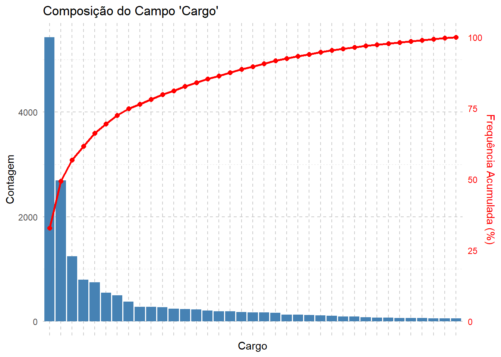
Incorporação de indicador de salário mínimo sobre o benefício
Tendo em vista serem processos que os Auditores dão menos atenção pela baixa materialidade, é importante que se crie um campo para identificar todas as concessões de aposentadoria que tem valores de proventos menores ou iguais ao salário mínimo. Trata-se de importante etapa de feature engineering9. Isso é feito utilizando-se a tabela auxiliar “Salario_Minimo.xlsx”, a qual contém os valores oficiais do salário mínimo nacional de acordo com as datas iniciais e finais de vigência.
Perceba que tal indicador só é possível de ser calculado quando o campo “datapublicacaoconcessaobeneficio” for devidamente preenchido pelo instituto de previdência. Portanto, para que não haja valores ausentes4, os registros em que tal data não estiver preenchida são excluídos10. Vejamos:
# Importar tabela auxiliar de salário mínimo
df_salariominimo <- read_excel('Salario_Minimo.xlsx')
# Descartando os benefícios que não tiveram data de concessão registrada
df_tbl_final <- df_tbl_final %>% drop_na(datapublicacaoconcessaobeneficio)
# Convertendo as colunas de data para o tipo datetime, se necessário
df_tbl_final$datapublicacaoconcessaobeneficio <- as_datetime(df_tbl_final$datapublicacaoconcessaobeneficio)
df_salariominimo$`Data Inicio` <- as_datetime(df_salariominimo$`Data Inicio`)
df_salariominimo$`Data Fim` <- as_datetime(df_salariominimo$`Data Fim`)
# Ordenando os DataFrames pela coluna de data
df_tbl_final <- df_tbl_final %>% arrange(datapublicacaoconcessaobeneficio)
df_salariominimo <- df_salariominimo %>% arrange(`Data Inicio`)
# Realizando a mesclagem dos DataFrames
# install.packages("fuzzyjoin")
library(fuzzyjoin)
df_tbl_final <- df_tbl_final %>%
fuzzy_left_join(df_salariominimo,
by = c("datapublicacaoconcessaobeneficio" = "Data Inicio",
"datapublicacaoconcessaobeneficio" = "Data Fim"),
match_fun = list(`>=`, `<=`))
# Filtrando os registros e selecionando as colunas desejadas
df_tbl_final <- df_tbl_final %>%
filter(!is.na(`Valor em reais`))
# Se desejar, você pode remover linhas duplicadas, se houver
df_tbl_final <- df_tbl_final %>% distinct()
# Criando o novo campo com base na lógica fornecida
df_tbl_final <- df_tbl_final %>%
mutate(indicador_sm = ifelse(valor_Proventos <= `Valor em reais`, 1, 0))Do campo “proventos”
Lembre-se que o campo “proventos” foi obtido a partir da tabela auxiliar “prev_proventos” e que, ao ser incorporado na tabela consolidada, foi criado o campo “nome_Proventos”, no qual há o nome das parcelas que compõem os proventos de aposentadoria separados por barras. Observa abaixo um exemplo de 10 registros3:
[1] "PROVENTOS / ABONO DE PERMANÊNCIA / HORAS ATIVIDADE MAGISTÉRIO / VPNI / COMPLEMENTO PISO NACIONAL"
[2] "VENC PESSOAL ESTATUTÁRIO / ADICIONAL TEMPO DE SERVIÇO"
[3] "Proventos / QUINQUENIO"
[4] "PROVENTOS / 6 PARTE / QUINQUENIO"
[5] "PROVENTOS"
[6] "PROVENTOS / ADICIONAL TEMPO DE SERVIÇO / FGDE 1- INCORPORADA"
[7] "VENCIMENTOS / ADICIONAIS POR TEMPO SERVIÇO"
[8] "Proventos Básico"
[9] "VENCIMENTO / QUINQUENIOS"
[10] "VENCIMENTOS / ADICIONAIS POR TEMPO DE SERVIÇO / V.PES.NOMIN.IDENT-VPNI LC 73/07" Perceba que não faz muito sentido apresentarmos a composição inicial, uma vez que as combinações possíveis são muito diversas. A ideia do código é padronizar as diferentes possíveis categorias de proventos e transformar essa coluna em tantas colunas quantas forem as categorias de proventos padronizadas. Cada uma dessas novas colunas será binária e indicará se cada processo de aposentadoria possui ou não aquele tipo de parcela de proventos sendo paga ao beneficiário9. Além disso, filtram-se os registros que não há proventos preenchidos10. Vejamos:
dados_df <- df_tbl_final
# Tratamento 1: uniformizando para letras minúsculas e em uma nova coluna
dados_df$proventos <- tolower(dados_df$nome_Proventos)
# Tratamento 3: Tentando o split no subdataframe com o expand.
# Retirando os "NA" e os substituindo por "zero"
df_proventos <- dados_df[, c("protocolo", "proventos")] %>%
filter(!is.na(proventos)) %>%
mutate(proventos = as.character(proventos)) %>%
separate(proventos, into = paste0("col", 1:10), sep = "/", fill = "right", remove = FALSE, convert = FALSE) %>%
replace_na(list(col1 = "0", col2 = "0", col3 = "0", col4 = "0", col5 = "0", col6 = "0", col7 = "0", col8 = "0", col9 = "0", col10 = "0"))
# Tratamento 3.1: Tratando as subcolunas obtidas com o split
# Movimento na coluna 1:
# Reclassificar os valores na coluna col1
df_proventos$col1 <- ifelse(grepl("hora|6 parte|adicional t|adts|temp.serviço|adic.temp.serv |sexta parte|temp. serviço|anueni|quadri|quiquenio|quinq|anuenio|anuênio|tempo ser|tempo de serviço|tmepo ser|tempo de srv|adicional por tempo de ser|adic. por tempo de seriço|adic. temp.serv.|adic. por tempo de seviço|adicionais por tempo de serv.|adic.por tempo de ser viços|anuencio|adicionais tempo srrviço|adicional de tempo de ser|adicional de tempo de servico|trienio|quiqnenio|trmpo serviço|adicional por tempo de servico|adic. por tempod e serviço|tmepo de serviço|tempos serviço|adc. tempo|de serviço inativo|adicionais por tempode serviço|tempo de serviços|temp. de serviço|adicional de t. serviço|acréscimo por ano excedido 10%|adc. tem. sev.|quiqu|trênio|tempo de servicos|tempo de contribuição|triênio|adic. temp. de serviço|hora|6 parte|adicional t|adts|temp.serviço|adic.temp.serv |sexta parte|temp. serviço|anueni|quadri|quiquenio|quinq|anuenio|anuênio|tempo ser|tempo de serviço|tmepo ser|tempo de srv|ad. t.", df_proventos$col1, ignore.case = TRUE), "ATS", df_proventos$col1)
df_proventos$col1 <- ifelse(grepl("vent. pess|vant|vpni|v.pes|v. pes|vatnatagem|abono|diferença do pccr|a.pess|a.pes|vent. pess|vant|vpni|v.pes|v. pes|vatnatagem|abono|diferença do pccr|a.pess|a.pes|complement", df_proventos$col1, ignore.case = TRUE), "Vantagem Pessoal", df_proventos$col1)
df_proventos$col1 <- ifelse(grepl("pensão|provent|outros acresc. inatividade|provnto|aposent|prov|média|media|resultado|propor|rpovento|prvento|posent", df_proventos$col1, ignore.case = TRUE), "Proventos", df_proventos$col1)
df_proventos$col1 <- ifelse(grepl("sal. incorp.|vencimento|vecimento|piso nacional|venc.|vertical|dif pccr|diferença pccr|sal.incorp|venvi|salári|salari|remun|base|subsidio|subsídio|venecimento", df_proventos$col1, ignore.case = TRUE), "Vencimento", df_proventos$col1)
df_proventos$col1 <- ifelse(grepl("insalubri|isalu|insalub", df_proventos$col1, ignore.case = TRUE), "Insalubridade", df_proventos$col1)
df_proventos$col1 <- ifelse(grepl("antec", df_proventos$col1, ignore.case = TRUE), "Antecipação de Aumento", df_proventos$col1)
df_proventos$col1 <- ifelse(grepl("represen|rep.|represetação", df_proventos$col1, ignore.case = TRUE), "Representação", df_proventos$col1)
df_proventos$col1 <- ifelse(grepl("gifs|qualif|titul|especialização", df_proventos$col1, ignore.case = TRUE), "Adc. Qualificação", df_proventos$col1)
df_proventos$col1 <- ifelse(grepl("adicional|risco de vida|pó de giz|acrescimo 20|produção e prod.|outros acrescimos pecuniarios|periculosidade|adicionais de permanência|gead|adic. de permanencia|regencia de classe|serv. extra.|produção prod.|serviço extra incorporado|horas|outros acresc.pecuniarios|bolsa avaliacao desemp.docente|gal|assidui|grat|magistério|magisterio|vpnr|complemento|produtivid|gcex|gpcex|noturno|adic. not.|gae|jornada ampliada|bolsa de sempenho fiscal|efetivo desempenho|adi.jorn.ampl|risco de vida|pó de giz|acrescimo 20|produção e prod.|outros acrescimos pecuniarios|periculosidade|adicionais de permanência|gead|adic. de permanencia|regencia de classe|serv. extra.|produção prod.|serviço extra incorporado|horas|outros acresc.pecuniarios|bolsa avaliacao desemp.docente|gal|assidui|grat|magistério|magisterio|vpnr|complemento|produtivid|gcex|gpcex|noturno|adic. not.|gaj|g.a.p|gap|gati|gshu|gdp|grat|gal|noturno|vpnr|prod. s. bucal", df_proventos$col1, ignore.case = TRUE), "Gratificação", df_proventos$col1)
df_proventos$col1 <- ifelse(grepl("ajuda de custo|auxilio saude", df_proventos$col1, ignore.case = TRUE), "Indenizatorio", df_proventos$col1)
df_proventos$col1 <- ifelse(grepl("^[0-9]|90", df_proventos$col1, ignore.case = TRUE), "0", df_proventos$col1)
# Definindo valores que não se enquadram nas categorias acima como "0"
df_proventos$col1 <- ifelse(!grepl("Proventos|Ind|Rep|ATS|Venc|Insa|Qualif|Antec|Vant|Grat", df_proventos$col1, ignore.case = TRUE), "0", df_proventos$col1)
# Movimento na coluna 2:
df_proventos$col2 <- ifelse(grepl("hora|6 parte|adicional t|adts|temp.serviço|adic.temp.serv |sexta parte|temp. serviço|anueni|quadri|quiquenio|quinq|anuenio|anuênio|tempo ser|tempo de serviço|tmepo ser|tempo de srv|adicional por tempo de ser|adic. por tempo de seriço|adic. temp.serv.|adic. por tempo de seviço|adicionais por tempo de serv.|adic.por tempo de ser viços|anuencio|adicionais tempo srrviço|adicional de tempo de ser|adicional de tempo de servico|trienio|quiqnenio|trmpo serviço|adicional por tempo de servico|adic. por tempod e serviço|tmepo de serviço|tempos serviço|adc. tempo|de serviço inativo|adicionais por tempode serviço|tempo de serviços|temp. de serviço|adicional de t. serviço|acréscimo por ano excedido 10%|adc. tem. sev.|quiqu|trênio|tempo de servicos|tempo de contribuição|triênio|adic. temp. de serviço|hora|6 parte|adicional t|adts|temp.serviço|adic.temp.serv |sexta parte|temp. serviço|anueni|quadri|quiquenio|quinq|anuenio|anuênio|tempo ser|tempo de serviço|tmepo ser|tempo de srv|ad. t.", df_proventos$col2, ignore.case = TRUE), "ATS", df_proventos$col2)
df_proventos$col2 <- ifelse(grepl("vent. pess|vant|vpni|v.pes|v. pes|vatnatagem|abono|diferença do pccr|a.pess|a.pes|vent. pess|vant|vpni|v.pes|v. pes|vatnatagem|abono|diferença do pccr|a.pess|a.pes|complement", df_proventos$col2, ignore.case = TRUE), "Vantagem Pessoal", df_proventos$col2)
df_proventos$col2 <- ifelse(grepl("pensão|provent|outros acresc. inatividade|provnto|aposent|prov|média|media|resultado|propor|rpovento|prvento|posent", df_proventos$col2, ignore.case = TRUE), "Proventos", df_proventos$col2)
df_proventos$col2 <- ifelse(grepl("sal. incorp.|vencimento|vecimento|piso nacional|venc.|vertical|dif pccr|diferença pccr|sal.incorp|venvi|salári|salari|remun|base|subsidio|subsídio|venecimento", df_proventos$col2, ignore.case = TRUE), "Vencimento", df_proventos$col2)
df_proventos$col2 <- ifelse(grepl("insalubri|isalu|insalub", df_proventos$col2, ignore.case = TRUE), "Insalubridade", df_proventos$col2)
df_proventos$col2 <- ifelse(grepl("antec", df_proventos$col2, ignore.case = TRUE), "Antecipação de Aumento", df_proventos$col2)
df_proventos$col2 <- ifelse(grepl("represen|rep.|represetação", df_proventos$col2, ignore.case = TRUE), "Representação", df_proventos$col2)
df_proventos$col2 <- ifelse(grepl("gifs|qualif|titul|especialização", df_proventos$col2, ignore.case = TRUE), "Adc. Qualificação", df_proventos$col2)
df_proventos$col2 <- ifelse(grepl("adicional|risco de vida|pó de giz|acrescimo 20|produção e prod.|outros acrescimos pecuniarios|periculosidade|adicionais de permanência|gead|adic. de permanencia|regencia de classe|serv. extra.|produção prod.|serviço extra incorporado|horas|outros acresc.pecuniarios|bolsa avaliacao desemp.docente|gal|assidui|grat|magistério|magisterio|vpnr|complemento|produtivid|gcex|gpcex|noturno|adic. not.|gae|jornada ampliada|bolsa de sempenho fiscal|efetivo desempenho|adi.jorn.ampl|risco de vida|pó de giz|acrescimo 20|produção e prod.|outros acrescimos pecuniarios|periculosidade|adicionais de permanência|gead|adic. de permanencia|regencia de classe|serv. extra.|produção prod.|serviço extra incorporado|horas|outros acresc.pecuniarios|bolsa avaliacao desemp.docente|gal|assidui|grat|magistério|magisterio|vpnr|complemento|produtivid|gcex|gpcex|noturno|adic. not.|gaj|g.a.p|gap|gati|gshu|gdp|grat|gal|noturno|vpnr|prod. s. bucal", df_proventos$col2, ignore.case = TRUE), "Gratificação", df_proventos$col2)
df_proventos$col2 <- ifelse(grepl("ajuda de custo|auxilio saude", df_proventos$col2, ignore.case = TRUE), "Indenizatorio", df_proventos$col2)
df_proventos$col2 <- ifelse(grepl("^[0-9]|90", df_proventos$col2, ignore.case = TRUE), "0", df_proventos$col2)
# Definindo valores que não se enquadram nas categorias acima como "0"
df_proventos$col2 <- ifelse(!grepl("Proventos|Ind|Rep|ATS|Venc|Insa|Qualif|Antec|Vant|Grat", df_proventos$col2, ignore.case = TRUE), "0", df_proventos$col2)
# Movimento na coluna 3:
df_proventos$col3 <- ifelse(grepl("hora|6 parte|adicional t|adts|temp.serviço|adic.temp.serv |sexta parte|temp. serviço|anueni|quadri|quiquenio|quinq|anuenio|anuênio|tempo ser|tempo de serviço|tmepo ser|tempo de srv|adicional por tempo de ser|adic. por tempo de seriço|adic. temp.serv.|adic. por tempo de seviço|adicionais por tempo de serv.|adic.por tempo de ser viços|anuencio|adicionais tempo srrviço|adicional de tempo de ser|adicional de tempo de servico|trienio|quiqnenio|trmpo serviço|adicional por tempo de servico|adic. por tempod e serviço|tmepo de serviço|tempos serviço|adc. tempo|de serviço inativo|adicionais por tempode serviço|tempo de serviços|temp. de serviço|adicional de t. serviço|acréscimo por ano excedido 10%|adc. tem. sev.|quiqu|trênio|tempo de servicos|tempo de contribuição|triênio|adic. temp. de serviço|hora|6 parte|adicional t|adts|temp.serviço|adic.temp.serv |sexta parte|temp. serviço|anueni|quadri|quiquenio|quinq|anuenio|anuênio|tempo ser|tempo de serviço|tmepo ser|tempo de srv|ad. t.", df_proventos$col3, ignore.case = TRUE), "ATS", df_proventos$col3)
df_proventos$col3 <- ifelse(grepl("vent. pess|vant|vpni|v.pes|v. pes|vatnatagem|abono|diferença do pccr|a.pess|a.pes|vent. pess|vant|vpni|v.pes|v. pes|vatnatagem|abono|diferença do pccr|a.pess|a.pes|complement", df_proventos$col3, ignore.case = TRUE), "Vantagem Pessoal", df_proventos$col3)
df_proventos$col3 <- ifelse(grepl("pensão|provent|outros acresc. inatividade|provnto|aposent|prov|média|media|resultado|propor|rpovento|prvento|posent", df_proventos$col3, ignore.case = TRUE), "Proventos", df_proventos$col3)
df_proventos$col3 <- ifelse(grepl("sal. incorp.|vencimento|vecimento|piso nacional|venc.|vertical|dif pccr|diferença pccr|sal.incorp|venvi|salári|salari|remun|base|subsidio|subsídio|venecimento", df_proventos$col3, ignore.case = TRUE), "Vencimento", df_proventos$col3)
df_proventos$col3 <- ifelse(grepl("insalubri|isalu|insalub", df_proventos$col3, ignore.case = TRUE), "Insalubridade", df_proventos$col3)
df_proventos$col3 <- ifelse(grepl("antec", df_proventos$col3, ignore.case = TRUE), "Antecipação de Aumento", df_proventos$col3)
df_proventos$col3 <- ifelse(grepl("represen|rep.|represetação", df_proventos$col3, ignore.case = TRUE), "Representação", df_proventos$col3)
df_proventos$col3 <- ifelse(grepl("gifs|qualif|titul|especialização", df_proventos$col3, ignore.case = TRUE), "Adc. Qualificação", df_proventos$col3)
df_proventos$col3 <- ifelse(grepl("adicional|risco de vida|pó de giz|acrescimo 20|produção e prod.|outros acrescimos pecuniarios|periculosidade|adicionais de permanência|gead|adic. de permanencia|regencia de classe|serv. extra.|produção prod.|serviço extra incorporado|horas|outros acresc.pecuniarios|bolsa avaliacao desemp.docente|gal|assidui|grat|magistério|magisterio|vpnr|complemento|produtivid|gcex|gpcex|noturno|adic. not.|gae|jornada ampliada|bolsa de sempenho fiscal|efetivo desempenho|adi.jorn.ampl|risco de vida|pó de giz|acrescimo 20|produção e prod.|outros acrescimos pecuniarios|periculosidade|adicionais de permanência|gead|adic. de permanencia|regencia de classe|serv. extra.|produção prod.|serviço extra incorporado|horas|outros acresc.pecuniarios|bolsa avaliacao desemp.docente|gal|assidui|grat|magistério|magisterio|vpnr|complemento|produtivid|gcex|gpcex|noturno|adic. not.|gaj|g.a.p|gap|gati|gshu|gdp|grat|gal|noturno|vpnr|prod. s. bucal", df_proventos$col3, ignore.case = TRUE), "Gratificação", df_proventos$col3)
df_proventos$col3 <- ifelse(grepl("ajuda de custo|auxilio saude", df_proventos$col3, ignore.case = TRUE), "Indenizatorio", df_proventos$col3)
df_proventos$col3 <- ifelse(grepl("^[0-9]|90", df_proventos$col3, ignore.case = TRUE), "0", df_proventos$col3)
# Definindo valores que não se enquadram nas categorias acima como "0"
df_proventos$col3 <- ifelse(!grepl("Proventos|Ind|Rep|ATS|Venc|Insa|Qualif|Antec|Vant|Grat", df_proventos$col3, ignore.case = TRUE), "0", df_proventos$col3)
# Movimento na coluna 4:
df_proventos$col4 <- ifelse(grepl("hora|6 parte|adicional t|adts|temp.serviço|adic.temp.serv |sexta parte|temp. serviço|anueni|quadri|quiquenio|quinq|anuenio|anuênio|tempo ser|tempo de serviço|tmepo ser|tempo de srv|adicional por tempo de ser|adic. por tempo de seriço|adic. temp.serv.|adic. por tempo de seviço|adicionais por tempo de serv.|adic.por tempo de ser viços|anuencio|adicionais tempo srrviço|adicional de tempo de ser|adicional de tempo de servico|trienio|quiqnenio|trmpo serviço|adicional por tempo de servico|adic. por tempod e serviço|tmepo de serviço|tempos serviço|adc. tempo|de serviço inativo|adicionais por tempode serviço|tempo de serviços|temp. de serviço|adicional de t. serviço|acréscimo por ano excedido 10%|adc. tem. sev.|quiqu|trênio|tempo de servicos|tempo de contribuição|triênio|adic. temp. de serviço|hora|6 parte|adicional t|adts|temp.serviço|adic.temp.serv |sexta parte|temp. serviço|anueni|quadri|quiquenio|quinq|anuenio|anuênio|tempo ser|tempo de serviço|tmepo ser|tempo de srv|ad. t.|serviço|serviço 30%|serviço 20%|serviço 10%|adc. tempo de serv|quinq|anuenio|anuênio|tempo e ser|tempo de serviç|sexta parte", df_proventos$col4, ignore.case = TRUE), "ATS", df_proventos$col4)
df_proventos$col4 <- ifelse(grepl("vent. pess|vant|vpni|v.pes|v. pes|vatnatagem|abono|diferença do pccr|a.pess|a.pes|vent. pess|vant|vpni|v.pes|v. pes|vatnatagem|abono|diferença do pccr|a.pess|a.pes|complement", df_proventos$col4, ignore.case = TRUE), "Vantagem Pessoal", df_proventos$col4)
df_proventos$col4 <- ifelse(grepl("pensão|provent|outros acresc. inatividade|provnto|aposent|prov|média|media|resultado|propor|rpovento|prvento|posent", df_proventos$col4, ignore.case = TRUE), "Proventos", df_proventos$col4)
df_proventos$col4 <- ifelse(grepl("sal. incorp.|vencimento|vecimento|piso nacional|venc.|vertical|dif pccr|diferença pccr|sal.incorp|venvi|salári|salari|remun|base|subsidio|subsídio|venecimento", df_proventos$col4, ignore.case = TRUE), "Vencimento", df_proventos$col4)
df_proventos$col4 <- ifelse(grepl("insalubri|isalu|insalub", df_proventos$col4, ignore.case = TRUE), "Insalubridade", df_proventos$col4)
df_proventos$col4 <- ifelse(grepl("antec", df_proventos$col4, ignore.case = TRUE), "Antecipação de Aumento", df_proventos$col4)
df_proventos$col4 <- ifelse(grepl("represen|rep.|represetação", df_proventos$col4, ignore.case = TRUE), "Representação", df_proventos$col4)
df_proventos$col4 <- ifelse(grepl("gifs|qualif|titul|especialização", df_proventos$col4, ignore.case = TRUE), "Adc. Qualificação", df_proventos$col4)
df_proventos$col4 <- ifelse(grepl("adicional|risco de vida|pó de giz|acrescimo 20|produção e prod.|outros acrescimos pecuniarios|periculosidade|adicionais de permanência|gead|adic. de permanencia|regencia de classe|serv. extra.|produção prod.|serviço extra incorporado|horas|outros acresc.pecuniarios|bolsa avaliacao desemp.docente|gal|assidui|grat|magistério|magisterio|vpnr|complemento|produtivid|gcex|gpcex|noturno|adic. not.|gae|jornada ampliada|bolsa de sempenho fiscal|efetivo desempenho|adi.jorn.ampl|risco de vida|pó de giz|acrescimo 20|produção e prod.|outros acrescimos pecuniarios|periculosidade|adicionais de permanência|gead|adic. de permanencia|regencia de classe|serv. extra.|produção prod.|serviço extra incorporado|horas|outros acresc.pecuniarios|bolsa avaliacao desemp.docente|gal|assidui|grat|magistério|magisterio|vpnr|complemento|produtivid|gcex|gpcex|noturno|adic. not.|gaj|g.a.p|gap|gati|gshu|gdp|grat|gal|noturno|vpnr|prod. s. bucal", df_proventos$col4, ignore.case = TRUE), "Gratificação", df_proventos$col4)
df_proventos$col4 <- ifelse(grepl("ajuda de custo|auxilio saude", df_proventos$col4, ignore.case = TRUE), "Indenizatorio", df_proventos$col4)
df_proventos$col4 <- ifelse(grepl("^[0-9]|90", df_proventos$col4, ignore.case = TRUE), "0", df_proventos$col4)
# Definindo valores que não se enquadram nas categorias acima como "0"
df_proventos$col4 <- ifelse(!grepl("Proventos|Ind|Rep|ATS|Venc|Insa|Qualif|Antec|Vant|Grat", df_proventos$col4, ignore.case = TRUE), "0", df_proventos$col4)
# Movimento na coluna 5:
df_proventos$col5 <- ifelse(grepl("hora|6 parte|adicional t|adts|temp.serviço|adic.temp.serv |sexta parte|temp. serviço|anueni|quadri|quiquenio|quinq|anuenio|anuênio|tempo ser|tempo de serviço|tmepo ser|tempo de srv|adicional por tempo de ser|adic. por tempo de seriço|adic. temp.serv.|adic. por tempo de seviço|adicionais por tempo de serv.|adic.por tempo de ser viços|anuencio|adicionais tempo srrviço|adicional de tempo de ser|adicional de tempo de servico|trienio|quiqnenio|trmpo serviço|adicional por tempo de servico|adic. por tempod e serviço|tmepo de serviço|tempos serviço|adc. tempo|de serviço inativo|adicionais por tempode serviço|tempo de serviços|temp. de serviço|adicional de t. serviço|acréscimo por ano excedido 10%|adc. tem. sev.|quiqu|trênio|tempo de servicos|tempo de contribuição|triênio|adic. temp. de serviço|hora|6 parte|adicional t|adts|temp.serviço|adic.temp.serv |sexta parte|temp. serviço|anueni|quadri|quiquenio|quinq|anuenio|anuênio|tempo ser|tempo de serviço|tmepo ser|tempo de srv|ad. t.", df_proventos$col5, ignore.case = TRUE), "ATS", df_proventos$col5)
df_proventos$col5 <- ifelse(grepl("vent. pess|vant|vpni|v.pes|v. pes|vatnatagem|abono|diferença do pccr|a.pess|a.pes|vent. pess|vant|vpni|v.pes|v. pes|vatnatagem|abono|diferença do pccr|a.pess|a.pes|complement", df_proventos$col5, ignore.case = TRUE), "Vantagem Pessoal", df_proventos$col5)
df_proventos$col5 <- ifelse(grepl("pensão|provent|outros acresc. inatividade|provnto|aposent|prov|média|media|resultado|propor|rpovento|prvento|posent", df_proventos$col5, ignore.case = TRUE), "Proventos", df_proventos$col5)
df_proventos$col5 <- ifelse(grepl("sal. incorp.|vencimento|vecimento|piso nacional|venc.|vertical|dif pccr|diferença pccr|sal.incorp|venvi|salári|salari|remun|base|subsidio|subsídio|venecimento", df_proventos$col5, ignore.case = TRUE), "Vencimento", df_proventos$col5)
df_proventos$col5 <- ifelse(grepl("insalubri|isalu|insalub", df_proventos$col5, ignore.case = TRUE), "Insalubridade", df_proventos$col5)
df_proventos$col5 <- ifelse(grepl("antec", df_proventos$col5, ignore.case = TRUE), "Antecipação de Aumento", df_proventos$col5)
df_proventos$col5 <- ifelse(grepl("represen|rep.|represetação", df_proventos$col5, ignore.case = TRUE), "Representação", df_proventos$col5)
df_proventos$col5 <- ifelse(grepl("gifs|qualif|titul|especialização", df_proventos$col5, ignore.case = TRUE), "Adc. Qualificação", df_proventos$col5)
df_proventos$col5 <- ifelse(grepl("adicional|risco de vida|pó de giz|acrescimo 20|produção e prod.|outros acrescimos pecuniarios|periculosidade|adicionais de permanência|gead|adic. de permanencia|regencia de classe|serv. extra.|produção prod.|serviço extra incorporado|horas|outros acresc.pecuniarios|bolsa avaliacao desemp.docente|gal|assidui|grat|magistério|magisterio|vpnr|complemento|produtivid|gcex|gpcex|noturno|adic. not.|gae|jornada ampliada|bolsa de sempenho fiscal|efetivo desempenho|adi.jorn.ampl|risco de vida|pó de giz|acrescimo 20|produção e prod.|outros acrescimos pecuniarios|periculosidade|adicionais de permanência|gead|adic. de permanencia|regencia de classe|serv. extra.|produção prod.|serviço extra incorporado|horas|outros acresc.pecuniarios|bolsa avaliacao desemp.docente|gal|assidui|grat|magistério|magisterio|vpnr|complemento|produtivid|gcex|gpcex|noturno|adic. not.|gaj|g.a.p|gap|gati|gshu|gdp|grat|gal|noturno|vpnr|prod. s. bucal", df_proventos$col5, ignore.case = TRUE), "Gratificação", df_proventos$col5)
df_proventos$col5 <- ifelse(grepl("ajuda de custo", df_proventos$col5, ignore.case = TRUE), "Indenizatorio", df_proventos$col5)
df_proventos$col5 <- ifelse(grepl("^[0-9]|90", df_proventos$col5, ignore.case = TRUE), "0", df_proventos$col5)
# Definindo valores que não se enquadram nas categorias acima como "0"
df_proventos$col5 <- ifelse(!grepl("Proventos|Ind|Rep|ATS|Venc|Insa|Qualif|Antec|Vant|Grat", df_proventos$col5, ignore.case = TRUE), "0", df_proventos$col5)
# Movimento na coluna 6:
df_proventos$col6 <- ifelse(grepl("hora|6 parte|adicional t|adts|temp.serviço|adic.temp.serv |sexta parte|temp. serviço|anueni|quadri|quiquenio|quinq|anuenio|anuênio|tempo ser|tempo de serviço|tmepo ser|tempo de srv|adicional por tempo de ser|adic. por tempo de seriço|adic. temp.serv.|adic. por tempo de seviço|adicionais por tempo de serv.|adic.por tempo de ser viços|anuencio|adicionais tempo srrviço|adicional de tempo de ser|adicional de tempo de servico|trienio|quiqnenio|trmpo serviço|adicional por tempo de servico|adic. por tempod e serviço|tmepo de serviço|tempos serviço|adc. tempo|de serviço inativo|adicionais por tempode serviço|tempo de serviços|temp. de serviço|adicional de t. serviço|acréscimo por ano excedido 10%|adc. tem. sev.|quiqu|trênio|tempo de servicos|tempo de contribuição|triênio|adic. temp. de serviço|hora|6 parte|adicional t|adts|temp.serviço|adic.temp.serv |sexta parte|temp. serviço|anueni|quadri|quiquenio|quinq|anuenio|anuênio|tempo ser|tempo de serviço|tmepo ser|tempo de srv|ad. t.", df_proventos$col6, ignore.case = TRUE), "ATS", df_proventos$col6)
df_proventos$col6 <- ifelse(grepl("vent. pess|vant|vpni|v.pes|v. pes|vatnatagem|abono|diferença do pccr|a.pess|a.pes|vent. pess|vant|vpni|v.pes|v. pes|vatnatagem|abono|diferença do pccr|a.pess|a.pes|complement", df_proventos$col6, ignore.case = TRUE), "Vantagem Pessoal", df_proventos$col6)
df_proventos$col6 <- ifelse(grepl("pensão|provent|outros acresc. inatividade|provnto|aposent|prov|média|media|resultado|propor|rpovento|prvento|posent", df_proventos$col6, ignore.case = TRUE), "Proventos", df_proventos$col6)
df_proventos$col6 <- ifelse(grepl("sal. incorp.|vencimento|vecimento|piso nacional|venc.|vertical|dif pccr|diferença pccr|sal.incorp|venvi|salári|salari|remun|base|subsidio|subsídio|venecimento", df_proventos$col6, ignore.case = TRUE), "Vencimento", df_proventos$col6)
df_proventos$col6 <- ifelse(grepl("insalubri|isalu|insalub", df_proventos$col6, ignore.case = TRUE), "Insalubridade", df_proventos$col6)
df_proventos$col6 <- ifelse(grepl("antec", df_proventos$col6, ignore.case = TRUE), "Antecipação de Aumento", df_proventos$col6)
df_proventos$col6 <- ifelse(grepl("represen|rep.|represetação", df_proventos$col6, ignore.case = TRUE), "Representação", df_proventos$col6)
df_proventos$col6 <- ifelse(grepl("gifs|qualif|titul|especialização", df_proventos$col6, ignore.case = TRUE), "Adc. Qualificação", df_proventos$col6)
df_proventos$col6 <- ifelse(grepl("adicional|risco de vida|pó de giz|acrescimo 20|produção e prod.|outros acrescimos pecuniarios|periculosidade|adicionais de permanência|gead|adic. de permanencia|regencia de classe|serv. extra.|produção prod.|serviço extra incorporado|horas|outros acresc.pecuniarios|bolsa avaliacao desemp.docente|gal|assidui|grat|magistério|magisterio|vpnr|complemento|produtivid|gcex|gpcex|noturno|adic. not.|gae|jornada ampliada|bolsa de sempenho fiscal|efetivo desempenho|adi.jorn.ampl|risco de vida|pó de giz|acrescimo 20|produção e prod.|outros acrescimos pecuniarios|periculosidade|adicionais de permanência|gead|adic. de permanencia|regencia de classe|serv. extra.|produção prod.|serviço extra incorporado|horas|outros acresc.pecuniarios|bolsa avaliacao desemp.docente|gal|assidui|grat|magistério|magisterio|vpnr|complemento|produtivid|gcex|gpcex|noturno|adic. not.|gaj|g.a.p|gap|gati|gshu|gdp|grat|gal|noturno|vpnr|prod. s. bucal", df_proventos$col6, ignore.case = TRUE), "Gratificação", df_proventos$col6)
df_proventos$col6 <- ifelse(grepl("ajuda de custo", df_proventos$col6, ignore.case = TRUE), "Indenizatorio", df_proventos$col6)
df_proventos$col6 <- ifelse(grepl("^[0-9]|90", df_proventos$col6, ignore.case = TRUE), "0", df_proventos$col6)
# Definindo valores que não se enquadram nas categorias acima como "0"
df_proventos$col6 <- ifelse(!grepl("Proventos|Ind|Rep|ATS|Venc|Insa|Qualif|Antec|Vant|Grat", df_proventos$col6, ignore.case = TRUE), "0", df_proventos$col6)
# Movimento na coluna 7:
df_proventos$col7 <- ifelse(grepl("hora|6 parte|adicional t|adts|temp.serviço|adic.temp.serv |sexta parte|temp. serviço|anueni|quadri|quiquenio|quinq|anuenio|anuênio|tempo ser|tempo de serviço|tmepo ser|tempo de srv|adicional por tempo de ser|adic. por tempo de seriço|adic. temp.serv.|adic. por tempo de seviço|adicionais por tempo de serv.|adic.por tempo de ser viços|anuencio|adicionais tempo srrviço|adicional de tempo de ser|adicional de tempo de servico|trienio|quiqnenio|trmpo serviço|adicional por tempo de servico|adic. por tempod e serviço|tmepo de serviço|tempos serviço|adc. tempo|de serviço inativo|adicionais por tempode serviço|tempo de serviços|temp. de serviço|adicional de t. serviço|acréscimo por ano excedido 10%|adc. tem. sev.|quiqu|trênio|tempo de servicos|tempo de contribuição|triênio|adic. temp. de serviço|hora|6 parte|adicional t|adts|temp.serviço|adic.temp.serv |sexta parte|temp. serviço|anueni|quadri|quiquenio|quinq|anuenio|anuênio|tempo ser|tempo de serviço|tmepo ser|tempo de srv|ad. t.", df_proventos$col7, ignore.case = TRUE), "ATS", df_proventos$col7)
df_proventos$col7 <- ifelse(grepl("vent. pess|vant|vpni|v.pes|v. pes|vatnatagem|abono|diferença do pccr|a.pess|a.pes|vent. pess|vant|vpni|v.pes|v. pes|vatnatagem|abono|diferença do pccr|a.pess|a.pes|complement", df_proventos$col7, ignore.case = TRUE), "Vantagem Pessoal", df_proventos$col7)
df_proventos$col7 <- ifelse(grepl("pensão|provent|outros acresc. inatividade|provnto|aposent|prov|média|media|resultado|propor|rpovento|prvento|posent", df_proventos$col7, ignore.case = TRUE), "Proventos", df_proventos$col7)
df_proventos$col7 <- ifelse(grepl("sal. incorp.|vencimento|vecimento|piso nacional|venc.|vertical|dif pccr|diferença pccr|sal.incorp|venvi|salári|salari|remun|base|subsidio|subsídio|venecimento", df_proventos$col7, ignore.case = TRUE), "Vencimento", df_proventos$col7)
df_proventos$col7 <- ifelse(grepl("insalubri|isalu|insalub", df_proventos$col7, ignore.case = TRUE), "Insalubridade", df_proventos$col7)
df_proventos$col7 <- ifelse(grepl("antec", df_proventos$col7, ignore.case = TRUE), "Antecipação de Aumento", df_proventos$col7)
df_proventos$col7 <- ifelse(grepl("represen|rep.|represetação", df_proventos$col7, ignore.case = TRUE), "Representação", df_proventos$col7)
df_proventos$col7 <- ifelse(grepl("gifs|qualif|titul|especialização", df_proventos$col7, ignore.case = TRUE), "Adc. Qualificação", df_proventos$col7)
df_proventos$col7 <- ifelse(grepl("adicional|risco de vida|pó de giz|acrescimo 20|produção e prod.|outros acrescimos pecuniarios|periculosidade|adicionais de permanência|gead|adic. de permanencia|regencia de classe|serv. extra.|produção prod.|serviço extra incorporado|horas|outros acresc.pecuniarios|bolsa avaliacao desemp.docente|gal|assidui|grat|magistério|magisterio|vpnr|complemento|produtivid|gcex|gpcex|noturno|adic. not.|gae|jornada ampliada|bolsa de sempenho fiscal|efetivo desempenho|adi.jorn.ampl|risco de vida|pó de giz|acrescimo 20|produção e prod.|outros acrescimos pecuniarios|periculosidade|adicionais de permanência|gead|adic. de permanencia|regencia de classe|serv. extra.|produção prod.|serviço extra incorporado|horas|outros acresc.pecuniarios|bolsa avaliacao desemp.docente|gal|assidui|grat|magistério|magisterio|vpnr|complemento|produtivid|gcex|gpcex|noturno|adic. not.|gaj|g.a.p|gap|gati|gshu|gdp|grat|gal|noturno|vpnr|prod. s. bucal", df_proventos$col7, ignore.case = TRUE), "Gratificação", df_proventos$col7)
df_proventos$col7 <- ifelse(grepl("ajuda de custo", df_proventos$col7, ignore.case = TRUE), "Indenizatorio", df_proventos$col7)
df_proventos$col7 <- ifelse(grepl("^[0-9]|90", df_proventos$col7, ignore.case = TRUE), "0", df_proventos$col7)
# Definindo valores que não se enquadram nas categorias acima como "0"
df_proventos$col7 <- ifelse(!grepl("Proventos|Ind|Rep|ATS|Venc|Insa|Qualif|Antec|Vant|Grat", df_proventos$col7, ignore.case = TRUE), "0", df_proventos$col7)
# Movimento na coluna 8:
df_proventos$col8 <- ifelse(grepl("hora|6 parte|adicional t|adts|temp.serviço|adic.temp.serv |sexta parte|temp. serviço|anueni|quadri|quiquenio|quinq|anuenio|anuênio|tempo ser|tempo de serviço|tmepo ser|tempo de srv|adicional por tempo de ser|adic. por tempo de seriço|adic. temp.serv.|adic. por tempo de seviço|adicionais por tempo de serv.|adic.por tempo de ser viços|anuencio|adicionais tempo srrviço|adicional de tempo de ser|adicional de tempo de servico|trienio|quiqnenio|trmpo serviço|adicional por tempo de servico|adic. por tempod e serviço|tmepo de serviço|tempos serviço|adc. tempo|de serviço inativo|adicionais por tempode serviço|tempo de serviços|temp. de serviço|adicional de t. serviço|acréscimo por ano excedido 10%|adc. tem. sev.|quiqu|trênio|tempo de servicos|tempo de contribuição|triênio|adic. temp. de serviço|hora|6 parte|adicional t|adts|temp.serviço|adic.temp.serv |sexta parte|temp. serviço|anueni|quadri|quiquenio|quinq|anuenio|anuênio|tempo ser|tempo de serviço|tmepo ser|tempo de srv|ad. t.", df_proventos$col8, ignore.case = TRUE), "ATS", df_proventos$col8)
df_proventos$col8 <- ifelse(grepl("vent. pess|vant|vpni|v.pes|v. pes|vatnatagem|abono|diferença do pccr|a.pess|a.pes|vent. pess|vant|vpni|v.pes|v. pes|vatnatagem|abono|diferença do pccr|a.pess|a.pes|complement", df_proventos$col8, ignore.case = TRUE), "Vantagem Pessoal", df_proventos$col8)
df_proventos$col8 <- ifelse(grepl("pensão|provent|outros acresc. inatividade|provnto|aposent|prov|média|media|resultado|propor|rpovento|prvento|posent", df_proventos$col8, ignore.case = TRUE), "Proventos", df_proventos$col8)
df_proventos$col8 <- ifelse(grepl("sal. incorp.|vencimento|vecimento|piso nacional|venc.|vertical|dif pccr|diferença pccr|sal.incorp|venvi|salári|salari|remun|base|subsidio|subsídio|venecimento", df_proventos$col8, ignore.case = TRUE), "Vencimento", df_proventos$col8)
df_proventos$col8 <- ifelse(grepl("insalubri|isalu|insalub", df_proventos$col8, ignore.case = TRUE), "Insalubridade", df_proventos$col8)
df_proventos$col8 <- ifelse(grepl("antec", df_proventos$col8, ignore.case = TRUE), "Antecipação de Aumento", df_proventos$col8)
df_proventos$col8 <- ifelse(grepl("represen|rep.|represetação", df_proventos$col8, ignore.case = TRUE), "Representação", df_proventos$col8)
df_proventos$col8 <- ifelse(grepl("gifs|qualif|titul|especialização", df_proventos$col8, ignore.case = TRUE), "Adc. Qualificação", df_proventos$col8)
df_proventos$col8 <- ifelse(grepl("adicional|risco de vida|pó de giz|acrescimo 20|produção e prod.|outros acrescimos pecuniarios|periculosidade|adicionais de permanência|gead|adic. de permanencia|regencia de classe|serv. extra.|produção prod.|serviço extra incorporado|horas|outros acresc.pecuniarios|bolsa avaliacao desemp.docente|gal|assidui|grat|magistério|magisterio|vpnr|complemento|produtivid|gcex|gpcex|noturno|adic. not.|gae|jornada ampliada|bolsa de sempenho fiscal|efetivo desempenho|adi.jorn.ampl|risco de vida|pó de giz|acrescimo 20|produção e prod.|outros acrescimos pecuniarios|periculosidade|adicionais de permanência|gead|adic. de permanencia|regencia de classe|serv. extra.|produção prod.|serviço extra incorporado|horas|outros acresc.pecuniarios|bolsa avaliacao desemp.docente|gal|assidui|grat|magistério|magisterio|vpnr|complemento|produtivid|gcex|gpcex|noturno|adic. not.|gaj|g.a.p|gap|gati|gshu|gdp|grat|gal|noturno|vpnr|prod. s. bucal", df_proventos$col8, ignore.case = TRUE), "Gratificação", df_proventos$col8)
df_proventos$col8 <- ifelse(grepl("ajuda de custo", df_proventos$col8, ignore.case = TRUE), "Indenizatorio", df_proventos$col8)
df_proventos$col8 <- ifelse(grepl("^[0-9]|90", df_proventos$col8, ignore.case = TRUE), "0", df_proventos$col8)
# Definindo valores que não se enquadram nas categorias acima como "0"
df_proventos$col8 <- ifelse(!grepl("Proventos|Ind|Rep|ATS|Venc|Insa|Qualif|Antec|Vant|Grat", df_proventos$col8, ignore.case = TRUE), "0", df_proventos$col8)
# Movimento na coluna 9:
df_proventos$col9 <- ifelse(grepl("hora|6 parte|adicional t|adts|temp.serviço|adic.temp.serv |sexta parte|temp. serviço|anueni|quadri|quiquenio|quinq|anuenio|anuênio|tempo ser|tempo de serviço|tmepo ser|tempo de srv|adicional por tempo de ser|adic. por tempo de seriço|adic. temp.serv.|adic. por tempo de seviço|adicionais por tempo de serv.|adic.por tempo de ser viços|anuencio|adicionais tempo srrviço|adicional de tempo de ser|adicional de tempo de servico|trienio|quiqnenio|trmpo serviço|adicional por tempo de servico|adic. por tempod e serviço|tmepo de serviço|tempos serviço|adc. tempo|de serviço inativo|adicionais por tempode serviço|tempo de serviços|temp. de serviço|adicional de t. serviço|acréscimo por ano excedido 10%|adc. tem. sev.|quiqu|trênio|tempo de servicos|tempo de contribuição|triênio|adic. temp. de serviço|hora|6 parte|adicional t|adts|temp.serviço|adic.temp.serv |sexta parte|temp. serviço|anueni|quadri|quiquenio|quinq|anuenio|anuênio|tempo ser|tempo de serviço|tmepo ser|tempo de srv|ad. t.", df_proventos$col9, ignore.case = TRUE), "ATS", df_proventos$col9)
df_proventos$col9 <- ifelse(grepl("vent. pess|vant|vpni|v.pes|v. pes|vatnatagem|abono|diferença do pccr|a.pess|a.pes|vent. pess|vant|vpni|v.pes|v. pes|vatnatagem|abono|diferença do pccr|a.pess|a.pes|complement", df_proventos$col9, ignore.case = TRUE), "Vantagem Pessoal", df_proventos$col9)
df_proventos$col9 <- ifelse(grepl("pensão|provent|outros acresc. inatividade|provnto|aposent|prov|média|media|resultado|propor|rpovento|prvento|posent", df_proventos$col9, ignore.case = TRUE), "Proventos", df_proventos$col9)
df_proventos$col9 <- ifelse(grepl("sal. incorp.|vencimento|vecimento|piso nacional|venc.|vertical|dif pccr|diferença pccr|sal.incorp|venvi|salári|salari|remun|base|subsidio|subsídio|venecimento", df_proventos$col9, ignore.case = TRUE), "Vencimento", df_proventos$col9)
df_proventos$col9 <- ifelse(grepl("insalubri|isalu|insalub", df_proventos$col9, ignore.case = TRUE), "Insalubridade", df_proventos$col9)
df_proventos$col9 <- ifelse(grepl("antec", df_proventos$col9, ignore.case = TRUE), "Antecipação de Aumento", df_proventos$col9)
df_proventos$col9 <- ifelse(grepl("represen|rep.|represetação", df_proventos$col9, ignore.case = TRUE), "Representação", df_proventos$col9)
df_proventos$col9 <- ifelse(grepl("gifs|qualif|titul|especialização", df_proventos$col9, ignore.case = TRUE), "Adc. Qualificação", df_proventos$col9)
df_proventos$col9 <- ifelse(grepl("adicional|risco de vida|pó de giz|acrescimo 20|produção e prod.|outros acrescimos pecuniarios|periculosidade|adicionais de permanência|gead|adic. de permanencia|regencia de classe|serv. extra.|produção prod.|serviço extra incorporado|horas|outros acresc.pecuniarios|bolsa avaliacao desemp.docente|gal|assidui|grat|magistério|magisterio|vpnr|complemento|produtivid|gcex|gpcex|noturno|adic. not.|gae|jornada ampliada|bolsa de sempenho fiscal|efetivo desempenho|adi.jorn.ampl|risco de vida|pó de giz|acrescimo 20|produção e prod.|outros acrescimos pecuniarios|periculosidade|adicionais de permanência|gead|adic. de permanencia|regencia de classe|serv. extra.|produção prod.|serviço extra incorporado|horas|outros acresc.pecuniarios|bolsa avaliacao desemp.docente|gal|assidui|grat|magistério|magisterio|vpnr|complemento|produtivid|gcex|gpcex|noturno|adic. not.|gaj|g.a.p|gap|gati|gshu|gdp|grat|gal|noturno|vpnr|prod. s. bucal", df_proventos$col9, ignore.case = TRUE), "Gratificação", df_proventos$col9)
df_proventos$col9 <- ifelse(grepl("ajuda de custo", df_proventos$col9, ignore.case = TRUE), "Indenizatorio", df_proventos$col9)
df_proventos$col9 <- ifelse(grepl("^[0-9]|90", df_proventos$col9, ignore.case = TRUE), "0", df_proventos$col9)
# Definindo valores que não se enquadram nas categorias acima como "0"
df_proventos$col9 <- ifelse(!grepl("Proventos|Ind|Rep|ATS|Venc|Insa|Qualif|Antec|Vant|Grat", df_proventos$col9, ignore.case = TRUE), "0", df_proventos$col9)
# Movimento na coluna 10:
df_proventos$col10 <- ifelse(grepl("hora|6 parte|adicional t|adts|temp.serviço|adic.temp.serv |sexta parte|temp. serviço|anueni|quadri|quiquenio|quinq|anuenio|anuênio|tempo ser|tempo de serviço|tmepo ser|tempo de srv|adicional por tempo de ser|adic. por tempo de seriço|adic. temp.serv.|adic. por tempo de seviço|adicionais por tempo de serv.|adic.por tempo de ser viços|anuencio|adicionais tempo srrviço|adicional de tempo de ser|adicional de tempo de servico|trienio|quiqnenio|trmpo serviço|adicional por tempo de servico|adic. por tempod e serviço|tmepo de serviço|tempos serviço|adc. tempo|de serviço inativo|adicionais por tempode serviço|tempo de serviços|temp. de serviço|adicional de t. serviço|acréscimo por ano excedido 10%|adc. tem. sev.|quiqu|trênio|tempo de servicos|tempo de contribuição|triênio|adic. temp. de serviço|hora|6 parte|adicional t|adts|temp.serviço|adic.temp.serv |sexta parte|temp. serviço|anueni|quadri|quiquenio|quinq|anuenio|anuênio|tempo ser|tempo de serviço|tmepo ser|tempo de srv|ad. t.", df_proventos$col10, ignore.case = TRUE), "ATS", df_proventos$col10)
df_proventos$col10 <- ifelse(grepl("vent. pess|vant|vpni|v.pes|v. pes|vatnatagem|abono|diferença do pccr|a.pess|a.pes|vent. pess|vant|vpni|v.pes|v. pes|vatnatagem|abono|diferença do pccr|a.pess|a.pes|complement", df_proventos$col10, ignore.case = TRUE), "Vantagem Pessoal", df_proventos$col10)
df_proventos$col10 <- ifelse(grepl("pensão|provent|outros acresc. inatividade|provnto|aposent|prov|média|media|resultado|propor|rpovento|prvento|posent", df_proventos$col10, ignore.case = TRUE), "Proventos", df_proventos$col10)
df_proventos$col10 <- ifelse(grepl("sal. incorp.|vencimento|vecimento|piso nacional|venc.|vertical|dif pccr|diferença pccr|sal.incorp|venvi|salári|salari|remun|base|subsidio|subsídio|venecimento", df_proventos$col10, ignore.case = TRUE), "Vencimento", df_proventos$col10)
df_proventos$col10 <- ifelse(grepl("insalubri|isalu|insalub", df_proventos$col10, ignore.case = TRUE), "Insalubridade", df_proventos$col10)
df_proventos$col10 <- ifelse(grepl("antec", df_proventos$col10, ignore.case = TRUE), "Antecipação de Aumento", df_proventos$col10)
df_proventos$col10 <- ifelse(grepl("represen|rep.|represetação", df_proventos$col10, ignore.case = TRUE), "Representação", df_proventos$col10)
df_proventos$col10 <- ifelse(grepl("gifs|qualif|titul|especialização", df_proventos$col10, ignore.case = TRUE), "Adc. Qualificação", df_proventos$col10)
df_proventos$col10 <- ifelse(grepl("adicional|risco de vida|pó de giz|acrescimo 20|produção e prod.|outros acrescimos pecuniarios|periculosidade|adicionais de permanência|gead|adic. de permanencia|regencia de classe|serv. extra.|produção prod.|serviço extra incorporado|horas|outros acresc.pecuniarios|bolsa avaliacao desemp.docente|gal|assidui|grat|magistério|magisterio|vpnr|complemento|produtivid|gcex|gpcex|noturno|adic. not.|gae|jornada ampliada|bolsa de sempenho fiscal|efetivo desempenho|adi.jorn.ampl|risco de vida|pó de giz|acrescimo 20|produção e prod.|outros acrescimos pecuniarios|periculosidade|adicionais de permanência|gead|adic. de permanencia|regencia de classe|serv. extra.|produção prod.|serviço extra incorporado|horas|outros acresc.pecuniarios|bolsa avaliacao desemp.docente|gal|assidui|grat|magistério|magisterio|vpnr|complemento|produtivid|gcex|gpcex|noturno|adic. not.|gaj|g.a.p|gap|gati|gshu|gdp", df_proventos$col10, ignore.case = TRUE), "Gratificação", df_proventos$col10)
df_proventos$col10 <- ifelse(grepl("ajuda de custo", df_proventos$col10, ignore.case = TRUE), "Indenizatorio", df_proventos$col10)
df_proventos$col10 <- ifelse(grepl("^[0-9]|90", df_proventos$col10, ignore.case = TRUE), "0", df_proventos$col10)
# Definindo valores que não se enquadram nas categorias acima como "0"
df_proventos$col10 <- ifelse(!grepl("Proventos|Ind|Rep|ATS|Venc|Insa|Qualif|Antec|Vant|Grat", df_proventos$col10, ignore.case = TRUE), "0", df_proventos$col10)
# Converter o dataframe para formato long
df_long <- df_proventos %>%
pivot_longer(cols = starts_with("col"), names_to = "original_col", values_to = "value")
# Criar a coluna binária para cada valor distinto
df_wide <- df_long %>%
distinct(protocolo, value) %>%
mutate(value = paste0("parc_", value)) %>%
pivot_wider(names_from = value, values_from = value, values_fill = 0, values_fn = list(value = ~1))
# Juntar de volta com o dataframe original
df_final <- df_proventos %>%
left_join(df_wide, by = "protocolo")
df_final <- df_final %>%
select(-parc_0)
colunas_para_remover <- c("col1", "col2", "col3", "col4", "col5", "col6", "col6", "col7", "col8", "col9", "col10")
# Supondo que df_final é o seu data frame final
df_final <- df_final %>%
select(-one_of(colunas_para_remover))
# Substituir NA por 0
df_final[is.na(df_final)] <- 0
df_final <- df_final %>%
rename(Sequencia = proventos)
# Realize o join entre os DataFrames usando a coluna 'protocolo' como chave de cruzamento
# E selecione as colunas desejadas do df_proventos usando a lista colunas_desejadas
dados_df <- merge(dados_df, df_final, by = "protocolo", all.x = TRUE)
dados_df <- dados_df %>% filter(protocolo != "06801/16")Após tal transformação, chega-se ao seguinte layout de colunas correspondente ao campo anterior “nome_proventos”9:
| protocolo | Sequencia | parc_Vencimento | parc_Proventos | parc_Vantagem Pessoal | parc_Gratificação | parc_ATS | parc_Adc. Qualificação | parc_Insalubridade | parc_Representação | parc_Antecipação de Aumento | parc_Indenizatorio |
|---|---|---|---|---|---|---|---|---|---|---|---|
| 04914/18 | venciemntos / adic. por tempo de serviços | 1 | 0 | 0 | 0 | 1 | 0 | 0 | 0 | 0 | 0 |
| 17007/21 | vencimentos / adicionais por tempo de serviço | 1 | 0 | 0 | 0 | 1 | 0 | 0 | 0 | 0 | 0 |
| 08799/17 | proventos / abono de permanência / horas atividade magistério / vpni | 0 | 1 | 1 | 0 | 1 | 0 | 0 | 0 | 0 | 0 |
| 15952/21 | vencimento / quinquenios | 1 | 0 | 0 | 0 | 1 | 0 | 0 | 0 | 0 | 0 |
| 00592/19 | vencimentos / adicionais por tempo serviço | 1 | 0 | 0 | 0 | 1 | 0 | 0 | 0 | 0 | 0 |
Da seleção final das colunas que serão utilizadas no treinamento
Por fim, selecionam-se as colunas a serem utilizadas na aplicação dos modelos, de modo a descartar atributos irrelevantes ou redundantes5 que apenas aumentam a dimensionalidade dos dados7 e nada acrescentam para a aprendizagem dos modelos a serem aplicados. Por fim, renomeiam-se os campos para termos mais intuitivos:
# Selecionando e renomeando colunas
colunas_selecionadas <- c('protocolo', 'PARA_Jurisdicionado', 'exercicio', 'PARA_ORGAO_PADR', 'PARA_CARREIRA_PADR','PARA_cargo', 'PARA_aposentadoriaespecial', 'PARA_MEIOP_PADR', 'PARA_descricao','qtd_vinculos_padr', 'qtd_vinculos_pub_padr', 'qtd_vinculos_privados_padr','qtd_vinculos_mesmo_cargo_padr', 'qtd_vinculos_mesma_carreira_padr', 'parc_Vencimento','parc_ATS','parc_Proventos', 'parc_Gratificação', 'parc_Vantagem Pessoal', 'parc_Insalubridade', 'parc_Adc. Qualificação','parc_Representação', 'parc_Antecipação de Aumento', 'parc_Indenizatorio', 'indicador_sm', 'rotulo')
dados_df <- dados_df[, colunas_selecionadas]
# Dicionário de mapeamento para renomear as colunas
novo_nome_colunas <- c('nr_proc', 'jurisdicionado', 'ano', 'orgao', 'carreira', 'cargo', 'flag_aposesp', 'meio_publi', 'regra_apos','qtd_vinculos', 'qtd_vinculos_pub', 'qtd_vinculos_priv', 'qtd_vinculos_mesmo_cargo','qtd_vinculos_mesma_carreira', 'p_vencimento', 'p_ats', 'p_proventos', 'p_gratificacao','p_vantpessoal','p_insalubridade', 'p_adcqualificacao', 'p_representacao', 'p_antecipacao','p_indenizatorio', 'ind_sm', 'rotulo')
# Renomeando as colunas usando setNames
colnames(dados_df) <- setNames(novo_nome_colunas, colunas_selecionadas)A base final, após AED, se apresenta da seguinte forma (amostra aleatória de 500 registros):
| nr_proc | jurisdicionado | ano | orgao | carreira | cargo | flag_aposesp | meio_publi | regra_apos | qtd_vinculos | qtd_vinculos_pub | qtd_vinculos_priv | qtd_vinculos_mesmo_cargo | qtd_vinculos_mesma_carreira | p_vencimento | p_ats | p_proventos | p_gratificacao | p_vantpessoal | p_insalubridade | p_adcqualificacao | p_representacao | p_antecipacao | p_indenizatorio | ind_sm | rotulo |
|---|---|---|---|---|---|---|---|---|---|---|---|---|---|---|---|---|---|---|---|---|---|---|---|---|---|
| 03729/20 | Paraíba Previdência | 2020 | SECRETARIA DE ESTADO DA EDUCAÇÃO | MAGISTÉRIO | Professor | 0 | DIÁRIO OFICIAL | Aposentadoria voluntária por tempo de contribuição - Art. 3 - Proventos integrais para servidores que ingressaram no serviço público até 16/12/1998 | 1 vínculo | 1 vínculo público | Nenhum vínculo privado | 1 vínculo | 1 vínculo | 1 | 1 | 0 | 0 | 1 | 0 | 0 | 0 | 0 | 0 | 0 | 0 |
| 02517/21 | Instituto de Prev. dos Serv. Mun. de Campina Grande | 2021 | PREFEITURA MUNICIPAL DE CAMPINA GRANDE | OUTROS | Trabalhador sem especificicação | 0 | BOLETIM OFICIAL | Aposentadoria voluntária por tempo de contribuição - Art. 3 - Proventos integrais para servidores que ingressaram no serviço público até 16/12/1998 | 4 vínculos | 2 vínculos públicos | 2 vínculos privados | 2 vínculos | 2 vínculos | 0 | 1 | 1 | 0 | 0 | 1 | 0 | 0 | 0 | 0 | 0 | 0 |
| 16021/17 | Outros | 2017 | OUTROS | MAGISTÉRIO | Professor | 0 | DIÁRIO OFICIAL | Aposentadoria voluntária por tempo de contribuição - Art. 6 - Proventos integrais para servidores que ingressaram no serviço público até 31/12/2003 | 1 vínculo | 1 vínculo público | Nenhum vínculo privado | 1 vínculo | 1 vínculo | 0 | 0 | 1 | 0 | 0 | 0 | 0 | 0 | 0 | 0 | 0 | 0 |
| 01495/17 | Instituto de Prev. dos Serv. Mun. de Campina Grande | 2016 | PREFEITURA MUNICIPAL DE CAMPINA GRANDE | MAGISTÉRIO | Professor | 1 | BOLETIM OFICIAL | Aposentadoria voluntária por tempo de contribuição - Art. 6 - Proventos integrais para professores que ingressaram no serviço público até 31/12/2003 e que se aposentem, exclusivamente, com tempo de efetivo exercício das funções de magistério. | 1 vínculo | 1 vínculo público | Nenhum vínculo privado | 1 vínculo | 1 vínculo | 0 | 1 | 1 | 0 | 0 | 0 | 0 | 0 | 0 | 0 | 0 | 0 |
| 16489/16 | Instituto de Previdência do Município de João Pessoa | 2016 | OUTROS | MAGISTÉRIO | Professor | 1 | PORTARIA | Aposentadoria voluntária por tempo de contribuição - Art. 6 - Proventos integrais para professores que ingressaram no serviço público até 31/12/2003 e que se aposentem, exclusivamente, com tempo de efetivo exercício das funções de magistério. | 1 vínculo | 1 vínculo público | Nenhum vínculo privado | 1 vínculo | 1 vínculo | 0 | 1 | 1 | 1 | 1 | 0 | 0 | 0 | 0 | 0 | 0 | 1 |
| 15219/19 | Paraíba Previdência | 2019 | ASSEMBLEIA LEGISLATIVA | GERAL - ESTADO | Assistente Legislativo | 0 | DIÁRIO OFICIAL | Aposentadoria voluntária por tempo de contribuição - Art. 3 - Proventos integrais para servidores que ingressaram no serviço público até 16/12/1998 | 1 vínculo | 1 vínculo público | Nenhum vínculo privado | 1 vínculo | 1 vínculo | 1 | 1 | 0 | 1 | 0 | 0 | 0 | 1 | 0 | 0 | 0 | 1 |
| 19497/19 | Outros | 2019 | PREFEITURA MUNICIPAL DE QUEIMADAS | SERVIDOR PÚBLICO | Outros | 0 | MENSÁRIO OFICIAL | Aposentadoria voluntária por tempo de contribuição - Art. 6 - Proventos integrais para servidores que ingressaram no serviço público até 31/12/2003 | 1 vínculo | 1 vínculo público | Nenhum vínculo privado | 1 vínculo | 1 vínculo | 0 | 1 | 1 | 0 | 0 | 0 | 0 | 0 | 0 | 0 | 0 | 0 |
| 10504/17 | Instituto de Previdência do Município de João Pessoa | 2017 | OUTROS | ESCRITURÁRIO | Escriturário | 0 | SEMANÁRIO OFICIAL | Aposentadoria voluntária por tempo de contribuição - Art. 3 - Proventos integrais para servidores que ingressaram no serviço público até 16/12/1998 | 1 vínculo | 1 vínculo público | Nenhum vínculo privado | 1 vínculo | 1 vínculo | 0 | 0 | 1 | 0 | 0 | 0 | 0 | 0 | 0 | 0 | 0 | 1 |
| 16582/18 | Outros | 2018 | PREFEITURA MUNICIPAL DE GUARABIRA | MAGISTÉRIO | Professor | 1 | DIÁRIO OFICIAL | Aposentadoria voluntária por tempo de contribuição - Art. 6 - Proventos integrais para professores que ingressaram no serviço público até 31/12/2003 e que se aposentem, exclusivamente, com tempo de efetivo exercício das funções de magistério. | 2 vínculos | 2 vínculos públicos | Nenhum vínculo privado | 2 vínculos | 2 vínculos | 0 | 1 | 1 | 1 | 0 | 0 | 0 | 0 | 0 | 0 | 0 | 0 |
| 00029/18 | Paraíba Previdência | 2017 | OUTROS | OUTROS | Técnicos Especializados | 0 | DIÁRIO OFICIAL | Aposentadoria voluntária por tempo de contribuição - Art. 3 - Proventos integrais para servidores que ingressaram no serviço público até 16/12/1998 | 5 ou mais vínculos | 1 vínculo público | 3 ou mais vínculos privados | 1 vínculo | 1 vínculo | 1 | 1 | 0 | 0 | 0 | 0 | 0 | 0 | 1 | 0 | 0 | 0 |
| 04722/17 | Paraíba Previdência | 2017 | SECRETARIA DE ESTADO DA EDUCAÇÃO E CULTURA | MAGISTÉRIO | Professor | 1 | DIÁRIO OFICIAL | Aposentadoria voluntária por tempo de contribuição - Art. 6 - Proventos integrais para professores que ingressaram no serviço público até 31/12/2003 e que se aposentem, exclusivamente, com tempo de efetivo exercício das funções de magistério. | 1 vínculo | 1 vínculo público | Nenhum vínculo privado | 1 vínculo | 1 vínculo | 1 | 1 | 0 | 0 | 0 | 0 | 0 | 0 | 0 | 0 | 0 | 1 |
| 07662/19 | Instituto de Previdência do Município de João Pessoa | 2019 | OUTROS | MAGISTÉRIO | Professor | 0 | SEMANÁRIO OFICIAL | Aposentadoria voluntária por tempo de contribuição - Art. 3 - Proventos integrais para servidores que ingressaram no serviço público até 16/12/1998 | 1 vínculo | 1 vínculo público | Nenhum vínculo privado | 1 vínculo | 1 vínculo | 0 | 1 | 1 | 1 | 1 | 0 | 0 | 0 | 0 | 0 | 0 | 1 |
| 01490/18 | Paraíba Previdência | 2017 | SECRETARIA DE ESTADO DO DESENV. DA AGROPECUARIA E DA PESCA | OUTROS | Outros | 0 | DIÁRIO OFICIAL | Aposentadoria voluntária por tempo de contribuição - Art. 3 - Proventos integrais para servidores que ingressaram no serviço público até 16/12/1998 | 2 vínculos | 2 vínculos públicos | Nenhum vínculo privado | 1 vínculo | 1 vínculo | 1 | 1 | 0 | 0 | 0 | 0 | 0 | 0 | 1 | 0 | 0 | 0 |
| 01635/21 | Paraíba Previdência | 2021 | SECRETARIA DE ESTADO DA EDUCAÇÃO | GERAL - ESTADO | Auxiliar de Serviços | 0 | DIÁRIO OFICIAL | Aposentadoria voluntária por tempo de contribuição - Art. 3 - Proventos integrais para servidores que ingressaram no serviço público até 16/12/1998 | 3 vínculos | 1 vínculo público | 2 vínculos privados | 1 vínculo | 1 vínculo | 1 | 1 | 0 | 0 | 0 | 0 | 0 | 0 | 0 | 0 | 0 | 0 |
| 03914/17 | Paraíba Previdência | 2017 | SECRETARIA DE ESTADO DA CULTURA | MAGISTÉRIO | Professor | 1 | DIÁRIO OFICIAL | Aposentadoria voluntária por tempo de contribuição - Art. 6 - Proventos integrais para professores que ingressaram no serviço público até 31/12/2003 e que se aposentem, exclusivamente, com tempo de efetivo exercício das funções de magistério. | 1 vínculo | 1 vínculo público | Nenhum vínculo privado | 1 vínculo | 1 vínculo | 1 | 1 | 0 | 0 | 0 | 0 | 0 | 0 | 0 | 0 | 0 | 0 |
| 05721/17 | Instituto de Prev. dos Serv. Mun. de Campina Grande | 2017 | PREFEITURA MUNICIPAL DE CAMPINA GRANDE | ENFERMAGEM | Assistente de Enfermagem | 0 | BOLETIM OFICIAL | Aposentadoria voluntária por tempo de contribuição - Art. 3 - Proventos integrais para servidores que ingressaram no serviço público até 16/12/1998 | 1 vínculo | 1 vínculo público | Nenhum vínculo privado | 1 vínculo | 1 vínculo | 0 | 0 | 1 | 0 | 0 | 0 | 0 | 0 | 0 | 0 | 0 | 0 |
| 02039/22 | Outros | 2021 | PREFEITURA MUNICIPAL DE SÃO JOSÉ DOS RAMOS | ENGENHEIRO | Outros | 0 | JORNAL OFICIAL | Aposentadoria voluntária proporcional por idade e tempo de contribuição. | 4 vínculos | 1 vínculo público | 3 ou mais vínculos privados | 1 vínculo | 1 vínculo | 0 | 0 | 1 | 0 | 1 | 0 | 0 | 0 | 0 | 0 | 1 | 0 |
| 13701/17 | Instituto de Previdência do Município de João Pessoa | 2017 | OUTROS | MAGISTÉRIO | Professor | 1 | SEMANÁRIO OFICIAL | Aposentadoria voluntária por tempo de contribuição - Art. 6 - Proventos integrais para professores que ingressaram no serviço público até 31/12/2003 e que se aposentem, exclusivamente, com tempo de efetivo exercício das funções de magistério. | 2 vínculos | 2 vínculos públicos | Nenhum vínculo privado | 1 vínculo | 2 vínculos | 0 | 0 | 1 | 0 | 1 | 0 | 0 | 0 | 0 | 0 | 0 | 1 |
| 13247/18 | Instituto de Previdência do Município de João Pessoa | 2018 | OUTROS | AUXILIAR DE SERVIÇOS GERAIS | Auxiliar de Serviços | 0 | SEMANÁRIO OFICIAL | Aposentadoria voluntária por tempo de contribuição - Art. 3 - Proventos integrais para servidores que ingressaram no serviço público até 16/12/1998 | 1 vínculo | 1 vínculo público | Nenhum vínculo privado | 1 vínculo | 1 vínculo | 0 | 0 | 1 | 0 | 1 | 0 | 0 | 0 | 0 | 0 | 1 | 0 |
| 13485/18 | Instituto de Previdência do Município de João Pessoa | 2018 | OUTROS | ADMINISTRATIVO | Agente Administrativo | 0 | SEMANÁRIO OFICIAL | Aposentadoria voluntária por tempo de contribuição - Art. 3 - Proventos integrais para servidores que ingressaram no serviço público até 16/12/1998 | 4 vínculos | 1 vínculo público | 3 ou mais vínculos privados | 1 vínculo | 1 vínculo | 0 | 0 | 1 | 0 | 0 | 0 | 0 | 0 | 0 | 0 | 0 | 0 |
| 02162/18 | Outros | 2017 | PREFEITURA MUNICIPAL DE PRINCESA ISABEL | AUXILIAR DE SERVIÇOS GERAIS | Auxiliar de Serviços | 0 | JORNAL OFICIAL | Aposentadoria voluntária proporcional por idade e tempo de contribuição. | 2 vínculos | 2 vínculos públicos | Nenhum vínculo privado | 2 vínculos | 2 vínculos | 0 | 0 | 1 | 0 | 0 | 0 | 0 | 0 | 0 | 0 | 1 | 1 |
| 07377/22 | Outros | 2022 | PREFEITURA MUNICIPAL DE DONA INÊS | MAGISTÉRIO | Professor | 1 | DIÁRIO OFICIAL | Aposentadoria voluntária por tempo de contribuição - Art. 6 - Proventos integrais para professores que ingressaram no serviço público até 31/12/2003 e que se aposentem, exclusivamente, com tempo de efetivo exercício das funções de magistério. | 5 ou mais vínculos | 4 ou mais vínculos públicos | Nenhum vínculo privado | 3 ou mais vínculos | 3 ou mais vínculos | 1 | 0 | 0 | 0 | 0 | 0 | 0 | 0 | 0 | 0 | 0 | 1 |
| 08204/17 | Outros | 2017 | PREFEITURA MUNICIPAL DE LAGOA SECA | ESCRITURÁRIO | Escriturário | 0 | BOLETIM OFICIAL | Outros | 1 vínculo | 1 vínculo público | Nenhum vínculo privado | 1 vínculo | 1 vínculo | 1 | 0 | 0 | 0 | 1 | 0 | 0 | 0 | 0 | 0 | 1 | 0 |
| 00950/17 | Outros | 2016 | PREFEITURA MUNICIPAL DE SÃO SEBASTIÃO DE LAGOA DE ROÇA | AUXILIAR DE LIMPEZA URBANA | Auxiliar de Limpeza Urbana | 0 | OUTROS | Aposentadoria voluntária proporcional por idade e tempo de contribuição. | 1 vínculo | 1 vínculo público | Nenhum vínculo privado | 1 vínculo | 1 vínculo | 0 | 0 | 1 | 0 | 1 | 0 | 0 | 0 | 0 | 0 | 1 | 0 |
| 20447/17 | Paraíba Previdência | 2017 | SECRETARIA DE ESTADO DA EDUCAÇÃO | GERAL - ESTADO | Agente Administrativo | 0 | DIÁRIO OFICIAL | Aposentadoria voluntária por tempo de contribuição - Art. 3 - Proventos integrais para servidores que ingressaram no serviço público até 16/12/1998 | 1 vínculo | 1 vínculo público | Nenhum vínculo privado | 1 vínculo | 1 vínculo | 1 | 1 | 0 | 0 | 1 | 0 | 0 | 0 | 0 | 0 | 0 | 0 |
| 03026/17 | Outros | 2017 | OUTROS | OUTROS | Zelador | 0 | JORNAL OFICIAL | Aposentadoria voluntária por tempo de contribuição - Art. 3 - Proventos integrais para servidores que ingressaram no serviço público até 16/12/1998 | 2 vínculos | 2 vínculos públicos | Nenhum vínculo privado | 1 vínculo | 1 vínculo | 1 | 1 | 0 | 0 | 0 | 0 | 0 | 0 | 0 | 0 | 0 | 0 |
| 03323/19 | Outros | 2019 | PREFEITURA MUNICIPAL DE DESTERRO | MAGISTÉRIO | Professor | 1 | DIÁRIO OFICIAL | Aposentadoria voluntária por tempo de contribuição - Art. 6 - Proventos integrais para professores que ingressaram no serviço público até 31/12/2003 e que se aposentem, exclusivamente, com tempo de efetivo exercício das funções de magistério. | 2 vínculos | 2 vínculos públicos | Nenhum vínculo privado | 2 vínculos | 2 vínculos | 1 | 0 | 0 | 0 | 0 | 0 | 0 | 0 | 0 | 0 | 0 | 1 |
| 05346/17 | Outros | 2017 | PREFEITURA MUNICIPAL DE BANANEIRAS | MAGISTÉRIO | Professor | 0 | JORNAL OFICIAL | Aposentadoria voluntária por tempo de contribuição - Art. 6 - Proventos integrais para servidores que ingressaram no serviço público até 31/12/2003 | 1 vínculo | 1 vínculo público | Nenhum vínculo privado | 1 vínculo | 1 vínculo | 0 | 0 | 1 | 0 | 0 | 0 | 0 | 0 | 0 | 0 | 0 | 1 |
| 04871/19 | Paraíba Previdência | 2019 | SECRETARIA DE ESTADO DA EDUCAÇÃO | MAGISTÉRIO | Professor | 1 | DIÁRIO OFICIAL | Aposentadoria voluntária por tempo de contribuição - Art. 6 - Proventos integrais para professores que ingressaram no serviço público até 31/12/2003 e que se aposentem, exclusivamente, com tempo de efetivo exercício das funções de magistério. | 1 vínculo | 1 vínculo público | Nenhum vínculo privado | 1 vínculo | 1 vínculo | 1 | 1 | 0 | 0 | 0 | 0 | 0 | 0 | 0 | 0 | 0 | 1 |
| 05087/19 | Paraíba Previdência | 2019 | SECRETARIA DE ESTADO DA RECEITA | GERAL - ESTADO | Auxiliar de Serviços | 0 | DIÁRIO OFICIAL | Aposentadoria voluntária por idade e tempo de contribuição. Proventos integrais. | 4 vínculos | 1 vínculo público | 3 ou mais vínculos privados | 1 vínculo | 1 vínculo | 0 | 0 | 1 | 0 | 0 | 0 | 0 | 0 | 0 | 0 | 0 | 0 |
| 10673/17 | Outros | 2017 | OUTROS | AUXILIAR DE SERVIÇOS GERAIS | Auxiliar de Serviços | 0 | DIÁRIO OFICIAL | Aposentadoria voluntária por tempo de contribuição - Art. 3 - Proventos integrais para servidores que ingressaram no serviço público até 16/12/1998 | 1 vínculo | 1 vínculo público | Nenhum vínculo privado | 1 vínculo | 1 vínculo | 1 | 1 | 0 | 0 | 0 | 0 | 0 | 0 | 0 | 0 | 0 | 0 |
| 15655/18 | Paraíba Previdência | 2018 | SECRETARIA DE ESTADO DA EDUCAÇÃO | GERAL - ESTADO | Agente Administrativo | 0 | DIÁRIO OFICIAL | Aposentadoria voluntária por tempo de contribuição - Art. 3 - Proventos integrais para servidores que ingressaram no serviço público até 16/12/1998 | 1 vínculo | 1 vínculo público | Nenhum vínculo privado | 1 vínculo | 1 vínculo | 1 | 1 | 0 | 0 | 0 | 0 | 0 | 0 | 0 | 0 | 0 | 1 |
| 03320/20 | Instituto de Prev. e Assistência dos Serv. Pub. do Mun. de Bayeux | 2020 | PREFEITURA MUNICIPAL DE BAYEUX | ADMINISTRATIVO | Auxiliar Administrativo | 0 | DIÁRIO OFICIAL | Aposentadoria voluntária por tempo de contribuição - Art. 3 - Proventos integrais para servidores que ingressaram no serviço público até 16/12/1998 | 2 vínculos | 2 vínculos públicos | Nenhum vínculo privado | 1 vínculo | 2 vínculos | 1 | 1 | 0 | 0 | 0 | 0 | 0 | 0 | 0 | 0 | 0 | 1 |
| 08568/17 | Paraíba Previdência | 2017 | SECRETARIA DE ESTADO DA EDUCAÇÃO | MAGISTÉRIO | Professor | 1 | DIÁRIO OFICIAL | Aposentadoria voluntária por tempo de contribuição - Art. 6 - Proventos integrais para professores que ingressaram no serviço público até 31/12/2003 e que se aposentem, exclusivamente, com tempo de efetivo exercício das funções de magistério. | 2 vínculos | 2 vínculos públicos | Nenhum vínculo privado | 1 vínculo | 1 vínculo | 1 | 1 | 0 | 0 | 0 | 0 | 0 | 0 | 0 | 0 | 0 | 0 |
| 02622/18 | Paraíba Previdência | 2018 | SECRETARIA DE ESTADO DA SEGURANÇA E DEFESA SOCIAL | GERAL - ESTADO | Agentes de Segurança | 0 | DIÁRIO OFICIAL | Aposentadoria voluntária por tempo de contribuição - Art. 3 - Proventos integrais para servidores que ingressaram no serviço público até 16/12/1998 | 2 vínculos | 2 vínculos públicos | Nenhum vínculo privado | 1 vínculo | 1 vínculo | 1 | 1 | 0 | 0 | 0 | 0 | 0 | 0 | 0 | 0 | 0 | 0 |
| 13070/20 | Outros | 2020 | PREFEITURA MUNICIPAL DE SOLEDADE | MAGISTÉRIO | Outros | 1 | FAMUP | Aposentadoria voluntária por tempo de contribuição - Art. 6 - Proventos integrais para professores que ingressaram no serviço público até 31/12/2003 e que se aposentem, exclusivamente, com tempo de efetivo exercício das funções de magistério. | 3 vínculos | 3 vínculos públicos | Nenhum vínculo privado | 1 vínculo | 3 ou mais vínculos | 1 | 1 | 0 | 0 | 0 | 0 | 0 | 0 | 0 | 0 | 0 | 1 |
| 12384/17 | Outros | 2017 | PREFEITURA MUNICIPAL DE DONA INÊS | ENGENHEIRO | Outros | 1 | DIÁRIO OFICIAL | Outros | 5 ou mais vínculos | 3 vínculos públicos | 3 ou mais vínculos privados | 1 vínculo | 1 vínculo | 0 | 0 | 1 | 0 | 0 | 0 | 0 | 0 | 0 | 0 | 0 | 0 |
| 12539/17 | Outros | 2017 | OUTROS | ADMINISTRATIVO | Atendentes | 0 | SEMANÁRIO OFICIAL | Aposentadoria voluntária por tempo de contribuição - Art. 6 - Proventos integrais para servidores que ingressaram no serviço público até 31/12/2003 | 4 vínculos | 2 vínculos públicos | 2 vínculos privados | 1 vínculo | 2 vínculos | 0 | 0 | 1 | 0 | 0 | 0 | 0 | 0 | 0 | 0 | 1 | 0 |
| 03970/19 | Paraíba Previdência | 2019 | SECRETARIA DE ESTADO DA EDUCAÇÃO | GERAL - ESTADO | Assessor | 0 | DIÁRIO OFICIAL | Aposentadoria voluntária por tempo de contribuição - Art. 3 - Proventos integrais para servidores que ingressaram no serviço público até 16/12/1998 | 1 vínculo | 1 vínculo público | Nenhum vínculo privado | 1 vínculo | 1 vínculo | 1 | 1 | 0 | 0 | 0 | 0 | 0 | 0 | 0 | 0 | 0 | 0 |
| 08129/23 | Instituto de Previdência do Município de João Pessoa | 2023 | OUTROS | ODONTÓLOGO | Odontólogos | 0 | DIÁRIO OFICIAL | Aposentadoria voluntária por tempo de contribuição - Art. 3 - Proventos integrais para servidores que ingressaram no serviço público até 16/12/1998 | 1 vínculo | 1 vínculo público | Nenhum vínculo privado | 1 vínculo | 1 vínculo | 0 | 0 | 1 | 0 | 1 | 0 | 0 | 0 | 0 | 0 | 0 | 0 |
| 21318/20 | Paraíba Previdência | 2020 | SECRETARIA DE ESTADO DA SAÚDE | SSA | Médicos | 0 | DIÁRIO OFICIAL | Aposentadoria voluntária por tempo de contribuição - Art. 3 - Proventos integrais para servidores que ingressaram no serviço público até 16/12/1998 | 1 vínculo | 1 vínculo público | Nenhum vínculo privado | 1 vínculo | 1 vínculo | 1 | 1 | 0 | 0 | 0 | 0 | 0 | 1 | 0 | 0 | 0 | 0 |
| 02027/19 | Outros | 2019 | PREFEITURA MUNICIPAL DE ESPERANÇA | MAGISTÉRIO | Professor | 1 | DIÁRIO OFICIAL | Aposentadoria voluntária por tempo de contribuição - Art. 6 - Proventos integrais para professores que ingressaram no serviço público até 31/12/2003 e que se aposentem, exclusivamente, com tempo de efetivo exercício das funções de magistério. | 2 vínculos | 2 vínculos públicos | Nenhum vínculo privado | 2 vínculos | 2 vínculos | 1 | 1 | 0 | 0 | 0 | 0 | 0 | 0 | 0 | 0 | 0 | 1 |
| 08346/19 | Paraíba Previdência | 2019 | DETRAN | GERAL - ESTADO | Psicólogos | 0 | DIÁRIO OFICIAL | Aposentadoria voluntária por tempo de contribuição - Art. 3 - Proventos integrais para servidores que ingressaram no serviço público até 16/12/1998 | 3 vínculos | 3 vínculos públicos | Nenhum vínculo privado | 1 vínculo | 1 vínculo | 1 | 1 | 0 | 0 | 0 | 0 | 0 | 0 | 0 | 0 | 0 | 1 |
| 14799/19 | Instituto de Previdência do Município de João Pessoa | 2019 | OUTROS | EDUCAÇÃO | Regente de Ensino | 0 | SEMANÁRIO OFICIAL | Aposentadoria voluntária por tempo de contribuição - Art. 3 - Proventos integrais para servidores que ingressaram no serviço público até 16/12/1998 | 1 vínculo | 1 vínculo público | Nenhum vínculo privado | 1 vínculo | 1 vínculo | 0 | 0 | 1 | 0 | 1 | 0 | 0 | 0 | 0 | 0 | 0 | 0 |
| 04656/17 | Paraíba Previdência | 2017 | SECRETARIA DE ESTADO DA CULTURA | GERAL - ESTADO | Auxiliar de Serviços | 0 | DIÁRIO OFICIAL | Aposentadoria voluntária por tempo de contribuição - Art. 3 - Proventos integrais para servidores que ingressaram no serviço público até 16/12/1998 | 1 vínculo | 1 vínculo público | Nenhum vínculo privado | 1 vínculo | 1 vínculo | 1 | 1 | 0 | 0 | 0 | 0 | 0 | 0 | 0 | 0 | 0 | 1 |
| 12412/18 | Paraíba Previdência | 2018 | SECRETARIA DE ESTADO DA CULTURA | GERAL - ESTADO | Técnicos - Nível Médio | 0 | DIÁRIO OFICIAL | Aposentadoria voluntária por tempo de contribuição - Art. 3 - Proventos integrais para servidores que ingressaram no serviço público até 16/12/1998 | 2 vínculos | 1 vínculo público | 1 vínculo privado | 1 vínculo | 1 vínculo | 1 | 1 | 0 | 0 | 0 | 0 | 0 | 0 | 0 | 0 | 0 | 0 |
| 11777/19 | Paraíba Previdência | 2019 | OUTROS | OUTROS | Auxiliares - Residual | 0 | DIÁRIO OFICIAL | Aposentadoria voluntária por tempo de contribuição - Art. 3 - Proventos integrais para servidores que ingressaram no serviço público até 16/12/1998 | 1 vínculo | 1 vínculo público | Nenhum vínculo privado | 1 vínculo | 1 vínculo | 1 | 1 | 0 | 1 | 0 | 0 | 0 | 0 | 1 | 0 | 0 | 1 |
| 10939/17 | Outros | 2017 | PREFEITURA MUNICIPAL DE GUARABIRA | MAGISTÉRIO | Professor | 1 | DIÁRIO OFICIAL | Aposentadoria voluntária por tempo de contribuição - Art. 6 - Proventos integrais para professores que ingressaram no serviço público até 31/12/2003 e que se aposentem, exclusivamente, com tempo de efetivo exercício das funções de magistério. | 1 vínculo | 1 vínculo público | Nenhum vínculo privado | 1 vínculo | 1 vínculo | 0 | 1 | 1 | 1 | 0 | 0 | 0 | 0 | 0 | 0 | 0 | 1 |
| 03351/17 | Outros | 2016 | PREFEITURA MUNICIPAL DE NAZAREZINHO | SERVIDOR PÚBLICO | Cozinheiros | 0 | JORNAL OFICIAL | Aposentadoria voluntária por tempo de contribuição - Art. 6 - Proventos integrais para servidores que ingressaram no serviço público até 31/12/2003 | 3 vínculos | 3 vínculos públicos | Nenhum vínculo privado | 3 ou mais vínculos | 3 ou mais vínculos | 0 | 1 | 1 | 0 | 0 | 0 | 0 | 0 | 0 | 0 | 0 | 1 |
| 02830/19 | Instituto de Previdência do Município de João Pessoa | 2018 | OUTROS | MAGISTÉRIO | Professor | 1 | SEMANÁRIO OFICIAL | Aposentadoria voluntária por tempo de contribuição - Art. 6 - Proventos integrais para professores que ingressaram no serviço público até 31/12/2003 e que se aposentem, exclusivamente, com tempo de efetivo exercício das funções de magistério. | 2 vínculos | 2 vínculos públicos | Nenhum vínculo privado | 1 vínculo | 1 vínculo | 1 | 1 | 0 | 0 | 1 | 0 | 0 | 0 | 0 | 0 | 0 | 0 |
| 12369/17 | Paraíba Previdência | 2017 | SECRETARIA DE ESTADO DA CIDADANIA E ADMINISTRAÇÃO PENITENCIÁRIA | GERAL - ESTADO | Telefonista | 0 | DIÁRIO OFICIAL | Aposentadoria voluntária por tempo de contribuição - Art. 3 - Proventos integrais para servidores que ingressaram no serviço público até 16/12/1998 | 1 vínculo | 1 vínculo público | Nenhum vínculo privado | 1 vínculo | 1 vínculo | 1 | 1 | 0 | 0 | 0 | 0 | 0 | 0 | 0 | 0 | 0 | 0 |
| 13495/18 | Instituto de Previdência do Município de João Pessoa | 2018 | OUTROS | ENFERMAGEM | Outros | 0 | SEMANÁRIO OFICIAL | Aposentadoria voluntária por tempo de contribuição - Art. 3 - Proventos integrais para servidores que ingressaram no serviço público até 16/12/1998 | 3 vínculos | 1 vínculo público | 2 vínculos privados | 1 vínculo | 1 vínculo | 0 | 0 | 1 | 0 | 1 | 0 | 0 | 0 | 0 | 0 | 1 | 0 |
| 02146/23 | Paraíba Previdência | 2023 | SECRETARIA DE ESTADO DA EDUCAÇÃO | MAGISTÉRIO | Professor | 1 | DIÁRIO OFICIAL | Aposentadoria voluntária por tempo de contribuição - Art. 6 - Proventos integrais para professores que ingressaram no serviço público até 31/12/2003 e que se aposentem, exclusivamente, com tempo de efetivo exercício das funções de magistério. | 2 vínculos | 2 vínculos públicos | Nenhum vínculo privado | 1 vínculo | 1 vínculo | 1 | 1 | 0 | 0 | 0 | 0 | 0 | 0 | 0 | 0 | 0 | 0 |
| 18401/20 | Outros | 2020 | PREFEITURA MUNICIPAL DE SÃO BENTO | AUXILIAR DE LIMPEZA URBANA | Auxiliar de Limpeza Urbana | 0 | DIÁRIO OFICIAL | Aposentadoria voluntária proporcional por idade e tempo de contribuição. | 1 vínculo | 1 vínculo público | Nenhum vínculo privado | 1 vínculo | 1 vínculo | 1 | 0 | 0 | 0 | 1 | 0 | 0 | 0 | 0 | 0 | 1 | 1 |
| 00980/18 | Instituto de Prev. e Assistência dos Serv. Pub. do Mun. de Bayeux | 2017 | PREFEITURA MUNICIPAL DE BAYEUX | OUTROS | Técnicos Especializados | 0 | DIÁRIO OFICIAL | Aposentadoria voluntária por tempo de contribuição - Art. 3 - Proventos integrais para servidores que ingressaram no serviço público até 16/12/1998 | 4 vínculos | 1 vínculo público | 3 ou mais vínculos privados | 1 vínculo | 1 vínculo | 1 | 1 | 0 | 0 | 0 | 0 | 0 | 0 | 0 | 0 | 0 | 1 |
| 16514/17 | Paraíba Previdência | 2017 | DER | GERAL - ESTADO | Outros | 0 | DIÁRIO OFICIAL | Aposentadoria voluntária por tempo de contribuição - Art. 3 - Proventos integrais para servidores que ingressaram no serviço público até 16/12/1998 | 1 vínculo | 1 vínculo público | Nenhum vínculo privado | 1 vínculo | 1 vínculo | 1 | 1 | 0 | 0 | 1 | 0 | 0 | 0 | 1 | 0 | 0 | 0 |
| 01581/18 | Paraíba Previdência | 2018 | SECRETARIA DE ESTADO DA SAÚDE | SSA | Médicos | 0 | DIÁRIO OFICIAL | Aposentadoria voluntária por tempo de contribuição - Art. 3 - Proventos integrais para servidores que ingressaram no serviço público até 16/12/1998 | 3 vínculos | 3 vínculos públicos | Nenhum vínculo privado | 1 vínculo | 1 vínculo | 1 | 1 | 0 | 0 | 0 | 0 | 0 | 0 | 0 | 0 | 0 | 0 |
| 17856/21 | Paraíba Previdência | 2021 | SECRETARIA DE ESTADO DA CULTURA | GERAL - ESTADO | Agente Administrativo | 0 | DIÁRIO OFICIAL | Aposentadoria voluntária por tempo de contribuição - Art. 3 - Proventos integrais para servidores que ingressaram no serviço público até 16/12/1998 | 1 vínculo | 1 vínculo público | Nenhum vínculo privado | 1 vínculo | 1 vínculo | 1 | 1 | 0 | 0 | 0 | 0 | 0 | 0 | 0 | 0 | 0 | 0 |
| 02631/18 | Outros | 2018 | OUTROS | EDUCAÇÃO | Regente de Ensino | 0 | DIÁRIO OFICIAL | Aposentadoria voluntária por tempo de contribuição - Art. 3 - Proventos integrais para servidores que ingressaram no serviço público até 16/12/1998 | 2 vínculos | 2 vínculos públicos | Nenhum vínculo privado | 2 vínculos | 2 vínculos | 0 | 1 | 1 | 0 | 0 | 0 | 0 | 0 | 0 | 0 | 0 | 1 |
| 16888/18 | Paraíba Previdência | 2018 | SECRETARIA DE ESTADO DA EDUCAÇÃO | MAGISTÉRIO | Professor | 0 | DIÁRIO OFICIAL | Aposentadoria voluntária por tempo de contribuição - Art. 3 - Proventos integrais para servidores que ingressaram no serviço público até 16/12/1998 | 1 vínculo | 1 vínculo público | Nenhum vínculo privado | 1 vínculo | 1 vínculo | 1 | 1 | 0 | 0 | 0 | 0 | 0 | 0 | 0 | 0 | 0 | 1 |
| 13818/17 | Outros | 2017 | PREFEITURA MUNICIPAL DE REMÍGIO | AUXILIAR DE SERVIÇOS GERAIS | Auxiliar de Serviços | 0 | DIÁRIO OFICIAL | Aposentadoria voluntária proporcional por idade e tempo de contribuição. | 1 vínculo | 1 vínculo público | Nenhum vínculo privado | 1 vínculo | 1 vínculo | 0 | 0 | 0 | 0 | 1 | 0 | 0 | 0 | 0 | 0 | 1 | 1 |
| 04837/23 | Paraíba Previdência | 2023 | DEFENSORIA PÚBLICA | GERAL - ESTADO | Auxiliar de Serviços | 0 | DIÁRIO OFICIAL | Aposentadoria voluntária por tempo de contribuição - Art. 3 - Proventos integrais para servidores que ingressaram no serviço público até 16/12/1998 | 2 vínculos | 1 vínculo público | 1 vínculo privado | 1 vínculo | 1 vínculo | 1 | 0 | 0 | 0 | 0 | 0 | 0 | 0 | 0 | 0 | 0 | 0 |
| 12745/20 | Outros | 2020 | PREFEITURA MUNICIPAL DE LAGOA SECA | OUTROS | Auxiliar de Serviços | 0 | DIÁRIO OFICIAL | Aposentadoria voluntária proporcional por idade e tempo de contribuição. | 2 vínculos | 2 vínculos públicos | Nenhum vínculo privado | 2 vínculos | 2 vínculos | 0 | 0 | 1 | 0 | 0 | 0 | 0 | 0 | 0 | 0 | 1 | 0 |
| 19702/20 | Paraíba Previdência | 2020 | ASSEMBLEIA LEGISLATIVA | GERAL - ESTADO | Assistente Legislativo | 0 | DIÁRIO OFICIAL | Aposentadoria voluntária por tempo de contribuição - Art. 3 - Proventos integrais para servidores que ingressaram no serviço público até 16/12/1998 | 1 vínculo | 1 vínculo público | Nenhum vínculo privado | 1 vínculo | 1 vínculo | 1 | 1 | 0 | 1 | 0 | 0 | 1 | 1 | 0 | 0 | 0 | 1 |
| 20285/19 | Outros | 2019 | OUTROS | MAGISTÉRIO | Professor | 1 | DIÁRIO OFICIAL | Aposentadoria voluntária por tempo de contribuição - Art. 6 - Proventos integrais para professores que ingressaram no serviço público até 31/12/2003 e que se aposentem, exclusivamente, com tempo de efetivo exercício das funções de magistério. | 1 vínculo | 1 vínculo público | Nenhum vínculo privado | 1 vínculo | 1 vínculo | 0 | 0 | 1 | 0 | 0 | 0 | 0 | 0 | 0 | 0 | 0 | 0 |
| 12381/17 | Outros | 2017 | PREFEITURA MUNICIPAL DE PICUÍ | AUXILIAR DE SERVIÇOS GERAIS | Auxiliar de Serviços | 0 | DIÁRIO OFICIAL | Aposentadoria voluntária por tempo de contribuição - Art. 3 - Proventos integrais para servidores que ingressaram no serviço público até 16/12/1998 | 2 vínculos | 2 vínculos públicos | Nenhum vínculo privado | 2 vínculos | 2 vínculos | 0 | 0 | 1 | 0 | 0 | 0 | 0 | 0 | 0 | 0 | 0 | 1 |
| 01359/17 | Instituto de Previdência do Município de João Pessoa | 2016 | OUTROS | MAGISTÉRIO | Professor | 0 | SEMANÁRIO OFICIAL | Aposentadoria voluntária por tempo de contribuição - Art. 3 - Proventos integrais para servidores que ingressaram no serviço público até 16/12/1998 | 5 ou mais vínculos | 2 vínculos públicos | 3 ou mais vínculos privados | 1 vínculo | 1 vínculo | 0 | 1 | 1 | 0 | 1 | 0 | 0 | 0 | 0 | 0 | 0 | 0 |
| 06874/17 | Paraíba Previdência | 2017 | SECRETARIA DE ESTADO DA EDUCAÇÃO | MAGISTÉRIO | Professor | 1 | DIÁRIO OFICIAL | Aposentadoria voluntária por tempo de contribuição - Art. 6 - Proventos integrais para professores que ingressaram no serviço público até 31/12/2003 e que se aposentem, exclusivamente, com tempo de efetivo exercício das funções de magistério. | 1 vínculo | 1 vínculo público | Nenhum vínculo privado | 1 vínculo | 1 vínculo | 1 | 1 | 0 | 0 | 1 | 0 | 0 | 0 | 0 | 0 | 0 | 0 |
| 15655/17 | Outros | 2017 | PREFEITURA MUNICIPAL DE PILÕES | MAGISTÉRIO | Professor | 1 | OUTROS | Aposentadoria voluntária por tempo de contribuição - Art. 6 - Proventos integrais para professores que ingressaram no serviço público até 31/12/2003 e que se aposentem, exclusivamente, com tempo de efetivo exercício das funções de magistério. | 2 vínculos | 2 vínculos públicos | Nenhum vínculo privado | 1 vínculo | 2 vínculos | 1 | 1 | 0 | 0 | 0 | 0 | 0 | 0 | 0 | 0 | 0 | 1 |
| 17176/17 | Paraíba Previdência | 2017 | SECRETARIA DE ESTADO DA EDUCAÇÃO | MAGISTÉRIO | Professor | 0 | DIÁRIO OFICIAL | Aposentadoria voluntária por tempo de contribuição - Art. 3 - Proventos integrais para servidores que ingressaram no serviço público até 16/12/1998 | 1 vínculo | 1 vínculo público | Nenhum vínculo privado | 1 vínculo | 1 vínculo | 1 | 1 | 0 | 0 | 0 | 0 | 0 | 0 | 0 | 0 | 0 | 0 |
| 06761/17 | Outros | 2017 | PREFEITURA MUNICIPAL DE SOLEDADE | EDUCAÇÃO | Regente de Ensino | 1 | FAMUP | Aposentadoria voluntária por tempo de contribuição - Art. 6 - Proventos integrais para professores que ingressaram no serviço público até 31/12/2003 e que se aposentem, exclusivamente, com tempo de efetivo exercício das funções de magistério. | 1 vínculo | 1 vínculo público | Nenhum vínculo privado | 1 vínculo | 1 vínculo | 1 | 0 | 0 | 0 | 0 | 0 | 0 | 0 | 0 | 0 | 0 | 0 |
| 15117/17 | Outros | 2017 | PREFEITURA MUNICIPAL DE SÃO SEBASTIÃO DE LAGOA DE ROÇA | AUXILIAR DE SERVIÇOS GERAIS | Auxiliar de Serviços | 0 | BOLETIM OFICIAL | Aposentadoria voluntária por tempo de contribuição - Art. 3 - Proventos integrais para servidores que ingressaram no serviço público até 16/12/1998 | 1 vínculo | 1 vínculo público | Nenhum vínculo privado | 1 vínculo | 1 vínculo | 1 | 1 | 0 | 0 | 0 | 0 | 0 | 0 | 0 | 0 | 0 | 0 |
| 19058/19 | Paraíba Previdência | 2019 | SECRETARIA DE ESTADO DA EDUCAÇÃO | MAGISTÉRIO | Professor | 1 | DIÁRIO OFICIAL | Aposentadoria voluntária por tempo de contribuição - Art. 6 - Proventos integrais para professores que ingressaram no serviço público até 31/12/2003 e que se aposentem, exclusivamente, com tempo de efetivo exercício das funções de magistério. | 1 vínculo | 1 vínculo público | Nenhum vínculo privado | 1 vínculo | 1 vínculo | 1 | 1 | 0 | 0 | 0 | 0 | 0 | 0 | 0 | 0 | 0 | 0 |
| 15767/20 | Outros | 2019 | PREFEITURA MUNICIPAL DE SERRA BRANCA | ENFERMAGEM | Auxiliar de Enfermagem | 0 | JORNAL OFICIAL | Aposentadoria voluntária por tempo de contribuição - Art. 3 - Proventos integrais para servidores que ingressaram no serviço público até 16/12/1998 | 1 vínculo | 1 vínculo público | Nenhum vínculo privado | 1 vínculo | 1 vínculo | 1 | 1 | 0 | 1 | 0 | 0 | 0 | 0 | 0 | 0 | 0 | 1 |
| 08687/22 | Outros | 2022 | PREFEITURA MUNICIPAL DE ALAGOA NOVA | MAGISTÉRIO | Professor | 1 | DIÁRIO OFICIAL | Aposentadoria voluntária por tempo de contribuição - Art. 6 - Proventos integrais para professores que ingressaram no serviço público até 31/12/2003 e que se aposentem, exclusivamente, com tempo de efetivo exercício das funções de magistério. | 3 vínculos | 3 vínculos públicos | Nenhum vínculo privado | 3 ou mais vínculos | 3 ou mais vínculos | 0 | 0 | 1 | 1 | 0 | 0 | 0 | 0 | 0 | 0 | 0 | 1 |
| 02839/20 | Paraíba Previdência | 2020 | TRIBUNAL DE JUSTIÇA DA PARAÍBA | PJ-QP | Técnico Judiciário | 0 | DIÁRIO OFICIAL | Aposentadoria voluntária por tempo de contribuição - Art. 3 - Proventos integrais para servidores que ingressaram no serviço público até 16/12/1998 | 3 vínculos | 2 vínculos públicos | 1 vínculo privado | 1 vínculo | 1 vínculo | 1 | 0 | 0 | 0 | 0 | 0 | 0 | 0 | 0 | 0 | 0 | 0 |
| 07416/22 | Outros | 2022 | PREFEITURA MUNICIPAL DE ALAGOINHA | SERVIDOR PÚBLICO | Professor | 1 | DIÁRIO OFICIAL | Aposentadoria voluntária por tempo de contribuição - Art. 6 - Proventos integrais para professores que ingressaram no serviço público até 31/12/2003 e que se aposentem, exclusivamente, com tempo de efetivo exercício das funções de magistério. | 1 vínculo | 1 vínculo público | Nenhum vínculo privado | 1 vínculo | 1 vínculo | 0 | 0 | 1 | 0 | 0 | 0 | 0 | 0 | 0 | 0 | 0 | 1 |
| 16774/17 | Paraíba Previdência | 2017 | SECRETARIA DE ESTADO DA CULTURA | GERAL - ESTADO | Técnicos - Nível Médio | 0 | DIÁRIO OFICIAL | Aposentadoria voluntária por tempo de contribuição - Art. 3 - Proventos integrais para servidores que ingressaram no serviço público até 16/12/1998 | 1 vínculo | 1 vínculo público | Nenhum vínculo privado | 1 vínculo | 1 vínculo | 1 | 1 | 0 | 0 | 0 | 0 | 0 | 0 | 0 | 0 | 0 | 0 |
| 11881/19 | Instituto de Prev. dos Serv. Mun. de Campina Grande | 2019 | PREFEITURA MUNICIPAL DE CAMPINA GRANDE | ODONTÓLOGO | Odontólogos | 0 | BOLETIM OFICIAL | Aposentadoria voluntária por tempo de contribuição - Art. 3 - Proventos integrais para servidores que ingressaram no serviço público até 16/12/1998 | 3 vínculos | 2 vínculos públicos | 1 vínculo privado | 2 vínculos | 2 vínculos | 0 | 1 | 1 | 0 | 0 | 0 | 0 | 0 | 0 | 0 | 0 | 1 |
| 17713/18 | Paraíba Previdência | 2018 | SECRETARIA DE ESTADO DA CULTURA | GERAL - ESTADO | Técnicos - Nível Médio | 0 | DIÁRIO OFICIAL | Aposentadoria voluntária por tempo de contribuição - Art. 3 - Proventos integrais para servidores que ingressaram no serviço público até 16/12/1998 | 1 vínculo | 1 vínculo público | Nenhum vínculo privado | 1 vínculo | 1 vínculo | 1 | 1 | 0 | 0 | 0 | 0 | 0 | 0 | 0 | 0 | 0 | 0 |
| 17658/17 | Paraíba Previdência | 2017 | SECRETARIA DE ESTADO DA CULTURA | GERAL - ESTADO | Técnicos - Nível Médio | 0 | DIÁRIO OFICIAL | Aposentadoria voluntária por tempo de contribuição - Art. 3 - Proventos integrais para servidores que ingressaram no serviço público até 16/12/1998 | 1 vínculo | 1 vínculo público | Nenhum vínculo privado | 1 vínculo | 1 vínculo | 1 | 1 | 0 | 0 | 1 | 0 | 0 | 0 | 0 | 0 | 0 | 0 |
| 00794/22 | Instituto de Prev. dos Serv. Mun. de Campina Grande | 2021 | PREFEITURA MUNICIPAL DE CAMPINA GRANDE | AUXILIAR DE SERVIÇOS GERAIS | Auxiliar de Serviços | 0 | BOLETIM OFICIAL | Aposentadoria voluntária por tempo de contribuição - Art. 3 - Proventos integrais para servidores que ingressaram no serviço público até 16/12/1998 | 4 vínculos | 2 vínculos públicos | 2 vínculos privados | 2 vínculos | 2 vínculos | 0 | 1 | 1 | 0 | 0 | 0 | 0 | 0 | 0 | 0 | 0 | 0 |
| 15125/17 | Instituto de Prev. e Assistência dos Serv. Pub. do Mun. de Bayeux | 2017 | PREFEITURA MUNICIPAL DE BAYEUX | OUTROS | Técnicos Especializados | 0 | DIÁRIO OFICIAL | Aposentadoria voluntária por tempo de contribuição - Art. 6 - Proventos integrais para servidores que ingressaram no serviço público até 31/12/2003 | 2 vínculos | 1 vínculo público | 1 vínculo privado | 1 vínculo | 1 vínculo | 1 | 1 | 0 | 0 | 0 | 0 | 0 | 0 | 0 | 0 | 0 | 0 |
| 06852/18 | Paraíba Previdência | 2018 | SECRETARIA DE ESTADO DA EDUCAÇÃO | MAGISTÉRIO | Professor | 0 | DIÁRIO OFICIAL | Aposentadoria voluntária por tempo de contribuição - Art. 3 - Proventos integrais para servidores que ingressaram no serviço público até 16/12/1998 | 5 ou mais vínculos | 4 ou mais vínculos públicos | Nenhum vínculo privado | 1 vínculo | 1 vínculo | 1 | 1 | 0 | 0 | 0 | 0 | 0 | 0 | 0 | 0 | 0 | 0 |
| 08504/17 | Paraíba Previdência | 2017 | SECRETARIA DE ESTADO DA EDUCAÇÃO | MAGISTÉRIO | Professor | 1 | DIÁRIO OFICIAL | Aposentadoria voluntária por tempo de contribuição - Art. 6 - Proventos integrais para professores que ingressaram no serviço público até 31/12/2003 e que se aposentem, exclusivamente, com tempo de efetivo exercício das funções de magistério. | 1 vínculo | 1 vínculo público | Nenhum vínculo privado | 1 vínculo | 1 vínculo | 1 | 1 | 0 | 0 | 0 | 0 | 0 | 0 | 0 | 0 | 0 | 0 |
| 15952/21 | Instituto de Prev. e Assistência dos Serv. Pub. do Mun. de Bayeux | 2021 | PREFEITURA MUNICIPAL DE BAYEUX | ODONTÓLOGO | Odontólogos | 0 | DIÁRIO OFICIAL | Aposentadoria voluntária por tempo de contribuição - Art. 6 - Proventos integrais para servidores que ingressaram no serviço público até 31/12/2003 | 2 vínculos | 2 vínculos públicos | Nenhum vínculo privado | 2 vínculos | 2 vínculos | 1 | 1 | 0 | 0 | 0 | 0 | 0 | 0 | 0 | 0 | 0 | 0 |
| 00914/19 | Paraíba Previdência | 2018 | SECRETARIA DE ESTADO DA EDUCAÇÃO | GERAL - ESTADO | Auxiliar de Serviços | 0 | DIÁRIO OFICIAL | Aposentadoria voluntária por tempo de contribuição - Art. 3 - Proventos integrais para servidores que ingressaram no serviço público até 16/12/1998 | 1 vínculo | 1 vínculo público | Nenhum vínculo privado | 1 vínculo | 1 vínculo | 1 | 1 | 0 | 0 | 0 | 0 | 0 | 0 | 0 | 0 | 0 | 0 |
| 15720/16 | Instituto de Previdência do Município de Santa Rita | 2016 | PREFEITURA MUNICIPAL DE SANTA RITA | AUXILIAR DE SERVIÇOS GERAIS | Auxiliar de Serviços | 0 | DIÁRIO OFICIAL | Aposentadoria voluntária por tempo de contribuição - Art. 6 - Proventos integrais para servidores que ingressaram no serviço público até 31/12/2003 | 1 vínculo | 1 vínculo público | Nenhum vínculo privado | 1 vínculo | 1 vínculo | 0 | 1 | 1 | 0 | 0 | 0 | 0 | 0 | 0 | 0 | 0 | 0 |
| 21153/21 | Instituto de Previdência do Município de João Pessoa | 2021 | OUTROS | MÉDICO | Médicos | 0 | SEMANÁRIO OFICIAL | Aposentadoria voluntária proporcional por idade e tempo de contribuição. | 1 vínculo | 1 vínculo público | Nenhum vínculo privado | 1 vínculo | 1 vínculo | 0 | 0 | 1 | 0 | 0 | 0 | 0 | 0 | 0 | 0 | 0 | 0 |
| 02109/21 | Outros | 2021 | PREFEITURA MUNICIPAL DE PEDRAS DE FOGO | SERVIDOR PÚBLICO | Auxiliar de Serviços | 0 | SEMANÁRIO OFICIAL | Aposentadoria voluntária proporcional por idade e tempo de contribuição. | 1 vínculo | 1 vínculo público | Nenhum vínculo privado | 1 vínculo | 1 vínculo | 0 | 0 | 1 | 0 | 0 | 0 | 0 | 0 | 0 | 0 | 1 | 0 |
| 07653/17 | Paraíba Previdência | 2017 | IASS | GERAL - ESTADO | Técnicos Especializados | 0 | DIÁRIO OFICIAL | Aposentadoria voluntária por tempo de contribuição - Art. 3 - Proventos integrais para servidores que ingressaram no serviço público até 16/12/1998 | 5 ou mais vínculos | 1 vínculo público | 3 ou mais vínculos privados | 1 vínculo | 1 vínculo | 1 | 1 | 0 | 0 | 0 | 0 | 0 | 0 | 1 | 0 | 0 | 0 |
| 13356/19 | Outros | 2019 | PREFEITURA MUNICIPAL DE PILOEZINHOS | SERVIDOR PÚBLICO | Telefonista | 0 | DIÁRIO OFICIAL | Aposentadoria voluntária por tempo de contribuição - Art. 3 - Proventos integrais para servidores que ingressaram no serviço público até 16/12/1998 | 2 vínculos | 2 vínculos públicos | Nenhum vínculo privado | 2 vínculos | 2 vínculos | 0 | 1 | 1 | 0 | 0 | 0 | 0 | 0 | 0 | 0 | 0 | 0 |
| 17786/18 | Paraíba Previdência | 2018 | IASS | OUTROS | Assistente Social | 0 | DIÁRIO OFICIAL | Aposentadoria voluntária por tempo de contribuição - Art. 3 - Proventos integrais para servidores que ingressaram no serviço público até 16/12/1998 | 5 ou mais vínculos | 4 ou mais vínculos públicos | Nenhum vínculo privado | 1 vínculo | 1 vínculo | 1 | 1 | 0 | 0 | 0 | 0 | 0 | 0 | 1 | 0 | 0 | 1 |
| 14219/18 | Paraíba Previdência | 2018 | SECRETARIA DE ESTADO DA SAÚDE | GERAL - ESTADO | Agente Administrativo | 0 | DIÁRIO OFICIAL | Aposentadoria voluntária por tempo de contribuição - Art. 3 - Proventos integrais para servidores que ingressaram no serviço público até 16/12/1998 | 1 vínculo | 1 vínculo público | Nenhum vínculo privado | 1 vínculo | 1 vínculo | 1 | 1 | 0 | 0 | 0 | 0 | 0 | 0 | 0 | 0 | 0 | 1 |
| 17406/18 | Paraíba Previdência | 2018 | SECRETARIA DE ESTADO DA CULTURA | GERAL - ESTADO | Auxiliar de Serviços | 0 | DIÁRIO OFICIAL | Aposentadoria voluntária por tempo de contribuição - Art. 3 - Proventos integrais para servidores que ingressaram no serviço público até 16/12/1998 | 1 vínculo | 1 vínculo público | Nenhum vínculo privado | 1 vínculo | 1 vínculo | 1 | 1 | 0 | 0 | 0 | 0 | 0 | 0 | 0 | 0 | 0 | 0 |
| 13570/19 | Instituto de Prev. dos Serv. Mun. de Campina Grande | 2019 | PREFEITURA MUNICIPAL DE CAMPINA GRANDE | AUXILIAR DE SERVIÇOS GERAIS | Auxiliar de Serviços | 0 | BOLETIM OFICIAL | Aposentadoria voluntária por tempo de contribuição - Art. 3 - Proventos integrais para servidores que ingressaram no serviço público até 16/12/1998 | 4 vínculos | 2 vínculos públicos | 2 vínculos privados | 2 vínculos | 2 vínculos | 0 | 1 | 1 | 0 | 0 | 0 | 0 | 0 | 0 | 0 | 0 | 1 |
| 15004/17 | Outros | 2017 | PREFEITURA MUNICIPAL DE PILOEZINHOS | SERVIDOR PÚBLICO | Auxiliar de Serviços | 0 | DIÁRIO OFICIAL | Aposentadoria voluntária por tempo de contribuição - Art. 3 - Proventos integrais para servidores que ingressaram no serviço público até 16/12/1998 | 2 vínculos | 2 vínculos públicos | Nenhum vínculo privado | 2 vínculos | 2 vínculos | 0 | 1 | 1 | 0 | 0 | 0 | 0 | 0 | 0 | 0 | 0 | 1 |
| 13427/19 | Paraíba Previdência | 2019 | SECRETARIA DE ESTADO DA SAÚDE | SSA | Odontólogos | 0 | DIÁRIO OFICIAL | Aposentadoria voluntária por tempo de contribuição - Art. 3 - Proventos integrais para servidores que ingressaram no serviço público até 16/12/1998 | 1 vínculo | 1 vínculo público | Nenhum vínculo privado | 1 vínculo | 1 vínculo | 1 | 1 | 0 | 0 | 0 | 0 | 0 | 1 | 0 | 0 | 0 | 1 |
| 13505/17 | Paraíba Previdência | 2017 | DER | GERAL - ESTADO | Auxiliar de Serviços | 0 | DIÁRIO OFICIAL | Aposentadoria voluntária por tempo de contribuição - Art. 3 - Proventos integrais para servidores que ingressaram no serviço público até 16/12/1998 | 1 vínculo | 1 vínculo público | Nenhum vínculo privado | 1 vínculo | 1 vínculo | 1 | 1 | 0 | 0 | 0 | 0 | 0 | 0 | 1 | 0 | 0 | 0 |
| 08167/17 | Outros | 2017 | PREFEITURA MUNICIPAL DE LAGOA SECA | MAGISTÉRIO | Professor | 1 | BOLETIM OFICIAL | Outros | 1 vínculo | 1 vínculo público | Nenhum vínculo privado | 1 vínculo | 1 vínculo | 1 | 0 | 0 | 0 | 0 | 0 | 0 | 0 | 0 | 0 | 0 | 0 |
| 22741/19 | Outros | 2019 | PREFEITURA MUNICIPAL DE SANTA CRUZ | MOTORISTA | Motoristas | 0 | DIÁRIO OFICIAL | Aposentadoria voluntária proporcional por idade e tempo de contribuição. | 1 vínculo | 1 vínculo público | Nenhum vínculo privado | 1 vínculo | 1 vínculo | 0 | 0 | 1 | 0 | 1 | 0 | 0 | 0 | 0 | 0 | 1 | 0 |
| 04321/19 | Outros | 2019 | PREFEITURA MUNICIPAL DE CONDE | ESCRITURÁRIO | Motoristas | 0 | DIÁRIO OFICIAL | Aposentadoria voluntária proporcional por idade e tempo de contribuição. | 1 vínculo | 1 vínculo público | Nenhum vínculo privado | 1 vínculo | 1 vínculo | 1 | 0 | 0 | 0 | 0 | 0 | 0 | 0 | 0 | 0 | 1 | 0 |
| 18759/17 | Instituto de Prev. e Assistência dos Serv. Pub. do Mun. de Bayeux | 2017 | PREFEITURA MUNICIPAL DE BAYEUX | EDUCAÇÃO | Outros | 0 | DIÁRIO OFICIAL | Aposentadoria voluntária por tempo de contribuição - Art. 6 - Proventos integrais para servidores que ingressaram no serviço público até 31/12/2003 | 3 vínculos | 3 vínculos públicos | Nenhum vínculo privado | 1 vínculo | 3 ou mais vínculos | 1 | 1 | 0 | 0 | 0 | 0 | 0 | 0 | 0 | 0 | 0 | 0 |
| 04504/19 | Paraíba Previdência | 2019 | SECRETARIA DE ESTADO DA EDUCAÇÃO | MAGISTÉRIO | Professor | 0 | DIÁRIO OFICIAL | Aposentadoria voluntária por tempo de contribuição - Art. 3 - Proventos integrais para servidores que ingressaram no serviço público até 16/12/1998 | 2 vínculos | 2 vínculos públicos | Nenhum vínculo privado | 1 vínculo | 1 vínculo | 1 | 1 | 0 | 0 | 1 | 0 | 0 | 0 | 0 | 0 | 0 | 1 |
| 14207/18 | Instituto de Previdência do Município de João Pessoa | 2018 | OUTROS | ODONTÓLOGO | Odontólogos | 0 | SEMANÁRIO OFICIAL | Aposentadoria voluntária por tempo de contribuição - Art. 3 - Proventos integrais para servidores que ingressaram no serviço público até 16/12/1998 | 1 vínculo | 1 vínculo público | Nenhum vínculo privado | 1 vínculo | 1 vínculo | 0 | 0 | 1 | 0 | 0 | 0 | 0 | 0 | 0 | 0 | 0 | 0 |
| 21094/21 | Outros | 2018 | OUTROS | AUXILIAR DE SERVIÇOS GERAIS | Auxiliar de Serviços | 0 | DIÁRIO OFICIAL | Aposentadoria voluntária por tempo de contribuição - Art. 3 - Proventos integrais para servidores que ingressaram no serviço público até 16/12/1998 | 2 vínculos | 2 vínculos públicos | Nenhum vínculo privado | 2 vínculos | 2 vínculos | 0 | 1 | 1 | 0 | 0 | 0 | 0 | 0 | 0 | 0 | 0 | 0 |
| 14994/21 | Paraíba Previdência | 2021 | SECRETARIA DE ESTADO DA EDUCAÇÃO | MAGISTÉRIO | Professor | 0 | DIÁRIO OFICIAL | Aposentadoria voluntária por tempo de contribuição - Art. 3 - Proventos integrais para servidores que ingressaram no serviço público até 16/12/1998 | 2 vínculos | 2 vínculos públicos | Nenhum vínculo privado | 1 vínculo | 1 vínculo | 1 | 1 | 0 | 0 | 1 | 0 | 0 | 0 | 0 | 0 | 0 | 1 |
| 01198/22 | Instituto de Prev. e Assistência dos Serv. Pub. do Mun. de Bayeux | 2022 | PREFEITURA MUNICIPAL DE BAYEUX | OUTROS | Outros | 0 | DIÁRIO OFICIAL | Aposentadoria voluntária por tempo de contribuição - Art. 3 - Proventos integrais para servidores que ingressaram no serviço público até 16/12/1998 | 4 vínculos | 4 ou mais vínculos públicos | Nenhum vínculo privado | 3 ou mais vínculos | 3 ou mais vínculos | 0 | 1 | 1 | 0 | 0 | 0 | 0 | 0 | 0 | 0 | 0 | 1 |
| 20474/17 | Paraíba Previdência | 2017 | DEFENSORIA PÚBLICA | GERAL - ESTADO | Agente Administrativo | 0 | DIÁRIO OFICIAL | Aposentadoria voluntária por tempo de contribuição - Art. 3 - Proventos integrais para servidores que ingressaram no serviço público até 16/12/1998 | 1 vínculo | 1 vínculo público | Nenhum vínculo privado | 1 vínculo | 1 vínculo | 1 | 1 | 0 | 0 | 0 | 0 | 0 | 0 | 0 | 0 | 0 | 0 |
| 17180/18 | Outros | 2018 | PREFEITURA MUNICIPAL DE REMÍGIO | ADMINISTRATIVO | Agente Administrativo | 0 | DIÁRIO OFICIAL | Aposentadoria voluntária por tempo de contribuição - Art. 6 - Proventos integrais para servidores que ingressaram no serviço público até 31/12/2003 | 3 vínculos | 3 vínculos públicos | Nenhum vínculo privado | 2 vínculos | 2 vínculos | 0 | 1 | 1 | 0 | 0 | 0 | 0 | 0 | 0 | 0 | 0 | 0 |
| 09491/16 | Outros | 2016 | PREFEITURA MUNICIPAL DE ALAGOINHA | MAGISTÉRIO | Professor | 1 | DIÁRIO OFICIAL | Aposentadoria voluntária por tempo de contribuição - Art. 6 - Proventos integrais para professores que ingressaram no serviço público até 31/12/2003 e que se aposentem, exclusivamente, com tempo de efetivo exercício das funções de magistério. | 1 vínculo | 1 vínculo público | Nenhum vínculo privado | 1 vínculo | 1 vínculo | 0 | 0 | 0 | 0 | 0 | 0 | 0 | 0 | 0 | 0 | 0 | 0 |
| 03084/19 | Paraíba Previdência | 2019 | FUNDAC | GERAL - ESTADO | Auxiliar de Serviços | 0 | DIÁRIO OFICIAL | Aposentadoria voluntária por tempo de contribuição - Art. 3 - Proventos integrais para servidores que ingressaram no serviço público até 16/12/1998 | 1 vínculo | 1 vínculo público | Nenhum vínculo privado | 1 vínculo | 1 vínculo | 1 | 1 | 0 | 0 | 0 | 0 | 0 | 0 | 0 | 0 | 0 | 0 |
| 15051/17 | Paraíba Previdência | 2017 | SECRETARIA DE ESTADO DA SAÚDE | GERAL - ESTADO | Auxiliar Administrativo | 0 | DIÁRIO OFICIAL | Aposentadoria voluntária por tempo de contribuição - Art. 3 - Proventos integrais para servidores que ingressaram no serviço público até 16/12/1998 | 3 vínculos | 3 vínculos públicos | Nenhum vínculo privado | 1 vínculo | 1 vínculo | 1 | 1 | 0 | 0 | 0 | 0 | 0 | 0 | 0 | 0 | 0 | 1 |
| 04859/18 | Paraíba Previdência | 2018 | SECRETARIA DE ESTADO DA EDUCAÇÃO | MAGISTÉRIO | Professor | 0 | DIÁRIO OFICIAL | Aposentadoria voluntária por tempo de contribuição - Art. 3 - Proventos integrais para servidores que ingressaram no serviço público até 16/12/1998 | 2 vínculos | 1 vínculo público | 1 vínculo privado | 1 vínculo | 1 vínculo | 1 | 1 | 0 | 0 | 0 | 0 | 0 | 0 | 0 | 0 | 0 | 1 |
| 04253/19 | Paraíba Previdência | 2019 | SECRETARIA DE ESTADO DA CULTURA | GERAL - ESTADO | Auxiliar de Serviços | 0 | DIÁRIO OFICIAL | Aposentadoria voluntária por tempo de contribuição - Art. 3 - Proventos integrais para servidores que ingressaram no serviço público até 16/12/1998 | 3 vínculos | 3 vínculos públicos | Nenhum vínculo privado | 1 vínculo | 1 vínculo | 1 | 1 | 0 | 0 | 0 | 0 | 0 | 0 | 0 | 0 | 0 | 0 |
| 00893/19 | Outros | 2018 | PREFEITURA MUNICIPAL DE SAPÉ | OUTROS | Outros | 0 | FAMUP | Aposentadoria voluntária por tempo de contribuição - Art. 3 - Proventos integrais para servidores que ingressaram no serviço público até 16/12/1998 | 4 vínculos | 4 ou mais vínculos públicos | Nenhum vínculo privado | 3 ou mais vínculos | 3 ou mais vínculos | 0 | 1 | 1 | 0 | 0 | 0 | 0 | 0 | 0 | 0 | 0 | 0 |
| 01128/21 | Paraíba Previdência | 2021 | DETRAN | GERAL - ESTADO | Assistente Social | 0 | DIÁRIO OFICIAL | Aposentadoria voluntária por tempo de contribuição - Art. 3 - Proventos integrais para servidores que ingressaram no serviço público até 16/12/1998 | 1 vínculo | 1 vínculo público | Nenhum vínculo privado | 1 vínculo | 1 vínculo | 1 | 1 | 0 | 0 | 0 | 0 | 0 | 0 | 0 | 0 | 0 | 0 |
| 00503/22 | Paraíba Previdência | 2021 | MINISTÉRIO PÚBLICO | GERAL - ESTADO | Outros | 0 | DIÁRIO OFICIAL | Aposentadoria voluntária por tempo de contribuição - Art. 3 - Proventos integrais para servidores que ingressaram no serviço público até 16/12/1998 | 1 vínculo | 1 vínculo público | Nenhum vínculo privado | 1 vínculo | 1 vínculo | 1 | 0 | 0 | 0 | 0 | 0 | 0 | 0 | 0 | 0 | 0 | 0 |
| 20516/17 | Instituto de Prev. dos Serv. Mun. de Campina Grande | 2017 | PREFEITURA MUNICIPAL DE CAMPINA GRANDE | GERAL - CG | Auxiliar Administrativo | 0 | BOLETIM OFICIAL | Aposentadoria voluntária por tempo de contribuição - Art. 3 - Proventos integrais para servidores que ingressaram no serviço público até 16/12/1998 | 2 vínculos | 1 vínculo público | 1 vínculo privado | 1 vínculo | 1 vínculo | 0 | 0 | 1 | 0 | 0 | 0 | 0 | 0 | 0 | 0 | 0 | 0 |
| 07585/18 | Paraíba Previdência | 2018 | SECRETARIA DE ESTADO DA SEGURANÇA E DEFESA SOCIAL | SAT-1900 | Engenheiro | 0 | DIÁRIO OFICIAL | Aposentadoria voluntária por tempo de contribuição - Art. 3 - Proventos integrais para servidores que ingressaram no serviço público até 16/12/1998 | 1 vínculo | 1 vínculo público | Nenhum vínculo privado | 1 vínculo | 1 vínculo | 1 | 1 | 0 | 1 | 0 | 0 | 0 | 0 | 0 | 0 | 0 | 0 |
| 00904/20 | Paraíba Previdência | 2020 | SECRETARIA DE ESTADO DA SAÚDE | SSA | Assistente Social | 0 | DIÁRIO OFICIAL | Aposentadoria voluntária por tempo de contribuição - Art. 3 - Proventos integrais para servidores que ingressaram no serviço público até 16/12/1998 | 2 vínculos | 1 vínculo público | 1 vínculo privado | 1 vínculo | 1 vínculo | 1 | 1 | 0 | 0 | 0 | 0 | 0 | 0 | 0 | 0 | 0 | 0 |
| 20170/19 | Instituto de Previdência do Município de João Pessoa | 2019 | OUTROS | MAGISTÉRIO | Professor | 1 | SEMANÁRIO OFICIAL | Aposentadoria voluntária por tempo de contribuição - Art. 6 - Proventos integrais para professores que ingressaram no serviço público até 31/12/2003 e que se aposentem, exclusivamente, com tempo de efetivo exercício das funções de magistério. | 2 vínculos | 2 vínculos públicos | Nenhum vínculo privado | 1 vínculo | 1 vínculo | 0 | 1 | 1 | 1 | 1 | 0 | 0 | 0 | 0 | 0 | 0 | 0 |
| 01379/23 | Paraíba Previdência | 2023 | DEFENSORIA PÚBLICA | OUTROS | Outros | 0 | DIÁRIO OFICIAL | Aposentadoria voluntária por tempo de contribuição - Art. 3 - Proventos integrais para servidores que ingressaram no serviço público até 16/12/1998 | 2 vínculos | 2 vínculos públicos | Nenhum vínculo privado | 1 vínculo | 1 vínculo | 1 | 0 | 0 | 0 | 0 | 0 | 0 | 0 | 0 | 0 | 0 | 0 |
| 03211/17 | Outros | 2016 | PREFEITURA MUNICIPAL DE PRINCESA ISABEL | MAGISTÉRIO | Professor | 1 | JORNAL OFICIAL | Aposentadoria voluntária por tempo de contribuição - Art. 6 - Proventos integrais para professores que ingressaram no serviço público até 31/12/2003 e que se aposentem, exclusivamente, com tempo de efetivo exercício das funções de magistério. | 1 vínculo | 1 vínculo público | Nenhum vínculo privado | 1 vínculo | 1 vínculo | 0 | 1 | 1 | 0 | 0 | 0 | 0 | 0 | 0 | 0 | 0 | 1 |
| 14859/20 | Outros | 2020 | PREFEITURA MUNICIPAL DE FREI MARTINHO | SERVIDOR PÚBLICO | Auxiliar de Serviços | 0 | JORNAL OFICIAL | Aposentadoria voluntária por tempo de contribuição - Art. 3 - Proventos integrais para servidores que ingressaram no serviço público até 16/12/1998 | 1 vínculo | 1 vínculo público | Nenhum vínculo privado | 1 vínculo | 1 vínculo | 0 | 1 | 1 | 1 | 0 | 0 | 0 | 0 | 0 | 0 | 0 | 0 |
| 19583/21 | Outros | 2021 | PREFEITURA MUNICIPAL DE CACIMBAS | MAGISTÉRIO | Professor | 0 | DIÁRIO OFICIAL | Aposentadoria voluntária proporcional por idade e tempo de contribuição. | 2 vínculos | 2 vínculos públicos | Nenhum vínculo privado | 2 vínculos | 2 vínculos | 0 | 0 | 1 | 0 | 0 | 0 | 0 | 0 | 0 | 0 | 0 | 1 |
| 15114/19 | Paraíba Previdência | 2019 | SECRETARIA DE ESTADO DA EDUCAÇÃO | MAGISTÉRIO | Professor | 1 | DIÁRIO OFICIAL | Aposentadoria voluntária por tempo de contribuição - Art. 6 - Proventos integrais para professores que ingressaram no serviço público até 31/12/2003 e que se aposentem, exclusivamente, com tempo de efetivo exercício das funções de magistério. | 1 vínculo | 1 vínculo público | Nenhum vínculo privado | 1 vínculo | 1 vínculo | 1 | 1 | 0 | 0 | 0 | 0 | 0 | 0 | 0 | 0 | 0 | 1 |
| 19962/18 | Outros | 2018 | PREFEITURA MUNICIPAL DE SOLEDADE | AUXILIAR DE SERVIÇOS GERAIS | Auxiliar de Serviços | 0 | FAMUP | Aposentadoria voluntária por tempo de contribuição - Art. 3 - Proventos integrais para servidores que ingressaram no serviço público até 16/12/1998 | 1 vínculo | 1 vínculo público | Nenhum vínculo privado | 1 vínculo | 1 vínculo | 1 | 0 | 0 | 0 | 0 | 0 | 0 | 0 | 0 | 0 | 0 | 0 |
| 03644/17 | Paraíba Previdência | 2017 | DER | GERAL - ESTADO | Motoristas | 0 | DIÁRIO OFICIAL | Aposentadoria voluntária por tempo de contribuição - Art. 3 - Proventos integrais para servidores que ingressaram no serviço público até 16/12/1998 | 5 ou mais vínculos | 1 vínculo público | 3 ou mais vínculos privados | 1 vínculo | 1 vínculo | 1 | 1 | 0 | 1 | 1 | 0 | 0 | 0 | 1 | 0 | 0 | 1 |
| 02168/21 | Paraíba Previdência | 2021 | SECRETARIA DE ESTADO DA ADMINISTRAÇÃO | GERAL - ESTADO | Auxiliar de Serviços | 0 | DIÁRIO OFICIAL | Aposentadoria voluntária por idade e tempo de contribuição. Proventos integrais. | 1 vínculo | 1 vínculo público | Nenhum vínculo privado | 1 vínculo | 1 vínculo | 0 | 0 | 1 | 0 | 0 | 0 | 0 | 0 | 0 | 0 | 0 | 1 |
| 04643/21 | Outros | 2021 | PREFEITURA MUNICIPAL DE GUARABIRA | SERVIDOR PÚBLICO | Auxiliar de Serviços | 0 | DIÁRIO OFICIAL | Aposentadoria voluntária por tempo de contribuição - Art. 3 - Proventos integrais para servidores que ingressaram no serviço público até 16/12/1998 | 2 vínculos | 2 vínculos públicos | Nenhum vínculo privado | 2 vínculos | 2 vínculos | 0 | 1 | 1 | 0 | 0 | 0 | 0 | 0 | 0 | 0 | 0 | 0 |
| 17868/21 | Paraíba Previdência | 2021 | SECRETARIA DE ESTADO DA EDUCAÇÃO | GERAL - ESTADO | Motoristas | 0 | DIÁRIO OFICIAL | Aposentadoria voluntária por tempo de contribuição - Art. 3 - Proventos integrais para servidores que ingressaram no serviço público até 16/12/1998 | 4 vínculos | 1 vínculo público | 3 ou mais vínculos privados | 1 vínculo | 1 vínculo | 1 | 1 | 0 | 0 | 0 | 0 | 0 | 0 | 0 | 0 | 0 | 0 |
| 07690/17 | Paraíba Previdência | 2017 | SECRETARIA DE ESTADO DA EDUCAÇÃO | MAGISTÉRIO | Professor | 1 | DIÁRIO OFICIAL | Aposentadoria voluntária por tempo de contribuição - Art. 6 - Proventos integrais para professores que ingressaram no serviço público até 31/12/2003 e que se aposentem, exclusivamente, com tempo de efetivo exercício das funções de magistério. | 3 vínculos | 3 vínculos públicos | Nenhum vínculo privado | 1 vínculo | 1 vínculo | 1 | 1 | 0 | 0 | 1 | 0 | 0 | 0 | 0 | 0 | 0 | 0 |
| 00961/19 | Paraíba Previdência | 2018 | SECRETARIA DE ESTADO DO DESENV. DA AGROPECUARIA E DA PESCA | GERAL - ESTADO | Agente Administrativo | 0 | DIÁRIO OFICIAL | Aposentadoria voluntária por tempo de contribuição - Art. 3 - Proventos integrais para servidores que ingressaram no serviço público até 16/12/1998 | 1 vínculo | 1 vínculo público | Nenhum vínculo privado | 1 vínculo | 1 vínculo | 1 | 1 | 0 | 0 | 0 | 0 | 0 | 0 | 0 | 0 | 0 | 0 |
| 18608/21 | Outros | 2021 | OUTROS | ADMINISTRATIVO | Técnicos Especializados | 0 | DIÁRIO OFICIAL | Aposentadoria voluntária proporcional por idade e tempo de contribuição. | 1 vínculo | 1 vínculo público | Nenhum vínculo privado | 1 vínculo | 1 vínculo | 0 | 0 | 1 | 0 | 1 | 0 | 0 | 0 | 0 | 0 | 1 | 0 |
| 06067/17 | Outros | 2017 | PREFEITURA MUNICIPAL DE PICUÍ | MAGISTÉRIO | Professor | 1 | DIÁRIO OFICIAL | Aposentadoria voluntária por tempo de contribuição - Art. 6 - Proventos integrais para professores que ingressaram no serviço público até 31/12/2003 e que se aposentem, exclusivamente, com tempo de efetivo exercício das funções de magistério. | 3 vínculos | 3 vínculos públicos | Nenhum vínculo privado | 3 ou mais vínculos | 3 ou mais vínculos | 1 | 0 | 0 | 0 | 0 | 0 | 0 | 0 | 0 | 0 | 0 | 0 |
| 08405/17 | Outros | 2017 | PREFEITURA MUNICIPAL DE LAGOA SECA | MAGISTÉRIO | Professor | 1 | BOLETIM OFICIAL | Outros | 1 vínculo | 1 vínculo público | Nenhum vínculo privado | 1 vínculo | 1 vínculo | 1 | 0 | 0 | 0 | 1 | 0 | 0 | 0 | 0 | 0 | 1 | 1 |
| 09247/19 | Paraíba Previdência | 2019 | SECRETARIA DE ESTADO DA EDUCAÇÃO | GERAL - ESTADO | Telefonista | 0 | DIÁRIO OFICIAL | Aposentadoria voluntária por tempo de contribuição - Art. 3 - Proventos integrais para servidores que ingressaram no serviço público até 16/12/1998 | 1 vínculo | 1 vínculo público | Nenhum vínculo privado | 1 vínculo | 1 vínculo | 1 | 1 | 0 | 0 | 1 | 0 | 0 | 0 | 0 | 0 | 0 | 0 |
| 18726/19 | Paraíba Previdência | 2019 | SECRETARIA DE ESTADO DE DESENVOLVIMENTO HUMANO | AUXILIAR DE SERVIÇOS GERAIS | Auxiliar de Serviços | 0 | DIÁRIO OFICIAL | Aposentadoria voluntária por tempo de contribuição - Art. 3 - Proventos integrais para servidores que ingressaram no serviço público até 16/12/1998 | 4 vínculos | 1 vínculo público | 3 ou mais vínculos privados | 1 vínculo | 1 vínculo | 0 | 1 | 1 | 0 | 0 | 0 | 0 | 0 | 0 | 0 | 0 | 0 |
| 11593/20 | Outros | 2020 | PREFEITURA MUNICIPAL DE CABEDELO | ENFERMAGEM | Enfermeiro | 0 | PERIÓDICO OFICIAL | Aposentadoria voluntária proporcional por idade e tempo de contribuição. | 1 vínculo | 1 vínculo público | Nenhum vínculo privado | 1 vínculo | 1 vínculo | 0 | 0 | 1 | 0 | 0 | 0 | 0 | 0 | 0 | 0 | 0 | 0 |
| 14200/16 | Instituto de Previdência do Município de João Pessoa | 2016 | OUTROS | MAGISTÉRIO | Professor | 1 | PORTARIA | Aposentadoria voluntária por tempo de contribuição - Art. 6 - Proventos integrais para professores que ingressaram no serviço público até 31/12/2003 e que se aposentem, exclusivamente, com tempo de efetivo exercício das funções de magistério. | 1 vínculo | 1 vínculo público | Nenhum vínculo privado | 1 vínculo | 1 vínculo | 0 | 1 | 1 | 1 | 1 | 0 | 0 | 0 | 0 | 0 | 0 | 1 |
| 22114/19 | Paraíba Previdência | 2019 | SECRETARIA DE ESTADO DA EDUCAÇÃO | MAGISTÉRIO | Professor | 1 | DIÁRIO OFICIAL | Aposentadoria voluntária por tempo de contribuição - Art. 6 - Proventos integrais para professores que ingressaram no serviço público até 31/12/2003 e que se aposentem, exclusivamente, com tempo de efetivo exercício das funções de magistério. | 2 vínculos | 2 vínculos públicos | Nenhum vínculo privado | 1 vínculo | 1 vínculo | 1 | 1 | 0 | 0 | 0 | 0 | 0 | 0 | 0 | 0 | 0 | 0 |
| 00877/23 | Instituto de Previdência do Município de João Pessoa | 2023 | OUTROS | AUXILIAR DE SERVIÇOS GERAIS | Auxiliar de Serviços | 0 | DIÁRIO OFICIAL | Aposentadoria voluntária por tempo de contribuição - Art. 3 - Proventos integrais para servidores que ingressaram no serviço público até 16/12/1998 | 3 vínculos | 1 vínculo público | 2 vínculos privados | 1 vínculo | 1 vínculo | 0 | 0 | 1 | 0 | 1 | 0 | 0 | 0 | 0 | 0 | 1 | 0 |
| 07119/19 | Outros | 2019 | PREFEITURA MUNICIPAL DE ESPERANÇA | OUTROS | Outros | 0 | DIÁRIO OFICIAL | Aposentadoria voluntária proporcional por idade e tempo de contribuição. | 1 vínculo | 1 vínculo público | Nenhum vínculo privado | 1 vínculo | 1 vínculo | 0 | 0 | 1 | 0 | 1 | 0 | 0 | 0 | 0 | 0 | 1 | 1 |
| 05955/21 | Instituto de Previdência do Município de João Pessoa | 2021 | OUTROS | GUARDA MUNICIPAL | Agentes de Segurança | 0 | SEMANÁRIO OFICIAL | Aposentadoria voluntária por tempo de contribuição - Art. 3 - Proventos integrais para servidores que ingressaram no serviço público até 16/12/1998 | 1 vínculo | 1 vínculo público | Nenhum vínculo privado | 1 vínculo | 1 vínculo | 0 | 0 | 1 | 1 | 0 | 0 | 0 | 0 | 0 | 0 | 0 | 1 |
| 21408/21 | Outros | 2016 | PREFEITURA MUNICIPAL DE LUCENA | AUXILIAR DE SERVIÇOS GERAIS | Auxiliar de Serviços | 0 | DIÁRIO OFICIAL | Aposentadoria voluntária por tempo de contribuição - Art. 6 - Proventos integrais para servidores que ingressaram no serviço público até 31/12/2003 | 2 vínculos | 2 vínculos públicos | Nenhum vínculo privado | 2 vínculos | 2 vínculos | 1 | 1 | 0 | 0 | 0 | 0 | 0 | 0 | 0 | 0 | 0 | 1 |
| 13735/18 | Paraíba Previdência | 2018 | SECRETARIA DE ESTADO DA SAÚDE | GERAL - ESTADO | Outros | 1 | DIÁRIO OFICIAL | Outros | 1 vínculo | 1 vínculo público | Nenhum vínculo privado | 1 vínculo | 1 vínculo | 0 | 0 | 1 | 0 | 0 | 0 | 0 | 0 | 0 | 0 | 0 | 1 |
| 10228/19 | Paraíba Previdência | 2019 | SECRETARIA DE ESTADO DA EDUCAÇÃO | MAGISTÉRIO | Professor | 1 | DIÁRIO OFICIAL | Aposentadoria voluntária por tempo de contribuição - Art. 6 - Proventos integrais para professores que ingressaram no serviço público até 31/12/2003 e que se aposentem, exclusivamente, com tempo de efetivo exercício das funções de magistério. | 1 vínculo | 1 vínculo público | Nenhum vínculo privado | 1 vínculo | 1 vínculo | 1 | 0 | 0 | 0 | 0 | 0 | 0 | 0 | 0 | 0 | 0 | 1 |
| 17351/16 | Outros | 2016 | PREFEITURA MUNICIPAL DE ARARA | OUTROS | Atendentes | 0 | DIÁRIO OFICIAL | Aposentadoria voluntária por tempo de contribuição - Art. 6 - Proventos integrais para servidores que ingressaram no serviço público até 31/12/2003 | 2 vínculos | 2 vínculos públicos | Nenhum vínculo privado | 2 vínculos | 2 vínculos | 0 | 0 | 1 | 0 | 0 | 0 | 0 | 0 | 0 | 0 | 1 | 0 |
| 12888/18 | Paraíba Previdência | 2018 | SECRETARIA DE ESTADO DA ADMINISTRAÇÃO | GERAL - ESTADO | Auxiliar de Serviços | 0 | DIÁRIO OFICIAL | Aposentadoria voluntária por idade e tempo de contribuição. Proventos integrais. | 2 vínculos | 2 vínculos públicos | Nenhum vínculo privado | 1 vínculo | 1 vínculo | 0 | 0 | 1 | 0 | 0 | 0 | 0 | 0 | 0 | 0 | 0 | 1 |
| 15870/20 | Outros | 2018 | PREFEITURA MUNICIPAL DE SERRA BRANCA | AUXILIAR DE SERVIÇOS GERAIS | Auxiliar de Serviços | 0 | JORNAL OFICIAL | Aposentadoria voluntária por tempo de contribuição - Art. 3 - Proventos integrais para servidores que ingressaram no serviço público até 16/12/1998 | 1 vínculo | 1 vínculo público | Nenhum vínculo privado | 1 vínculo | 1 vínculo | 0 | 1 | 1 | 0 | 0 | 0 | 0 | 0 | 0 | 0 | 0 | 1 |
| 21622/19 | Instituto de Previdência do Município de Santa Rita | 2019 | PREFEITURA MUNICIPAL DE SANTA RITA | OUTROS | Professor | 1 | DIÁRIO OFICIAL | Aposentadoria voluntária por tempo de contribuição - Art. 6 - Proventos integrais para professores que ingressaram no serviço público até 31/12/2003 e que se aposentem, exclusivamente, com tempo de efetivo exercício das funções de magistério. | 4 vínculos | 4 ou mais vínculos públicos | Nenhum vínculo privado | 3 ou mais vínculos | 3 ou mais vínculos | 0 | 1 | 1 | 1 | 0 | 0 | 1 | 0 | 0 | 0 | 0 | 0 |
| 01811/19 | Paraíba Previdência | 2019 | SECRETARIA DE ESTADO DA RECEITA | OUTROS | Agentes Fiscais - Tributos | 0 | DIÁRIO OFICIAL | Aposentadoria voluntária por tempo de contribuição - Art. 3 - Proventos integrais para servidores que ingressaram no serviço público até 16/12/1998 | 3 vínculos | 3 vínculos públicos | Nenhum vínculo privado | 1 vínculo | 1 vínculo | 1 | 0 | 0 | 0 | 0 | 0 | 0 | 0 | 0 | 0 | 0 | 1 |
| 07136/21 | Paraíba Previdência | 2021 | SECRETARIA DE ESTADO DA EDUCAÇÃO | MAGISTÉRIO | Professor | 1 | DIÁRIO OFICIAL | Aposentadoria voluntária por tempo de contribuição - Art. 6 - Proventos integrais para professores que ingressaram no serviço público até 31/12/2003 e que se aposentem, exclusivamente, com tempo de efetivo exercício das funções de magistério. | 2 vínculos | 2 vínculos públicos | Nenhum vínculo privado | 2 vínculos | 2 vínculos | 0 | 0 | 1 | 0 | 0 | 0 | 0 | 0 | 0 | 0 | 0 | 1 |
| 03270/20 | Instituto de Previdência do Município de Santa Rita | 2020 | PREFEITURA MUNICIPAL DE SANTA RITA | OUTROS | Auxiliar de Serviços | 0 | DIÁRIO OFICIAL | Aposentadoria voluntária por tempo de contribuição - Art. 3 - Proventos integrais para servidores que ingressaram no serviço público até 16/12/1998 | 1 vínculo | 1 vínculo público | Nenhum vínculo privado | 1 vínculo | 1 vínculo | 0 | 1 | 1 | 0 | 0 | 0 | 0 | 0 | 0 | 0 | 0 | 0 |
| 10752/19 | Instituto de Previdência do Município de João Pessoa | 2019 | OUTROS | MAGISTÉRIO | Professor | 1 | SEMANÁRIO OFICIAL | Aposentadoria voluntária por tempo de contribuição - Art. 6 - Proventos integrais para professores que ingressaram no serviço público até 31/12/2003 e que se aposentem, exclusivamente, com tempo de efetivo exercício das funções de magistério. | 1 vínculo | 1 vínculo público | Nenhum vínculo privado | 1 vínculo | 1 vínculo | 0 | 1 | 1 | 1 | 1 | 0 | 0 | 0 | 0 | 0 | 0 | 0 |
| 10760/18 | Paraíba Previdência | 2018 | SECRETARIA DE ESTADO DA CULTURA | GERAL - ESTADO | Agente Administrativo | 0 | DIÁRIO OFICIAL | Aposentadoria voluntária por tempo de contribuição - Art. 3 - Proventos integrais para servidores que ingressaram no serviço público até 16/12/1998 | 1 vínculo | 1 vínculo público | Nenhum vínculo privado | 1 vínculo | 1 vínculo | 1 | 1 | 0 | 0 | 0 | 0 | 0 | 0 | 0 | 0 | 0 | 1 |
| 00659/20 | Paraíba Previdência | 2019 | SECRETARIA DE ESTADO DA EDUCAÇÃO | GERAL - ESTADO | Auxiliar Administrativo | 0 | DIÁRIO OFICIAL | Aposentadoria voluntária por tempo de contribuição - Art. 3 - Proventos integrais para servidores que ingressaram no serviço público até 16/12/1998 | 1 vínculo | 1 vínculo público | Nenhum vínculo privado | 1 vínculo | 1 vínculo | 1 | 1 | 0 | 0 | 1 | 0 | 0 | 0 | 0 | 0 | 0 | 0 |
| 21708/19 | Instituto de Previdência do Município de João Pessoa | 2019 | OUTROS | AUXILIAR DE SERVIÇOS GERAIS | Auxiliar de Serviços | 0 | SEMANÁRIO OFICIAL | Aposentadoria voluntária proporcional por idade e tempo de contribuição. | 1 vínculo | 1 vínculo público | Nenhum vínculo privado | 1 vínculo | 1 vínculo | 0 | 0 | 1 | 0 | 1 | 0 | 0 | 0 | 0 | 0 | 1 | 1 |
| 15695/18 | Outros | 2018 | PREFEITURA MUNICIPAL DE CABEDELO | GERAL - CABEDELO | Outros | 0 | PERIÓDICO OFICIAL | Aposentadoria voluntária por tempo de contribuição - Art. 3 - Proventos integrais para servidores que ingressaram no serviço público até 16/12/1998 | 5 ou mais vínculos | 4 ou mais vínculos públicos | Nenhum vínculo privado | 2 vínculos | 2 vínculos | 1 | 1 | 0 | 0 | 0 | 1 | 0 | 0 | 0 | 0 | 0 | 1 |
| 01241/19 | Outros | 2019 | PREFEITURA MUNICIPAL DE SUMÉ | MAGISTÉRIO | Professor | 1 | BOLETIM OFICIAL | Aposentadoria voluntária por tempo de contribuição - Art. 6 - Proventos integrais para professores que ingressaram no serviço público até 31/12/2003 e que se aposentem, exclusivamente, com tempo de efetivo exercício das funções de magistério. | 1 vínculo | 1 vínculo público | Nenhum vínculo privado | 1 vínculo | 1 vínculo | 0 | 0 | 1 | 0 | 0 | 0 | 0 | 0 | 0 | 0 | 0 | 1 |
| 20022/20 | Outros | 2020 | PREFEITURA MUNICIPAL DE BOM JESUS | SERVIDOR PÚBLICO | Motoristas | 0 | JORNAL OFICIAL | Aposentadoria voluntária por tempo de contribuição - Art. 3 - Proventos integrais para servidores que ingressaram no serviço público até 16/12/1998 | 2 vínculos | 2 vínculos públicos | Nenhum vínculo privado | 2 vínculos | 2 vínculos | 1 | 1 | 0 | 0 | 0 | 0 | 0 | 0 | 0 | 0 | 0 | 1 |
| 01495/18 | Paraíba Previdência | 2018 | SECRETARIA DE ESTADO DA EDUCAÇÃO | MAGISTÉRIO | Professor | 1 | DIÁRIO OFICIAL | Aposentadoria voluntária por tempo de contribuição - Art. 6 - Proventos integrais para professores que ingressaram no serviço público até 31/12/2003 e que se aposentem, exclusivamente, com tempo de efetivo exercício das funções de magistério. | 3 vínculos | 3 vínculos públicos | Nenhum vínculo privado | 1 vínculo | 1 vínculo | 1 | 1 | 0 | 0 | 1 | 0 | 0 | 0 | 0 | 0 | 0 | 0 |
| 17378/17 | Paraíba Previdência | 2017 | SECRETARIA DE ESTADO DE DESENVOLVIMENTO HUMANO | GERAL - ESTADO | Auxiliar de Serviços | 0 | DIÁRIO OFICIAL | Aposentadoria voluntária por idade e tempo de contribuição. Proventos integrais. | 4 vínculos | 4 ou mais vínculos públicos | Nenhum vínculo privado | 1 vínculo | 1 vínculo | 0 | 0 | 1 | 0 | 0 | 0 | 0 | 0 | 0 | 0 | 1 | 1 |
| 02776/18 | Instituto de Prev. e Assistência dos Serv. Pub. do Mun. de Bayeux | 2018 | PREFEITURA MUNICIPAL DE BAYEUX | MAGISTÉRIO | Professor | 1 | DIÁRIO OFICIAL | Aposentadoria voluntária por tempo de contribuição - Art. 6 - Proventos integrais para professores que ingressaram no serviço público até 31/12/2003 e que se aposentem, exclusivamente, com tempo de efetivo exercício das funções de magistério. | 2 vínculos | 2 vínculos públicos | Nenhum vínculo privado | 1 vínculo | 2 vínculos | 1 | 1 | 0 | 1 | 0 | 0 | 0 | 0 | 0 | 0 | 0 | 1 |
| 07660/17 | Paraíba Previdência | 2017 | IASS | OUTROS | Agente Administrativo | 0 | DIÁRIO OFICIAL | Aposentadoria voluntária por tempo de contribuição - Art. 3 - Proventos integrais para servidores que ingressaram no serviço público até 16/12/1998 | 3 vínculos | 2 vínculos públicos | 1 vínculo privado | 1 vínculo | 1 vínculo | 1 | 1 | 0 | 0 | 0 | 0 | 0 | 0 | 1 | 0 | 0 | 0 |
| 13948/18 | Instituto de Previdência do Município de João Pessoa | 2018 | OUTROS | ADMINISTRATIVO | Auxiliar Administrativo | 0 | SEMANÁRIO OFICIAL | Aposentadoria voluntária por tempo de contribuição - Art. 3 - Proventos integrais para servidores que ingressaram no serviço público até 16/12/1998 | 1 vínculo | 1 vínculo público | Nenhum vínculo privado | 1 vínculo | 1 vínculo | 0 | 0 | 1 | 0 | 0 | 0 | 0 | 0 | 0 | 0 | 0 | 1 |
| 02107/19 | Outros | 2018 | OUTROS | SERVIDOR PÚBLICO | Professor | 1 | JORNAL OFICIAL | Aposentadoria voluntária por tempo de contribuição - Art. 6 - Proventos integrais para professores que ingressaram no serviço público até 31/12/2003 e que se aposentem, exclusivamente, com tempo de efetivo exercício das funções de magistério. | 2 vínculos | 2 vínculos públicos | Nenhum vínculo privado | 2 vínculos | 2 vínculos | 1 | 1 | 0 | 0 | 0 | 0 | 0 | 0 | 0 | 0 | 0 | 1 |
| 02308/19 | Instituto de Previdência do Município de João Pessoa | 2018 | SEMOB | OUTROS | Outros | 0 | SEMANÁRIO OFICIAL | Aposentadoria voluntária por tempo de contribuição - Art. 3 - Proventos integrais para servidores que ingressaram no serviço público até 16/12/1998 | 2 vínculos | 1 vínculo público | 1 vínculo privado | 1 vínculo | 1 vínculo | 1 | 0 | 0 | 0 | 1 | 0 | 0 | 0 | 0 | 0 | 0 | 0 |
| 13236/21 | Instituto de Prev. dos Serv. Mun. de Campina Grande | 2021 | PREFEITURA MUNICIPAL DE CAMPINA GRANDE | ODONTÓLOGO | Odontólogos | 0 | BOLETIM OFICIAL | Aposentadoria voluntária por tempo de contribuição - Art. 3 - Proventos integrais para servidores que ingressaram no serviço público até 16/12/1998 | 2 vínculos | 2 vínculos públicos | Nenhum vínculo privado | 2 vínculos | 2 vínculos | 0 | 1 | 1 | 0 | 0 | 0 | 0 | 0 | 0 | 0 | 0 | 0 |
| 02993/20 | Paraíba Previdência | 2020 | SECRETARIA DE ESTADO DO DESENV. DA AGROPECUARIA E DA PESCA | SAT-1900 | Técnicos Especializados | 0 | DIÁRIO OFICIAL | Aposentadoria voluntária por tempo de contribuição - Art. 3 - Proventos integrais para servidores que ingressaram no serviço público até 16/12/1998 | 1 vínculo | 1 vínculo público | Nenhum vínculo privado | 1 vínculo | 1 vínculo | 1 | 1 | 0 | 1 | 0 | 0 | 0 | 0 | 0 | 0 | 0 | 0 |
| 01704/19 | Paraíba Previdência | 2019 | SECRETARIA DE ESTADO DA EDUCAÇÃO | MAGISTÉRIO | Professor | 0 | DIÁRIO OFICIAL | Aposentadoria voluntária por tempo de contribuição - Art. 3 - Proventos integrais para servidores que ingressaram no serviço público até 16/12/1998 | 1 vínculo | 1 vínculo público | Nenhum vínculo privado | 1 vínculo | 1 vínculo | 1 | 1 | 0 | 0 | 0 | 0 | 0 | 0 | 0 | 0 | 0 | 0 |
| 06032/17 | Instituto de Previdência do Município de João Pessoa | 2017 | OUTROS | MOTORISTA | Motoristas | 0 | SEMANÁRIO OFICIAL | Aposentadoria voluntária por tempo de contribuição - Art. 3 - Proventos integrais para servidores que ingressaram no serviço público até 16/12/1998 | 1 vínculo | 1 vínculo público | Nenhum vínculo privado | 1 vínculo | 1 vínculo | 0 | 0 | 1 | 0 | 1 | 0 | 0 | 0 | 0 | 0 | 0 | 1 |
| 10830/17 | Paraíba Previdência | 2017 | SECRETARIA DE ESTADO DA ADMINISTRAÇÃO | GERAL - ESTADO | Cozinheiros | 0 | DIÁRIO OFICIAL | Aposentadoria voluntária por tempo de contribuição - Art. 3 - Proventos integrais para servidores que ingressaram no serviço público até 16/12/1998 | 1 vínculo | 1 vínculo público | Nenhum vínculo privado | 1 vínculo | 1 vínculo | 1 | 1 | 0 | 0 | 0 | 0 | 0 | 0 | 0 | 0 | 0 | 0 |
| 14285/16 | Instituto de Previdência do Município de João Pessoa | 2016 | OUTROS | OUTROS | Cozinheiros | 0 | PORTARIA | Aposentadoria voluntária por tempo de contribuição - Art. 3 - Proventos integrais para servidores que ingressaram no serviço público até 16/12/1998 | 5 ou mais vínculos | 3 vínculos públicos | 3 ou mais vínculos privados | 1 vínculo | 1 vínculo | 0 | 0 | 1 | 0 | 1 | 0 | 0 | 0 | 0 | 0 | 1 | 1 |
| 10763/20 | Outros | 2020 | PREFEITURA MUNICIPAL DE PICUÍ | ADMINISTRATIVO | Auxiliar Administrativo | 0 | DIÁRIO OFICIAL | Aposentadoria voluntária por tempo de contribuição - Art. 6 - Proventos integrais para servidores que ingressaram no serviço público até 31/12/2003 | 3 vínculos | 2 vínculos públicos | 1 vínculo privado | 2 vínculos | 2 vínculos | 0 | 0 | 1 | 0 | 1 | 0 | 0 | 0 | 0 | 0 | 0 | 1 |
| 20901/19 | Paraíba Previdência | 2019 | DER | GERAL - ESTADO | Motoristas | 0 | DIÁRIO OFICIAL | Aposentadoria voluntária por tempo de contribuição - Art. 3 - Proventos integrais para servidores que ingressaram no serviço público até 16/12/1998 | 1 vínculo | 1 vínculo público | Nenhum vínculo privado | 1 vínculo | 1 vínculo | 1 | 1 | 0 | 1 | 0 | 0 | 0 | 0 | 1 | 0 | 0 | 1 |
| 15074/18 | Outros | 2018 | OUTROS | MAGISTÉRIO | Professor | 1 | DIÁRIO OFICIAL | Aposentadoria voluntária por tempo de contribuição - Art. 6 - Proventos integrais para professores que ingressaram no serviço público até 31/12/2003 e que se aposentem, exclusivamente, com tempo de efetivo exercício das funções de magistério. | 1 vínculo | 1 vínculo público | Nenhum vínculo privado | 1 vínculo | 1 vínculo | 0 | 0 | 1 | 0 | 0 | 0 | 0 | 0 | 0 | 0 | 0 | 1 |
| 14858/19 | Paraíba Previdência | 2019 | SECRETARIA DE ESTADO DA EDUCAÇÃO | GERAL - ESTADO | Auxiliar de Serviços | 0 | DIÁRIO OFICIAL | Aposentadoria voluntária por tempo de contribuição - Art. 3 - Proventos integrais para servidores que ingressaram no serviço público até 16/12/1998 | 1 vínculo | 1 vínculo público | Nenhum vínculo privado | 1 vínculo | 1 vínculo | 1 | 1 | 0 | 0 | 0 | 0 | 0 | 0 | 0 | 0 | 0 | 0 |
| 06639/17 | Instituto de Prev. dos Serv. Mun. de Campina Grande | 2017 | PREFEITURA MUNICIPAL DE CAMPINA GRANDE | MAGISTÉRIO | Professor | 1 | BOLETIM OFICIAL | Aposentadoria voluntária por tempo de contribuição - Art. 6 - Proventos integrais para professores que ingressaram no serviço público até 31/12/2003 e que se aposentem, exclusivamente, com tempo de efetivo exercício das funções de magistério. | 2 vínculos | 2 vínculos públicos | Nenhum vínculo privado | 1 vínculo | 1 vínculo | 0 | 0 | 1 | 0 | 0 | 0 | 0 | 0 | 0 | 0 | 0 | 0 |
| 11817/17 | Paraíba Previdência | 2017 | FUNDAC | GERAL - ESTADO | Agentes de Segurança | 0 | DIÁRIO OFICIAL | Aposentadoria voluntária por tempo de contribuição - Art. 3 - Proventos integrais para servidores que ingressaram no serviço público até 16/12/1998 | 1 vínculo | 1 vínculo público | Nenhum vínculo privado | 1 vínculo | 1 vínculo | 1 | 1 | 0 | 0 | 0 | 0 | 0 | 0 | 0 | 0 | 0 | 0 |
| 05177/23 | Paraíba Previdência | 2023 | SECRETARIA DE ESTADO DA EDUCAÇÃO | GERAL - ESTADO | Professor | 0 | DIÁRIO OFICIAL | Aposentadoria voluntária por tempo de contribuição - Art. 3 - Proventos integrais para servidores que ingressaram no serviço público até 16/12/1998 | 2 vínculos | 2 vínculos públicos | Nenhum vínculo privado | 1 vínculo | 1 vínculo | 1 | 1 | 0 | 0 | 0 | 0 | 0 | 0 | 0 | 0 | 0 | 0 |
| 05758/20 | Paraíba Previdência | 2020 | SECRETARIA DE ESTADO DA SAÚDE | GERAL - ESTADO | Auxiliar de Serviços | 0 | DIÁRIO OFICIAL | Aposentadoria voluntária por tempo de contribuição - Art. 3 - Proventos integrais para servidores que ingressaram no serviço público até 16/12/1998 | 1 vínculo | 1 vínculo público | Nenhum vínculo privado | 1 vínculo | 1 vínculo | 1 | 1 | 0 | 0 | 0 | 0 | 0 | 0 | 0 | 0 | 0 | 0 |
| 07948/22 | Outros | 2022 | PREFEITURA MUNICIPAL DE ESPERANÇA | AUXILIAR DE LIMPEZA URBANA | Auxiliar de Limpeza Urbana | 0 | DIÁRIO OFICIAL | Aposentadoria voluntária proporcional por idade e tempo de contribuição. | 3 vínculos | 2 vínculos públicos | 1 vínculo privado | 2 vínculos | 2 vínculos | 0 | 0 | 1 | 0 | 0 | 0 | 0 | 0 | 0 | 0 | 0 | 1 |
| 05282/22 | Instituto de Previdência do Município de João Pessoa | 2022 | OUTROS | ADMINISTRATIVO | Auxiliar Administrativo | 0 | SEMANÁRIO OFICIAL | Aposentadoria voluntária por tempo de contribuição - Art. 3 - Proventos integrais para servidores que ingressaram no serviço público até 16/12/1998 | 1 vínculo | 1 vínculo público | Nenhum vínculo privado | 1 vínculo | 1 vínculo | 1 | 0 | 1 | 0 | 0 | 0 | 0 | 0 | 0 | 0 | 1 | 0 |
| 05773/20 | Paraíba Previdência | 2020 | SECRETARIA DE ESTADO DA EDUCAÇÃO | MAGISTÉRIO | Professor | 1 | DIÁRIO OFICIAL | Aposentadoria voluntária por tempo de contribuição - Art. 6 - Proventos integrais para professores que ingressaram no serviço público até 31/12/2003 e que se aposentem, exclusivamente, com tempo de efetivo exercício das funções de magistério. | 1 vínculo | 1 vínculo público | Nenhum vínculo privado | 1 vínculo | 1 vínculo | 1 | 1 | 0 | 0 | 0 | 0 | 0 | 0 | 0 | 0 | 0 | 0 |
| 00639/20 | Paraíba Previdência | 2019 | SECRETARIA DE ESTADO DA ADMINISTRAÇÃO | GERAL - ESTADO | Agente Administrativo | 0 | DIÁRIO OFICIAL | Aposentadoria voluntária por tempo de contribuição - Art. 3 - Proventos integrais para servidores que ingressaram no serviço público até 16/12/1998 | 2 vínculos | 2 vínculos públicos | Nenhum vínculo privado | 1 vínculo | 1 vínculo | 1 | 1 | 0 | 0 | 0 | 0 | 0 | 0 | 0 | 0 | 0 | 0 |
| 13521/19 | Paraíba Previdência | 2019 | SECRETARIA DE ESTADO DA EDUCAÇÃO | GERAL - ESTADO | Auxiliar de Serviços | 0 | DIÁRIO OFICIAL | Aposentadoria voluntária por tempo de contribuição - Art. 3 - Proventos integrais para servidores que ingressaram no serviço público até 16/12/1998 | 1 vínculo | 1 vínculo público | Nenhum vínculo privado | 1 vínculo | 1 vínculo | 1 | 1 | 0 | 0 | 0 | 0 | 0 | 0 | 0 | 0 | 0 | 0 |
| 11979/19 | Instituto de Prev. dos Serv. Mun. de Campina Grande | 2019 | PREFEITURA MUNICIPAL DE CAMPINA GRANDE | MAGISTÉRIO | Professor | 1 | BOLETIM OFICIAL | Aposentadoria voluntária por tempo de contribuição - Art. 6 - Proventos integrais para professores que ingressaram no serviço público até 31/12/2003 e que se aposentem, exclusivamente, com tempo de efetivo exercício das funções de magistério. | 1 vínculo | 1 vínculo público | Nenhum vínculo privado | 1 vínculo | 1 vínculo | 0 | 1 | 1 | 0 | 0 | 0 | 0 | 0 | 0 | 0 | 0 | 0 |
| 04236/19 | Paraíba Previdência | 2019 | SECRETARIA DE ESTADO DA SAÚDE | GERAL - ESTADO | Técnicos - Nível Médio | 0 | DIÁRIO OFICIAL | Aposentadoria voluntária por tempo de contribuição - Art. 3 - Proventos integrais para servidores que ingressaram no serviço público até 16/12/1998 | 1 vínculo | 1 vínculo público | Nenhum vínculo privado | 1 vínculo | 1 vínculo | 1 | 0 | 0 | 0 | 0 | 0 | 0 | 0 | 0 | 0 | 1 | 0 |
| 14759/21 | Paraíba Previdência | 2021 | SECRETARIA DE ESTADO DA SAÚDE | SSA | Enfermeiro | 0 | DIÁRIO OFICIAL | Aposentadoria voluntária por tempo de contribuição - Art. 3 - Proventos integrais para servidores que ingressaram no serviço público até 16/12/1998 | 2 vínculos | 2 vínculos públicos | Nenhum vínculo privado | 1 vínculo | 1 vínculo | 1 | 1 | 0 | 0 | 1 | 0 | 0 | 1 | 0 | 0 | 0 | 0 |
| 09681/19 | Paraíba Previdência | 2019 | SECRETARIA DE ESTADO DA SAÚDE | GERAL - ESTADO | Auxiliar de Serviços | 0 | DIÁRIO OFICIAL | Aposentadoria voluntária por tempo de contribuição - Art. 3 - Proventos integrais para servidores que ingressaram no serviço público até 16/12/1998 | 1 vínculo | 1 vínculo público | Nenhum vínculo privado | 1 vínculo | 1 vínculo | 1 | 1 | 0 | 0 | 0 | 0 | 0 | 0 | 0 | 0 | 0 | 0 |
| 09994/19 | Paraíba Previdência | 2019 | SECRETARIA DE ESTADO DA SAÚDE | GERAL - ESTADO | Agente Administrativo | 0 | DIÁRIO OFICIAL | Aposentadoria voluntária por tempo de contribuição - Art. 3 - Proventos integrais para servidores que ingressaram no serviço público até 16/12/1998 | 1 vínculo | 1 vínculo público | Nenhum vínculo privado | 1 vínculo | 1 vínculo | 1 | 1 | 0 | 0 | 0 | 0 | 0 | 0 | 0 | 0 | 0 | 0 |
| 03675/17 | Paraíba Previdência | 2017 | CONTROLADORIA GERAL DO ESTADO | GERAL - ESTADO | Contabilistas | 0 | DIÁRIO OFICIAL | Aposentadoria voluntária por tempo de contribuição - Art. 6 - Proventos integrais para servidores que ingressaram no serviço público até 31/12/2003 | 4 vínculos | 2 vínculos públicos | 2 vínculos privados | 1 vínculo | 1 vínculo | 1 | 0 | 0 | 0 | 0 | 0 | 0 | 0 | 0 | 0 | 0 | 1 |
| 13493/17 | Paraíba Previdência | 2017 | SECRETARIA DE ESTADO DA EDUCAÇÃO | MAGISTÉRIO | Professor | 0 | DIÁRIO OFICIAL | Aposentadoria voluntária por idade e tempo de contribuição. Proventos integrais. | 1 vínculo | 1 vínculo público | Nenhum vínculo privado | 1 vínculo | 1 vínculo | 1 | 0 | 0 | 1 | 0 | 0 | 0 | 0 | 0 | 0 | 0 | 0 |
| 10432/20 | Outros | 2020 | OUTROS | ADMINISTRATIVO | Auxiliar de Serviços | 0 | DIÁRIO OFICIAL | Outros | 4 vínculos | 2 vínculos públicos | 2 vínculos privados | 2 vínculos | 2 vínculos | 0 | 0 | 1 | 0 | 0 | 0 | 0 | 0 | 0 | 0 | 1 | 0 |
| 00828/18 | Outros | 2017 | PREFEITURA MUNICIPAL DE CABEDELO | GERAL - CABEDELO | Outros | 0 | PERIÓDICO OFICIAL | Aposentadoria voluntária por tempo de contribuição - Art. 3 - Proventos integrais para servidores que ingressaram no serviço público até 16/12/1998 | 1 vínculo | 1 vínculo público | Nenhum vínculo privado | 1 vínculo | 1 vínculo | 1 | 1 | 0 | 1 | 0 | 0 | 0 | 0 | 0 | 0 | 0 | 0 |
| 05635/21 | Instituto de Prev. dos Serv. Mun. de Campina Grande | 2021 | PREFEITURA MUNICIPAL DE CAMPINA GRANDE | VIGILANTE | Agentes de Segurança | 0 | BOLETIM OFICIAL | Aposentadoria voluntária por tempo de contribuição - Art. 3 - Proventos integrais para servidores que ingressaram no serviço público até 16/12/1998 | 5 ou mais vínculos | 2 vínculos públicos | 3 ou mais vínculos privados | 2 vínculos | 2 vínculos | 0 | 1 | 1 | 1 | 0 | 0 | 0 | 0 | 0 | 0 | 0 | 0 |
| 08512/21 | Instituto de Prev. dos Serv. Mun. de Campina Grande | 2021 | PREFEITURA MUNICIPAL DE CAMPINA GRANDE | MAGISTÉRIO | Professor | 0 | BOLETIM OFICIAL | Aposentadoria voluntária por tempo de contribuição - Art. 3 - Proventos integrais para servidores que ingressaram no serviço público até 16/12/1998 | 1 vínculo | 1 vínculo público | Nenhum vínculo privado | 1 vínculo | 1 vínculo | 0 | 1 | 1 | 0 | 0 | 0 | 0 | 0 | 0 | 0 | 0 | 0 |
| 19110/17 | Paraíba Previdência | 2017 | UNIVERSIDADE ESTADUAL DA PARAIBA | OUTROS | Auxiliar Administrativo | 0 | DIÁRIO OFICIAL | Aposentadoria voluntária por tempo de contribuição - Art. 3 - Proventos integrais para servidores que ingressaram no serviço público até 16/12/1998 | 2 vínculos | 1 vínculo público | 1 vínculo privado | 1 vínculo | 1 vínculo | 1 | 1 | 0 | 0 | 0 | 0 | 0 | 0 | 0 | 0 | 0 | 0 |
| 00837/22 | Outros | 2016 | PREFEITURA MUNICIPAL DE LUCENA | AUXILIAR DE SERVIÇOS GERAIS | Auxiliar de Serviços | 0 | DIÁRIO OFICIAL | Aposentadoria voluntária proporcional por idade e tempo de contribuição. | 2 vínculos | 2 vínculos públicos | Nenhum vínculo privado | 2 vínculos | 2 vínculos | 0 | 0 | 1 | 0 | 0 | 0 | 0 | 0 | 0 | 0 | 0 | 1 |
| 09635/20 | Instituto de Prev. dos Serv. Mun. de Campina Grande | 2020 | PREFEITURA MUNICIPAL DE CAMPINA GRANDE | VIGILANTE | Agentes de Segurança | 0 | BOLETIM OFICIAL | Aposentadoria voluntária por tempo de contribuição - Art. 3 - Proventos integrais para servidores que ingressaram no serviço público até 16/12/1998 | 2 vínculos | 2 vínculos públicos | Nenhum vínculo privado | 2 vínculos | 2 vínculos | 0 | 1 | 1 | 1 | 0 | 0 | 0 | 0 | 0 | 0 | 0 | 1 |
| 14377/17 | Paraíba Previdência | 2017 | SECRETARIA DE ESTADO DA SAÚDE | GERAL - ESTADO | Agente Comunitário de Saúde | 0 | DIÁRIO OFICIAL | Aposentadoria voluntária por tempo de contribuição - Art. 3 - Proventos integrais para servidores que ingressaram no serviço público até 16/12/1998 | 2 vínculos | 2 vínculos públicos | Nenhum vínculo privado | 1 vínculo | 1 vínculo | 1 | 1 | 0 | 0 | 0 | 0 | 0 | 0 | 0 | 0 | 0 | 1 |
| 02265/17 | Instituto de Prev. dos Serv. Mun. de Campina Grande | 2016 | PREFEITURA MUNICIPAL DE CAMPINA GRANDE | MAGISTÉRIO | Professor | 1 | BOLETIM OFICIAL | Aposentadoria voluntária por tempo de contribuição - Art. 6 - Proventos integrais para professores que ingressaram no serviço público até 31/12/2003 e que se aposentem, exclusivamente, com tempo de efetivo exercício das funções de magistério. | 1 vínculo | 1 vínculo público | Nenhum vínculo privado | 1 vínculo | 1 vínculo | 0 | 1 | 1 | 0 | 0 | 0 | 0 | 0 | 0 | 0 | 0 | 0 |
| 10157/17 | Paraíba Previdência | 2017 | SECRETARIA DE ESTADO DA EDUCAÇÃO | OUTROS | Técnicos - Nível Médio | 0 | DIÁRIO OFICIAL | Aposentadoria voluntária por tempo de contribuição - Art. 3 - Proventos integrais para servidores que ingressaram no serviço público até 16/12/1998 | 1 vínculo | 1 vínculo público | Nenhum vínculo privado | 1 vínculo | 1 vínculo | 1 | 1 | 0 | 0 | 0 | 0 | 0 | 0 | 0 | 0 | 0 | 0 |
| 18859/18 | Paraíba Previdência | 2018 | SECRETARIA DE ESTADO DO TURISMO E DESEN. ECONOMICO | GERAL - ESTADO | Auxiliar Administrativo | 0 | DIÁRIO OFICIAL | Aposentadoria voluntária por idade e tempo de contribuição. Proventos integrais. | 1 vínculo | 1 vínculo público | Nenhum vínculo privado | 1 vínculo | 1 vínculo | 1 | 1 | 0 | 0 | 0 | 0 | 0 | 0 | 0 | 0 | 0 | 1 |
| 12161/21 | Outros | 2021 | PREFEITURA MUNICIPAL DE ALAGOA NOVA | AUXILIAR DE SERVIÇOS GERAIS | Auxiliar de Serviços | 0 | JORNAL OFICIAL | Aposentadoria voluntária por tempo de contribuição - Art. 3 - Proventos integrais para servidores que ingressaram no serviço público até 16/12/1998 | 2 vínculos | 2 vínculos públicos | Nenhum vínculo privado | 1 vínculo | 1 vínculo | 0 | 1 | 1 | 0 | 0 | 0 | 0 | 0 | 0 | 0 | 0 | 0 |
| 12517/21 | Paraíba Previdência | 2021 | SECRETARIA DE ESTADO DA EDUCAÇÃO | MAGISTÉRIO | Professor | 0 | DIÁRIO OFICIAL | Aposentadoria voluntária por tempo de contribuição - Art. 3 - Proventos integrais para servidores que ingressaram no serviço público até 16/12/1998 | 2 vínculos | 1 vínculo público | 1 vínculo privado | 1 vínculo | 1 vínculo | 1 | 1 | 0 | 0 | 0 | 0 | 0 | 0 | 0 | 0 | 0 | 0 |
| 18328/20 | Paraíba Previdência | 2020 | UNIVERSIDADE ESTADUAL DA PARAIBA | GERAL - ESTADO | Auxiliar Administrativo | 0 | DIÁRIO OFICIAL | Aposentadoria voluntária por idade e tempo de contribuição. Proventos integrais. | 3 vínculos | 1 vínculo público | 2 vínculos privados | 1 vínculo | 1 vínculo | 0 | 0 | 1 | 0 | 0 | 0 | 0 | 0 | 0 | 0 | 0 | 1 |
| 12349/20 | Instituto de Prev. dos Serv. Mun. de Campina Grande | 2020 | PREFEITURA MUNICIPAL DE CAMPINA GRANDE | MAGISTÉRIO | Professor | 1 | BOLETIM OFICIAL | Aposentadoria voluntária por tempo de contribuição - Art. 6 - Proventos integrais para professores que ingressaram no serviço público até 31/12/2003 e que se aposentem, exclusivamente, com tempo de efetivo exercício das funções de magistério. | 2 vínculos | 2 vínculos públicos | Nenhum vínculo privado | 2 vínculos | 2 vínculos | 1 | 1 | 0 | 0 | 0 | 0 | 0 | 0 | 0 | 0 | 0 | 1 |
| 01072/20 | Outros | 2019 | PREFEITURA MUNICIPAL DE ALGODÃO DE JANDAÍRA | SERVIDOR PÚBLICO | Odontólogos | 0 | DIÁRIO OFICIAL | Aposentadoria voluntária proporcional por idade e tempo de contribuição. | 1 vínculo | 1 vínculo público | Nenhum vínculo privado | 1 vínculo | 1 vínculo | 0 | 0 | 1 | 0 | 0 | 0 | 0 | 0 | 0 | 0 | 1 | 1 |
| 02049/19 | Instituto de Previdência do Município de João Pessoa | 2018 | OUTROS | ADMINISTRATIVO | Agente Administrativo | 0 | SEMANÁRIO OFICIAL | Aposentadoria voluntária por tempo de contribuição - Art. 3 - Proventos integrais para servidores que ingressaram no serviço público até 16/12/1998 | 1 vínculo | 1 vínculo público | Nenhum vínculo privado | 1 vínculo | 1 vínculo | 1 | 0 | 0 | 0 | 0 | 0 | 0 | 0 | 0 | 0 | 0 | 0 |
| 11443/20 | Outros | 2020 | PREFEITURA MUNICIPAL DE SÃO JOSÉ DOS RAMOS | OUTROS | Trabalhador sem especificicação | 0 | DIÁRIO OFICIAL | Aposentadoria voluntária proporcional por idade e tempo de contribuição. | 1 vínculo | 1 vínculo público | Nenhum vínculo privado | 1 vínculo | 1 vínculo | 0 | 0 | 1 | 0 | 1 | 0 | 0 | 0 | 0 | 0 | 1 | 0 |
| 13923/17 | Outros | 2017 | PREFEITURA MUNICIPAL DE CAJAZEIRAS | SERVIDOR PÚBLICO | Odontólogos | 0 | NOVA ERA | Aposentadoria voluntária proporcional por idade e tempo de contribuição. | 3 vínculos | 3 vínculos públicos | Nenhum vínculo privado | 3 ou mais vínculos | 3 ou mais vínculos | 0 | 0 | 1 | 0 | 0 | 0 | 0 | 0 | 0 | 0 | 0 | 1 |
| 04386/19 | Paraíba Previdência | 2019 | TRIBUNAL DE JUSTIÇA DA PARAÍBA | PJ-QP | Técnico Judiciário | 0 | DIÁRIO OFICIAL | Aposentadoria voluntária por tempo de contribuição - Art. 3 - Proventos integrais para servidores que ingressaram no serviço público até 16/12/1998 | 2 vínculos | 2 vínculos públicos | Nenhum vínculo privado | 1 vínculo | 1 vínculo | 1 | 0 | 0 | 0 | 0 | 0 | 0 | 0 | 0 | 0 | 0 | 0 |
| 02652/20 | Instituto de Prev. dos Serv. Mun. de Campina Grande | 2019 | PREFEITURA MUNICIPAL DE CAMPINA GRANDE | MAGISTÉRIO | Professor | 0 | BOLETIM OFICIAL | Aposentadoria voluntária proporcional por idade e tempo de contribuição. | 1 vínculo | 1 vínculo público | Nenhum vínculo privado | 1 vínculo | 1 vínculo | 0 | 0 | 1 | 0 | 0 | 0 | 0 | 0 | 0 | 0 | 1 | 1 |
| 20873/19 | Instituto de Previdência do Município de Santa Rita | 2019 | PREFEITURA MUNICIPAL DE SANTA RITA | OUTROS | Agentes de Segurança | 0 | DIÁRIO OFICIAL | Aposentadoria voluntária proporcional por idade e tempo de contribuição. | 3 vínculos | 3 vínculos públicos | Nenhum vínculo privado | 3 ou mais vínculos | 3 ou mais vínculos | 1 | 0 | 1 | 0 | 0 | 0 | 0 | 0 | 0 | 0 | 1 | 0 |
| 18327/20 | Paraíba Previdência | 2020 | FUNDAC | GERAL - ESTADO | Assistente Social | 0 | DIÁRIO OFICIAL | Aposentadoria voluntária por tempo de contribuição - Art. 3 - Proventos integrais para servidores que ingressaram no serviço público até 16/12/1998 | 1 vínculo | 1 vínculo público | Nenhum vínculo privado | 1 vínculo | 1 vínculo | 1 | 1 | 0 | 0 | 0 | 0 | 0 | 0 | 0 | 0 | 0 | 0 |
| 22769/19 | Outros | 2019 | PREFEITURA MUNICIPAL DE SAPÉ | MAGISTÉRIO | Professor | 1 | FAMUP | Aposentadoria voluntária por tempo de contribuição - Art. 6 - Proventos integrais para professores que ingressaram no serviço público até 31/12/2003 e que se aposentem, exclusivamente, com tempo de efetivo exercício das funções de magistério. | 2 vínculos | 2 vínculos públicos | Nenhum vínculo privado | 2 vínculos | 2 vínculos | 0 | 1 | 1 | 0 | 0 | 0 | 0 | 0 | 0 | 0 | 0 | 1 |
| 02904/17 | Instituto de Previdência do Município de João Pessoa | 2017 | OUTROS | MAGISTÉRIO | Professor | 1 | SEMANÁRIO OFICIAL | Aposentadoria voluntária por tempo de contribuição - Art. 6 - Proventos integrais para professores que ingressaram no serviço público até 31/12/2003 e que se aposentem, exclusivamente, com tempo de efetivo exercício das funções de magistério. | 1 vínculo | 1 vínculo público | Nenhum vínculo privado | 1 vínculo | 1 vínculo | 0 | 1 | 1 | 0 | 1 | 0 | 0 | 0 | 0 | 0 | 0 | 0 |
| 14521/18 | Paraíba Previdência | 2018 | OUTROS | OUTROS | Auxiliares - Residual | 0 | DIÁRIO OFICIAL | Aposentadoria voluntária por tempo de contribuição - Art. 3 - Proventos integrais para servidores que ingressaram no serviço público até 16/12/1998 | 4 vínculos | 1 vínculo público | 3 ou mais vínculos privados | 1 vínculo | 1 vínculo | 1 | 1 | 0 | 0 | 0 | 0 | 0 | 0 | 1 | 0 | 0 | 1 |
| 21325/21 | Outros | 2021 | PREFEITURA MUNICIPAL DE PRINCESA ISABEL | AUXILIAR DE SERVIÇOS GERAIS | Auxiliar de Serviços | 0 | JORNAL OFICIAL | Aposentadoria voluntária proporcional por idade e tempo de contribuição. | 1 vínculo | 1 vínculo público | Nenhum vínculo privado | 1 vínculo | 1 vínculo | 0 | 0 | 1 | 0 | 0 | 0 | 0 | 0 | 0 | 0 | 1 | 0 |
| 18092/16 | Instituto de Previdência do Município de João Pessoa | 2016 | OUTROS | MAGISTÉRIO | Professor | 1 | SEMANÁRIO OFICIAL | Aposentadoria voluntária por tempo de contribuição - Art. 6 - Proventos integrais para professores que ingressaram no serviço público até 31/12/2003 e que se aposentem, exclusivamente, com tempo de efetivo exercício das funções de magistério. | 1 vínculo | 1 vínculo público | Nenhum vínculo privado | 1 vínculo | 1 vínculo | 0 | 1 | 1 | 0 | 1 | 0 | 0 | 0 | 0 | 0 | 0 | 1 |
| 17644/19 | Instituto de Previdência do Município de João Pessoa | 2019 | OUTROS | GUARDA MUNICIPAL | Agentes de Segurança | 0 | SEMANÁRIO OFICIAL | Aposentadoria voluntária por tempo de contribuição - Art. 3 - Proventos integrais para servidores que ingressaram no serviço público até 16/12/1998 | 2 vínculos | 1 vínculo público | 1 vínculo privado | 1 vínculo | 1 vínculo | 0 | 0 | 1 | 1 | 1 | 0 | 0 | 0 | 0 | 0 | 0 | 1 |
| 08825/21 | Instituto de Prev. dos Serv. Mun. de Campina Grande | 2021 | PREFEITURA MUNICIPAL DE CAMPINA GRANDE | ADMINISTRATIVO | Auxiliar Administrativo | 0 | BOLETIM OFICIAL | Aposentadoria voluntária por tempo de contribuição - Art. 3 - Proventos integrais para servidores que ingressaram no serviço público até 16/12/1998 | 2 vínculos | 2 vínculos públicos | Nenhum vínculo privado | 2 vínculos | 2 vínculos | 0 | 1 | 1 | 0 | 0 | 0 | 0 | 0 | 0 | 0 | 0 | 0 |
| 01168/20 | Outros | 2019 | PREFEITURA MUNICIPAL DE BREJO DO CRUZ | MAGISTÉRIO | Professor | 1 | DIÁRIO OFICIAL | Aposentadoria voluntária por tempo de contribuição - Art. 6 - Proventos integrais para professores que ingressaram no serviço público até 31/12/2003 e que se aposentem, exclusivamente, com tempo de efetivo exercício das funções de magistério. | 5 ou mais vínculos | 4 ou mais vínculos públicos | Nenhum vínculo privado | 3 ou mais vínculos | 3 ou mais vínculos | 1 | 1 | 0 | 0 | 0 | 0 | 0 | 0 | 0 | 0 | 0 | 1 |
| 09114/16 | Outros | 2016 | PREFEITURA MUNICIPAL DE QUEIMADAS | SERVIDOR PÚBLICO | Escriturário | 0 | MENSÁRIO OFICIAL | Aposentadoria voluntária por tempo de contribuição - Art. 6 - Proventos integrais para servidores que ingressaram no serviço público até 31/12/2003 | 1 vínculo | 1 vínculo público | Nenhum vínculo privado | 1 vínculo | 1 vínculo | 0 | 1 | 1 | 0 | 0 | 0 | 0 | 0 | 0 | 0 | 0 | 0 |
| 04343/18 | Paraíba Previdência | 2018 | SECRETARIA DE ESTADO DA SAÚDE | SSA | Odontólogos | 0 | DIÁRIO OFICIAL | Aposentadoria voluntária por tempo de contribuição - Art. 3 - Proventos integrais para servidores que ingressaram no serviço público até 16/12/1998 | 1 vínculo | 1 vínculo público | Nenhum vínculo privado | 1 vínculo | 1 vínculo | 1 | 1 | 0 | 0 | 0 | 0 | 0 | 1 | 0 | 0 | 0 | 0 |
| 16477/17 | Paraíba Previdência | 2017 | SECRETARIA DE ESTADO DA EDUCAÇÃO | MAGISTÉRIO | Professor | 1 | DIÁRIO OFICIAL | Aposentadoria voluntária por tempo de contribuição - Art. 6 - Proventos integrais para professores que ingressaram no serviço público até 31/12/2003 e que se aposentem, exclusivamente, com tempo de efetivo exercício das funções de magistério. | 2 vínculos | 1 vínculo público | 1 vínculo privado | 1 vínculo | 1 vínculo | 1 | 1 | 0 | 0 | 0 | 0 | 0 | 0 | 0 | 0 | 0 | 0 |
| 02317/17 | Instituto de Prev. dos Serv. Mun. de Campina Grande | 2016 | PREFEITURA MUNICIPAL DE CAMPINA GRANDE | AUXILIAR DE SERVIÇOS GERAIS | Auxiliar de Serviços | 0 | BOLETIM OFICIAL | Aposentadoria voluntária por tempo de contribuição - Art. 3 - Proventos integrais para servidores que ingressaram no serviço público até 16/12/1998 | 1 vínculo | 1 vínculo público | Nenhum vínculo privado | 1 vínculo | 1 vínculo | 0 | 1 | 1 | 0 | 0 | 0 | 0 | 0 | 0 | 0 | 0 | 0 |
| 17346/19 | Outros | 2019 | OUTROS | SERVIDOR PÚBLICO | Auxiliar Administrativo | 0 | SEMANÁRIO OFICIAL | Aposentadoria voluntária por tempo de contribuição - Art. 3 - Proventos integrais para servidores que ingressaram no serviço público até 16/12/1998 | 2 vínculos | 2 vínculos públicos | Nenhum vínculo privado | 2 vínculos | 2 vínculos | 0 | 1 | 1 | 0 | 0 | 0 | 0 | 0 | 0 | 0 | 0 | 0 |
| 15651/18 | Paraíba Previdência | 2018 | SECRETARIA DE ESTADO DO PLANEJAMENTO, ORÇAMENTO E GESTÃO | GERAL - ESTADO | Técnicos - Nível Médio | 0 | DIÁRIO OFICIAL | Aposentadoria voluntária por idade e tempo de contribuição. Proventos integrais. | 1 vínculo | 1 vínculo público | Nenhum vínculo privado | 1 vínculo | 1 vínculo | 0 | 0 | 1 | 0 | 0 | 0 | 0 | 0 | 0 | 0 | 0 | 1 |
| 14300/16 | Instituto de Previdência do Município de João Pessoa | 2016 | OUTROS | AUXILIAR DE LIMPEZA URBANA | Auxiliar de Limpeza Urbana | 0 | PORTARIA | Aposentadoria voluntária por tempo de contribuição - Art. 3 - Proventos integrais para servidores que ingressaram no serviço público até 16/12/1998 | 1 vínculo | 1 vínculo público | Nenhum vínculo privado | 1 vínculo | 1 vínculo | 0 | 0 | 1 | 0 | 0 | 0 | 0 | 0 | 0 | 0 | 0 | 1 |
| 16708/19 | Paraíba Previdência | 2019 | SECRETARIA DE ESTADO DA EDUCAÇÃO | MAGISTÉRIO | Professor | 1 | DIÁRIO OFICIAL | Aposentadoria voluntária por tempo de contribuição - Art. 6 - Proventos integrais para professores que ingressaram no serviço público até 31/12/2003 e que se aposentem, exclusivamente, com tempo de efetivo exercício das funções de magistério. | 3 vínculos | 3 vínculos públicos | Nenhum vínculo privado | 1 vínculo | 1 vínculo | 1 | 1 | 0 | 0 | 0 | 0 | 0 | 0 | 0 | 0 | 0 | 0 |
| 14218/18 | Paraíba Previdência | 2018 | SECRETARIA DE ESTADO DA SAÚDE | GERAL - ESTADO | Auxiliar Administrativo | 0 | DIÁRIO OFICIAL | Aposentadoria voluntária por tempo de contribuição - Art. 3 - Proventos integrais para servidores que ingressaram no serviço público até 16/12/1998 | 3 vínculos | 3 vínculos públicos | Nenhum vínculo privado | 1 vínculo | 1 vínculo | 1 | 1 | 0 | 0 | 0 | 0 | 0 | 0 | 0 | 0 | 0 | 1 |
| 03574/17 | Instituto de Previdência do Município de João Pessoa | 2017 | OUTROS | PSICÓLOGO | Psicólogos | 0 | SEMANÁRIO OFICIAL | Aposentadoria voluntária por tempo de contribuição - Art. 3 - Proventos integrais para servidores que ingressaram no serviço público até 16/12/1998 | 2 vínculos | 2 vínculos públicos | Nenhum vínculo privado | 1 vínculo | 1 vínculo | 0 | 1 | 1 | 0 | 1 | 0 | 0 | 0 | 0 | 0 | 0 | 1 |
| 10374/17 | Outros | 2017 | OUTROS | MAGISTÉRIO | Professor | 1 | DIÁRIO OFICIAL | Aposentadoria voluntária por tempo de contribuição - Art. 6 - Proventos integrais para professores que ingressaram no serviço público até 31/12/2003 e que se aposentem, exclusivamente, com tempo de efetivo exercício das funções de magistério. | 1 vínculo | 1 vínculo público | Nenhum vínculo privado | 1 vínculo | 1 vínculo | 0 | 1 | 1 | 1 | 0 | 0 | 0 | 0 | 0 | 0 | 0 | 1 |
| 15612/18 | Instituto de Prev. dos Serv. Mun. de Campina Grande | 2018 | PREFEITURA MUNICIPAL DE CAMPINA GRANDE | GERAL - CG | Professor | 1 | BOLETIM OFICIAL | Aposentadoria voluntária por tempo de contribuição - Art. 3 - Proventos integrais para servidores que ingressaram no serviço público até 16/12/1998 | 3 vínculos | 2 vínculos públicos | 1 vínculo privado | 1 vínculo | 1 vínculo | 0 | 0 | 1 | 0 | 0 | 0 | 0 | 0 | 0 | 0 | 0 | 0 |
| 08017/19 | Instituto de Previdência do Município de João Pessoa | 2019 | SECRETARIA DE ESTADO DA ADMINISTRAÇÃO | AUXILIAR DE SERVIÇOS GERAIS | Auxiliar de Serviços | 0 | SEMANÁRIO OFICIAL | Aposentadoria voluntária por tempo de contribuição - Art. 3 - Proventos integrais para servidores que ingressaram no serviço público até 16/12/1998 | 1 vínculo | 1 vínculo público | Nenhum vínculo privado | 1 vínculo | 1 vínculo | 0 | 0 | 1 | 0 | 1 | 0 | 0 | 0 | 0 | 0 | 1 | 1 |
| 00749/20 | Paraíba Previdência | 2019 | SECRETARIA DE ESTADO DA ADMINISTRAÇÃO | GERAL - ESTADO | Agente Administrativo | 0 | DIÁRIO OFICIAL | Aposentadoria voluntária por idade e tempo de contribuição. Proventos integrais. | 2 vínculos | 1 vínculo público | 1 vínculo privado | 1 vínculo | 1 vínculo | 0 | 0 | 1 | 0 | 0 | 0 | 0 | 0 | 0 | 0 | 0 | 0 |
| 07669/21 | Outros | 2021 | PREFEITURA MUNICIPAL DE PRINCESA ISABEL | MAGISTÉRIO | Professor | 1 | JORNAL OFICIAL | Aposentadoria voluntária por tempo de contribuição - Art. 6 - Proventos integrais para professores que ingressaram no serviço público até 31/12/2003 e que se aposentem, exclusivamente, com tempo de efetivo exercício das funções de magistério. | 4 vínculos | 4 ou mais vínculos públicos | Nenhum vínculo privado | 3 ou mais vínculos | 3 ou mais vínculos | 0 | 1 | 1 | 0 | 0 | 0 | 0 | 0 | 0 | 0 | 0 | 1 |
| 15749/20 | Outros | 2020 | PREFEITURA MUNICIPAL DE ÁGUA BRANCA | AUXILIAR DE LIMPEZA URBANA | Auxiliar de Limpeza Urbana | 0 | JORNAL OFICIAL | Aposentadoria voluntária proporcional por idade e tempo de contribuição. | 5 ou mais vínculos | 4 ou mais vínculos públicos | Nenhum vínculo privado | 3 ou mais vínculos | 3 ou mais vínculos | 0 | 0 | 1 | 0 | 1 | 0 | 0 | 0 | 0 | 0 | 1 | 1 |
| 06188/22 | Outros | 2022 | PREFEITURA MUNICIPAL DE ALAGOA NOVA | EDUCAÇÃO | Regente de Ensino | 1 | JORNAL OFICIAL | Aposentadoria voluntária por tempo de contribuição - Art. 6 - Proventos integrais para professores que ingressaram no serviço público até 31/12/2003 e que se aposentem, exclusivamente, com tempo de efetivo exercício das funções de magistério. | 2 vínculos | 2 vínculos públicos | Nenhum vínculo privado | 2 vínculos | 2 vínculos | 0 | 0 | 1 | 0 | 0 | 0 | 0 | 0 | 0 | 0 | 0 | 1 |
| 13329/17 | Outros | 2017 | PREFEITURA MUNICIPAL DE CONDE | ADMINISTRATIVO | Auxiliar de Serviços | 0 | DIÁRIO OFICIAL | Aposentadoria voluntária proporcional por idade e tempo de contribuição. | 1 vínculo | 1 vínculo público | Nenhum vínculo privado | 1 vínculo | 1 vínculo | 0 | 0 | 1 | 0 | 0 | 0 | 0 | 0 | 0 | 0 | 1 | 0 |
| 10280/19 | Instituto de Prev. dos Serv. Mun. de Campina Grande | 2019 | PREFEITURA MUNICIPAL DE CAMPINA GRANDE | ADMINISTRATIVO | Auxiliar Administrativo | 0 | BOLETIM OFICIAL | Aposentadoria voluntária por tempo de contribuição - Art. 3 - Proventos integrais para servidores que ingressaram no serviço público até 16/12/1998 | 2 vínculos | 2 vínculos públicos | Nenhum vínculo privado | 2 vínculos | 2 vínculos | 0 | 1 | 1 | 0 | 0 | 0 | 0 | 0 | 0 | 0 | 0 | 1 |
| 17072/18 | Outros | 2018 | PREFEITURA MUNICIPAL DE SANTA CRUZ | MAGISTÉRIO | Auxiliar de Serviços | 0 | DIÁRIO OFICIAL | Aposentadoria voluntária proporcional por idade e tempo de contribuição. | 4 vínculos | 4 ou mais vínculos públicos | Nenhum vínculo privado | 2 vínculos | 3 ou mais vínculos | 0 | 0 | 1 | 0 | 1 | 0 | 0 | 0 | 0 | 0 | 1 | 1 |
| 15909/17 | Paraíba Previdência | 2017 | SECRETARIA DE ESTADO DO DESENV. DA AGROPECUARIA E DA PESCA | SAT-1900 | Engenheiro | 0 | DIÁRIO OFICIAL | Aposentadoria voluntária por tempo de contribuição - Art. 3 - Proventos integrais para servidores que ingressaram no serviço público até 16/12/1998 | 3 vínculos | 2 vínculos públicos | 1 vínculo privado | 1 vínculo | 1 vínculo | 1 | 1 | 0 | 1 | 0 | 0 | 0 | 0 | 0 | 0 | 0 | 0 |
| 15396/17 | Instituto de Previdência do Município de João Pessoa | 2017 | OUTROS | MAGISTÉRIO | Professor | 1 | SEMANÁRIO OFICIAL | Aposentadoria voluntária por tempo de contribuição - Art. 6 - Proventos integrais para professores que ingressaram no serviço público até 31/12/2003 e que se aposentem, exclusivamente, com tempo de efetivo exercício das funções de magistério. | 1 vínculo | 1 vínculo público | Nenhum vínculo privado | 1 vínculo | 1 vínculo | 0 | 1 | 1 | 0 | 1 | 0 | 0 | 0 | 0 | 0 | 0 | 0 |
| 04874/19 | Paraíba Previdência | 2019 | SECRETARIA DE ESTADO DA SAÚDE | SSA | Odontólogos | 0 | DIÁRIO OFICIAL | Aposentadoria voluntária por tempo de contribuição - Art. 3 - Proventos integrais para servidores que ingressaram no serviço público até 16/12/1998 | 1 vínculo | 1 vínculo público | Nenhum vínculo privado | 1 vínculo | 1 vínculo | 1 | 1 | 0 | 0 | 1 | 0 | 0 | 1 | 0 | 0 | 0 | 0 |
| 04908/19 | Instituto de Previdência do Município de João Pessoa | 2019 | OUTROS | AUXILIAR DE SERVIÇOS GERAIS | Auxiliar de Serviços | 0 | SEMANÁRIO OFICIAL | Aposentadoria voluntária por tempo de contribuição - Art. 3 - Proventos integrais para servidores que ingressaram no serviço público até 16/12/1998 | 1 vínculo | 1 vínculo público | Nenhum vínculo privado | 1 vínculo | 1 vínculo | 0 | 0 | 1 | 0 | 1 | 0 | 0 | 0 | 0 | 0 | 1 | 0 |
| 16653/16 | Outros | 2016 | PREFEITURA MUNICIPAL DE CAJAZEIRAS | MAGISTÉRIO | Professor | 1 | DIÁRIO OFICIAL | Aposentadoria voluntária por tempo de contribuição - Art. 6 - Proventos integrais para professores que ingressaram no serviço público até 31/12/2003 e que se aposentem, exclusivamente, com tempo de efetivo exercício das funções de magistério. | 1 vínculo | 1 vínculo público | Nenhum vínculo privado | 1 vínculo | 1 vínculo | 0 | 0 | 1 | 0 | 0 | 0 | 0 | 0 | 0 | 0 | 0 | 0 |
| 07487/19 | Instituto de Previdência do Município de João Pessoa | 2019 | OUTROS | ADMINISTRATIVO | Agente Administrativo | 0 | SEMANÁRIO OFICIAL | Aposentadoria voluntária por tempo de contribuição - Art. 3 - Proventos integrais para servidores que ingressaram no serviço público até 16/12/1998 | 1 vínculo | 1 vínculo público | Nenhum vínculo privado | 1 vínculo | 1 vínculo | 0 | 0 | 1 | 0 | 1 | 0 | 0 | 0 | 0 | 0 | 0 | 0 |
| 18017/21 | Instituto de Prev. dos Serv. Mun. de Campina Grande | 2021 | PREFEITURA MUNICIPAL DE CAMPINA GRANDE | ADMINISTRATIVO | Agente Administrativo | 0 | BOLETIM OFICIAL | Aposentadoria voluntária por tempo de contribuição - Art. 3 - Proventos integrais para servidores que ingressaram no serviço público até 16/12/1998 | 4 vínculos | 2 vínculos públicos | 2 vínculos privados | 2 vínculos | 2 vínculos | 0 | 1 | 1 | 1 | 0 | 0 | 0 | 0 | 0 | 0 | 0 | 1 |
| 15540/18 | Paraíba Previdência | 2018 | SECRETARIA DE ESTADO DA SAÚDE | GERAL - ESTADO | Auxiliar de Serviços | 0 | DIÁRIO OFICIAL | Aposentadoria voluntária por tempo de contribuição - Art. 3 - Proventos integrais para servidores que ingressaram no serviço público até 16/12/1998 | 3 vínculos | 3 vínculos públicos | Nenhum vínculo privado | 1 vínculo | 1 vínculo | 1 | 1 | 0 | 0 | 0 | 0 | 0 | 0 | 0 | 0 | 0 | 0 |
| 14234/20 | Outros | 2020 | PREFEITURA MUNICIPAL DE BARRA DE SANTA ROSA | MOTORISTA | Motoristas | 0 | DIÁRIO OFICIAL | Aposentadoria voluntária proporcional por idade e tempo de contribuição. | 5 ou mais vínculos | 1 vínculo público | 3 ou mais vínculos privados | 1 vínculo | 1 vínculo | 0 | 0 | 1 | 0 | 1 | 0 | 0 | 0 | 0 | 0 | 1 | 0 |
| 13883/17 | Paraíba Previdência | 2017 | SECRETARIA DE ESTADO DA RECEITA | GERAL - ESTADO | Auxiliar de Serviços | 0 | DIÁRIO OFICIAL | Aposentadoria voluntária por tempo de contribuição - Art. 3 - Proventos integrais para servidores que ingressaram no serviço público até 16/12/1998 | 1 vínculo | 1 vínculo público | Nenhum vínculo privado | 1 vínculo | 1 vínculo | 1 | 1 | 0 | 0 | 0 | 0 | 0 | 0 | 0 | 0 | 0 | 0 |
| 08174/19 | Instituto de Prev. dos Serv. Mun. de Campina Grande | 2019 | PREFEITURA MUNICIPAL DE CAMPINA GRANDE | AUXILIAR DE SERVIÇOS GERAIS | Auxiliar de Serviços | 0 | BOLETIM OFICIAL | Aposentadoria voluntária por tempo de contribuição - Art. 3 - Proventos integrais para servidores que ingressaram no serviço público até 16/12/1998 | 2 vínculos | 2 vínculos públicos | Nenhum vínculo privado | 2 vínculos | 2 vínculos | 0 | 1 | 1 | 0 | 0 | 0 | 0 | 0 | 0 | 0 | 0 | 0 |
| 11697/17 | Paraíba Previdência | 2017 | SECRETARIA DE ESTADO DE DESENVOLVIMENTO HUMANO | GERAL - ESTADO | Técnicos - Nível Médio | 0 | DIÁRIO OFICIAL | Aposentadoria voluntária por tempo de contribuição - Art. 3 - Proventos integrais para servidores que ingressaram no serviço público até 16/12/1998 | 1 vínculo | 1 vínculo público | Nenhum vínculo privado | 1 vínculo | 1 vínculo | 1 | 1 | 0 | 0 | 0 | 0 | 0 | 0 | 0 | 0 | 0 | 0 |
| 17549/17 | Paraíba Previdência | 2017 | SECRETARIA DE ESTADO DO DESENV. DA AGROPECUARIA E DA PESCA | GERAL - ESTADO | Técnicos - Nível Médio | 0 | DIÁRIO OFICIAL | Aposentadoria voluntária proporcional por idade e tempo de contribuição. | 1 vínculo | 1 vínculo público | Nenhum vínculo privado | 1 vínculo | 1 vínculo | 0 | 0 | 1 | 0 | 0 | 0 | 0 | 0 | 0 | 0 | 1 | 0 |
| 05909/17 | Instituto de Previdência do Município de João Pessoa | 2017 | OUTROS | MOTORISTA | Motoristas | 0 | SEMANÁRIO OFICIAL | Aposentadoria voluntária por tempo de contribuição - Art. 3 - Proventos integrais para servidores que ingressaram no serviço público até 16/12/1998 | 5 ou mais vínculos | 1 vínculo público | 3 ou mais vínculos privados | 1 vínculo | 1 vínculo | 0 | 0 | 1 | 0 | 1 | 0 | 0 | 0 | 0 | 0 | 0 | 0 |
| 10090/20 | Paraíba Previdência | 2020 | DER | GERAL - ESTADO | Outros | 0 | DIÁRIO OFICIAL | Aposentadoria voluntária por tempo de contribuição - Art. 3 - Proventos integrais para servidores que ingressaram no serviço público até 16/12/1998 | 2 vínculos | 1 vínculo público | 1 vínculo privado | 1 vínculo | 1 vínculo | 1 | 1 | 0 | 0 | 0 | 0 | 0 | 0 | 1 | 0 | 0 | 0 |
| 02309/17 | Instituto de Prev. dos Serv. Mun. de Campina Grande | 2016 | PREFEITURA MUNICIPAL DE CAMPINA GRANDE | MAGISTÉRIO | Professor | 1 | BOLETIM OFICIAL | Aposentadoria voluntária por tempo de contribuição - Art. 6 - Proventos integrais para professores que ingressaram no serviço público até 31/12/2003 e que se aposentem, exclusivamente, com tempo de efetivo exercício das funções de magistério. | 1 vínculo | 1 vínculo público | Nenhum vínculo privado | 1 vínculo | 1 vínculo | 0 | 1 | 1 | 0 | 0 | 0 | 0 | 0 | 0 | 0 | 0 | 0 |
| 04085/21 | Outros | 2021 | PREFEITURA MUNICIPAL DE SÃO BENTO | AUXILIAR DE LIMPEZA URBANA | Auxiliar de Limpeza Urbana | 0 | DIÁRIO OFICIAL | Aposentadoria voluntária proporcional por idade e tempo de contribuição. | 1 vínculo | 1 vínculo público | Nenhum vínculo privado | 1 vínculo | 1 vínculo | 1 | 0 | 0 | 0 | 1 | 0 | 0 | 0 | 0 | 0 | 1 | 0 |
| 20578/20 | Instituto de Prev. dos Serv. Mun. de Campina Grande | 2020 | PREFEITURA MUNICIPAL DE CAMPINA GRANDE | AUXILIAR DE SERVIÇOS GERAIS | Auxiliar de Serviços | 0 | BOLETIM OFICIAL | Aposentadoria voluntária por tempo de contribuição - Art. 3 - Proventos integrais para servidores que ingressaram no serviço público até 16/12/1998 | 2 vínculos | 2 vínculos públicos | Nenhum vínculo privado | 2 vínculos | 2 vínculos | 0 | 1 | 1 | 0 | 0 | 0 | 0 | 0 | 0 | 0 | 0 | 1 |
| 18022/21 | Instituto de Prev. dos Serv. Mun. de Campina Grande | 2021 | PREFEITURA MUNICIPAL DE CAMPINA GRANDE | MAGISTÉRIO | Professor | 1 | BOLETIM OFICIAL | Aposentadoria voluntária por tempo de contribuição - Art. 6 - Proventos integrais para professores que ingressaram no serviço público até 31/12/2003 e que se aposentem, exclusivamente, com tempo de efetivo exercício das funções de magistério. | 1 vínculo | 1 vínculo público | Nenhum vínculo privado | 1 vínculo | 1 vínculo | 0 | 1 | 1 | 0 | 0 | 0 | 0 | 0 | 0 | 0 | 0 | 0 |
| 10237/16 | Instituto de Prev. dos Serv. Mun. de Campina Grande | 2016 | PREFEITURA MUNICIPAL DE CAMPINA GRANDE | ADMINISTRATIVO | Auxiliar Administrativo | 0 | BOLETIM OFICIAL | Aposentadoria voluntária por tempo de contribuição - Art. 3 - Proventos integrais para servidores que ingressaram no serviço público até 16/12/1998 | 2 vínculos | 2 vínculos públicos | Nenhum vínculo privado | 1 vínculo | 1 vínculo | 0 | 1 | 1 | 0 | 0 | 0 | 0 | 0 | 0 | 0 | 0 | 0 |
| 09008/19 | Outros | 2019 | PREFEITURA MUNICIPAL DE BANANEIRAS | OUTROS | Outros | 0 | JORNAL OFICIAL | Aposentadoria voluntária por tempo de contribuição - Art. 3 - Proventos integrais para servidores que ingressaram no serviço público até 16/12/1998 | 4 vínculos | 4 ou mais vínculos públicos | Nenhum vínculo privado | 3 ou mais vínculos | 3 ou mais vínculos | 0 | 0 | 1 | 0 | 0 | 0 | 0 | 0 | 0 | 0 | 0 | 1 |
| 17711/18 | Paraíba Previdência | 2018 | SECRETARIA DE ESTADO DA CULTURA | GERAL - ESTADO | Auxiliar de Serviços | 0 | DIÁRIO OFICIAL | Aposentadoria voluntária por tempo de contribuição - Art. 3 - Proventos integrais para servidores que ingressaram no serviço público até 16/12/1998 | 1 vínculo | 1 vínculo público | Nenhum vínculo privado | 1 vínculo | 1 vínculo | 1 | 1 | 0 | 0 | 0 | 0 | 0 | 0 | 0 | 0 | 0 | 0 |
| 16879/18 | Paraíba Previdência | 2018 | SECRETARIA DE ESTADO DA EDUCAÇÃO | MAGISTÉRIO | Professor | 0 | DIÁRIO OFICIAL | Aposentadoria voluntária por tempo de contribuição - Art. 3 - Proventos integrais para servidores que ingressaram no serviço público até 16/12/1998 | 1 vínculo | 1 vínculo público | Nenhum vínculo privado | 1 vínculo | 1 vínculo | 1 | 1 | 0 | 0 | 0 | 0 | 0 | 0 | 0 | 0 | 0 | 1 |
| 02757/17 | Paraíba Previdência | 2016 | SECRETARIA DE ESTADO DA EDUCAÇÃO E CULTURA | MAGISTÉRIO | Professor | 1 | DIÁRIO OFICIAL | Aposentadoria voluntária por tempo de contribuição - Art. 6 - Proventos integrais para professores que ingressaram no serviço público até 31/12/2003 e que se aposentem, exclusivamente, com tempo de efetivo exercício das funções de magistério. | 3 vínculos | 3 vínculos públicos | Nenhum vínculo privado | 1 vínculo | 1 vínculo | 1 | 1 | 0 | 0 | 0 | 0 | 0 | 0 | 0 | 0 | 0 | 0 |
| 11887/18 | Outros | 2018 | OUTROS | AUXILIAR DE SERVIÇOS GERAIS | Auxiliar de Serviços | 0 | DIÁRIO OFICIAL | Aposentadoria voluntária proporcional por idade e tempo de contribuição. | 1 vínculo | 1 vínculo público | Nenhum vínculo privado | 1 vínculo | 1 vínculo | 0 | 0 | 1 | 0 | 0 | 0 | 0 | 0 | 0 | 0 | 0 | 0 |
| 18274/17 | Outros | 2017 | PREFEITURA MUNICIPAL DE ESPERANÇA | AUXILIAR DE SERVIÇOS GERAIS | Auxiliar de Serviços | 0 | DIÁRIO OFICIAL | Aposentadoria voluntária por tempo de contribuição - Art. 6 - Proventos integrais para servidores que ingressaram no serviço público até 31/12/2003 | 1 vínculo | 1 vínculo público | Nenhum vínculo privado | 1 vínculo | 1 vínculo | 1 | 1 | 0 | 0 | 0 | 0 | 0 | 0 | 0 | 0 | 0 | 1 |
| 02840/20 | Paraíba Previdência | 2020 | SECRETARIA DE ESTADO DA EDUCAÇÃO | MAGISTÉRIO | Professor | 1 | DIÁRIO OFICIAL | Aposentadoria voluntária por tempo de contribuição - Art. 6 - Proventos integrais para professores que ingressaram no serviço público até 31/12/2003 e que se aposentem, exclusivamente, com tempo de efetivo exercício das funções de magistério. | 1 vínculo | 1 vínculo público | Nenhum vínculo privado | 1 vínculo | 1 vínculo | 1 | 1 | 0 | 0 | 0 | 0 | 0 | 0 | 0 | 0 | 0 | 0 |
| 15614/18 | Instituto de Prev. dos Serv. Mun. de Campina Grande | 2018 | PREFEITURA MUNICIPAL DE CAMPINA GRANDE | GERAL - CG | Odontólogos | 0 | BOLETIM OFICIAL | Aposentadoria voluntária por tempo de contribuição - Art. 3 - Proventos integrais para servidores que ingressaram no serviço público até 16/12/1998 | 1 vínculo | 1 vínculo público | Nenhum vínculo privado | 1 vínculo | 1 vínculo | 0 | 0 | 1 | 0 | 0 | 0 | 0 | 0 | 0 | 0 | 0 | 0 |
| 13857/17 | Paraíba Previdência | 2017 | SECRETARIA DE ESTADO DA EDUCAÇÃO | MAGISTÉRIO | Regente de Ensino | 0 | DIÁRIO OFICIAL | Aposentadoria voluntária por tempo de contribuição - Art. 3 - Proventos integrais para servidores que ingressaram no serviço público até 16/12/1998 | 5 ou mais vínculos | 2 vínculos públicos | 3 ou mais vínculos privados | 2 vínculos | 2 vínculos | 1 | 1 | 0 | 0 | 0 | 0 | 0 | 0 | 0 | 0 | 0 | 1 |
| 19159/17 | Paraíba Previdência | 2017 | DER | OUTROS | Auxiliar Administrativo | 0 | DIÁRIO OFICIAL | Aposentadoria voluntária por tempo de contribuição - Art. 3 - Proventos integrais para servidores que ingressaram no serviço público até 16/12/1998 | 2 vínculos | 2 vínculos públicos | Nenhum vínculo privado | 1 vínculo | 1 vínculo | 1 | 1 | 0 | 0 | 0 | 0 | 0 | 0 | 1 | 0 | 0 | 1 |
| 11101/17 | Instituto de Prev. dos Serv. Mun. de Campina Grande | 2017 | PREFEITURA MUNICIPAL DE CAMPINA GRANDE | EDUCAÇÃO | Profissionais de Educação - Exceto Professores | 0 | BOLETIM OFICIAL | Aposentadoria voluntária por tempo de contribuição - Art. 3 - Proventos integrais para servidores que ingressaram no serviço público até 16/12/1998 | 1 vínculo | 1 vínculo público | Nenhum vínculo privado | 1 vínculo | 1 vínculo | 0 | 1 | 1 | 0 | 0 | 0 | 0 | 0 | 0 | 0 | 0 | 1 |
| 07821/19 | Instituto de Previdência do Município de João Pessoa | 2019 | OUTROS | AUXILIAR DE SERVIÇOS GERAIS | Auxiliar de Serviços | 0 | SEMANÁRIO OFICIAL | Aposentadoria voluntária por tempo de contribuição - Art. 3 - Proventos integrais para servidores que ingressaram no serviço público até 16/12/1998 | 2 vínculos | 2 vínculos públicos | Nenhum vínculo privado | 1 vínculo | 1 vínculo | 0 | 0 | 1 | 0 | 1 | 0 | 0 | 0 | 0 | 0 | 1 | 0 |
| 02751/19 | Paraíba Previdência | 2019 | SECRETARIA DE ESTADO DO PLANEJAMENTO, ORÇAMENTO E GESTÃO | GERAL - ESTADO | Técnicos Especializados | 0 | DIÁRIO OFICIAL | Aposentadoria voluntária por tempo de contribuição - Art. 3 - Proventos integrais para servidores que ingressaram no serviço público até 16/12/1998 | 1 vínculo | 1 vínculo público | Nenhum vínculo privado | 1 vínculo | 1 vínculo | 1 | 1 | 0 | 0 | 1 | 0 | 0 | 0 | 1 | 0 | 0 | 0 |
| 08864/17 | Outros | 2017 | PREFEITURA MUNICIPAL DE DESTERRO | OUTROS | Zelador | 0 | BOLETIM OFICIAL | Aposentadoria voluntária proporcional por idade e tempo de contribuição. | 1 vínculo | 1 vínculo público | Nenhum vínculo privado | 1 vínculo | 1 vínculo | 0 | 0 | 1 | 0 | 1 | 0 | 0 | 0 | 0 | 0 | 1 | 0 |
| 05749/17 | Instituto de Prev. dos Serv. Mun. de Campina Grande | 2017 | PREFEITURA MUNICIPAL DE CAMPINA GRANDE | OUTROS | Trabalhador sem especificicação | 0 | BOLETIM OFICIAL | Aposentadoria voluntária por tempo de contribuição - Art. 3 - Proventos integrais para servidores que ingressaram no serviço público até 16/12/1998 | 1 vínculo | 1 vínculo público | Nenhum vínculo privado | 1 vínculo | 1 vínculo | 0 | 0 | 1 | 0 | 0 | 0 | 0 | 0 | 0 | 0 | 0 | 0 |
| 19414/17 | Instituto de Prev. e Assistência dos Serv. Pub. do Mun. de Bayeux | 2017 | PREFEITURA MUNICIPAL DE BAYEUX | MAGISTÉRIO | Professor | 1 | DIÁRIO OFICIAL | Aposentadoria voluntária por tempo de contribuição - Art. 6 - Proventos integrais para professores que ingressaram no serviço público até 31/12/2003 e que se aposentem, exclusivamente, com tempo de efetivo exercício das funções de magistério. | 1 vínculo | 1 vínculo público | Nenhum vínculo privado | 1 vínculo | 1 vínculo | 1 | 1 | 0 | 1 | 0 | 0 | 0 | 0 | 0 | 0 | 0 | 0 |
| 13490/18 | Instituto de Previdência do Município de João Pessoa | 2018 | OUTROS | PSICÓLOGO | Psicólogos | 0 | SEMANÁRIO OFICIAL | Aposentadoria voluntária por tempo de contribuição - Art. 3 - Proventos integrais para servidores que ingressaram no serviço público até 16/12/1998 | 5 ou mais vínculos | 2 vínculos públicos | 3 ou mais vínculos privados | 1 vínculo | 1 vínculo | 0 | 1 | 1 | 1 | 1 | 0 | 0 | 0 | 0 | 0 | 0 | 1 |
| 02515/20 | Instituto de Previdência do Município de João Pessoa | 2019 | OUTROS | GUARDA MUNICIPAL | Agentes de Segurança | 0 | SEMANÁRIO OFICIAL | Aposentadoria voluntária por tempo de contribuição - Art. 3 - Proventos integrais para servidores que ingressaram no serviço público até 16/12/1998 | 5 ou mais vínculos | 1 vínculo público | 3 ou mais vínculos privados | 1 vínculo | 1 vínculo | 0 | 0 | 1 | 1 | 1 | 0 | 0 | 0 | 0 | 0 | 0 | 0 |
| 01586/18 | Paraíba Previdência | 2018 | SECRETARIA DE ESTADO DO PLANEJAMENTO, ORÇAMENTO E GESTÃO | GERAL - ESTADO | Técnicos Especializados | 0 | DIÁRIO OFICIAL | Aposentadoria voluntária por tempo de contribuição - Art. 3 - Proventos integrais para servidores que ingressaram no serviço público até 16/12/1998 | 2 vínculos | 2 vínculos públicos | Nenhum vínculo privado | 1 vínculo | 1 vínculo | 1 | 1 | 0 | 0 | 0 | 0 | 0 | 0 | 1 | 0 | 0 | 1 |
| 05355/19 | Paraíba Previdência | 2019 | IASS | OUTROS | Auxiliares - Residual | 0 | DIÁRIO OFICIAL | Aposentadoria voluntária por tempo de contribuição - Art. 3 - Proventos integrais para servidores que ingressaram no serviço público até 16/12/1998 | 1 vínculo | 1 vínculo público | Nenhum vínculo privado | 1 vínculo | 1 vínculo | 1 | 1 | 0 | 0 | 0 | 0 | 0 | 0 | 1 | 0 | 0 | 0 |
| 15398/17 | Instituto de Previdência do Município de João Pessoa | 2017 | OUTROS | MAGISTÉRIO | Professor | 0 | SEMANÁRIO OFICIAL | Aposentadoria voluntária por tempo de contribuição - Art. 3 - Proventos integrais para servidores que ingressaram no serviço público até 16/12/1998 | 1 vínculo | 1 vínculo público | Nenhum vínculo privado | 1 vínculo | 1 vínculo | 0 | 0 | 1 | 0 | 1 | 0 | 0 | 0 | 0 | 0 | 0 | 0 |
| 06407/18 | Outros | 2018 | OUTROS | MAGISTÉRIO | Professor | 1 | DIÁRIO OFICIAL | Aposentadoria voluntária por tempo de contribuição - Art. 6 - Proventos integrais para professores que ingressaram no serviço público até 31/12/2003 e que se aposentem, exclusivamente, com tempo de efetivo exercício das funções de magistério. | 1 vínculo | 1 vínculo público | Nenhum vínculo privado | 1 vínculo | 1 vínculo | 0 | 1 | 1 | 0 | 0 | 0 | 0 | 0 | 0 | 0 | 0 | 0 |
| 02773/19 | Paraíba Previdência | 2019 | SECRETARIA DE ESTADO DA SAÚDE | GERAL - ESTADO | Técnicos - Nível Médio | 0 | DIÁRIO OFICIAL | Aposentadoria voluntária por tempo de contribuição - Art. 3 - Proventos integrais para servidores que ingressaram no serviço público até 16/12/1998 | 2 vínculos | 2 vínculos públicos | Nenhum vínculo privado | 1 vínculo | 1 vínculo | 1 | 1 | 0 | 0 | 0 | 0 | 0 | 0 | 0 | 0 | 0 | 1 |
| 14105/16 | Instituto de Previdência do Município de João Pessoa | 2016 | OUTROS | MAGISTÉRIO | Professor | 1 | PORTARIA | Aposentadoria voluntária por tempo de contribuição - Art. 6 - Proventos integrais para professores que ingressaram no serviço público até 31/12/2003 e que se aposentem, exclusivamente, com tempo de efetivo exercício das funções de magistério. | 1 vínculo | 1 vínculo público | Nenhum vínculo privado | 1 vínculo | 1 vínculo | 0 | 1 | 1 | 1 | 1 | 0 | 0 | 0 | 0 | 0 | 0 | 0 |
| 10033/21 | Paraíba Previdência | 2021 | SECRETARIA DE ESTADO DA EDUCAÇÃO | MAGISTÉRIO | Professor | 1 | DIÁRIO OFICIAL | Aposentadoria voluntária por tempo de contribuição - Art. 6 - Proventos integrais para professores que ingressaram no serviço público até 31/12/2003 e que se aposentem, exclusivamente, com tempo de efetivo exercício das funções de magistério. | 1 vínculo | 1 vínculo público | Nenhum vínculo privado | 1 vínculo | 1 vínculo | 1 | 1 | 0 | 0 | 0 | 0 | 0 | 0 | 0 | 0 | 0 | 0 |
| 01476/18 | Outros | 2017 | PREFEITURA MUNICIPAL DE SANTA CRUZ | ENFERMAGEM | Auxiliar de Enfermagem | 0 | DIÁRIO OFICIAL | Aposentadoria voluntária por tempo de contribuição - Art. 6 - Proventos integrais para servidores que ingressaram no serviço público até 31/12/2003 | 2 vínculos | 2 vínculos públicos | Nenhum vínculo privado | 2 vínculos | 2 vínculos | 1 | 1 | 0 | 0 | 0 | 0 | 0 | 0 | 0 | 0 | 0 | 1 |
| 06682/17 | Paraíba Previdência | 2017 | SECRETARIA DE ESTADO DA CULTURA | GERAL - ESTADO | Agente Administrativo | 0 | DIÁRIO OFICIAL | Aposentadoria voluntária por tempo de contribuição - Art. 3 - Proventos integrais para servidores que ingressaram no serviço público até 16/12/1998 | 1 vínculo | 1 vínculo público | Nenhum vínculo privado | 1 vínculo | 1 vínculo | 1 | 1 | 0 | 0 | 0 | 0 | 0 | 0 | 0 | 0 | 0 | 0 |
| 16469/17 | Paraíba Previdência | 2017 | OUTROS | GERAL - ESTADO | Técnicos Especializados | 0 | DIÁRIO OFICIAL | Aposentadoria voluntária por tempo de contribuição - Art. 3 - Proventos integrais para servidores que ingressaram no serviço público até 16/12/1998 | 1 vínculo | 1 vínculo público | Nenhum vínculo privado | 1 vínculo | 1 vínculo | 1 | 1 | 0 | 0 | 0 | 0 | 0 | 0 | 0 | 0 | 0 | 0 |
| 12812/18 | Paraíba Previdência | 2018 | SECRETARIA DE ESTADO DA RECEITA | GERAL - ESTADO | Auxiliar Administrativo | 0 | DIÁRIO OFICIAL | Aposentadoria voluntária por tempo de contribuição - Art. 3 - Proventos integrais para servidores que ingressaram no serviço público até 16/12/1998 | 1 vínculo | 1 vínculo público | Nenhum vínculo privado | 1 vínculo | 1 vínculo | 1 | 1 | 0 | 0 | 1 | 0 | 0 | 0 | 0 | 0 | 0 | 0 |
| 16927/19 | Instituto de Previdência do Município de Santa Rita | 2019 | PREFEITURA MUNICIPAL DE SANTA RITA | OUTROS | Auxiliar de Serviços | 0 | DIÁRIO OFICIAL | Aposentadoria voluntária por tempo de contribuição - Art. 6 - Proventos integrais para servidores que ingressaram no serviço público até 31/12/2003 | 1 vínculo | 1 vínculo público | Nenhum vínculo privado | 1 vínculo | 1 vínculo | 0 | 1 | 1 | 0 | 0 | 0 | 0 | 0 | 0 | 0 | 0 | 1 |
| 20164/19 | Paraíba Previdência | 2019 | SECRETARIA DE ESTADO DA CIDADANIA E ADMINISTRAÇÃO PENITENCIÁRIA | GERAL - ESTADO | Agente Administrativo | 0 | DIÁRIO OFICIAL | Aposentadoria voluntária por tempo de contribuição - Art. 3 - Proventos integrais para servidores que ingressaram no serviço público até 16/12/1998 | 1 vínculo | 1 vínculo público | Nenhum vínculo privado | 1 vínculo | 1 vínculo | 1 | 1 | 0 | 0 | 0 | 0 | 0 | 0 | 0 | 0 | 0 | 1 |
| 02819/19 | Instituto de Previdência do Município de João Pessoa | 2018 | OUTROS | OUTROS | Trabalhador sem especificicação | 0 | SEMANÁRIO OFICIAL | Aposentadoria voluntária por tempo de contribuição - Art. 3 - Proventos integrais para servidores que ingressaram no serviço público até 16/12/1998 | 5 ou mais vínculos | 2 vínculos públicos | 3 ou mais vínculos privados | 1 vínculo | 1 vínculo | 1 | 0 | 0 | 0 | 0 | 0 | 0 | 0 | 0 | 0 | 1 | 1 |
| 02298/17 | Instituto de Prev. dos Serv. Mun. de Campina Grande | 2016 | PREFEITURA MUNICIPAL DE CAMPINA GRANDE | MAGISTÉRIO | Professor | 0 | BOLETIM OFICIAL | Aposentadoria voluntária proporcional por idade e tempo de contribuição. | 3 vínculos | 1 vínculo público | 2 vínculos privados | 1 vínculo | 1 vínculo | 0 | 0 | 1 | 0 | 0 | 0 | 0 | 0 | 0 | 0 | 0 | 0 |
| 06341/20 | Paraíba Previdência | 2020 | SECRETARIA DE ESTADO DA EDUCAÇÃO | MAGISTÉRIO | Professor | 0 | DIÁRIO OFICIAL | Aposentadoria voluntária por tempo de contribuição - Art. 3 - Proventos integrais para servidores que ingressaram no serviço público até 16/12/1998 | 2 vínculos | 2 vínculos públicos | Nenhum vínculo privado | 1 vínculo | 1 vínculo | 1 | 1 | 0 | 0 | 0 | 0 | 0 | 0 | 0 | 0 | 0 | 1 |
| 14276/19 | Paraíba Previdência | 2019 | SECRETARIA DE ESTADO DO TURISMO E DESEN. ECONOMICO | GERAL - ESTADO | Auxiliar de Serviços | 0 | DIÁRIO OFICIAL | Aposentadoria voluntária por idade e tempo de contribuição. Proventos integrais. | 2 vínculos | 2 vínculos públicos | Nenhum vínculo privado | 1 vínculo | 1 vínculo | 0 | 0 | 1 | 0 | 0 | 0 | 0 | 0 | 0 | 0 | 0 | 1 |
| 13865/18 | Instituto de Previdência do Município de João Pessoa | 2018 | OUTROS | MAGISTÉRIO | Professor | 1 | SEMANÁRIO OFICIAL | Aposentadoria voluntária por tempo de contribuição - Art. 6 - Proventos integrais para professores que ingressaram no serviço público até 31/12/2003 e que se aposentem, exclusivamente, com tempo de efetivo exercício das funções de magistério. | 1 vínculo | 1 vínculo público | Nenhum vínculo privado | 1 vínculo | 1 vínculo | 0 | 1 | 1 | 1 | 1 | 0 | 0 | 0 | 0 | 0 | 0 | 0 |
| 04894/19 | Paraíba Previdência | 2019 | SECRETARIA DE ESTADO DA EDUCAÇÃO | GERAL - ESTADO | Técnicos - Nível Médio | 0 | DIÁRIO OFICIAL | Aposentadoria voluntária por tempo de contribuição - Art. 3 - Proventos integrais para servidores que ingressaram no serviço público até 16/12/1998 | 1 vínculo | 1 vínculo público | Nenhum vínculo privado | 1 vínculo | 1 vínculo | 1 | 1 | 0 | 0 | 0 | 0 | 0 | 0 | 0 | 0 | 0 | 0 |
| 06864/17 | Paraíba Previdência | 2017 | SECRETARIA DE ESTADO DA EDUCAÇÃO | MAGISTÉRIO | Professor | 1 | DIÁRIO OFICIAL | Aposentadoria voluntária por tempo de contribuição - Art. 6 - Proventos integrais para professores que ingressaram no serviço público até 31/12/2003 e que se aposentem, exclusivamente, com tempo de efetivo exercício das funções de magistério. | 2 vínculos | 2 vínculos públicos | Nenhum vínculo privado | 1 vínculo | 1 vínculo | 1 | 1 | 0 | 0 | 0 | 0 | 0 | 0 | 0 | 0 | 0 | 0 |
| 15781/19 | Paraíba Previdência | 2019 | SECRETARIA DE ESTADO DA EDUCAÇÃO | GERAL - ESTADO | Agente Administrativo | 0 | DIÁRIO OFICIAL | Aposentadoria voluntária por tempo de contribuição - Art. 3 - Proventos integrais para servidores que ingressaram no serviço público até 16/12/1998 | 2 vínculos | 1 vínculo público | 1 vínculo privado | 1 vínculo | 1 vínculo | 1 | 1 | 0 | 0 | 0 | 0 | 0 | 0 | 0 | 0 | 0 | 0 |
| 08582/17 | Instituto de Previdência do Município de João Pessoa | 2017 | OUTROS | MAGISTÉRIO | Professor | 1 | SEMANÁRIO OFICIAL | Aposentadoria voluntária por tempo de contribuição - Art. 6 - Proventos integrais para professores que ingressaram no serviço público até 31/12/2003 e que se aposentem, exclusivamente, com tempo de efetivo exercício das funções de magistério. | 2 vínculos | 2 vínculos públicos | Nenhum vínculo privado | 1 vínculo | 2 vínculos | 0 | 1 | 1 | 0 | 1 | 0 | 0 | 0 | 0 | 0 | 0 | 1 |
| 13811/18 | Outros | 2018 | PREFEITURA MUNICIPAL DE ESPERANÇA | ENFERMAGEM | Auxiliar de Enfermagem | 0 | DIÁRIO OFICIAL | Aposentadoria voluntária proporcional por idade e tempo de contribuição. | 1 vínculo | 1 vínculo público | Nenhum vínculo privado | 1 vínculo | 1 vínculo | 0 | 0 | 1 | 0 | 1 | 0 | 0 | 0 | 0 | 0 | 1 | 0 |
| 12835/19 | Outros | 2019 | PREFEITURA MUNICIPAL DE QUEIMADAS | SERVIDOR PÚBLICO | Zelador | 0 | MENSÁRIO OFICIAL | Aposentadoria voluntária por tempo de contribuição - Art. 6 - Proventos integrais para servidores que ingressaram no serviço público até 31/12/2003 | 2 vínculos | 1 vínculo público | 1 vínculo privado | 1 vínculo | 1 vínculo | 1 | 1 | 0 | 0 | 0 | 0 | 0 | 0 | 0 | 0 | 0 | 0 |
| 08680/19 | Outros | 2019 | PREFEITURA MUNICIPAL DE SAPÉ | EDUCAÇÃO | Regente de Ensino | 0 | FAMUP | Aposentadoria voluntária por tempo de contribuição - Art. 3 - Proventos integrais para servidores que ingressaram no serviço público até 16/12/1998 | 4 vínculos | 4 ou mais vínculos públicos | Nenhum vínculo privado | 3 ou mais vínculos | 3 ou mais vínculos | 0 | 1 | 1 | 0 | 0 | 0 | 0 | 0 | 0 | 0 | 0 | 1 |
| 01900/17 | Outros | 2016 | PREFEITURA MUNICIPAL DE TAPEROÁ | AUXILIAR DE SERVIÇOS GERAIS | Trabalhador sem especificicação | 0 | PORTARIA | Aposentadoria voluntária proporcional por idade e tempo de contribuição. | 1 vínculo | 1 vínculo público | Nenhum vínculo privado | 1 vínculo | 1 vínculo | 1 | 0 | 0 | 0 | 0 | 0 | 0 | 0 | 0 | 0 | 1 | 1 |
| 15620/16 | Instituto de Previdência do Município de Santa Rita | 2016 | PREFEITURA MUNICIPAL DE SANTA RITA | AUXILIAR DE SERVIÇOS GERAIS | Auxiliar de Serviços | 0 | DIÁRIO OFICIAL | Aposentadoria voluntária por tempo de contribuição - Art. 6 - Proventos integrais para servidores que ingressaram no serviço público até 31/12/2003 | 1 vínculo | 1 vínculo público | Nenhum vínculo privado | 1 vínculo | 1 vínculo | 0 | 1 | 1 | 1 | 0 | 0 | 0 | 0 | 0 | 0 | 0 | 1 |
| 00678/21 | Outros | 2020 | PREFEITURA MUNICIPAL DE CABEDELO | GERAL - CABEDELO | Auxiliar de Enfermagem | 0 | PERIÓDICO OFICIAL | Aposentadoria voluntária por tempo de contribuição - Art. 6 - Proventos integrais para servidores que ingressaram no serviço público até 31/12/2003 | 3 vínculos | 1 vínculo público | 2 vínculos privados | 1 vínculo | 1 vínculo | 1 | 1 | 0 | 0 | 0 | 1 | 0 | 0 | 0 | 0 | 0 | 0 |
| 11132/19 | Outros | 2019 | PREFEITURA MUNICIPAL DE SÃO BENTO | MAGISTÉRIO | Professor | 0 | DIÁRIO OFICIAL | Aposentadoria voluntária por tempo de contribuição - Art. 6 - Proventos integrais para servidores que ingressaram no serviço público até 31/12/2003 | 4 vínculos | 2 vínculos públicos | 2 vínculos privados | 2 vínculos | 2 vínculos | 1 | 1 | 0 | 0 | 0 | 0 | 0 | 0 | 0 | 0 | 0 | 0 |
| 18304/18 | Outros | 2018 | PREFEITURA MUNICIPAL DE SANTA CRUZ | AUXILIAR DE SERVIÇOS GERAIS | Auxiliar de Serviços | 0 | DIÁRIO OFICIAL | Aposentadoria voluntária por tempo de contribuição - Art. 6 - Proventos integrais para servidores que ingressaram no serviço público até 31/12/2003 | 2 vínculos | 2 vínculos públicos | Nenhum vínculo privado | 2 vínculos | 2 vínculos | 0 | 1 | 1 | 0 | 0 | 0 | 0 | 0 | 0 | 0 | 0 | 1 |
| 12441/20 | Outros | 2020 | PREFEITURA MUNICIPAL DE ESPERANÇA | MAGISTÉRIO | Professor | 1 | FAMUP | Aposentadoria voluntária por tempo de contribuição - Art. 6 - Proventos integrais para professores que ingressaram no serviço público até 31/12/2003 e que se aposentem, exclusivamente, com tempo de efetivo exercício das funções de magistério. | 1 vínculo | 1 vínculo público | Nenhum vínculo privado | 1 vínculo | 1 vínculo | 1 | 1 | 0 | 0 | 0 | 0 | 0 | 0 | 0 | 0 | 0 | 1 |
| 02848/17 | Paraíba Previdência | 2016 | SECRETARIA DE ESTADO DA EDUCAÇÃO E CULTURA | MAGISTÉRIO | Professor | 1 | DIÁRIO OFICIAL | Aposentadoria voluntária por tempo de contribuição - Art. 6 - Proventos integrais para professores que ingressaram no serviço público até 31/12/2003 e que se aposentem, exclusivamente, com tempo de efetivo exercício das funções de magistério. | 2 vínculos | 2 vínculos públicos | Nenhum vínculo privado | 1 vínculo | 1 vínculo | 1 | 1 | 0 | 0 | 0 | 0 | 0 | 0 | 0 | 0 | 0 | 0 |
| 01635/18 | Paraíba Previdência | 2017 | SECRETARIA DE ESTADO DA CULTURA | GERAL - ESTADO | Técnicos Especializados | 0 | DIÁRIO OFICIAL | Aposentadoria voluntária por tempo de contribuição - Art. 3 - Proventos integrais para servidores que ingressaram no serviço público até 16/12/1998 | 1 vínculo | 1 vínculo público | Nenhum vínculo privado | 1 vínculo | 1 vínculo | 1 | 1 | 0 | 0 | 0 | 0 | 0 | 0 | 0 | 0 | 0 | 0 |
| 17280/18 | Outros | 2018 | PREFEITURA MUNICIPAL DE SOLEDADE | EDUCAÇÃO | Regente de Ensino | 1 | FAMUP | Aposentadoria voluntária por tempo de contribuição - Art. 6 - Proventos integrais para professores que ingressaram no serviço público até 31/12/2003 e que se aposentem, exclusivamente, com tempo de efetivo exercício das funções de magistério. | 1 vínculo | 1 vínculo público | Nenhum vínculo privado | 1 vínculo | 1 vínculo | 1 | 0 | 0 | 0 | 0 | 0 | 0 | 0 | 0 | 0 | 0 | 0 |
| 03789/18 | Paraíba Previdência | 2018 | SECRETARIA DE ESTADO DA EDUCAÇÃO | GERAL - ESTADO | Técnicos - Nível Médio | 0 | DIÁRIO OFICIAL | Aposentadoria voluntária por tempo de contribuição - Art. 3 - Proventos integrais para servidores que ingressaram no serviço público até 16/12/1998 | 3 vínculos | 3 vínculos públicos | Nenhum vínculo privado | 1 vínculo | 1 vínculo | 1 | 1 | 0 | 0 | 0 | 0 | 0 | 0 | 1 | 0 | 0 | 0 |
| 13615/18 | Paraíba Previdência | 2018 | SECRETARIA DE ESTADO DA EDUCAÇÃO | MAGISTÉRIO | Professor | 1 | DIÁRIO OFICIAL | Aposentadoria voluntária por tempo de contribuição - Art. 6 - Proventos integrais para professores que ingressaram no serviço público até 31/12/2003 e que se aposentem, exclusivamente, com tempo de efetivo exercício das funções de magistério. | 3 vínculos | 3 vínculos públicos | Nenhum vínculo privado | 1 vínculo | 1 vínculo | 1 | 1 | 0 | 0 | 0 | 0 | 0 | 0 | 0 | 0 | 0 | 1 |
| 01293/19 | Outros | 2018 | PREFEITURA MUNICIPAL DE MONTADAS | VIGILANTE | Agentes de Segurança | 0 | FAMUP | Aposentadoria voluntária por tempo de contribuição - Art. 3 - Proventos integrais para servidores que ingressaram no serviço público até 16/12/1998 | 5 ou mais vínculos | 2 vínculos públicos | 3 ou mais vínculos privados | 2 vínculos | 2 vínculos | 0 | 0 | 1 | 0 | 0 | 0 | 0 | 0 | 0 | 0 | 0 | 0 |
| 14122/21 | Paraíba Previdência | 2021 | DER | GERAL - ESTADO | Trabalhador sem especificicação | 0 | DIÁRIO OFICIAL | Aposentadoria voluntária por tempo de contribuição - Art. 3 - Proventos integrais para servidores que ingressaram no serviço público até 16/12/1998 | 1 vínculo | 1 vínculo público | Nenhum vínculo privado | 1 vínculo | 1 vínculo | 1 | 1 | 0 | 0 | 0 | 0 | 0 | 0 | 1 | 0 | 0 | 1 |
| 11984/17 | Paraíba Previdência | 2017 | IASS | OUTROS | Médicos | 0 | DIÁRIO OFICIAL | Aposentadoria voluntária por tempo de contribuição - Art. 3 - Proventos integrais para servidores que ingressaram no serviço público até 16/12/1998 | 1 vínculo | 1 vínculo público | Nenhum vínculo privado | 1 vínculo | 1 vínculo | 1 | 1 | 0 | 0 | 0 | 0 | 0 | 0 | 1 | 0 | 0 | 0 |
| 04986/17 | Instituto de Prev. dos Serv. Mun. de Campina Grande | 2017 | PREFEITURA MUNICIPAL DE CAMPINA GRANDE | MAGISTÉRIO | Professor | 1 | BOLETIM OFICIAL | Aposentadoria voluntária por tempo de contribuição - Art. 6 - Proventos integrais para professores que ingressaram no serviço público até 31/12/2003 e que se aposentem, exclusivamente, com tempo de efetivo exercício das funções de magistério. | 2 vínculos | 1 vínculo público | 1 vínculo privado | 1 vínculo | 1 vínculo | 0 | 1 | 1 | 0 | 0 | 0 | 0 | 0 | 0 | 0 | 0 | 1 |
| 14842/19 | Paraíba Previdência | 2019 | SECRETARIA DE ESTADO DA EDUCAÇÃO | GERAL - ESTADO | Agente Administrativo | 0 | DIÁRIO OFICIAL | Aposentadoria voluntária proporcional por idade e tempo de contribuição. | 1 vínculo | 1 vínculo público | Nenhum vínculo privado | 1 vínculo | 1 vínculo | 0 | 0 | 1 | 0 | 0 | 0 | 0 | 0 | 0 | 0 | 1 | 0 |
| 10205/19 | Instituto de Prev. dos Serv. Mun. de Campina Grande | 2019 | PREFEITURA MUNICIPAL DE CAMPINA GRANDE | MAGISTÉRIO | Professor | 1 | BOLETIM OFICIAL | Aposentadoria voluntária por tempo de contribuição - Art. 6 - Proventos integrais para professores que ingressaram no serviço público até 31/12/2003 e que se aposentem, exclusivamente, com tempo de efetivo exercício das funções de magistério. | 1 vínculo | 1 vínculo público | Nenhum vínculo privado | 1 vínculo | 1 vínculo | 0 | 1 | 1 | 0 | 0 | 0 | 0 | 0 | 0 | 0 | 0 | 1 |
| 05543/19 | Instituto de Prev. dos Serv. Mun. de Campina Grande | 2019 | PREFEITURA MUNICIPAL DE CAMPINA GRANDE | AGENTE COMUNITÁRIO DE SAÚDE | Agente Comunitário de Saúde | 0 | BOLETIM OFICIAL | Aposentadoria voluntária proporcional por idade e tempo de contribuição. | 1 vínculo | 1 vínculo público | Nenhum vínculo privado | 1 vínculo | 1 vínculo | 0 | 0 | 1 | 0 | 0 | 0 | 0 | 0 | 0 | 0 | 1 | 0 |
| 10797/20 | Outros | 2020 | PREFEITURA MUNICIPAL DE SÃO BENTO | AUXILIAR DE LIMPEZA URBANA | Auxiliar de Limpeza Urbana | 0 | DIÁRIO OFICIAL | Aposentadoria voluntária proporcional por idade e tempo de contribuição. | 1 vínculo | 1 vínculo público | Nenhum vínculo privado | 1 vínculo | 1 vínculo | 1 | 0 | 0 | 0 | 1 | 0 | 0 | 0 | 0 | 0 | 1 | 0 |
| 04781/19 | Paraíba Previdência | 2019 | SECRETARIA DE ESTADO DA SAÚDE | SSA | Médicos | 0 | DIÁRIO OFICIAL | Aposentadoria voluntária por tempo de contribuição - Art. 3 - Proventos integrais para servidores que ingressaram no serviço público até 16/12/1998 | 5 ou mais vínculos | 4 ou mais vínculos públicos | Nenhum vínculo privado | 1 vínculo | 1 vínculo | 1 | 1 | 0 | 0 | 0 | 0 | 0 | 0 | 0 | 0 | 0 | 0 |
| 07014/19 | Instituto de Previdência do Município de João Pessoa | 2019 | OUTROS | MAGISTÉRIO | Professor | 1 | SEMANÁRIO OFICIAL | Aposentadoria voluntária por tempo de contribuição - Art. 6 - Proventos integrais para professores que ingressaram no serviço público até 31/12/2003 e que se aposentem, exclusivamente, com tempo de efetivo exercício das funções de magistério. | 1 vínculo | 1 vínculo público | Nenhum vínculo privado | 1 vínculo | 1 vínculo | 0 | 1 | 1 | 1 | 1 | 0 | 0 | 0 | 0 | 0 | 0 | 0 |
| 17856/19 | Outros | 2019 | PREFEITURA MUNICIPAL DE LAGOA SECA | MAGISTÉRIO | Professor | 1 | DIÁRIO OFICIAL | Aposentadoria voluntária por tempo de contribuição - Art. 6 - Proventos integrais para professores que ingressaram no serviço público até 31/12/2003 e que se aposentem, exclusivamente, com tempo de efetivo exercício das funções de magistério. | 5 ou mais vínculos | 2 vínculos públicos | 3 ou mais vínculos privados | 1 vínculo | 1 vínculo | 0 | 1 | 1 | 0 | 0 | 0 | 0 | 0 | 0 | 0 | 0 | 1 |
| 02496/19 | Instituto de Previdência do Município de João Pessoa | 2018 | OUTROS | MAGISTÉRIO | Professor | 1 | SEMANÁRIO OFICIAL | Aposentadoria voluntária por tempo de contribuição - Art. 6 - Proventos integrais para professores que ingressaram no serviço público até 31/12/2003 e que se aposentem, exclusivamente, com tempo de efetivo exercício das funções de magistério. | 1 vínculo | 1 vínculo público | Nenhum vínculo privado | 1 vínculo | 1 vínculo | 1 | 1 | 0 | 0 | 1 | 0 | 0 | 0 | 0 | 0 | 0 | 0 |
| 02999/18 | Instituto de Prev. e Assistência dos Serv. Pub. do Mun. de Bayeux | 2018 | PREFEITURA MUNICIPAL DE BAYEUX | OUTROS | Técnicos Especializados | 0 | DIÁRIO OFICIAL | Aposentadoria voluntária por tempo de contribuição - Art. 3 - Proventos integrais para servidores que ingressaram no serviço público até 16/12/1998 | 1 vínculo | 1 vínculo público | Nenhum vínculo privado | 1 vínculo | 1 vínculo | 1 | 1 | 0 | 0 | 0 | 0 | 0 | 0 | 0 | 0 | 0 | 1 |
| 01705/18 | Paraíba Previdência | 2017 | DER | OUTROS | Técnicos - Nível Médio | 0 | DIÁRIO OFICIAL | Aposentadoria voluntária por tempo de contribuição - Art. 3 - Proventos integrais para servidores que ingressaram no serviço público até 16/12/1998 | 1 vínculo | 1 vínculo público | Nenhum vínculo privado | 1 vínculo | 1 vínculo | 1 | 1 | 0 | 0 | 1 | 0 | 0 | 0 | 1 | 0 | 0 | 1 |
| 02639/21 | Instituto de Previdência do Município de João Pessoa | 2021 | OUTROS | OUTROS | Outros | 0 | SEMANÁRIO OFICIAL | Aposentadoria voluntária por tempo de contribuição - Art. 3 - Proventos integrais para servidores que ingressaram no serviço público até 16/12/1998 | 2 vínculos | 1 vínculo público | 1 vínculo privado | 1 vínculo | 1 vínculo | 0 | 0 | 1 | 0 | 1 | 0 | 0 | 0 | 0 | 0 | 0 | 0 |
| 18458/17 | Paraíba Previdência | 2017 | SECRETARIA DE ESTADO DA CULTURA | GERAL - ESTADO | Auxiliar de Serviços | 0 | DIÁRIO OFICIAL | Aposentadoria voluntária por tempo de contribuição - Art. 3 - Proventos integrais para servidores que ingressaram no serviço público até 16/12/1998 | 1 vínculo | 1 vínculo público | Nenhum vínculo privado | 1 vínculo | 1 vínculo | 1 | 1 | 0 | 0 | 0 | 0 | 0 | 0 | 0 | 0 | 0 | 0 |
| 04510/18 | Outros | 2018 | PREFEITURA MUNICIPAL DE JURU | MAGISTÉRIO | Professor | 1 | DIÁRIO OFICIAL | Aposentadoria voluntária por tempo de contribuição - Art. 6 - Proventos integrais para professores que ingressaram no serviço público até 31/12/2003 e que se aposentem, exclusivamente, com tempo de efetivo exercício das funções de magistério. | 1 vínculo | 1 vínculo público | Nenhum vínculo privado | 1 vínculo | 1 vínculo | 0 | 0 | 1 | 0 | 0 | 0 | 0 | 0 | 0 | 0 | 0 | 1 |
| 09473/16 | Outros | 2016 | PREFEITURA MUNICIPAL DE SANTA LUZIA | OUTROS | Cozinheiros | 0 | DIÁRIO OFICIAL | Aposentadoria voluntária por tempo de contribuição - Art. 3 - Proventos integrais para servidores que ingressaram no serviço público até 16/12/1998 | 1 vínculo | 1 vínculo público | Nenhum vínculo privado | 1 vínculo | 1 vínculo | 0 | 1 | 1 | 0 | 0 | 0 | 0 | 0 | 0 | 0 | 0 | 0 |
| 14525/18 | Paraíba Previdência | 2018 | UNIVERSIDADE ESTADUAL DA PARAIBA | OUTROS | Agentes de Segurança | 0 | DIÁRIO OFICIAL | Aposentadoria voluntária por tempo de contribuição - Art. 3 - Proventos integrais para servidores que ingressaram no serviço público até 16/12/1998 | 4 vínculos | 1 vínculo público | 3 ou mais vínculos privados | 1 vínculo | 1 vínculo | 1 | 1 | 0 | 0 | 0 | 0 | 0 | 0 | 0 | 0 | 0 | 1 |
| 07796/20 | Instituto de Prev. e Assistência dos Serv. Pub. do Mun. de Bayeux | 2020 | PREFEITURA MUNICIPAL DE BAYEUX | VIGILANTE | Agentes de Segurança | 0 | DIÁRIO OFICIAL | Aposentadoria voluntária por tempo de contribuição - Art. 6 - Proventos integrais para servidores que ingressaram no serviço público até 31/12/2003 | 5 ou mais vínculos | 1 vínculo público | 3 ou mais vínculos privados | 1 vínculo | 1 vínculo | 1 | 1 | 0 | 0 | 0 | 0 | 0 | 0 | 0 | 0 | 0 | 0 |
| 10052/17 | Paraíba Previdência | 2017 | SECRETARIA DE ESTADO DA EDUCAÇÃO | OUTROS | Outros | 0 | DIÁRIO OFICIAL | Aposentadoria voluntária por tempo de contribuição - Art. 3 - Proventos integrais para servidores que ingressaram no serviço público até 16/12/1998 | 1 vínculo | 1 vínculo público | Nenhum vínculo privado | 1 vínculo | 1 vínculo | 1 | 1 | 0 | 0 | 1 | 0 | 0 | 0 | 1 | 0 | 0 | 0 |
| 09060/18 | Paraíba Previdência | 2018 | SECRETARIA DE ESTADO DA EDUCAÇÃO | MAGISTÉRIO | Professor | 1 | DIÁRIO OFICIAL | Aposentadoria voluntária por tempo de contribuição - Art. 6 - Proventos integrais para professores que ingressaram no serviço público até 31/12/2003 e que se aposentem, exclusivamente, com tempo de efetivo exercício das funções de magistério. | 1 vínculo | 1 vínculo público | Nenhum vínculo privado | 1 vínculo | 1 vínculo | 1 | 1 | 0 | 0 | 0 | 0 | 0 | 0 | 0 | 0 | 0 | 1 |
| 19288/17 | Outros | 2017 | PREFEITURA MUNICIPAL DE SOLEDADE | AUXILIAR DE LIMPEZA URBANA | Auxiliar de Limpeza Urbana | 0 | DIÁRIO OFICIAL | Aposentadoria voluntária proporcional por idade e tempo de contribuição. | 1 vínculo | 1 vínculo público | Nenhum vínculo privado | 1 vínculo | 1 vínculo | 1 | 0 | 0 | 0 | 0 | 0 | 0 | 0 | 0 | 0 | 1 | 0 |
| 06703/19 | Instituto de Previdência do Município de João Pessoa | 2019 | OUTROS | MAGISTÉRIO | Professor | 1 | SEMANÁRIO OFICIAL | Aposentadoria voluntária por tempo de contribuição - Art. 6 - Proventos integrais para professores que ingressaram no serviço público até 31/12/2003 e que se aposentem, exclusivamente, com tempo de efetivo exercício das funções de magistério. | 1 vínculo | 1 vínculo público | Nenhum vínculo privado | 1 vínculo | 1 vínculo | 0 | 1 | 1 | 1 | 1 | 0 | 0 | 0 | 0 | 0 | 0 | 0 |
| 15900/19 | Outros | 2019 | OUTROS | OUTROS | Zelador | 0 | JORNAL OFICIAL | Aposentadoria voluntária por tempo de contribuição - Art. 3 - Proventos integrais para servidores que ingressaram no serviço público até 16/12/1998 | 2 vínculos | 2 vínculos públicos | Nenhum vínculo privado | 2 vínculos | 2 vínculos | 1 | 1 | 0 | 0 | 0 | 0 | 0 | 0 | 0 | 0 | 0 | 1 |
| 05091/20 | Outros | 2020 | PREFEITURA MUNICIPAL DE ALAGOA NOVA | AUXILIAR DE SERVIÇOS GERAIS | Auxiliar de Serviços | 0 | BOLETIM OFICIAL | Aposentadoria voluntária por tempo de contribuição - Art. 3 - Proventos integrais para servidores que ingressaram no serviço público até 16/12/1998 | 2 vínculos | 2 vínculos públicos | Nenhum vínculo privado | 2 vínculos | 2 vínculos | 0 | 1 | 1 | 0 | 0 | 0 | 0 | 0 | 0 | 0 | 0 | 0 |
| 20853/17 | Outros | 2017 | PREFEITURA MUNICIPAL DE ESPERANÇA | AUXILIAR DE SERVIÇOS GERAIS | Auxiliar de Serviços | 0 | FAMUP | Aposentadoria voluntária proporcional por idade e tempo de contribuição. | 1 vínculo | 1 vínculo público | Nenhum vínculo privado | 1 vínculo | 1 vínculo | 0 | 0 | 1 | 0 | 1 | 0 | 0 | 0 | 0 | 0 | 1 | 0 |
| 17051/17 | Paraíba Previdência | 2017 | SECRETARIA DE ESTADO DA EDUCAÇÃO | GERAL - ESTADO | Profissionais de Educação - Exceto Professores | 0 | DIÁRIO OFICIAL | Aposentadoria voluntária por tempo de contribuição - Art. 3 - Proventos integrais para servidores que ingressaram no serviço público até 16/12/1998 | 5 ou mais vínculos | 1 vínculo público | 3 ou mais vínculos privados | 1 vínculo | 1 vínculo | 1 | 1 | 0 | 0 | 0 | 0 | 0 | 0 | 0 | 0 | 0 | 0 |
| 20706/21 | Outros | 2021 | OUTROS | AUXILIAR DE LIMPEZA URBANA | Auxiliar de Limpeza Urbana | 0 | DIÁRIO OFICIAL | Aposentadoria voluntária proporcional por idade e tempo de contribuição. | 1 vínculo | 1 vínculo público | Nenhum vínculo privado | 1 vínculo | 1 vínculo | 0 | 0 | 1 | 0 | 1 | 0 | 0 | 0 | 0 | 0 | 1 | 1 |
| 08118/17 | Paraíba Previdência | 2016 | SECRETARIA DE ESTADO DA CULTURA | GERAL - ESTADO | Técnicos - Nível Médio | 0 | DIÁRIO OFICIAL | Aposentadoria voluntária por tempo de contribuição - Art. 3 - Proventos integrais para servidores que ingressaram no serviço público até 16/12/1998 | 1 vínculo | 1 vínculo público | Nenhum vínculo privado | 1 vínculo | 1 vínculo | 1 | 1 | 0 | 0 | 0 | 0 | 0 | 0 | 0 | 0 | 0 | 0 |
| 13638/20 | Outros | 2020 | PREFEITURA MUNICIPAL DE SÃO BENTO | AUXILIAR DE SERVIÇOS GERAIS | Trabalhador sem especificicação | 0 | DIÁRIO OFICIAL | Aposentadoria voluntária por tempo de contribuição - Art. 3 - Proventos integrais para servidores que ingressaram no serviço público até 16/12/1998 | 1 vínculo | 1 vínculo público | Nenhum vínculo privado | 1 vínculo | 1 vínculo | 1 | 1 | 0 | 0 | 0 | 0 | 0 | 0 | 0 | 0 | 0 | 1 |
| 16355/19 | Outros | 2019 | PREFEITURA MUNICIPAL DE GUARABIRA | SERVIDOR PÚBLICO | Agente Administrativo | 0 | DIÁRIO OFICIAL | Aposentadoria voluntária por tempo de contribuição - Art. 3 - Proventos integrais para servidores que ingressaram no serviço público até 16/12/1998 | 2 vínculos | 2 vínculos públicos | Nenhum vínculo privado | 2 vínculos | 2 vínculos | 0 | 1 | 1 | 0 | 0 | 0 | 0 | 0 | 0 | 0 | 0 | 1 |
| 12122/16 | Outros | 2016 | PREFEITURA MUNICIPAL DE REMÍGIO | MAGISTÉRIO | Professor | 1 | DIÁRIO OFICIAL | Aposentadoria voluntária por tempo de contribuição - Art. 6 - Proventos integrais para professores que ingressaram no serviço público até 31/12/2003 e que se aposentem, exclusivamente, com tempo de efetivo exercício das funções de magistério. | 2 vínculos | 2 vínculos públicos | Nenhum vínculo privado | 2 vínculos | 2 vínculos | 0 | 0 | 1 | 0 | 0 | 0 | 0 | 0 | 0 | 0 | 0 | 1 |
| 15060/18 | Outros | 2018 | PREFEITURA MUNICIPAL DE SOLEDADE | EDUCAÇÃO | Regente de Ensino | 1 | FAMUP | Aposentadoria voluntária por tempo de contribuição - Art. 6 - Proventos integrais para professores que ingressaram no serviço público até 31/12/2003 e que se aposentem, exclusivamente, com tempo de efetivo exercício das funções de magistério. | 1 vínculo | 1 vínculo público | Nenhum vínculo privado | 1 vínculo | 1 vínculo | 1 | 0 | 0 | 0 | 0 | 0 | 0 | 0 | 0 | 0 | 0 | 0 |
| 20882/20 | Paraíba Previdência | 2020 | SECRETARIA DE ESTADO DA SAÚDE | SSA | Odontólogos | 0 | DIÁRIO OFICIAL | Aposentadoria voluntária por tempo de contribuição - Art. 3 - Proventos integrais para servidores que ingressaram no serviço público até 16/12/1998 | 5 ou mais vínculos | 1 vínculo público | 3 ou mais vínculos privados | 1 vínculo | 1 vínculo | 1 | 1 | 0 | 0 | 0 | 0 | 0 | 1 | 0 | 0 | 0 | 0 |
| 00641/20 | Paraíba Previdência | 2019 | SECRETARIA DE ESTADO DO DESENV. DA AGROPECUARIA E DA PESCA | SAT-1900 | Engenheiro | 0 | DIÁRIO OFICIAL | Aposentadoria voluntária por tempo de contribuição - Art. 3 - Proventos integrais para servidores que ingressaram no serviço público até 16/12/1998 | 1 vínculo | 1 vínculo público | Nenhum vínculo privado | 1 vínculo | 1 vínculo | 1 | 1 | 0 | 1 | 0 | 0 | 0 | 0 | 0 | 0 | 0 | 0 |
| 00908/21 | Paraíba Previdência | 2021 | SECRETARIA DE ESTADO DA SAÚDE | GERAL - ESTADO | Auxiliar de Serviços | 0 | DIÁRIO OFICIAL | Aposentadoria voluntária por tempo de contribuição - Art. 3 - Proventos integrais para servidores que ingressaram no serviço público até 16/12/1998 | 1 vínculo | 1 vínculo público | Nenhum vínculo privado | 1 vínculo | 1 vínculo | 1 | 1 | 0 | 0 | 0 | 0 | 0 | 0 | 0 | 0 | 0 | 0 |
| 17272/18 | Instituto de Previdência do Município de João Pessoa | 2018 | OUTROS | ADMINISTRATIVO | Auxiliar Administrativo | 0 | SEMANÁRIO OFICIAL | Aposentadoria voluntária por tempo de contribuição - Art. 3 - Proventos integrais para servidores que ingressaram no serviço público até 16/12/1998 | 2 vínculos | 1 vínculo público | 1 vínculo privado | 1 vínculo | 1 vínculo | 0 | 0 | 1 | 0 | 1 | 0 | 0 | 0 | 0 | 0 | 1 | 0 |
| 06876/17 | Instituto de Prev. dos Serv. Mun. de Campina Grande | 2017 | PREFEITURA MUNICIPAL DE CAMPINA GRANDE | AUXILIAR DE SERVIÇOS GERAIS | Trabalhador sem especificicação | 0 | BOLETIM OFICIAL | Aposentadoria voluntária por tempo de contribuição - Art. 3 - Proventos integrais para servidores que ingressaram no serviço público até 16/12/1998 | 1 vínculo | 1 vínculo público | Nenhum vínculo privado | 1 vínculo | 1 vínculo | 0 | 0 | 1 | 0 | 0 | 0 | 0 | 0 | 0 | 0 | 0 | 1 |
| 06392/22 | Outros | 2022 | PREFEITURA DE CACHOEIRA DOS INDIOS | OUTROS | Atendentes | 0 | DIÁRIO OFICIAL | Aposentadoria voluntária por tempo de contribuição - Art. 3 - Proventos integrais para servidores que ingressaram no serviço público até 16/12/1998 | 1 vínculo | 1 vínculo público | Nenhum vínculo privado | 1 vínculo | 1 vínculo | 1 | 0 | 0 | 0 | 0 | 0 | 0 | 0 | 0 | 0 | 1 | 0 |
| 02167/19 | Paraíba Previdência | 2019 | SECRETARIA DE ESTADO DA SAÚDE | GERAL - ESTADO | Auxiliar de Serviços | 0 | DIÁRIO OFICIAL | Aposentadoria voluntária por tempo de contribuição - Art. 3 - Proventos integrais para servidores que ingressaram no serviço público até 16/12/1998 | 2 vínculos | 2 vínculos públicos | Nenhum vínculo privado | 1 vínculo | 1 vínculo | 1 | 1 | 0 | 0 | 0 | 0 | 0 | 0 | 0 | 0 | 0 | 1 |
| 06156/23 | Paraíba Previdência | 2023 | SECRETARIA DE ESTADO DA EDUCAÇÃO | MAGISTÉRIO | Professor | 0 | DIÁRIO OFICIAL | Aposentadoria voluntária por tempo de contribuição - Art. 3 - Proventos integrais para servidores que ingressaram no serviço público até 16/12/1998 | 2 vínculos | 2 vínculos públicos | Nenhum vínculo privado | 1 vínculo | 1 vínculo | 1 | 1 | 0 | 0 | 0 | 0 | 0 | 0 | 0 | 0 | 0 | 0 |
| 14915/18 | Instituto de Previdência do Município de João Pessoa | 2018 | OUTROS | MAGISTÉRIO | Professor | 0 | SEMANÁRIO OFICIAL | Aposentadoria voluntária por tempo de contribuição - Art. 3 - Proventos integrais para servidores que ingressaram no serviço público até 16/12/1998 | 1 vínculo | 1 vínculo público | Nenhum vínculo privado | 1 vínculo | 1 vínculo | 0 | 1 | 1 | 1 | 1 | 0 | 0 | 0 | 0 | 0 | 0 | 1 |
| 07455/22 | Outros | 2022 | PREFEITURA MUNICIPAL DE PEDRA LAVRADA | OUTROS | Auxiliar de Serviços | 0 | DIÁRIO OFICIAL | Aposentadoria voluntária proporcional por idade e tempo de contribuição. | 2 vínculos | 2 vínculos públicos | Nenhum vínculo privado | 1 vínculo | 2 vínculos | 1 | 0 | 0 | 0 | 0 | 0 | 0 | 0 | 0 | 0 | 1 | 0 |
| 01154/19 | Paraíba Previdência | 2018 | IASS | OUTROS | Outros | 0 | DIÁRIO OFICIAL | Aposentadoria voluntária por tempo de contribuição - Art. 3 - Proventos integrais para servidores que ingressaram no serviço público até 16/12/1998 | 1 vínculo | 1 vínculo público | Nenhum vínculo privado | 1 vínculo | 1 vínculo | 1 | 1 | 0 | 0 | 0 | 0 | 0 | 0 | 1 | 0 | 0 | 0 |
| 07108/18 | Paraíba Previdência | 2018 | SECRETARIA DE ESTADO DA CULTURA | MAGISTÉRIO | Professor | 0 | DIÁRIO OFICIAL | Aposentadoria voluntária por tempo de contribuição - Art. 3 - Proventos integrais para servidores que ingressaram no serviço público até 16/12/1998 | 2 vínculos | 1 vínculo público | 1 vínculo privado | 1 vínculo | 1 vínculo | 1 | 1 | 0 | 0 | 1 | 0 | 0 | 0 | 0 | 0 | 0 | 0 |
| 18264/19 | Paraíba Previdência | 2019 | ASSEMBLEIA LEGISLATIVA | GERAL - ESTADO | Assistente Legislativo | 0 | DIÁRIO OFICIAL | Aposentadoria voluntária por tempo de contribuição - Art. 3 - Proventos integrais para servidores que ingressaram no serviço público até 16/12/1998 | 5 ou mais vínculos | 1 vínculo público | 3 ou mais vínculos privados | 1 vínculo | 1 vínculo | 1 | 1 | 0 | 1 | 1 | 0 | 0 | 1 | 0 | 0 | 0 | 1 |
| 04665/19 | Instituto de Previdência do Município de João Pessoa | 2019 | OUTROS | MAGISTÉRIO | Professor | 1 | SEMANÁRIO OFICIAL | Aposentadoria voluntária por tempo de contribuição - Art. 6 - Proventos integrais para professores que ingressaram no serviço público até 31/12/2003 e que se aposentem, exclusivamente, com tempo de efetivo exercício das funções de magistério. | 1 vínculo | 1 vínculo público | Nenhum vínculo privado | 1 vínculo | 1 vínculo | 1 | 1 | 0 | 1 | 1 | 0 | 0 | 0 | 0 | 0 | 0 | 0 |
| 02966/17 | Paraíba Previdência | 2017 | SECRETARIA DE ESTADO DA SEGURANÇA E DEFESA SOCIAL | GERAL - ESTADO | Auxiliar de Serviços | 0 | DIÁRIO OFICIAL | Aposentadoria voluntária por tempo de contribuição - Art. 3 - Proventos integrais para servidores que ingressaram no serviço público até 16/12/1998 | 2 vínculos | 1 vínculo público | 1 vínculo privado | 1 vínculo | 1 vínculo | 1 | 1 | 0 | 0 | 0 | 0 | 0 | 0 | 0 | 0 | 0 | 1 |
| 14342/17 | Paraíba Previdência | 2017 | SECRETARIA DE ESTADO DA SAÚDE | GERAL - ESTADO | Técnicos - Nível Médio | 0 | DIÁRIO OFICIAL | Aposentadoria voluntária por tempo de contribuição - Art. 3 - Proventos integrais para servidores que ingressaram no serviço público até 16/12/1998 | 1 vínculo | 1 vínculo público | Nenhum vínculo privado | 1 vínculo | 1 vínculo | 1 | 1 | 0 | 0 | 0 | 0 | 0 | 0 | 0 | 0 | 0 | 0 |
| 14316/17 | Outros | 2017 | PREFEITURA MUNICIPAL DE LAGOA SECA | AUXILIAR DE SERVIÇOS GERAIS | Auxiliar de Serviços | 0 | DIÁRIO OFICIAL | Aposentadoria voluntária por tempo de contribuição - Art. 6 - Proventos integrais para servidores que ingressaram no serviço público até 31/12/2003 | 1 vínculo | 1 vínculo público | Nenhum vínculo privado | 1 vínculo | 1 vínculo | 0 | 1 | 1 | 0 | 0 | 0 | 0 | 0 | 0 | 0 | 0 | 1 |
| 14366/17 | Paraíba Previdência | 2017 | SECRETARIA DE ESTADO DA CULTURA | MAGISTÉRIO | Professor | 0 | DIÁRIO OFICIAL | Aposentadoria voluntária por tempo de contribuição - Art. 3 - Proventos integrais para servidores que ingressaram no serviço público até 16/12/1998 | 2 vínculos | 2 vínculos públicos | Nenhum vínculo privado | 1 vínculo | 1 vínculo | 1 | 1 | 0 | 0 | 0 | 0 | 0 | 0 | 0 | 0 | 0 | 1 |
| 17336/19 | Outros | 2016 | OUTROS | MAGISTÉRIO | Professor | 1 | DIÁRIO OFICIAL | Aposentadoria voluntária por tempo de contribuição - Art. 6 - Proventos integrais para professores que ingressaram no serviço público até 31/12/2003 e que se aposentem, exclusivamente, com tempo de efetivo exercício das funções de magistério. | 1 vínculo | 1 vínculo público | Nenhum vínculo privado | 1 vínculo | 1 vínculo | 0 | 1 | 1 | 0 | 0 | 0 | 0 | 0 | 0 | 0 | 0 | 1 |
| 17421/18 | Instituto de Previdência do Município de João Pessoa | 2018 | OUTROS | ADMINISTRATIVO | Agente Administrativo | 0 | SEMANÁRIO OFICIAL | Aposentadoria voluntária por tempo de contribuição - Art. 3 - Proventos integrais para servidores que ingressaram no serviço público até 16/12/1998 | 1 vínculo | 1 vínculo público | Nenhum vínculo privado | 1 vínculo | 1 vínculo | 0 | 0 | 1 | 0 | 0 | 0 | 0 | 0 | 0 | 0 | 0 | 0 |
| 04623/19 | Instituto de Previdência do Município de João Pessoa | 2019 | OUTROS | MAGISTÉRIO | Professor | 1 | SEMANÁRIO OFICIAL | Aposentadoria voluntária por tempo de contribuição - Art. 6 - Proventos integrais para professores que ingressaram no serviço público até 31/12/2003 e que se aposentem, exclusivamente, com tempo de efetivo exercício das funções de magistério. | 1 vínculo | 1 vínculo público | Nenhum vínculo privado | 1 vínculo | 1 vínculo | 1 | 1 | 0 | 1 | 1 | 0 | 0 | 0 | 0 | 0 | 0 | 0 |
| 11674/19 | Paraíba Previdência | 2019 | CONTROLADORIA GERAL DO ESTADO | GERAL - ESTADO | Auxiliar Administrativo | 0 | DIÁRIO OFICIAL | Aposentadoria voluntária por idade e tempo de contribuição. Proventos integrais. | 4 vínculos | 3 vínculos públicos | 1 vínculo privado | 1 vínculo | 1 vínculo | 0 | 0 | 1 | 0 | 1 | 0 | 0 | 0 | 0 | 0 | 0 | 1 |
| 05781/22 | Outros | 2022 | PREFEITURA MUNICIPAL DE BANANEIRAS | OUTROS | Auxiliar de Serviços | 0 | DIÁRIO OFICIAL | Aposentadoria voluntária proporcional por idade e tempo de contribuição. | 5 ou mais vínculos | 4 ou mais vínculos públicos | Nenhum vínculo privado | 3 ou mais vínculos | 3 ou mais vínculos | 0 | 0 | 1 | 0 | 0 | 0 | 0 | 0 | 0 | 0 | 1 | 0 |
| 02691/21 | Outros | 2020 | PREFEITURA MUNICIPAL DE PILOEZINHOS | MAGISTÉRIO | Professor | 1 | DIÁRIO OFICIAL | Aposentadoria voluntária por tempo de contribuição - Art. 6 - Proventos integrais para professores que ingressaram no serviço público até 31/12/2003 e que se aposentem, exclusivamente, com tempo de efetivo exercício das funções de magistério. | 2 vínculos | 2 vínculos públicos | Nenhum vínculo privado | 2 vínculos | 2 vínculos | 1 | 1 | 0 | 0 | 0 | 0 | 0 | 0 | 0 | 0 | 0 | 0 |
| 05231/19 | Paraíba Previdência | 2019 | FUNDAC | GERAL - ESTADO | Psicólogos | 0 | DIÁRIO OFICIAL | Aposentadoria voluntária por tempo de contribuição - Art. 3 - Proventos integrais para servidores que ingressaram no serviço público até 16/12/1998 | 1 vínculo | 1 vínculo público | Nenhum vínculo privado | 1 vínculo | 1 vínculo | 1 | 1 | 0 | 0 | 0 | 0 | 0 | 0 | 0 | 0 | 0 | 1 |
| 08137/22 | Outros | 2022 | PREFEITURA MUNICIPAL DE PEDRAS DE FOGO | SERVIDOR PÚBLICO | Auxiliar Administrativo | 0 | SEMANÁRIO OFICIAL | Aposentadoria voluntária por tempo de contribuição - Art. 3 - Proventos integrais para servidores que ingressaram no serviço público até 16/12/1998 | 2 vínculos | 2 vínculos públicos | Nenhum vínculo privado | 2 vínculos | 2 vínculos | 0 | 1 | 1 | 0 | 0 | 0 | 0 | 0 | 0 | 0 | 0 | 0 |
| 10618/17 | Paraíba Previdência | 2017 | SECRETARIA DE ESTADO DA SAÚDE | MAGISTÉRIO | Professor | 0 | DIÁRIO OFICIAL | Aposentadoria voluntária por tempo de contribuição - Art. 3 - Proventos integrais para servidores que ingressaram no serviço público até 16/12/1998 | 1 vínculo | 1 vínculo público | Nenhum vínculo privado | 1 vínculo | 1 vínculo | 1 | 1 | 0 | 0 | 0 | 0 | 0 | 0 | 0 | 0 | 0 | 0 |
| 18383/21 | Outros | 2021 | PREFEITURA MUNICIPAL DE PEDRAS DE FOGO | SERVIDOR PÚBLICO | Auxiliar de Serviços | 0 | SEMANÁRIO OFICIAL | Aposentadoria voluntária proporcional por idade e tempo de contribuição. | 1 vínculo | 1 vínculo público | Nenhum vínculo privado | 1 vínculo | 1 vínculo | 0 | 0 | 1 | 0 | 0 | 0 | 0 | 0 | 0 | 0 | 1 | 0 |
| 13702/17 | Instituto de Previdência do Município de João Pessoa | 2017 | OUTROS | GUARDA MUNICIPAL | Agentes de Segurança | 0 | SEMANÁRIO OFICIAL | Aposentadoria voluntária por tempo de contribuição - Art. 3 - Proventos integrais para servidores que ingressaram no serviço público até 16/12/1998 | 1 vínculo | 1 vínculo público | Nenhum vínculo privado | 1 vínculo | 1 vínculo | 0 | 0 | 1 | 1 | 0 | 0 | 0 | 0 | 0 | 0 | 0 | 1 |
| 01226/18 | Outros | 2018 | PREFEITURA MUNICIPAL DE LAGOA SECA | AUXILIAR DE LIMPEZA URBANA | Auxiliar de Limpeza Urbana | 0 | DIÁRIO OFICIAL | Aposentadoria voluntária proporcional por idade e tempo de contribuição. | 1 vínculo | 1 vínculo público | Nenhum vínculo privado | 1 vínculo | 1 vínculo | 0 | 0 | 1 | 0 | 0 | 0 | 0 | 0 | 0 | 0 | 1 | 1 |
| 16557/17 | Paraíba Previdência | 2017 | SECRETARIA DE ESTADO DA EDUCAÇÃO | MAGISTÉRIO | Professor | 1 | DIÁRIO OFICIAL | Aposentadoria voluntária por tempo de contribuição - Art. 6 - Proventos integrais para professores que ingressaram no serviço público até 31/12/2003 e que se aposentem, exclusivamente, com tempo de efetivo exercício das funções de magistério. | 1 vínculo | 1 vínculo público | Nenhum vínculo privado | 1 vínculo | 1 vínculo | 1 | 1 | 0 | 0 | 0 | 0 | 0 | 0 | 0 | 0 | 0 | 0 |
| 07838/18 | Instituto de Prev. dos Serv. Mun. de Campina Grande | 2018 | PREFEITURA MUNICIPAL DE CAMPINA GRANDE | GERAL - CG | Professor | 1 | BOLETIM OFICIAL | Aposentadoria voluntária por tempo de contribuição - Art. 6 - Proventos integrais para professores que ingressaram no serviço público até 31/12/2003 e que se aposentem, exclusivamente, com tempo de efetivo exercício das funções de magistério. | 1 vínculo | 1 vínculo público | Nenhum vínculo privado | 1 vínculo | 1 vínculo | 0 | 0 | 1 | 0 | 0 | 0 | 0 | 0 | 0 | 0 | 0 | 0 |
| 16299/16 | Outros | 2016 | PREFEITURA MUNICIPAL DE SAPÉ | ADMINISTRATIVO | Agente Administrativo | 0 | FAMUP | Aposentadoria voluntária por tempo de contribuição - Art. 3 - Proventos integrais para servidores que ingressaram no serviço público até 16/12/1998 | 2 vínculos | 2 vínculos públicos | Nenhum vínculo privado | 2 vínculos | 2 vínculos | 1 | 1 | 0 | 0 | 0 | 0 | 0 | 0 | 0 | 0 | 0 | 0 |
| 09113/19 | Instituto de Previdência do Município de Santa Rita | 2019 | PREFEITURA MUNICIPAL DE SANTA RITA | OUTROS | Professor | 1 | DIÁRIO OFICIAL | Aposentadoria voluntária por tempo de contribuição - Art. 6 - Proventos integrais para professores que ingressaram no serviço público até 31/12/2003 e que se aposentem, exclusivamente, com tempo de efetivo exercício das funções de magistério. | 1 vínculo | 1 vínculo público | Nenhum vínculo privado | 1 vínculo | 1 vínculo | 0 | 1 | 1 | 0 | 0 | 0 | 0 | 0 | 0 | 0 | 0 | 1 |
| 02563/22 | Paraíba Previdência | 2022 | SECRETARIA DE ESTADO DA RECEITA | AGENTE FISCAL DE TRIBUTOS | Agentes Fiscais - Tributos | 0 | DIÁRIO OFICIAL | Aposentadoria voluntária por tempo de contribuição - Art. 3 - Proventos integrais para servidores que ingressaram no serviço público até 16/12/1998 | 2 vínculos | 1 vínculo público | 1 vínculo privado | 1 vínculo | 1 vínculo | 1 | 0 | 0 | 0 | 0 | 0 | 0 | 0 | 0 | 0 | 0 | 1 |
| 17350/16 | Instituto de Previdência do Município de João Pessoa | 2016 | OUTROS | ADMINISTRATIVO | Agente Administrativo | 0 | SEMANÁRIO OFICIAL | Aposentadoria voluntária por tempo de contribuição - Art. 3 - Proventos integrais para servidores que ingressaram no serviço público até 16/12/1998 | 2 vínculos | 1 vínculo público | 1 vínculo privado | 1 vínculo | 1 vínculo | 0 | 0 | 1 | 0 | 0 | 0 | 0 | 0 | 0 | 0 | 0 | 1 |
| 09680/19 | Paraíba Previdência | 2019 | SECRETARIA DE ESTADO DA SAÚDE | SSA | Auxiliar de Enfermagem | 0 | DIÁRIO OFICIAL | Aposentadoria voluntária por tempo de contribuição - Art. 3 - Proventos integrais para servidores que ingressaram no serviço público até 16/12/1998 | 3 vínculos | 3 vínculos públicos | Nenhum vínculo privado | 1 vínculo | 1 vínculo | 1 | 1 | 0 | 0 | 0 | 0 | 0 | 0 | 0 | 0 | 0 | 0 |
| 07143/21 | Outros | 2021 | OUTROS | ADMINISTRATIVO | Agente Administrativo | 0 | DIÁRIO OFICIAL | Aposentadoria voluntária proporcional por idade e tempo de contribuição. | 1 vínculo | 1 vínculo público | Nenhum vínculo privado | 1 vínculo | 1 vínculo | 1 | 0 | 0 | 0 | 0 | 0 | 0 | 0 | 0 | 0 | 1 | 0 |
| 14152/17 | Outros | 2017 | OUTROS | MAGISTÉRIO | Professor | 1 | JORNAL OFICIAL | Aposentadoria voluntária por tempo de contribuição - Art. 6 - Proventos integrais para professores que ingressaram no serviço público até 31/12/2003 e que se aposentem, exclusivamente, com tempo de efetivo exercício das funções de magistério. | 1 vínculo | 1 vínculo público | Nenhum vínculo privado | 1 vínculo | 1 vínculo | 0 | 0 | 1 | 0 | 0 | 0 | 0 | 0 | 0 | 0 | 0 | 1 |
| 16250/21 | Outros | 2021 | OUTROS | MAGISTÉRIO | Professor | 0 | DIÁRIO OFICIAL | Aposentadoria voluntária por tempo de contribuição - Art. 3 - Proventos integrais para servidores que ingressaram no serviço público até 16/12/1998 | 4 vínculos | 4 ou mais vínculos públicos | Nenhum vínculo privado | 1 vínculo | 1 vínculo | 0 | 1 | 1 | 0 | 0 | 0 | 0 | 0 | 0 | 0 | 0 | 1 |
| 07823/18 | Paraíba Previdência | 2018 | SECRETARIA DE ESTADO DA SAÚDE | SSA | Técnicos Especializados | 1 | DIÁRIO OFICIAL | Outros | 3 vínculos | 3 vínculos públicos | Nenhum vínculo privado | 1 vínculo | 1 vínculo | 1 | 1 | 0 | 1 | 0 | 1 | 0 | 0 | 0 | 0 | 0 | 1 |
| 16592/17 | Paraíba Previdência | 2017 | SECRETARIA DE ESTADO DA EDUCAÇÃO | MAGISTÉRIO | Professor | 1 | DIÁRIO OFICIAL | Aposentadoria voluntária por tempo de contribuição - Art. 6 - Proventos integrais para professores que ingressaram no serviço público até 31/12/2003 e que se aposentem, exclusivamente, com tempo de efetivo exercício das funções de magistério. | 1 vínculo | 1 vínculo público | Nenhum vínculo privado | 1 vínculo | 1 vínculo | 1 | 1 | 0 | 0 | 0 | 0 | 0 | 0 | 0 | 0 | 0 | 1 |
| 08192/23 | Outros | 2023 | PREFEITURA MUNICIPAL DE ALGODÃO DE JANDAÍRA | AUXILIAR DE SERVIÇOS GERAIS | Auxiliar de Serviços | 0 | OUTROS | Aposentadoria voluntária proporcional por idade e tempo de contribuição. | 1 vínculo | 1 vínculo público | Nenhum vínculo privado | 1 vínculo | 1 vínculo | 0 | 0 | 1 | 0 | 0 | 0 | 0 | 0 | 0 | 0 | 0 | 0 |
| 08440/20 | Instituto de Prev. dos Serv. Mun. de Campina Grande | 2020 | PREFEITURA MUNICIPAL DE CAMPINA GRANDE | VIGILANTE | Agentes de Segurança | 0 | BOLETIM OFICIAL | Aposentadoria voluntária por tempo de contribuição - Art. 3 - Proventos integrais para servidores que ingressaram no serviço público até 16/12/1998 | 5 ou mais vínculos | 1 vínculo público | 3 ou mais vínculos privados | 1 vínculo | 1 vínculo | 0 | 1 | 1 | 1 | 0 | 0 | 0 | 0 | 0 | 0 | 0 | 1 |
| 10063/21 | Paraíba Previdência | 2021 | SECRETARIA DE ESTADO DA SAÚDE | EDUCAÇÃO | Assistente Social | 0 | DIÁRIO OFICIAL | Aposentadoria voluntária por tempo de contribuição - Art. 3 - Proventos integrais para servidores que ingressaram no serviço público até 16/12/1998 | 1 vínculo | 1 vínculo público | Nenhum vínculo privado | 1 vínculo | 1 vínculo | 1 | 1 | 0 | 0 | 0 | 0 | 0 | 1 | 0 | 0 | 0 | 1 |
| 17818/19 | Outros | 2019 | PREFEITURA MUNICIPAL DE ALAGOINHA | SERVIDOR PÚBLICO | Outros | 0 | OUTROS | Aposentadoria voluntária por tempo de contribuição - Art. 3 - Proventos integrais para servidores que ingressaram no serviço público até 16/12/1998 | 2 vínculos | 2 vínculos públicos | Nenhum vínculo privado | 2 vínculos | 2 vínculos | 0 | 1 | 1 | 0 | 0 | 0 | 0 | 0 | 0 | 0 | 0 | 1 |
| 07666/17 | Paraíba Previdência | 2017 | IASS | GERAL - ESTADO | Auxiliar de Serviços | 0 | DIÁRIO OFICIAL | Aposentadoria voluntária por tempo de contribuição - Art. 3 - Proventos integrais para servidores que ingressaram no serviço público até 16/12/1998 | 1 vínculo | 1 vínculo público | Nenhum vínculo privado | 1 vínculo | 1 vínculo | 1 | 1 | 0 | 0 | 0 | 0 | 0 | 0 | 1 | 0 | 0 | 0 |
| 02218/21 | Instituto de Prev. dos Serv. Mun. de Campina Grande | 2021 | PREFEITURA MUNICIPAL DE CAMPINA GRANDE | AUXILIAR DE SERVIÇOS GERAIS | Auxiliar de Serviços | 0 | BOLETIM OFICIAL | Aposentadoria voluntária por tempo de contribuição - Art. 3 - Proventos integrais para servidores que ingressaram no serviço público até 16/12/1998 | 2 vínculos | 2 vínculos públicos | Nenhum vínculo privado | 2 vínculos | 2 vínculos | 0 | 1 | 1 | 0 | 0 | 0 | 0 | 0 | 0 | 0 | 0 | 0 |
| 07192/22 | Instituto de Prev. dos Serv. Mun. de Campina Grande | 2022 | PREFEITURA MUNICIPAL DE CAMPINA GRANDE | ADMINISTRATIVO | Auxiliar Administrativo | 0 | BOLETIM OFICIAL | Aposentadoria voluntária por tempo de contribuição - Art. 3 - Proventos integrais para servidores que ingressaram no serviço público até 16/12/1998 | 4 vínculos | 4 ou mais vínculos públicos | Nenhum vínculo privado | 3 ou mais vínculos | 3 ou mais vínculos | 0 | 1 | 1 | 0 | 0 | 0 | 0 | 0 | 0 | 0 | 0 | 1 |
| 08976/18 | Outros | 2018 | PREFEITURA MUNICIPAL DE ARARA | SERVIDOR PÚBLICO | Auxiliar de Serviços | 0 | DIÁRIO OFICIAL | Aposentadoria voluntária por tempo de contribuição - Art. 6 - Proventos integrais para servidores que ingressaram no serviço público até 31/12/2003 | 1 vínculo | 1 vínculo público | Nenhum vínculo privado | 1 vínculo | 1 vínculo | 0 | 0 | 1 | 0 | 0 | 0 | 0 | 0 | 0 | 0 | 0 | 0 |
| 12329/17 | Paraíba Previdência | 2017 | SECRETARIA DE ESTADO DA RECEITA | GERAL - ESTADO | Motoristas | 0 | DIÁRIO OFICIAL | Aposentadoria voluntária por tempo de contribuição - Art. 3 - Proventos integrais para servidores que ingressaram no serviço público até 16/12/1998 | 2 vínculos | 1 vínculo público | 1 vínculo privado | 1 vínculo | 1 vínculo | 1 | 1 | 0 | 0 | 0 | 0 | 0 | 0 | 0 | 0 | 0 | 1 |
| 01215/18 | Paraíba Previdência | 2018 | SECRETARIA DE ESTADO DA EDUCAÇÃO | MAGISTÉRIO | Professor | 0 | DIÁRIO OFICIAL | Aposentadoria voluntária proporcional por idade e tempo de contribuição. | 3 vínculos | 1 vínculo público | 2 vínculos privados | 1 vínculo | 1 vínculo | 0 | 0 | 1 | 0 | 0 | 0 | 0 | 0 | 0 | 0 | 1 | 1 |
| 03963/17 | Paraíba Previdência | 2017 | SECRETARIA DE ESTADO DA EDUCAÇÃO E CULTURA | GERAL - ESTADO | Auxiliar de Serviços | 0 | DIÁRIO OFICIAL | Aposentadoria voluntária proporcional por idade e tempo de contribuição. | 1 vínculo | 1 vínculo público | Nenhum vínculo privado | 1 vínculo | 1 vínculo | 1 | 0 | 0 | 0 | 0 | 0 | 0 | 0 | 0 | 0 | 1 | 0 |
| 09922/21 | Instituto de Previdência do Município de João Pessoa | 2021 | OUTROS | MAGISTÉRIO | Professor | 1 | SEMANÁRIO OFICIAL | Aposentadoria voluntária por tempo de contribuição - Art. 6 - Proventos integrais para professores que ingressaram no serviço público até 31/12/2003 e que se aposentem, exclusivamente, com tempo de efetivo exercício das funções de magistério. | 1 vínculo | 1 vínculo público | Nenhum vínculo privado | 1 vínculo | 1 vínculo | 0 | 1 | 1 | 1 | 1 | 0 | 0 | 0 | 0 | 0 | 0 | 0 |
| 17430/21 | Outros | 2021 | OUTROS | SERVIDOR PÚBLICO | Outros | 0 | JORNAL OFICIAL | Aposentadoria voluntária proporcional por idade e tempo de contribuição. | 1 vínculo | 1 vínculo público | Nenhum vínculo privado | 1 vínculo | 1 vínculo | 0 | 0 | 1 | 0 | 1 | 0 | 0 | 0 | 0 | 0 | 0 | 1 |
| 09226/17 | Instituto de Prev. e Assistência dos Serv. Pub. do Mun. de Bayeux | 2017 | PREFEITURA MUNICIPAL DE BAYEUX | EDUCAÇÃO | Regente de Ensino | 1 | DIÁRIO OFICIAL | Aposentadoria voluntária por tempo de contribuição - Art. 6 - Proventos integrais para professores que ingressaram no serviço público até 31/12/2003 e que se aposentem, exclusivamente, com tempo de efetivo exercício das funções de magistério. | 1 vínculo | 1 vínculo público | Nenhum vínculo privado | 1 vínculo | 1 vínculo | 0 | 1 | 1 | 1 | 0 | 0 | 0 | 0 | 0 | 0 | 0 | 0 |
| 14583/18 | Paraíba Previdência | 2018 | SECRETARIA DE ESTADO DA EDUCAÇÃO | GERAL - ESTADO | Agente Administrativo | 0 | DIÁRIO OFICIAL | Aposentadoria voluntária por tempo de contribuição - Art. 3 - Proventos integrais para servidores que ingressaram no serviço público até 16/12/1998 | 2 vínculos | 1 vínculo público | 1 vínculo privado | 1 vínculo | 1 vínculo | 1 | 1 | 0 | 0 | 1 | 0 | 0 | 0 | 0 | 0 | 0 | 0 |
| 04117/20 | Paraíba Previdência | 2020 | SECRETARIA DE ESTADO DA EDUCAÇÃO | MAGISTÉRIO | Professor | 0 | DIÁRIO OFICIAL | Aposentadoria voluntária por tempo de contribuição - Art. 3 - Proventos integrais para servidores que ingressaram no serviço público até 16/12/1998 | 4 vínculos | 2 vínculos públicos | 2 vínculos privados | 1 vínculo | 1 vínculo | 1 | 1 | 0 | 0 | 0 | 0 | 0 | 0 | 0 | 0 | 0 | 0 |
| 16579/17 | Paraíba Previdência | 2017 | SECRETARIA DE ESTADO DA CULTURA | GERAL - ESTADO | Agente Administrativo | 0 | DIÁRIO OFICIAL | Aposentadoria voluntária por tempo de contribuição - Art. 3 - Proventos integrais para servidores que ingressaram no serviço público até 16/12/1998 | 1 vínculo | 1 vínculo público | Nenhum vínculo privado | 1 vínculo | 1 vínculo | 1 | 1 | 0 | 0 | 0 | 0 | 0 | 0 | 0 | 0 | 0 | 0 |
| 16597/19 | Paraíba Previdência | 2019 | SECRETARIA DE ESTADO DA EDUCAÇÃO | GERAL - ESTADO | Auxiliar de Serviços | 0 | DIÁRIO OFICIAL | Aposentadoria voluntária por tempo de contribuição - Art. 3 - Proventos integrais para servidores que ingressaram no serviço público até 16/12/1998 | 1 vínculo | 1 vínculo público | Nenhum vínculo privado | 1 vínculo | 1 vínculo | 1 | 1 | 0 | 0 | 0 | 0 | 0 | 0 | 0 | 0 | 0 | 1 |
| 12963/20 | Paraíba Previdência | 2020 | SECRETARIA DE ESTADO DA EDUCAÇÃO | GERAL - ESTADO | Técnicos - Nível Médio | 0 | DIÁRIO OFICIAL | Aposentadoria voluntária por tempo de contribuição - Art. 3 - Proventos integrais para servidores que ingressaram no serviço público até 16/12/1998 | 1 vínculo | 1 vínculo público | Nenhum vínculo privado | 1 vínculo | 1 vínculo | 1 | 1 | 0 | 0 | 0 | 0 | 0 | 0 | 0 | 0 | 0 | 0 |
| 08191/19 | Outros | 2019 | PREFEITURA MUNICIPAL DE SAPÉ | MAGISTÉRIO | Professor | 1 | FAMUP | Aposentadoria voluntária por tempo de contribuição - Art. 6 - Proventos integrais para professores que ingressaram no serviço público até 31/12/2003 e que se aposentem, exclusivamente, com tempo de efetivo exercício das funções de magistério. | 5 ou mais vínculos | 4 ou mais vínculos públicos | Nenhum vínculo privado | 3 ou mais vínculos | 3 ou mais vínculos | 0 | 1 | 1 | 0 | 0 | 0 | 0 | 0 | 0 | 0 | 0 | 0 |
| 17582/18 | Paraíba Previdência | 2018 | UNIVERSIDADE ESTADUAL DA PARAIBA | OUTROS | Professor | 0 | DIÁRIO OFICIAL | Aposentadoria voluntária por tempo de contribuição - Art. 3 - Proventos integrais para servidores que ingressaram no serviço público até 16/12/1998 | 1 vínculo | 1 vínculo público | Nenhum vínculo privado | 1 vínculo | 1 vínculo | 1 | 1 | 0 | 1 | 0 | 0 | 0 | 0 | 0 | 0 | 0 | 1 |
| 15703/19 | Paraíba Previdência | 2019 | SECRETARIA DE ESTADO DA EDUCAÇÃO | MAGISTÉRIO | Professor | 1 | DIÁRIO OFICIAL | Aposentadoria voluntária por tempo de contribuição - Art. 6 - Proventos integrais para professores que ingressaram no serviço público até 31/12/2003 e que se aposentem, exclusivamente, com tempo de efetivo exercício das funções de magistério. | 2 vínculos | 2 vínculos públicos | Nenhum vínculo privado | 1 vínculo | 1 vínculo | 1 | 1 | 0 | 0 | 0 | 0 | 0 | 0 | 0 | 0 | 0 | 0 |
| 07235/16 | Outros | 2016 | OUTROS | PSICÓLOGO | Psicólogos | 0 | PERIÓDICO OFICIAL | Aposentadoria voluntária por tempo de contribuição - Art. 3 - Proventos integrais para servidores que ingressaram no serviço público até 16/12/1998 | 2 vínculos | 2 vínculos públicos | Nenhum vínculo privado | 1 vínculo | 1 vínculo | 1 | 1 | 0 | 0 | 1 | 0 | 0 | 0 | 0 | 0 | 0 | 1 |
| 07886/20 | Instituto de Previdência do Município de João Pessoa | 2020 | OUTROS | OUTROS | Bioquímico | 0 | SEMANÁRIO OFICIAL | Aposentadoria voluntária por tempo de contribuição - Art. 3 - Proventos integrais para servidores que ingressaram no serviço público até 16/12/1998 | 1 vínculo | 1 vínculo público | Nenhum vínculo privado | 1 vínculo | 1 vínculo | 0 | 0 | 1 | 0 | 0 | 0 | 0 | 0 | 0 | 0 | 0 | 1 |
| 09194/16 | Instituto de Previdência do Município de João Pessoa | 2016 | OUTROS | ADMINISTRATIVO | Auxiliar Administrativo | 0 | PORTARIA | Aposentadoria voluntária por tempo de contribuição - Art. 3 - Proventos integrais para servidores que ingressaram no serviço público até 16/12/1998 | 1 vínculo | 1 vínculo público | Nenhum vínculo privado | 1 vínculo | 1 vínculo | 0 | 0 | 1 | 0 | 0 | 0 | 0 | 0 | 0 | 0 | 0 | 0 |
| 18004/21 | Outros | 2021 | OUTROS | MAGISTÉRIO | Professor | 1 | DIÁRIO OFICIAL | Aposentadoria voluntária por tempo de contribuição - Art. 6 - Proventos integrais para professores que ingressaram no serviço público até 31/12/2003 e que se aposentem, exclusivamente, com tempo de efetivo exercício das funções de magistério. | 4 vínculos | 1 vínculo público | 3 ou mais vínculos privados | 1 vínculo | 1 vínculo | 1 | 1 | 0 | 0 | 0 | 0 | 0 | 0 | 0 | 0 | 0 | 0 |
| 01066/20 | Outros | 2019 | OUTROS | ESCRITURÁRIO | Escriturário | 0 | PORTARIA | Aposentadoria voluntária por tempo de contribuição - Art. 6 - Proventos integrais para servidores que ingressaram no serviço público até 31/12/2003 | 2 vínculos | 2 vínculos públicos | Nenhum vínculo privado | 2 vínculos | 2 vínculos | 1 | 1 | 0 | 0 | 0 | 0 | 0 | 0 | 0 | 0 | 0 | 1 |
| 09263/18 | Paraíba Previdência | 2018 | SECRETARIA DE ESTADO DA EDUCAÇÃO | GERAL - ESTADO | Auxiliar de Serviços | 0 | DIÁRIO OFICIAL | Aposentadoria voluntária por tempo de contribuição - Art. 3 - Proventos integrais para servidores que ingressaram no serviço público até 16/12/1998 | 1 vínculo | 1 vínculo público | Nenhum vínculo privado | 1 vínculo | 1 vínculo | 1 | 1 | 0 | 0 | 0 | 0 | 0 | 0 | 0 | 0 | 0 | 0 |
| 04864/19 | Paraíba Previdência | 2019 | SECRETARIA DE ESTADO DA EDUCAÇÃO | GERAL - ESTADO | Auxiliar de Serviços | 0 | DIÁRIO OFICIAL | Aposentadoria voluntária por tempo de contribuição - Art. 3 - Proventos integrais para servidores que ingressaram no serviço público até 16/12/1998 | 1 vínculo | 1 vínculo público | Nenhum vínculo privado | 1 vínculo | 1 vínculo | 1 | 1 | 0 | 0 | 0 | 0 | 0 | 0 | 0 | 0 | 0 | 1 |
| 04049/17 | Outros | 2017 | PREFEITURA MUNICIPAL DE LAGOA SECA | AUXILIAR DE SERVIÇOS GERAIS | Auxiliar de Serviços | 0 | OUTROS | Aposentadoria voluntária por tempo de contribuição - Art. 6 - Proventos integrais para servidores que ingressaram no serviço público até 31/12/2003 | 1 vínculo | 1 vínculo público | Nenhum vínculo privado | 1 vínculo | 1 vínculo | 1 | 1 | 0 | 0 | 0 | 0 | 0 | 0 | 0 | 0 | 0 | 1 |
| 10166/17 | Paraíba Previdência | 2017 | SECRETARIA DE ESTADO DA EDUCAÇÃO | MAGISTÉRIO | Professor | 1 | DIÁRIO OFICIAL | Aposentadoria voluntária por tempo de contribuição - Art. 6 - Proventos integrais para professores que ingressaram no serviço público até 31/12/2003 e que se aposentem, exclusivamente, com tempo de efetivo exercício das funções de magistério. | 2 vínculos | 2 vínculos públicos | Nenhum vínculo privado | 1 vínculo | 1 vínculo | 1 | 1 | 0 | 0 | 0 | 0 | 0 | 0 | 0 | 0 | 0 | 0 |
| 17233/16 | Outros | 2016 | PREFEITURA MUNICIPAL DE PEDRAS DE FOGO | SERVIDOR PÚBLICO | Auxiliar Administrativo | 0 | SEMANÁRIO OFICIAL | Aposentadoria voluntária por tempo de contribuição - Art. 3 - Proventos integrais para servidores que ingressaram no serviço público até 16/12/1998 | 1 vínculo | 1 vínculo público | Nenhum vínculo privado | 1 vínculo | 1 vínculo | 1 | 1 | 0 | 0 | 1 | 0 | 0 | 0 | 0 | 0 | 0 | 1 |
| 14267/19 | Paraíba Previdência | 2019 | FUNDACAO ESPAÇO CULTURAL DA PARAIBA | GERAL - ESTADO | Atendentes | 0 | DIÁRIO OFICIAL | Aposentadoria voluntária proporcional por idade e tempo de contribuição. | 2 vínculos | 2 vínculos públicos | Nenhum vínculo privado | 1 vínculo | 1 vínculo | 0 | 0 | 1 | 0 | 0 | 0 | 0 | 0 | 0 | 0 | 1 | 1 |
| 15146/17 | Outros | 2017 | PREFEITURA MUNICIPAL DE PICUÍ | EDUCAÇÃO | Regente de Ensino | 0 | DIÁRIO OFICIAL | Aposentadoria voluntária por tempo de contribuição - Art. 3 - Proventos integrais para servidores que ingressaram no serviço público até 16/12/1998 | 3 vínculos | 3 vínculos públicos | Nenhum vínculo privado | 3 ou mais vínculos | 3 ou mais vínculos | 0 | 0 | 1 | 0 | 0 | 0 | 0 | 0 | 0 | 0 | 0 | 1 |
| 20756/17 | Paraíba Previdência | 2017 | SECRETARIA DE ESTADO DA ADMINISTRAÇÃO | GERAL - ESTADO | Técnicos - Nível Médio | 0 | DIÁRIO OFICIAL | Aposentadoria voluntária por tempo de contribuição - Art. 3 - Proventos integrais para servidores que ingressaram no serviço público até 16/12/1998 | 1 vínculo | 1 vínculo público | Nenhum vínculo privado | 1 vínculo | 1 vínculo | 1 | 1 | 0 | 0 | 0 | 0 | 0 | 0 | 0 | 0 | 0 | 0 |
| 18781/19 | Paraíba Previdência | 2019 | SECRETARIA DE ESTADO DA EDUCAÇÃO | MAGISTÉRIO | Professor | 1 | DIÁRIO OFICIAL | Aposentadoria voluntária por tempo de contribuição - Art. 6 - Proventos integrais para professores que ingressaram no serviço público até 31/12/2003 e que se aposentem, exclusivamente, com tempo de efetivo exercício das funções de magistério. | 1 vínculo | 1 vínculo público | Nenhum vínculo privado | 1 vínculo | 1 vínculo | 1 | 1 | 0 | 0 | 0 | 0 | 0 | 0 | 0 | 0 | 0 | 0 |
| 11037/19 | Instituto de Previdência do Município de João Pessoa | 2019 | OUTROS | MAGISTÉRIO | Professor | 1 | SEMANÁRIO OFICIAL | Aposentadoria voluntária por tempo de contribuição - Art. 6 - Proventos integrais para professores que ingressaram no serviço público até 31/12/2003 e que se aposentem, exclusivamente, com tempo de efetivo exercício das funções de magistério. | 1 vínculo | 1 vínculo público | Nenhum vínculo privado | 1 vínculo | 1 vínculo | 0 | 1 | 1 | 1 | 1 | 0 | 0 | 0 | 0 | 0 | 0 | 0 |
| 17023/19 | Paraíba Previdência | 2019 | SECRETARIA DE ESTADO DA SEGURANÇA E DEFESA SOCIAL | GERAL - ESTADO | Agente Administrativo | 0 | DIÁRIO OFICIAL | Aposentadoria voluntária por tempo de contribuição - Art. 3 - Proventos integrais para servidores que ingressaram no serviço público até 16/12/1998 | 5 ou mais vínculos | 1 vínculo público | 3 ou mais vínculos privados | 1 vínculo | 1 vínculo | 1 | 1 | 0 | 0 | 0 | 0 | 0 | 0 | 0 | 0 | 0 | 0 |
| 13131/17 | Paraíba Previdência | 2017 | SECRETARIA DE ESTADO DA EDUCAÇÃO | GERAL - ESTADO | Auxiliar de Serviços | 0 | DIÁRIO OFICIAL | Aposentadoria voluntária proporcional por idade e tempo de contribuição. | 1 vínculo | 1 vínculo público | Nenhum vínculo privado | 1 vínculo | 1 vínculo | 0 | 0 | 1 | 0 | 0 | 0 | 0 | 0 | 0 | 0 | 1 | 0 |
| 18588/17 | Instituto de Previdência do Município de João Pessoa | 2017 | OUTROS | MAGISTÉRIO | Professor | 1 | SEMANÁRIO OFICIAL | Aposentadoria voluntária por tempo de contribuição - Art. 6 - Proventos integrais para professores que ingressaram no serviço público até 31/12/2003 e que se aposentem, exclusivamente, com tempo de efetivo exercício das funções de magistério. | 1 vínculo | 1 vínculo público | Nenhum vínculo privado | 1 vínculo | 1 vínculo | 0 | 1 | 1 | 0 | 1 | 0 | 0 | 0 | 0 | 0 | 0 | 1 |
| 18726/17 | Instituto de Prev. e Assistência dos Serv. Pub. do Mun. de Bayeux | 2017 | PREFEITURA MUNICIPAL DE BAYEUX | AUXILIAR DE SERVIÇOS GERAIS | Auxiliar de Serviços | 0 | DIÁRIO OFICIAL | Aposentadoria voluntária por tempo de contribuição - Art. 6 - Proventos integrais para servidores que ingressaram no serviço público até 31/12/2003 | 1 vínculo | 1 vínculo público | Nenhum vínculo privado | 1 vínculo | 1 vínculo | 1 | 1 | 0 | 0 | 0 | 0 | 0 | 0 | 0 | 0 | 0 | 0 |
| 04369/21 | Paraíba Previdência | 2021 | SECRETARIA DE ESTADO DA SAÚDE | OUTROS | Outros | 0 | DIÁRIO OFICIAL | Aposentadoria voluntária por tempo de contribuição - Art. 3 - Proventos integrais para servidores que ingressaram no serviço público até 16/12/1998 | 1 vínculo | 1 vínculo público | Nenhum vínculo privado | 1 vínculo | 1 vínculo | 0 | 0 | 1 | 0 | 0 | 0 | 0 | 0 | 0 | 0 | 0 | 1 |
| 08793/19 | Outros | 2019 | PREFEITURA MUNICIPAL DE ESPERANÇA | AUXILIAR DE SERVIÇOS GERAIS | Auxiliar de Serviços | 0 | OUTROS | Aposentadoria voluntária por tempo de contribuição - Art. 6 - Proventos integrais para servidores que ingressaram no serviço público até 31/12/2003 | 1 vínculo | 1 vínculo público | Nenhum vínculo privado | 1 vínculo | 1 vínculo | 1 | 1 | 0 | 0 | 0 | 0 | 0 | 0 | 0 | 0 | 0 | 0 |
| 04094/23 | Outros | 2023 | PREFEITURA MUNICIPAL DE SÃO BENTO | MOTORISTA | Motoristas | 0 | DIÁRIO OFICIAL | Aposentadoria voluntária proporcional por idade e tempo de contribuição. | 1 vínculo | 1 vínculo público | Nenhum vínculo privado | 1 vínculo | 1 vínculo | 1 | 0 | 0 | 0 | 1 | 0 | 0 | 0 | 0 | 0 | 0 | 1 |
| 11146/19 | Instituto de Previdência do Município de Santa Rita | 2019 | PREFEITURA MUNICIPAL DE SANTA RITA | OUTROS | Auxiliar de Serviços | 0 | DIÁRIO OFICIAL | Aposentadoria voluntária por tempo de contribuição - Art. 6 - Proventos integrais para servidores que ingressaram no serviço público até 31/12/2003 | 1 vínculo | 1 vínculo público | Nenhum vínculo privado | 1 vínculo | 1 vínculo | 0 | 1 | 1 | 0 | 0 | 0 | 0 | 0 | 0 | 0 | 0 | 0 |
| 16248/21 | Instituto de Previdência do Município de Santa Rita | 2021 | PREFEITURA MUNICIPAL DE SANTA RITA | MAGISTÉRIO | Professor | 1 | DIÁRIO OFICIAL | Aposentadoria voluntária por tempo de contribuição - Art. 6 - Proventos integrais para professores que ingressaram no serviço público até 31/12/2003 e que se aposentem, exclusivamente, com tempo de efetivo exercício das funções de magistério. | 3 vínculos | 3 vínculos públicos | Nenhum vínculo privado | 1 vínculo | 1 vínculo | 0 | 1 | 1 | 1 | 0 | 0 | 1 | 0 | 0 | 0 | 0 | 1 |
| 21893/19 | Instituto de Prev. dos Serv. Mun. de Campina Grande | 2019 | PREFEITURA MUNICIPAL DE CAMPINA GRANDE | VIGILANTE | Agentes de Segurança | 0 | BOLETIM OFICIAL | Aposentadoria voluntária por tempo de contribuição - Art. 3 - Proventos integrais para servidores que ingressaram no serviço público até 16/12/1998 | 5 ou mais vínculos | 2 vínculos públicos | 3 ou mais vínculos privados | 1 vínculo | 1 vínculo | 0 | 1 | 1 | 1 | 0 | 0 | 0 | 0 | 0 | 0 | 0 | 0 |
| 13709/17 | Instituto de Previdência do Município de João Pessoa | 2017 | OUTROS | ENFERMAGEM | Outros | 0 | SEMANÁRIO OFICIAL | Aposentadoria voluntária por tempo de contribuição - Art. 3 - Proventos integrais para servidores que ingressaram no serviço público até 16/12/1998 | 5 ou mais vínculos | 1 vínculo público | 3 ou mais vínculos privados | 1 vínculo | 1 vínculo | 0 | 0 | 1 | 0 | 1 | 0 | 0 | 0 | 0 | 0 | 0 | 1 |
| 13589/19 | Instituto de Prev. dos Serv. Mun. de Campina Grande | 2019 | PREFEITURA MUNICIPAL DE CAMPINA GRANDE | MAGISTÉRIO | Professor | 1 | BOLETIM OFICIAL | Aposentadoria voluntária por tempo de contribuição - Art. 6 - Proventos integrais para professores que ingressaram no serviço público até 31/12/2003 e que se aposentem, exclusivamente, com tempo de efetivo exercício das funções de magistério. | 1 vínculo | 1 vínculo público | Nenhum vínculo privado | 1 vínculo | 1 vínculo | 0 | 1 | 1 | 0 | 0 | 0 | 0 | 0 | 0 | 0 | 0 | 0 |
| 17214/19 | Paraíba Previdência | 2019 | ASSEMBLEIA LEGISLATIVA | GERAL - ESTADO | Outros | 0 | DIÁRIO OFICIAL | Aposentadoria voluntária por tempo de contribuição - Art. 3 - Proventos integrais para servidores que ingressaram no serviço público até 16/12/1998 | 3 vínculos | 3 vínculos públicos | Nenhum vínculo privado | 1 vínculo | 1 vínculo | 1 | 1 | 0 | 1 | 0 | 0 | 1 | 1 | 0 | 0 | 0 | 1 |
| 10114/18 | Paraíba Previdência | 2018 | SECRETARIA DE ESTADO DA EDUCAÇÃO | MAGISTÉRIO | Professor | 1 | DIÁRIO OFICIAL | Aposentadoria voluntária por tempo de contribuição - Art. 6 - Proventos integrais para professores que ingressaram no serviço público até 31/12/2003 e que se aposentem, exclusivamente, com tempo de efetivo exercício das funções de magistério. | 1 vínculo | 1 vínculo público | Nenhum vínculo privado | 1 vínculo | 1 vínculo | 1 | 0 | 0 | 0 | 0 | 0 | 0 | 0 | 0 | 0 | 0 | 1 |
| 06887/18 | Paraíba Previdência | 2018 | SECRETARIA DE ESTADO DA EDUCAÇÃO | MAGISTÉRIO | Professor | 0 | DIÁRIO OFICIAL | Aposentadoria voluntária por tempo de contribuição - Art. 3 - Proventos integrais para servidores que ingressaram no serviço público até 16/12/1998 | 3 vínculos | 3 vínculos públicos | Nenhum vínculo privado | 1 vínculo | 1 vínculo | 1 | 1 | 0 | 0 | 0 | 0 | 0 | 0 | 0 | 0 | 0 | 0 |
| 18766/18 | Outros | 2018 | PREFEITURA MUNICIPAL DE SANTA CRUZ | MOTORISTA | Motoristas | 0 | DIÁRIO OFICIAL | Aposentadoria voluntária proporcional por idade e tempo de contribuição. | 4 vínculos | 4 ou mais vínculos públicos | Nenhum vínculo privado | 3 ou mais vínculos | 3 ou mais vínculos | 0 | 0 | 1 | 0 | 0 | 0 | 0 | 0 | 0 | 0 | 1 | 1 |
| 21732/20 | Outros | 2020 | PREFEITURA MUNICIPAL DE ALHANDRA | AUXILIAR DE SERVIÇOS GERAIS | Auxiliar de Serviços | 0 | FAMUP | Aposentadoria voluntária proporcional por idade e tempo de contribuição. | 1 vínculo | 1 vínculo público | Nenhum vínculo privado | 1 vínculo | 1 vínculo | 1 | 0 | 0 | 0 | 0 | 0 | 0 | 0 | 0 | 0 | 1 | 0 |
| 20422/21 | Paraíba Previdência | 2021 | SECRETARIA DE ESTADO DA EDUCAÇÃO | MAGISTÉRIO | Professor | 1 | DIÁRIO OFICIAL | Aposentadoria voluntária por tempo de contribuição - Art. 6 - Proventos integrais para professores que ingressaram no serviço público até 31/12/2003 e que se aposentem, exclusivamente, com tempo de efetivo exercício das funções de magistério. | 1 vínculo | 1 vínculo público | Nenhum vínculo privado | 1 vínculo | 1 vínculo | 1 | 1 | 0 | 0 | 0 | 0 | 0 | 0 | 0 | 0 | 0 | 1 |
| 04858/19 | Paraíba Previdência | 2019 | SECRETARIA DE ESTADO DA EDUCAÇÃO | MAGISTÉRIO | Professor | 1 | DIÁRIO OFICIAL | Aposentadoria voluntária por tempo de contribuição - Art. 6 - Proventos integrais para professores que ingressaram no serviço público até 31/12/2003 e que se aposentem, exclusivamente, com tempo de efetivo exercício das funções de magistério. | 1 vínculo | 1 vínculo público | Nenhum vínculo privado | 1 vínculo | 1 vínculo | 1 | 1 | 0 | 0 | 0 | 0 | 0 | 0 | 0 | 0 | 0 | 1 |
| 08376/17 | Outros | 2017 | PREFEITURA MUNICIPAL DE LAGOA SECA | AUXILIAR DE SERVIÇOS GERAIS | Auxiliar de Serviços | 0 | BOLETIM OFICIAL | Outros | 1 vínculo | 1 vínculo público | Nenhum vínculo privado | 1 vínculo | 1 vínculo | 1 | 0 | 0 | 0 | 0 | 0 | 0 | 0 | 0 | 0 | 1 | 0 |
| 17955/16 | Instituto de Previdência do Município de Santa Rita | 2016 | PREFEITURA MUNICIPAL DE SANTA RITA | MAGISTÉRIO | Professor | 1 | DIÁRIO OFICIAL | Aposentadoria voluntária por tempo de contribuição - Art. 6 - Proventos integrais para professores que ingressaram no serviço público até 31/12/2003 e que se aposentem, exclusivamente, com tempo de efetivo exercício das funções de magistério. | 1 vínculo | 1 vínculo público | Nenhum vínculo privado | 1 vínculo | 1 vínculo | 1 | 1 | 0 | 0 | 0 | 0 | 0 | 0 | 0 | 0 | 0 | 0 |
| 07234/22 | Outros | 2016 | PREFEITURA MUNICIPAL DE JUAZEIRINHO | EDUCAÇÃO | Regente de Ensino | 0 | JORNAL OFICIAL | Aposentadoria voluntária por tempo de contribuição - Art. 6 - Proventos integrais para servidores que ingressaram no serviço público até 31/12/2003 | 2 vínculos | 2 vínculos públicos | Nenhum vínculo privado | 2 vínculos | 2 vínculos | 0 | 0 | 1 | 0 | 0 | 0 | 0 | 0 | 0 | 0 | 1 | 1 |
| 17409/18 | Paraíba Previdência | 2018 | SECRETARIA DE ESTADO DA SAÚDE | SSA | Médicos | 0 | DIÁRIO OFICIAL | Aposentadoria voluntária por tempo de contribuição - Art. 3 - Proventos integrais para servidores que ingressaram no serviço público até 16/12/1998 | 3 vínculos | 3 vínculos públicos | Nenhum vínculo privado | 1 vínculo | 1 vínculo | 1 | 1 | 0 | 0 | 0 | 0 | 0 | 1 | 0 | 0 | 0 | 0 |
| 16595/21 | Outros | 2021 | PREFEITURA MUNICIPAL DE ALAGOA NOVA | MAGISTÉRIO | Professor | 1 | JORNAL OFICIAL | Aposentadoria voluntária por tempo de contribuição - Art. 6 - Proventos integrais para professores que ingressaram no serviço público até 31/12/2003 e que se aposentem, exclusivamente, com tempo de efetivo exercício das funções de magistério. | 5 ou mais vínculos | 4 ou mais vínculos públicos | Nenhum vínculo privado | 3 ou mais vínculos | 3 ou mais vínculos | 1 | 0 | 0 | 0 | 0 | 0 | 0 | 0 | 0 | 0 | 0 | 0 |
| 06704/17 | Outros | 2017 | PREFEITURA MUNICIPAL DE SOLEDADE | VIGILANTE | Agentes de Segurança | 0 | FAMUP | Aposentadoria voluntária por tempo de contribuição - Art. 6 - Proventos integrais para servidores que ingressaram no serviço público até 31/12/2003 | 5 ou mais vínculos | 4 ou mais vínculos públicos | 1 vínculo privado | 1 vínculo | 1 vínculo | 1 | 0 | 0 | 0 | 0 | 0 | 0 | 0 | 0 | 0 | 0 | 1 |
| 05514/20 | Paraíba Previdência | 2020 | SECRETARIA DE ESTADO DA COMUNICACAO INSTITUCIONAL | GERAL - ESTADO | Agente Administrativo | 0 | DIÁRIO OFICIAL | Aposentadoria voluntária por idade e tempo de contribuição. Proventos integrais. | 5 ou mais vínculos | 3 vínculos públicos | 3 ou mais vínculos privados | 1 vínculo | 1 vínculo | 0 | 0 | 1 | 0 | 0 | 0 | 0 | 0 | 0 | 0 | 0 | 1 |
| 01567/19 | Paraíba Previdência | 2019 | SECRETARIA DE ESTADO DA EDUCAÇÃO | GERAL - ESTADO | Agente Administrativo | 0 | DIÁRIO OFICIAL | Aposentadoria voluntária por tempo de contribuição - Art. 3 - Proventos integrais para servidores que ingressaram no serviço público até 16/12/1998 | 1 vínculo | 1 vínculo público | Nenhum vínculo privado | 1 vínculo | 1 vínculo | 1 | 1 | 0 | 0 | 0 | 0 | 0 | 0 | 0 | 0 | 0 | 1 |
| 08258/19 | Paraíba Previdência | 2019 | FUNDAC | GERAL - ESTADO | Psicólogos | 0 | DIÁRIO OFICIAL | Aposentadoria voluntária por tempo de contribuição - Art. 3 - Proventos integrais para servidores que ingressaram no serviço público até 16/12/1998 | 2 vínculos | 2 vínculos públicos | Nenhum vínculo privado | 1 vínculo | 1 vínculo | 1 | 1 | 0 | 0 | 0 | 0 | 0 | 0 | 0 | 0 | 0 | 0 |
| 02547/21 | Instituto de Prev. dos Serv. Mun. de Campina Grande | 2021 | PREFEITURA MUNICIPAL DE CAMPINA GRANDE | AUXILIAR DE SERVIÇOS GERAIS | Auxiliar de Serviços | 0 | BOLETIM OFICIAL | Aposentadoria voluntária por tempo de contribuição - Art. 3 - Proventos integrais para servidores que ingressaram no serviço público até 16/12/1998 | 2 vínculos | 2 vínculos públicos | Nenhum vínculo privado | 2 vínculos | 2 vínculos | 0 | 1 | 1 | 0 | 0 | 0 | 0 | 0 | 0 | 0 | 0 | 0 |
| 07142/19 | Instituto de Previdência do Município de João Pessoa | 2019 | OUTROS | MAGISTÉRIO | Professor | 1 | SEMANÁRIO OFICIAL | Aposentadoria voluntária por tempo de contribuição - Art. 6 - Proventos integrais para professores que ingressaram no serviço público até 31/12/2003 e que se aposentem, exclusivamente, com tempo de efetivo exercício das funções de magistério. | 2 vínculos | 2 vínculos públicos | Nenhum vínculo privado | 1 vínculo | 2 vínculos | 0 | 1 | 1 | 0 | 1 | 0 | 0 | 0 | 0 | 0 | 0 | 0 |
| 04938/23 | Paraíba Previdência | 2023 | SECRETARIA DE ESTADO DA EDUCAÇÃO | MAGISTÉRIO | Professor | 0 | DIÁRIO OFICIAL | Aposentadoria voluntária por tempo de contribuição - Art. 3 - Proventos integrais para servidores que ingressaram no serviço público até 16/12/1998 | 2 vínculos | 2 vínculos públicos | Nenhum vínculo privado | 1 vínculo | 1 vínculo | 1 | 1 | 0 | 0 | 0 | 0 | 0 | 0 | 0 | 0 | 0 | 0 |
| 08066/23 | Instituto de Prev. e Assistência dos Serv. Pub. do Mun. de Bayeux | 2023 | PREFEITURA MUNICIPAL DE BAYEUX | MAGISTÉRIO | Professor | 1 | DIÁRIO OFICIAL | Aposentadoria voluntária por tempo de contribuição - Art. 6 - Proventos integrais para professores que ingressaram no serviço público até 31/12/2003 e que se aposentem, exclusivamente, com tempo de efetivo exercício das funções de magistério. | 1 vínculo | 1 vínculo público | Nenhum vínculo privado | 1 vínculo | 1 vínculo | 1 | 1 | 0 | 1 | 0 | 0 | 0 | 0 | 0 | 0 | 0 | 0 |
| 15302/19 | Instituto de Prev. dos Serv. Mun. de Campina Grande | 2019 | PREFEITURA MUNICIPAL DE CAMPINA GRANDE | ADMINISTRATIVO | Agente Administrativo | 0 | BOLETIM OFICIAL | Aposentadoria voluntária por tempo de contribuição - Art. 3 - Proventos integrais para servidores que ingressaram no serviço público até 16/12/1998 | 2 vínculos | 2 vínculos públicos | Nenhum vínculo privado | 2 vínculos | 2 vínculos | 0 | 1 | 1 | 1 | 0 | 0 | 0 | 0 | 0 | 0 | 0 | 0 |
| 11071/17 | Paraíba Previdência | 2017 | SECRETARIA DE ESTADO DA CULTURA | MAGISTÉRIO | Professor | 1 | DIÁRIO OFICIAL | Aposentadoria voluntária por tempo de contribuição - Art. 6 - Proventos integrais para professores que ingressaram no serviço público até 31/12/2003 e que se aposentem, exclusivamente, com tempo de efetivo exercício das funções de magistério. | 2 vínculos | 1 vínculo público | 1 vínculo privado | 1 vínculo | 1 vínculo | 1 | 1 | 0 | 0 | 0 | 0 | 0 | 0 | 0 | 0 | 0 | 1 |
| 00664/18 | Paraíba Previdência | 2017 | IASS | OUTROS | Médicos | 0 | DIÁRIO OFICIAL | Aposentadoria voluntária por tempo de contribuição - Art. 3 - Proventos integrais para servidores que ingressaram no serviço público até 16/12/1998 | 2 vínculos | 2 vínculos públicos | Nenhum vínculo privado | 1 vínculo | 1 vínculo | 1 | 1 | 0 | 0 | 0 | 0 | 0 | 0 | 1 | 0 | 0 | 0 |
| 15680/19 | Paraíba Previdência | 2019 | ASSEMBLEIA LEGISLATIVA | GERAL - ESTADO | Outros | 0 | DIÁRIO OFICIAL | Aposentadoria voluntária por tempo de contribuição - Art. 3 - Proventos integrais para servidores que ingressaram no serviço público até 16/12/1998 | 1 vínculo | 1 vínculo público | Nenhum vínculo privado | 1 vínculo | 1 vínculo | 1 | 1 | 0 | 1 | 0 | 0 | 0 | 1 | 0 | 0 | 0 | 1 |
| 16054/18 | Paraíba Previdência | 2018 | SECRETARIA DE ESTADO DA SAÚDE | GERAL - ESTADO | Técnicos - Nível Médio | 0 | DIÁRIO OFICIAL | Aposentadoria voluntária proporcional por idade e tempo de contribuição. | 1 vínculo | 1 vínculo público | Nenhum vínculo privado | 1 vínculo | 1 vínculo | 0 | 0 | 1 | 0 | 0 | 0 | 0 | 0 | 0 | 0 | 1 | 1 |
| 16911/19 | Paraíba Previdência | 2019 | SECRETARIA DE ESTADO DA SAÚDE | GERAL - ESTADO | Agentes de Segurança | 0 | DIÁRIO OFICIAL | Aposentadoria voluntária proporcional por idade e tempo de contribuição. | 3 vínculos | 3 vínculos públicos | Nenhum vínculo privado | 1 vínculo | 1 vínculo | 0 | 0 | 1 | 0 | 0 | 0 | 0 | 0 | 0 | 0 | 1 | 1 |
| 18920/18 | Outros | 2018 | PREFEITURA MUNICIPAL DE FREI MARTINHO | ODONTÓLOGO | Odontólogos | 0 | JORNAL OFICIAL | Aposentadoria voluntária proporcional por idade e tempo de contribuição. | 1 vínculo | 1 vínculo público | Nenhum vínculo privado | 1 vínculo | 1 vínculo | 0 | 0 | 1 | 0 | 0 | 0 | 0 | 0 | 0 | 0 | 0 | 1 |
| 20262/19 | Outros | 2019 | PREFEITURA MUNICIPAL DE BELÉM DO BREJO DO CRUZ | MAGISTÉRIO | Professor | 0 | DIÁRIO OFICIAL | Aposentadoria voluntária por tempo de contribuição - Art. 3 - Proventos integrais para servidores que ingressaram no serviço público até 16/12/1998 | 2 vínculos | 2 vínculos públicos | Nenhum vínculo privado | 2 vínculos | 2 vínculos | 1 | 0 | 0 | 0 | 0 | 0 | 0 | 0 | 0 | 0 | 0 | 0 |
| 00790/17 | Outros | 2016 | PREFEITURA MUNICIPAL DE ÁGUA BRANCA | MAGISTÉRIO | Professor | 1 | JORNAL OFICIAL | Aposentadoria voluntária por tempo de contribuição - Art. 6 - Proventos integrais para professores que ingressaram no serviço público até 31/12/2003 e que se aposentem, exclusivamente, com tempo de efetivo exercício das funções de magistério. | 2 vínculos | 2 vínculos públicos | Nenhum vínculo privado | 2 vínculos | 2 vínculos | 0 | 1 | 1 | 0 | 0 | 0 | 0 | 0 | 0 | 0 | 0 | 0 |
| 19418/17 | Instituto de Prev. e Assistência dos Serv. Pub. do Mun. de Bayeux | 2017 | PREFEITURA MUNICIPAL DE BAYEUX | ADMINISTRATIVO | Auxiliar Administrativo | 0 | DIÁRIO OFICIAL | Aposentadoria voluntária por tempo de contribuição - Art. 3 - Proventos integrais para servidores que ingressaram no serviço público até 16/12/1998 | 1 vínculo | 1 vínculo público | Nenhum vínculo privado | 1 vínculo | 1 vínculo | 1 | 1 | 0 | 0 | 0 | 0 | 0 | 0 | 0 | 0 | 0 | 0 |
| 12400/18 | Instituto de Prev. dos Serv. Mun. de Campina Grande | 2018 | PREFEITURA MUNICIPAL DE CAMPINA GRANDE | GERAL - CG | Auxiliar de Serviços | 0 | BOLETIM OFICIAL | Aposentadoria voluntária por tempo de contribuição - Art. 3 - Proventos integrais para servidores que ingressaram no serviço público até 16/12/1998 | 1 vínculo | 1 vínculo público | Nenhum vínculo privado | 1 vínculo | 1 vínculo | 0 | 0 | 1 | 0 | 0 | 0 | 0 | 0 | 0 | 0 | 0 | 0 |
| 01098/22 | Instituto de Prev. dos Serv. Mun. de Campina Grande | 2021 | PREFEITURA MUNICIPAL DE CAMPINA GRANDE | AGENTE COMUNITÁRIO DE SAÚDE | Agente Comunitário de Saúde | 0 | BOLETIM OFICIAL | Aposentadoria voluntária proporcional por idade e tempo de contribuição. | 1 vínculo | 1 vínculo público | Nenhum vínculo privado | 1 vínculo | 1 vínculo | 0 | 0 | 1 | 0 | 1 | 0 | 0 | 0 | 0 | 0 | 1 | 0 |
| 08820/19 | Instituto de Previdência do Município de João Pessoa | 2019 | OUTROS | MAGISTÉRIO | Professor | 1 | SEMANÁRIO OFICIAL | Aposentadoria voluntária por tempo de contribuição - Art. 6 - Proventos integrais para professores que ingressaram no serviço público até 31/12/2003 e que se aposentem, exclusivamente, com tempo de efetivo exercício das funções de magistério. | 1 vínculo | 1 vínculo público | Nenhum vínculo privado | 1 vínculo | 1 vínculo | 0 | 1 | 1 | 1 | 1 | 0 | 0 | 0 | 0 | 0 | 0 | 0 |
| 08295/20 | Instituto de Previdência do Município de João Pessoa | 2020 | OUTROS | MAGISTÉRIO | Professor | 1 | SEMANÁRIO OFICIAL | Aposentadoria voluntária por tempo de contribuição - Art. 6 - Proventos integrais para professores que ingressaram no serviço público até 31/12/2003 e que se aposentem, exclusivamente, com tempo de efetivo exercício das funções de magistério. | 1 vínculo | 1 vínculo público | Nenhum vínculo privado | 1 vínculo | 1 vínculo | 0 | 1 | 1 | 1 | 1 | 0 | 0 | 0 | 0 | 0 | 0 | 1 |
| 16514/20 | Paraíba Previdência | 2020 | SECRETARIA DE ESTADO DA SEGURANÇA E DEFESA SOCIAL | GERAL - ESTADO | Técnicos - Nível Médio | 0 | DIÁRIO OFICIAL | Aposentadoria voluntária por tempo de contribuição - Art. 3 - Proventos integrais para servidores que ingressaram no serviço público até 16/12/1998 | 1 vínculo | 1 vínculo público | Nenhum vínculo privado | 1 vínculo | 1 vínculo | 1 | 0 | 0 | 0 | 0 | 0 | 0 | 0 | 0 | 0 | 0 | 0 |
| 02262/23 | Paraíba Previdência | 2023 | SECRETARIA DE ESTADO DA EDUCAÇÃO | MAGISTÉRIO | Professor | 1 | DIÁRIO OFICIAL | Aposentadoria voluntária por tempo de contribuição - Art. 6 - Proventos integrais para professores que ingressaram no serviço público até 31/12/2003 e que se aposentem, exclusivamente, com tempo de efetivo exercício das funções de magistério. | 1 vínculo | 1 vínculo público | Nenhum vínculo privado | 1 vínculo | 1 vínculo | 1 | 1 | 0 | 0 | 0 | 0 | 0 | 0 | 0 | 0 | 0 | 0 |
| 15523/18 | Paraíba Previdência | 2018 | SECRETARIA DE ESTADO DA CULTURA | GERAL - ESTADO | Agente Administrativo | 0 | DIÁRIO OFICIAL | Aposentadoria voluntária por tempo de contribuição - Art. 3 - Proventos integrais para servidores que ingressaram no serviço público até 16/12/1998 | 1 vínculo | 1 vínculo público | Nenhum vínculo privado | 1 vínculo | 1 vínculo | 1 | 1 | 0 | 0 | 0 | 0 | 0 | 0 | 0 | 0 | 0 | 0 |
| 02897/17 | Instituto de Previdência do Município de João Pessoa | 2017 | OUTROS | AGENTE FISCAL DE TRIBUTOS | Agentes Fiscais - Tributos | 0 | SEMANÁRIO OFICIAL | Aposentadoria voluntária por tempo de contribuição - Art. 3 - Proventos integrais para servidores que ingressaram no serviço público até 16/12/1998 | 1 vínculo | 1 vínculo público | Nenhum vínculo privado | 1 vínculo | 1 vínculo | 0 | 0 | 1 | 0 | 1 | 0 | 0 | 0 | 0 | 0 | 0 | 1 |
| 09025/18 | Paraíba Previdência | 2018 | SECRETARIA DE ESTADO DA EDUCAÇÃO | MAGISTÉRIO | Professor | 1 | DIÁRIO OFICIAL | Aposentadoria voluntária por tempo de contribuição - Art. 6 - Proventos integrais para professores que ingressaram no serviço público até 31/12/2003 e que se aposentem, exclusivamente, com tempo de efetivo exercício das funções de magistério. | 2 vínculos | 2 vínculos públicos | Nenhum vínculo privado | 1 vínculo | 1 vínculo | 1 | 1 | 0 | 0 | 0 | 0 | 0 | 0 | 0 | 0 | 0 | 0 |
| 01310/22 | Outros | 2021 | PREFEITURA MUNICIPAL DE TAPEROÁ | AUXILIAR DE SERVIÇOS GERAIS | Auxiliar de Serviços | 0 | BOLETIM OFICIAL | Aposentadoria voluntária por tempo de contribuição - Art. 3 - Proventos integrais para servidores que ingressaram no serviço público até 16/12/1998 | 1 vínculo | 1 vínculo público | Nenhum vínculo privado | 1 vínculo | 1 vínculo | 0 | 0 | 1 | 0 | 0 | 0 | 0 | 0 | 0 | 0 | 0 | 1 |
| 00812/21 | Instituto de Previdência do Município de João Pessoa | 2020 | OUTROS | GUARDA MUNICIPAL | Agentes de Segurança | 0 | SEMANÁRIO OFICIAL | Aposentadoria voluntária por tempo de contribuição - Art. 3 - Proventos integrais para servidores que ingressaram no serviço público até 16/12/1998 | 2 vínculos | 2 vínculos públicos | Nenhum vínculo privado | 1 vínculo | 1 vínculo | 0 | 0 | 1 | 1 | 0 | 0 | 0 | 0 | 0 | 0 | 0 | 1 |
| 16882/18 | Paraíba Previdência | 2018 | SECRETARIA DE ESTADO DA CULTURA | GERAL - ESTADO | Agente Administrativo | 0 | DIÁRIO OFICIAL | Aposentadoria voluntária por tempo de contribuição - Art. 3 - Proventos integrais para servidores que ingressaram no serviço público até 16/12/1998 | 2 vínculos | 2 vínculos públicos | Nenhum vínculo privado | 1 vínculo | 1 vínculo | 1 | 1 | 0 | 0 | 0 | 0 | 0 | 0 | 0 | 0 | 0 | 0 |
| 13872/17 | Paraíba Previdência | 2017 | SECRETARIA DE ESTADO DA EDUCAÇÃO | GERAL - ESTADO | Auxiliar de Serviços | 0 | DIÁRIO OFICIAL | Aposentadoria voluntária por tempo de contribuição - Art. 3 - Proventos integrais para servidores que ingressaram no serviço público até 16/12/1998 | 1 vínculo | 1 vínculo público | Nenhum vínculo privado | 1 vínculo | 1 vínculo | 1 | 1 | 0 | 0 | 0 | 0 | 0 | 0 | 0 | 0 | 0 | 0 |
| 12029/19 | Paraíba Previdência | 2019 | SECRETARIA DE ESTADO DE DESENVOLVIMENTO HUMANO | GERAL - ESTADO | Técnicos - Nível Médio | 0 | DIÁRIO OFICIAL | Aposentadoria voluntária por tempo de contribuição - Art. 3 - Proventos integrais para servidores que ingressaram no serviço público até 16/12/1998 | 1 vínculo | 1 vínculo público | Nenhum vínculo privado | 1 vínculo | 1 vínculo | 1 | 1 | 0 | 0 | 0 | 0 | 0 | 0 | 0 | 0 | 0 | 0 |
| 08413/20 | Instituto de Prev. dos Serv. Mun. de Campina Grande | 2020 | PREFEITURA MUNICIPAL DE CAMPINA GRANDE | MAGISTÉRIO | Professor | 1 | BOLETIM OFICIAL | Aposentadoria voluntária por tempo de contribuição - Art. 6 - Proventos integrais para professores que ingressaram no serviço público até 31/12/2003 e que se aposentem, exclusivamente, com tempo de efetivo exercício das funções de magistério. | 1 vínculo | 1 vínculo público | Nenhum vínculo privado | 1 vínculo | 1 vínculo | 0 | 1 | 1 | 0 | 0 | 0 | 0 | 0 | 0 | 0 | 0 | 1 |
| 20712/20 | Outros | 2020 | OUTROS | SERVIDOR PÚBLICO | Auxiliar de Serviços | 0 | JORNAL OFICIAL | Aposentadoria voluntária proporcional por idade e tempo de contribuição. | 2 vínculos | 2 vínculos públicos | Nenhum vínculo privado | 2 vínculos | 2 vínculos | 0 | 0 | 1 | 0 | 1 | 0 | 0 | 0 | 0 | 0 | 1 | 0 |
| 02878/20 | Paraíba Previdência | 2020 | SECRETARIA DE ESTADO DA EDUCAÇÃO | MAGISTÉRIO | Professor | 1 | DIÁRIO OFICIAL | Aposentadoria voluntária por tempo de contribuição - Art. 6 - Proventos integrais para professores que ingressaram no serviço público até 31/12/2003 e que se aposentem, exclusivamente, com tempo de efetivo exercício das funções de magistério. | 1 vínculo | 1 vínculo público | Nenhum vínculo privado | 1 vínculo | 1 vínculo | 1 | 1 | 0 | 0 | 0 | 0 | 0 | 0 | 0 | 0 | 0 | 0 |
| 00976/19 | Instituto de Prev. dos Serv. Mun. de Campina Grande | 2018 | PREFEITURA MUNICIPAL DE CAMPINA GRANDE | GERAL - CG | Auxiliar Administrativo | 0 | BOLETIM OFICIAL | Aposentadoria voluntária por tempo de contribuição - Art. 3 - Proventos integrais para servidores que ingressaram no serviço público até 16/12/1998 | 3 vínculos | 1 vínculo público | 2 vínculos privados | 1 vínculo | 1 vínculo | 0 | 0 | 1 | 0 | 0 | 0 | 0 | 0 | 0 | 0 | 0 | 0 |
| 08019/17 | Paraíba Previdência | 2017 | SECRETARIA DE ESTADO DA EDUCAÇÃO | MAGISTÉRIO | Professor | 1 | DIÁRIO OFICIAL | Aposentadoria voluntária por tempo de contribuição - Art. 6 - Proventos integrais para professores que ingressaram no serviço público até 31/12/2003 e que se aposentem, exclusivamente, com tempo de efetivo exercício das funções de magistério. | 2 vínculos | 2 vínculos públicos | Nenhum vínculo privado | 1 vínculo | 1 vínculo | 1 | 1 | 0 | 0 | 0 | 0 | 0 | 0 | 0 | 0 | 0 | 1 |
| 01938/18 | Paraíba Previdência | 2018 | SECRETARIA DE ESTADO DA SAÚDE | SSA | Assistente Social | 0 | DIÁRIO OFICIAL | Aposentadoria voluntária por tempo de contribuição - Art. 3 - Proventos integrais para servidores que ingressaram no serviço público até 16/12/1998 | 2 vínculos | 2 vínculos públicos | Nenhum vínculo privado | 1 vínculo | 1 vínculo | 1 | 1 | 0 | 0 | 0 | 0 | 0 | 0 | 0 | 0 | 0 | 0 |
| 08550/22 | Paraíba Previdência | 2022 | SECRETARIA DE ESTADO DA CULTURA | GERAL - ESTADO | Outros | 0 | DIÁRIO OFICIAL | Aposentadoria voluntária por tempo de contribuição - Art. 3 - Proventos integrais para servidores que ingressaram no serviço público até 16/12/1998 | 3 vínculos | 3 vínculos públicos | Nenhum vínculo privado | 1 vínculo | 1 vínculo | 1 | 1 | 0 | 0 | 0 | 0 | 0 | 0 | 0 | 0 | 0 | 0 |
| 08985/17 | Outros | 2017 | OUTROS | ADMINISTRATIVO | Outros | 0 | SEMANÁRIO OFICIAL | Aposentadoria voluntária proporcional por idade e tempo de contribuição. | 1 vínculo | 1 vínculo público | Nenhum vínculo privado | 1 vínculo | 1 vínculo | 0 | 0 | 1 | 0 | 1 | 0 | 0 | 0 | 0 | 0 | 1 | 1 |
| 09721/19 | Instituto de Previdência do Município de João Pessoa | 2019 | OUTROS | ODONTÓLOGO | Odontólogos | 0 | SEMANÁRIO OFICIAL | Aposentadoria voluntária proporcional por idade e tempo de contribuição. | 3 vínculos | 3 vínculos públicos | Nenhum vínculo privado | 1 vínculo | 1 vínculo | 0 | 0 | 1 | 0 | 0 | 0 | 0 | 0 | 0 | 0 | 0 | 0 |
| 00891/23 | Instituto de Previdência do Município de João Pessoa | 2023 | OUTROS | ADMINISTRATIVO | Auxiliar Administrativo | 0 | DIÁRIO OFICIAL | Aposentadoria voluntária por tempo de contribuição - Art. 3 - Proventos integrais para servidores que ingressaram no serviço público até 16/12/1998 | 5 ou mais vínculos | 1 vínculo público | 3 ou mais vínculos privados | 1 vínculo | 1 vínculo | 0 | 0 | 1 | 0 | 1 | 0 | 0 | 0 | 0 | 0 | 1 | 0 |
| 08948/21 | Instituto de Prev. dos Serv. Mun. de Campina Grande | 2021 | PREFEITURA MUNICIPAL DE CAMPINA GRANDE | EDUCAÇÃO | Assistente Social | 0 | BOLETIM OFICIAL | Aposentadoria voluntária proporcional por idade e tempo de contribuição. | 1 vínculo | 1 vínculo público | Nenhum vínculo privado | 1 vínculo | 1 vínculo | 0 | 0 | 1 | 0 | 1 | 0 | 0 | 0 | 0 | 0 | 1 | 0 |
Da representatividade das classes
Vejamos, após as etapas de AED, o grau de balanceamento da base pré-treinamento6:
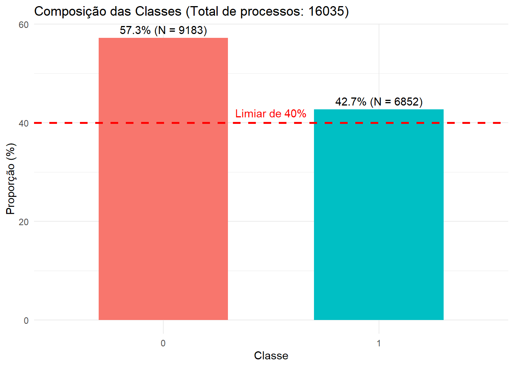
Como se pode perceber, a classe de processos sem risco corresponde a ~57,3% da base de dados, enquanto a classe de processo com risco corresponde a ~42,7% da base de dados. Segundo (MIRZAEI, 2021)11, uma composição de 60%/40% denota uma base de dados razoavelmente balanceada, não havendo necessidade de adoção de técnicas de balanceamento do dataset para aplicação dos modelos.
Dos dados ausentes
Observa-se que não há dados ausentes nos domínios4 nos atributos relevantes para a análise. Por conta disso, não há necessidade de se fazer tratamento específico para esse tipo de ocorrência:
# Avaliar a quantidade absoluta de valores nulos
na_counts <- sapply(dados_df, function(x) sum(is.na(x)))
na_counts_sorted <- sort(na_counts, decreasing = TRUE)
print(na_counts_sorted) nr_proc jurisdicionado
0 0
ano orgao
0 0
carreira cargo
0 0
flag_aposesp meio_publi
0 0
regra_apos qtd_vinculos
0 0
qtd_vinculos_pub qtd_vinculos_priv
0 0
qtd_vinculos_mesmo_cargo qtd_vinculos_mesma_carreira
0 0
p_vencimento p_ats
0 0
p_proventos p_gratificacao
0 0
p_vantpessoal p_insalubridade
0 0
p_adcqualificacao p_representacao
0 0
p_antecipacao p_indenizatorio
0 0
ind_sm rotulo
0 0 # Avaliar o percentual de valores nulos
na_percent <- sapply(dados_df, function(x) sum(is.na(x)) * 100 / nrow(dados_df))
na_percent_sorted <- sort(na_percent, decreasing = TRUE)
print(na_percent_sorted) nr_proc jurisdicionado
0 0
ano orgao
0 0
carreira cargo
0 0
flag_aposesp meio_publi
0 0
regra_apos qtd_vinculos
0 0
qtd_vinculos_pub qtd_vinculos_priv
0 0
qtd_vinculos_mesmo_cargo qtd_vinculos_mesma_carreira
0 0
p_vencimento p_ats
0 0
p_proventos p_gratificacao
0 0
p_vantpessoal p_insalubridade
0 0
p_adcqualificacao p_representacao
0 0
p_antecipacao p_indenizatorio
0 0
ind_sm rotulo
0 0 Conclusão
Demonstrada a formação da base de dados e realizada análise exploratória, obtém-se a base pré-treinamento, a qual é utilizada, usando código python, para o treinamento e teste dos modelos aplicados no escopo desta pesquisa.
Agradeço a atenção.
Qualquer dúvida, favor enviar para psfleury@gmail.com
Notas de Rodapé
-
Etapa da AED: Resumo estatístico das variáveis↩︎
-
Etapa da AED: Visualização gráfica dos atributos↩︎
-
Etapa da AED: Avaliação de domínio↩︎
-
Etapa da AED: Tratamento de dados ausentes↩︎
-
Etapa da AED: Exclusão de atributos redundantes ou irrelevantes↩︎
-
Etapa da AED: Análise de balanceamento de classes↩︎
-
Etapa da AED: Avaliação de dimensionalidade↩︎
-
Etapa da AED: Tratamento para evitar overfitting↩︎
-
Etapa da AED: Engenharia de features↩︎
-
Etapa da AED: Filtragem de dados ou remoção de outliers↩︎
-
Artigo: https://1drv.ms/b/s!Ai0lywhGwU_aj9BzF-p2NrQ6zgaHYQ?e=qTPZQn ↩︎